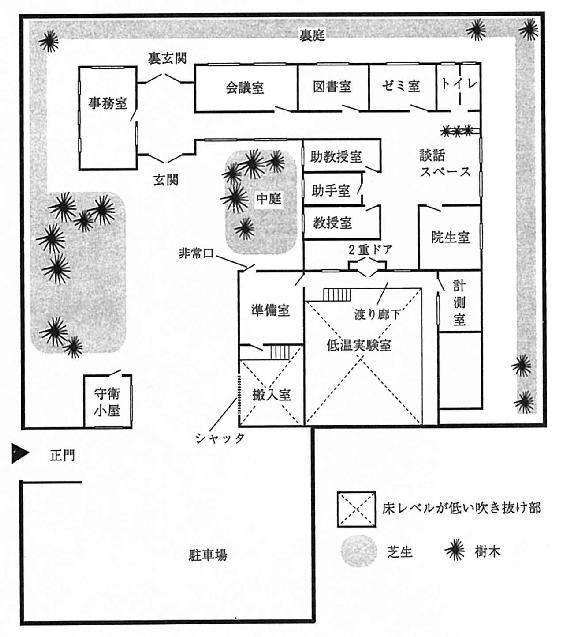

| 冷たい密室と博士たち DOCTORS IN ISOLATED ROOM S&M | |
| 森博嗣 | |
| 講談社 (1999) | |
ebpaj-guide-1.0
冷たい密室と博士たち
DOCTORS IN ISOLATED ROOM
森博嗣
DOCTORS IN ISOLATED ROOM
by
MORI Hiroshi
1996
PAPERBACK VERSION
1999

KirchhoffとNeumannの一意性の定理はポテンシャル論に対する基礎である。なぜならば、解の一意性が確立されるときは、与えられた境界値問題の一つの解を求めれば、〝その〟解が真の解となるからである。
しかし、何らかの方法で、解の一意性が成り立たなくなる可能性があるということが、この理論については重要である。すなわち、弾性柱が座屈したり、薄い殻が崩壊したり、航空機の翼がフラッタしたり、機械が何らかの意味で不安定になりうることがわかっている。〝安定性〟という語は、多くの意味をもっている。したがって、安定問題を定義するには、安定性という語の意味を定義しなければならない。ところが、広い種類の実際の安定問題は、解の一意性が成り立たなくなることと関連している。ある環境のもとに二つ以上の解が可能となり、これらのあるものは工学的な見地から危険となるかもしれないし、あるいは機械の機能に対して望ましくないかもしれない。このような場合、その環境は不安定を生ずるといわれる。
（Foundations of Solid Mechanics / Y.C.Fung）
極地研の教官
木熊 京介.........教授
喜多 北斗.........助教授
市ノ瀬 里佳......助手
極地研の職員
八川 善太郎......技官
横岸 卓也.........事務官
中森 敬子.........事務官
鈴村 春江.........図書事務員
向井 浩二.........守衛
小川 昌三.........守衛
極地研の学生
丹羽 健二郎......大学院生Ｄ２
服部 珠子.........大学院生Ｍ２
荒井 正直.........大学院生Ｄ１
船見 真智子......大学院生Ｍ１
若林 真二.........大学院生Ｍ１
北大路 智也......大学院生Ｍ２
下柳 久志.........大学院生Ｍ２
増田 潤............２年まえに失踪した学生
その他
犀川 創平.........建築学科助教授
国枝 桃子.........建築学科助手
西之園 萌絵......建築学科２年生
西之園 捷輔......萌絵の叔父
「犀川先生のお考えになった微積の問題ですが、これは......、ここの微分方程式の一般解を求める部分が、高校生の教科書には載っていない。それに、そうですね......、力任せに計算すると、ちょっと三十分では解けないのではないでしょうか」発言したのは中年の教授である。
「僕もそう思っています」犀川助教授は答える。「でも、ｙを左辺に移項して積分することに気がつけば、五分で答にたどり着くでしょう」
「それに気がつく人が何人いると思いますか？」
「たぶん、一割か、二割でしょうね。いけませんか？ それが試験というものではありませんか？ 少なくとも、この問題で人間をフルイにかけようというのですからね......、全員が解ける問題を作ったってしかたないでしょう」犀川は、なるべく感情を出さないように淡々と話した。
そう、試験とは本来そういうものだ。誰でもが解ける問題を出して、落ちこぼれを見つけるのではない。解けそうにない問題を出して、秀でた才能を発見するためにある。しかし、これを言っては喧嘩になるので発言はしない。普通の頭脳なら、犀川の言葉で充分に気がついたはずだ。
「そういった閃きが必要な問題は、敬遠されますよ」他の男が上品な声で言う。「そういう問題が出ると評価されることは、イメージ的にマイナスです。やはり、平均点が六十から七十くらいにはしてほしい」
評価するという動詞の主語は何であろう、と犀川は思う。マスコミか、それとも予備校だろうか......。
「わかりました......。では、僕の問題は取り下げて下さい」犀川は微笑んだ。これ以上、自分の主張を通すことは無意味だ。
「いや、この問題が優れているのは確かなんですよ」最初の教授が委員長を見ながら言う。「何か、もう少し、エレガントでシンプルなものに工夫できないでしょうか？」
誰でも、表現だけなら綺麗な単語を知っている、と犀川は思う。
「エレガントというのは、閃きが必要だという意味ではないですか？」犀川は言った。「シンプルというのは意味がいろいろだと思いますが......。力任せでも解けるようにしたら、エレガントでもシンプルでもなくなりますね......、きっと」
「まあ、その線で、もう少し考えていただけませんか？」委員長が犀川を見て言う。「この問題に関しては、来週また検討することにしましょう」
犀川は、しかたなく頷いた。
それから、彼はしばらく発言を控えた。頭の中で自分の意見をまとめるだけで、表向きは無表情に振る舞う。
犀川は、自分の授業でも試験は一切しない。問題を解くことがその人間の能力ではない。人間の本当の能力とは、問題を作ること。何が問題なのかを発見することだ。したがって、試験で問題を出すという行為は、解答者を試すものではない。試験で問われているのは、問題提出者の方である。どれだけの人間が、そのことに気がついているだろう。
犀川創平は、研究室の自分の部屋に戻ってきた。安物のプラスチックのブーメランのように、飛び出したときの勢いだけで彼は帰還する。回転力はしだいに失われ、疲れ果て、ふらふらになって帰ってくる。部屋を出れば、エネルギィは消耗されるだけだ。
もちろん、そうなることはわかっていた。
何か面白い発見があるなんて微塵も期待はしていなかったし、自分の持っている時間の一部を無駄に過ごす覚悟くらいできているつもりである。それでも、無意味な時間のあとには、下品なセールスマンに仕事を中断されたときと同一の不快感が必ず残るものだ。簡単には割り切れない。
そんな人間社会の執拗な攻撃にはもう慣れているはずなのに......。
三時間ほどまえ、嫌々部屋を出たとき、彼はクーラを止めなかった。だから、誰もいない部屋の温度を保つために、ずっとエネルギィが無駄遣いされていた。帰ってきたときに、せめてそれくらいの憩いが欲しかっただけだ。今、廊下の殺人的な熱気から突然解放され、犀川は思わず溜息をついた。
（まったく、馬鹿ばっかりだ）
そして、自分も......、たぶんその一員だと思う。そのことの方が腹立たしい。
委員会のファイルをデスクにどんと置く。それは、キャンパス内の生協で売っている一番安い紙製のファイルだった。委員会の資料というのは、内容の重要さに反比例して分量だけは膨大となる。たいてい、この安物のファイルの許容量を超えることになるが、座布団みたいに膨らんでも、なんとか一ヵ所に閉じ込めておきたいと無意識に考えるためか、無理矢理に挟み込んでいることがほとんどだ。
一時間で終わるはずの委員会は、もちろん予想どおりだったが、三時間かかった。入学試験関連の委員会である。夏休みの八月に開催されるのはこの委員会くらいかもしれない。年度末に行われる二次試験の問題を検討するための委員会で、犀川は、数学の問題作成委員であった。他の科目よりはいくらか気が楽である。どこで、誰が決めているのか知らないが、「親展」と赤字で書かれた封筒が年度の初めに届く。中身は一枚の紙切れで、動詞は「任命する」しかない一行の辞令。だから、「親展」という単語にマイナスのイメージを持つようになったのは最近である。入試に関しては、誰が委員なのか公表されないので、一週間に一度、非生産的な労働に駆り出されている苦労は周囲には知られない。いや、彼のいる世界では、それが当たり前のことだった。誰が何をしているのか、誰も監視していない。それが大学という職場なのである。
犀川は、そもそも、会議と名のつくすべての存在を生理的に受けつけない。もちろん、その場では、彼の持っている忍耐の最大出力で切り抜けるのだが、長い拘束から解き放たれると、いつも解放感よりは脱力感に支配される。最も驚くべきことは、会議が好きな連中がいる、という事実であろう。会議を長引かせている人種が、肌の色の違いよりも明確に犀川には識別できた。
（あれだけのことを決めるだけに、どうして三時間もかかるのだろう）
日頃、研究室に閉じ籠もっているから、会議というものが一種の社交場とでも思っているのかもしれない。異人種たちは、それが必要な「親睦」だと感じているのだろうか。おそらく、そうだろう。頭脳明晰な人間たちが、あんな無駄話をするというのは、そうとしか考えられない。その動機は認めよう。間違った感情ではない。人間にはそういった弱さがあるものだ。ただ、自分のような他人種を巻き添えにしないでほしい、と犀川は思う。望みはそれだけである。
もしかしたら、彼らは他人種との親睦を求めているのかもしれない。それならば、彼らの目的は表面的には達成され、実質的には明らかに逆効果だ。
忌々しいファイルをスチール棚に押し込む。部屋の小さな冷蔵庫を開けて、缶コーラを取り出した。最後の一本だった。犀川はアルコールがほとんど飲めない。そのかわり、夏はコーラを毎日消費する。それから煙草に火をつけた。最近の学内の委員会は禁煙である。三時間も煙草を吸えない情況は、ますます彼を苦しめた。
人工的ではあるが涼しい環境。氷は入っていないが冷えている缶コーラ。そして、今、深々と全身に吸い込まれたニコチン。良いことばかりを無理に考えようとする。
多少、機嫌が持ち直した。
部屋には観葉植物が三鉢置かれている。いずれも、自分で持ち込んだものではなかった。犀川には植物や動物に対する興味がまったくない。しかし、毎日出勤すると、彼はコーヒーメーカ用のガラスポットでこれらの居候たちに水をやった。そのポットには何ヵ月もまえからひびが入っていたが、今のところ、同等の機能を有するものが彼の部屋には他にない。
デスクの上には、二十一インチのディスプレイとキーボードがのっていた。その脇には小さなノートパソコンが閉じられている。そちらはいつも持ち歩いているものだ。二キログラムという重さは、けっこうな重量だが、だいたい彼は車で移動するので気にはならなかった。
キーボードに触れると、アメーバのような無意味な抽象画を描いていたスクリーンセーバが一瞬で消えて、ディスプレイにごちゃごちゃとした図形が現れた。スケジュール・カレンダの他に、三、四個のウインドウと呼ばれる四角形が重なっている。右手でマウスを動かすと、犀川は画面の後ろに隠れていた薄紫色のウインドウを前面に出した。このウインドウはＵＮＩＸの端末として機能している表示画面だ。一度リターンキーを押すと、画面が少し上方にずれて、最下段に文字が現れた。
You have new mail
新しい電子メールが届いた、というメッセージである。犀川はくわえ煙草で椅子に腰を下ろし、キーボードを叩く。画面にスクロールする文字を読み始めた。
極地研の喜多です。
いやあ仕事にならないよ。
もう二週間になるけどね。
でも、ちょっとはましになったかな。
論文の締切が迫っているし、
本当に早くなんとかしてもらいたいところだ。
あの警察の禿げたオヤジさ、
あれ頭悪いよな。
お前も呼ばれただろう？
お話にならない。
たぶん、警察は全然わかってないと思うね。
何度も何度も同じことをきくんだからな。
まあ、お互い、災難だった。
ところで、今夜、めし食いにいかないか？
同僚の喜多からのメールは、午後三時四十分に届いたものだった。犀川と喜多は、地元、那古野の私立高校で同じクラスだった。大学も同じ、大学院も同じＫ大工学部で、このときは京都で同じ下宿。Ｎ大で助手に採用されて那古野に戻ってきたのも同時である。犀川は建築学科、喜多は土木工学科で、分野も比較的近い。もっとも、助教授になったのは喜多の方が一年早かった。犀川は助教授になって今年で三年目。二人とも次の冬には三十四になるが、独身であった。
続いてもう一つメールが来ていた。
萌絵でーす。
五時に先生のお部屋に行きました。
私のことなんかお忘れになったのよね！
なあんて（微笑）。
先生のディスプレイのカレンダを
見ましたけど、
私との約束、入っていませんでしたね。
ちょっと頭にきてるけど、
デニーズで待つ。
犀川は小さく舌を打つ。すっかり忘れていた。
五時に萌絵が来る約束だった。委員会が長引いたのだからしかたがない、とは思う。しかし、忘れていたのは事実である。昨日、彼女から電話がかかってきたとき、犀川は新しい解析のプログラミング中で、彼女の話をほとんど上の空で聞いていたのだった。
西之園萌絵は、Ｎ大学の建築学科の学生だが、四年まえに亡くなった犀川の恩師の娘だったので、彼女が小さい頃からよく知っていた。あの西之園博士夫妻の静かなイメージとはまるで違う人格を、彼女はこの数年で形成しつつある。
いろいろな意味で、西之園萌絵は、犀川にとって特別な学生だった。何が特別なのか、曖昧であるが、曖昧のままにしているということが、一番、彼にとって特別なところといって良い。
（今日はもう仕事はよそう）
そう決めて、犀川は受話器をとる。記憶している数字の配置で、四つのボタンを続けて押した。
三回ほどベルが鳴って、相手が出る。
「はい、喜多ですが」大きな声が耳もとでして、犀川は思わず受話器を離した。
「もしもし、犀川だけど」精いっぱい元気そうに犀川は言った。
「ああ、創平か......。メール読んだ？ どう今夜？」相変わらずの長調の声。
「うん、実は先約があってさ、あの......」犀川は、ちょっと言葉を濁す。
「西之園さんだろ？」
「え？」犀川は少し驚く。
「いや、彼女からこちらに電話があったんだよ。お前を探してたみたいだったな。連絡ついたのか？」
（ああ、そういうことか......）
どうも、喜多との会話では、自分のペースがなかなかつかめない。
「あ、うん」とだけしか言えない。
「どこで食事すんの？ 俺も混ぜてほしいな。デニーズ？」
勘の良い奴だ、と思ったが、考えてみれば、大学に一番近いファミリィレストランだから大した推理力ではない。
「ああ、良いよ、西之園君はもうデニーズだと思う。僕も今から行くところだから......」
「じゃあ、俺は三十分くらいしたら行くから......。ちょっと、事件について話したいこともあるし......」
電話が切れた。
（事件について話したいこと？）
犀川は考えた。
事件......。
そう......、このところ忙しくて、棚上げにしていた問題。
いや、そうではない。この二週間......、あの不可思議な出来事から今日まで、犀川の頭脳の半分はずっと事件のことを考えていた。否、考えていたというような積極的な印象ではないが、少なくとも、思い浮かべてはいた。
それは認めなくてはいけない。
しっかりと認識することさえ困難な問題。
とにかく、不思議な事件だ。
喜多とそのことでゆっくり話し合う機会はこれまでになかった。事件に関してメールのやりとりはしていたものの、おおかたは警察に対する愚痴だった。
たぶん、問題から遠ざかろうとする本能的な反応だったのにちがいない。
喜多には何か考えがあるのだろうか？
事件のために、予定していなかった時間が消費され、最近の犀川は忙しかった。しかし、ようやく急ぎの仕事は片づきつつある。親友の話に耳を傾けるのも一興かもしれない。それに、事件以来、西之園萌絵と久しぶりに会えることも、正直いって嬉しかった。
ドアがノックされた。
「はあい」犀川は身支度をしながら答えた。身支度といっても、サンダルを運動靴に履き替えただけである。
背の高い瘦せた女性が入ってきた。男物の白いシャツにジーンズ。黒縁のメガネをかけている。髪形は男性のようだった。事実、犀川よりも彼女の方が髪が短い。
「ああ、国枝君......。ちょっと、僕、今から出かけるから......。今日はもう戻らないかもしれない」犀川は言った。
国枝桃子は、犀川が所属する講座の助手である。これほど第一印象の悪い人間も珍しいだろう。いや、第一印象どころか、彼女のことを不当に評価している年輩の教官は多い。彼女は少なからず無礼だし、口調は攻撃的だ。それに、相手を怒らせないと議論ができない不器用さ。無口で愛想のない人物である。けれど、犀川は彼女の能力を高く評価していた。
国枝は、挨拶というものを一切しない。
「ザイールの学生から先生に電話がありまして......」にこりともせずに、事務的に国枝助手が言う。留守中は電話が助手の部屋に回されることがある。「先生に研究指導を受けたいということです。研究生になりたいと」
「へえ......」犀川はちらりと国枝桃子を見た。「マスター？」
「いえ、国費で中国に留学して、上海大学のマスターを出ています。ですから、ここのドクターコースに入学したいということです。明日にも電話がまたあります」
「わかった。ありがとう」
犀川は答えて、部屋を出ようとしたが、まだ国枝助手が立っている。
「他は？」
「あと、二つあります」国枝は報告した。「県庁の建築部住宅課の方が二人来られました。これは異動の挨拶です」
国枝はまたしばらく黙った。犀川には、彼女のこの沈黙が耐えられない。
「もう一つは？」
「もう一つは、大したことではないのですが......」
国枝桃子には珍しく少し微笑んだ。いや、犀川の気のせいだったかもしれない。彼女が微笑むということ自体、非現実的であるし、極めて不気味だ。犀川は内心ぞっとした。
「何？」犀川は会話の間を嫌って尋ねる。
「これは、先生にお伝えしようかどうか迷ったのですが......」
「君でも迷うことがあるんだね」
「実は、私、結婚をすることにしました」国枝が言う。
「え！」犀川は声を上げた。
「突然で申し訳ありません。式は二ヵ月後です」
「そ、そう......」犀川はなんとか自分を落ち着ける。その行為は第一級の緊急事態に対応するモードである。犀川の中で、ベルが鳴り響き、すべての防火シャッタが次々に下りたようだった。
国枝桃子が結婚するというのは、殺人事件と同じくらいセンセーショナルである。国枝を知らない人間にどう説明すれば納得してもらえるかわからないが、彼女はそういった話題から最も遠い人間だと思っていたのだ。いや、犀川の偏見ではないはずだ。
「いやあ、驚いた。とにかく、おめでとう」
犀川がやっとのことでそれだけ言ったとき、国枝桃子は、いつもどおり黙って部屋を出ていくところだった。
十分ほど歩いて、キャンパスの近くにあるデニーズに到着した。犀川は、道すがら、ずっと国枝桃子の結婚の相手を想像していた。
（信じられない......、まったく......）
どう考えても不思議だった。
国枝桃子が結婚する？ いったい、誰と？
何のために？
国枝が、誰か他人と一緒に生活をするなんて、とても信じられない。
何が目的なのだろう？
いや、きっと、犀川の知らない国枝桃子がいるのだろう。それしかありえない。彼女が犀川の講座で助手として働くようになってまだ数年だ。彼女の人格のすべてを、犀川が知っているわけではない。いずれにしても、自分の国枝桃子像を修正して、この微笑ましい事実を受けとめるしかなかった。
レストランの駐車場に、西之園萌絵の真っ赤なスポーツカーが駐まっているのが見えた。犀川の乗っているオンボロのシビックが十台は買える値段だろう。彼女のその車には、犀川は数回乗せてもらったことがあったが、自動車としての機能は、明らかに犀川の車より劣っている。なにしろ、人間が二人しか乗れないのだ。
自動ドアを抜けて、「お客様お一人様ですか？」ときく店員を無視して、店の中を見渡した。「お一人様」という言葉に、犀川は少しどきっとする。彼は今現在独身だったし、もちろん、これまで結婚したことは一度もない。国枝桃子の結婚の話は、少なからず犀川を動揺させていた。国枝は犀川より四歳若い。男女でライバル意識を持ってもしかたがないのであるが、同じ講座の国枝助手が独身であることが、この手の話題から、ずっと犀川を守る防波堤だったようにも思える。誰かから、結婚の話をきかれれば、「いやあ、うちの国枝君なんか......」と逃げるのが常だったからだ。
店の一番奥に見慣れた顔をすぐ見つける。
西之園萌絵は、白い無地のＴシャツを着ていた。テーブルで見えないが、たぶんジーパンだろう。萌絵がスカートを穿いているのを最後に見たのは、もう何年もまえのことだ。彼女はサングラスをストレートのショートヘアにのせていた。アイシャドウが目立つ化粧。イヤリングはチョコボールくらいの大きさの卵形で、片方しかない。
女性の容姿について、その印象を他人に言葉で伝えることが犀川にはできなかったが、萌絵が周囲からどう見られるかはわかっている。誰もが、彼女を振り返るだろう。
元来、犀川にとって、女性の印象は実におぼろげである。今の彼女の外面的な印象は、犀川が感じている萌絵の本質とは少し外れていたが、では、内面的な印象とは何か、と問われても明確には答えられない。おそらく、犀川の認識が萌絵の成長より遅れているだけのこと、とも思える。
萌絵が小学生のときから、犀川は彼女を知っている。今よりも、ずっと大人しかったし、静かな少女だった。多少古い表現だが、清楚な女性であったと思う。それは、今の萌絵とは、北極と南極くらい遠い印象かもしれない。彼女のこの変化が、彼女の両親の事故死に起因するものであることは明らかだった。
萌絵は犀川に気がついて、微笑んだ。
「お忙しいのね、先生」萌絵は首を傾げて言う。
「委員会が予想外に長引いてね」
「それも、スケジュールのうちでしょう？ 先生のカレンダにも、委員会はちゃんと三時間とってありましたもの」
「悪いね」犀川は返答に窮する。「いや......、個人的なスケジュールはね、コンピュータには入れないんだよ」
犀川は噓を言った。萌絵は、犀川の部屋にやってきて、彼のコンピュータのスケジュール・カレンダを見たのだ。彼は、萌絵との約束をそこに入力するのを忘れていた。メールにあったとおり、彼女にそれを発見されたのである。こんなど忘れはよくあることだったが、萌絵との約束を忘れたのは初めてだ。
店員が注文をききにきたので、カレーライスとホットコーヒーを注文する。萌絵は既に食事が終わっている様子で、白いコーヒーカップだけが、彼女の前に置かれていた。
「実は、悪いんだけど、喜多がもうすぐここに来ることになってね」犀川は萌絵から一度目を逸らして呟いた。
萌絵は、両手でカップをかかえるようにしてコーヒーをすすっている。しばらく返事をしなかったが、数秒して答えた。「喜多先生かっこいいわ」
少なくとも自分よりは喜多の方がもてることを、犀川は自覚していた。
犀川は胸のポケットから煙草を出して火をつける。萌絵の表情を盗み見るように窺ったが、彼女は怒っても笑ってもいない。
「いろいろ大変だったろう、西之園君。何回警察に呼ばれた？」
萌絵は指で三と示して、目を思いっきり天井に向ける。
「電話なんか、もう、すごいんですから、毎日毎日。おかげさまで、ずいぶんお友達ができたわ、捜査一課の刑事さんに......」萌絵は早口で話した。「でも......、あの髭の刑事さんは嫌い。頭、悪いんだもの」
「僕たちはまだ良い方だ」犀川は軽く肩を竦めた。「一応、その......、部外者だったし、それに、君の叔父さんのおかげかもしれない」
西之園萌絵の叔父は、愛知県警の本部長であり、両親が亡くなった萌絵の現在の保護者でもある。
カレーライスが運ばれてきたので犀川は黙って食べ始めた。彼はカレーライスが好きだ。子供の好きな料理はすべて好きだし、高級な大人の味はたいてい苦手である。萌絵は、黙って天井を見つめて何か考えているようだった。
犀川が国枝桃子の衝撃的な話をしようか、と思っていたとき、萌絵が唐突に言った。
「先生......、私、一つ思いついたんですけど......」
「え、何を？」
「密室のメカニズムです。ねえ、煙草一本いただけないかしら？」萌絵はそう言ってテーブル越しに手を伸ばしてきた。彼女のこの要求は、初めてのことではない。
「駄目だ、煙草は駄目」犀川は萌絵の手を無視してカレーを食べる。萌絵はちょっとふてくされた顔をした。「密室？ 何がわかったって？」
密室と聞いて、犀川の脳細胞は多少反応していた。
（そう、密室だ......）
犀川と萌絵の身近で起こった事件、そして、偶然にも二人が関わることになった二週間まえの事件。
テレビでも新聞でも、大きく取り上げられているようだった。犀川は、テレビも新聞も見ないのでよくはわからない。だが、喜多や萌絵からのメール、それに、研究室のスタッフから聞いたところでは、これまでに「密室」という単語を使った報道はされていないようだ。それは、事件の詳細が公表されていないためであったし、犀川を含めて関係者にも、警察から口止めがされていた。犯人しか知らない情報として、後々重要な決め手になる可能性があるからだろう。
犀川は、「密室」という単語には馴染みがない。彼は推理小説を読んだことがなかった。その言葉を使ったのは、昨年、萌絵と二人で関わることになった驚異的な事件が初めてだった。もう、まる一年になるが、あの事件の顚末を犀川は詳しくは知らない。彼には、それはどうでも良いことだったのだ。あれははたして現実であったのか、と疑うほど、彼の記憶の中で未だに浮遊し続けている体験といえる。
けれど、今回の事件はもっと身近だった。
事件は、このＮ大学内で起こった。それも、同僚の喜多のいる研究施設だった。事件の関係者は、犀川のデスクの引出に入っている職員録や、端末から参照できる学内のデータベースに記載されている人物ばかり。犀川の現実的な領域に飛び込んできた突然の惨事だったのである。
密室......。
誰も入っていない。
誰も出ていない。
その部屋で......。
ぼんやりと、この二週間、犀川は思い出すことを避け、考えないようにしていたともいえる。それは、一年まえの事件の後遺症なのか、それとも、あまりに身近であったために、周辺環境を維持しようとする、動物的な防御活動であったのか。
locked roomという意味での密室......、これは非常に狭義であり、広義に解釈した場合の密室ならば、犀川たちの仕事場は、文字どおり、浮き世から隔離された密室であろう。しかし、密室殺人ということになると、それはもう現実のものと認識することはできない。それが、一年まえの事件が今でも夢のように思える理由だ。今回のように、現実の、それもこんなに身近で経験するような代物だとは思ってもいなかった。
その身近な密室殺人事件から、既に二週間という時間が流れている。
時が経つほど、犀川の頭の中で、密室殺人というこの言葉は植物のように成長していた。成長とは、この世で最も不気味な運動だ。初めは身近な死への単なる驚きだったそれは、今では、解けない数学の問題のような不可解さ、すなわち、鮮明な部分的形態と曖昧な全体認識を併せ持つ暗号文、あるいは、設計図のないプラモデルのようなもの、に成熟しつつある。こんな抽象的で鈍感な感情も、昨年の事件の後遺症、いや副作用であろう、と犀川は思った。
「よっ、お待たせ」
喜多がネクタイ姿で現れた。犀川は大学にネクタイをしていくことはほとんどないが、喜多はいつもネクタイだ。長髪で背が高い。日焼けしたスポーツマン風。事実、喜多はスポーツ万能で、学生時代は陸上部の選手だった。
喜多は、店員にステーキを注文すると、萌絵の方を見て、よそ行きの声で話した。
「おじゃましてすみませんね。西之園さん。煙草吸ってもよろしいですか？」
犀川は既に煙草を吸っている。犀川の学科の学生に対する喜多のその馬鹿丁寧な言い回しも適当とは思えない。犀川は、何か気の利いた皮肉を言ってやりたかったが、咄嗟に思いつかなかった。
萌絵が微笑んで頷いたので、喜多は胸のポケットから煙草を一本取り出して火をつけた。彼は、学生時代には煙草を金属製のケースに入れていた。煙草をいちいちあんなケースに移し替えるわけか、と犀川はいつも思ったものである。この習慣は最近やめたようだ。若いときから気障な男だったが、確かに自分に欠けているものの多くが喜多にあると、犀川は認めていた。二人は不思議に馬が合ったし、喧嘩らしい喧嘩もしたことがない。これだけ、友情が続くというのは、お互いに得るものがあるということだろう。
喜多のステーキが来て、しばらく、なんでもない馬鹿馬鹿しい世間話を三人はした。しかし、喜多も萌絵も馬鹿ではないので、この会話が無意味なことは充分にわかっていたはずだ。
テーブルが飲物だけになった。喜多はビール、萌絵と犀川はコーヒーである。
「電話で言ってた話って？」ちょっと沈黙があったときに、犀川が切り出した。
「ああ、もちろん......」喜多は、少し座り直して、新しい煙草に火をつけて言った。「事件のことなんだけどね......、なんというか、少し整理してみたいと思ったからさ。ちょうど西之園さんもいることだし......」
「整理するって？ 何をさ」犀川は先を促す質問をする。
「どこかが間違っているんだけど、それがわからない。そうだろう？ 君たちも考えているはずだ。お互いに、あの事件をどう認識しているのか、ちょっとディスカッションしないか？」喜多は真面目な顔でそう言った。「時間は......、いいんだろう？」
（どう認識しているか、か）
確かにそうだ、と犀川は思った。自分はどう認識しているだろうか。どう消化しているのだろう。いや、消化できているとは、とても思えない。
「西之園さんは、どう？」喜多が萌絵の方を見てきく。
「それそれ、それがしたかったんです、私」萌絵は身を乗り出し、嬉しそうに答えた。「不謹慎かしら、こういうのって、なんか、もの凄くわくわくしません？」萌絵のしゃべり方は、喜多を意識してか、いつもよりも大人びていた。
「僕には、何も話すような考えはない」犀川は椅子にもたれて、一歩退く感じを出す。「まあ、二人の意見を拝聴しよう」
何か自分には納得のいかない現象を観察したとき、人間は二つのグループに分かれる。これは、犀川がよく授業で口にする二分法の一つだった。世の中には不思議なことがあるものだ、と鵜呑みにできる人種と、どうしても理屈が知りたくなる、解釈をしたくなる人種の二つである。マジックショーを見ても、ＵＦＯの話題になっても、不思議を鵜呑みにできる人種は、ある意味で精神が安定している。このタイプが、どちらかというと女性に多いというのは、偏見には違いないが、統計的な事実だとも思う。一方、自分の知っている科学的知識で解決できない事象を、どうしても認めることができない後者の人種は、不思議を不思議のままにして飲み込めない。
少なくとも、科学的・論理的な仕事をしている犀川の周辺にいる人間たちは、例外なく、すべて後者のタイプに属する。きっと、喜多や萌絵の方が、自分よりもその傾向が強いだろう、と犀川は想像した。
犀川自身、事件のことはまったくの未消化であったが、このままにしておくつもりは、もちろんなかった。ただ、ゆっくりと検討してみようという余裕がこれまでになかっただけのことだ。
窓の外には、車が渋滞したメインストリートが見えた。黄色と赤とオレンジの光が動いている。少しフォーカスを変えると、窓ガラスに映った自分たちの姿。
萌絵の横顔も映っている。
ひらりと、死体の映像が犀川の脳裏に蘇った。
絵の具をこぼして描いた抽象画のような血液のフラクタルな模様。
ほとんどの人が経験したことのない息苦しい空気。
そして、異臭。
ああ、これが人間という生き物か、と感じた。
暑い夜だったが、あの凄惨な空間だけは、ひんやりとして寒かった。暗い重い粘性液体のような空気の中で、湿った光が流動し、分散して、勝手な運動をしているようだった。視覚は遠い回り道をして脳細胞に届いた。あれを見たとき、犀川は鼻がむずむずしたのを覚えている。
何もかもしっくりこない。
初めからそんな感じがした。
当然ながら、類似も相似もない。ヒントも解説もない。そう、それは、今まで見たことのない新しい記号にも思えた。倒れていた死体を見たとき、これは、なんという文字だろう、と考えたことを犀川は思い出す。
あの違和感はいつから始まったのだろう......。
犀川は初めて、事件のことを真剣に考えている自分を感じた。
まず、何が問題なのかを考える必要がある。
レストランの壁には無愛想なデザインの時計があった。七時五分まえ。まだ、外は明るいが、ゆっくりとライトダウンし始めている。夏休みでもあり、犀川たちの他に客は少なく、店内は充分な距離が客同士の間に開いていた。懐かしい音楽が静かに流れている。
犀川は、喜多と萌絵の話に耳を傾けていた。
二週間まえの事件を二人は極めて正確にトレースしている。時間経過を順序立て、あの晩、何が起こったのかを整理すること......、脳細胞にランダムに仕舞い込まれた部品をシーケンシャルに並べること......、それは一種の才能といえる。犀川が不得意とする能力だった。
犀川も何度か口を挟もうとしたが、どうも事件に関係がありそうな重要なことには思えなかった。ただ、実に細かい点についてまで、記憶されているものだと彼は不思議に感じた。
「かえって、死体が見つかるまえの記憶の方が鮮明だね」ビニルのシートに深く腰を掛けていた犀川は目を瞑って口にした。
これまでのところ、彼らの話の内容は、事件が発覚する以前の観察事項の再現に終始していた。萌絵の記憶力は抜群だったし、しかも関連する情報のアクセスが非常に速い。彼女は、他人の表情から的確な洞察をよくする。それに、犀川の知っている人間の中でも、萌絵は飛び抜けて頭の回転が速かった。
集中力が必要な作業だったが、彼らはこういったディスカッションには慣れている。既に、事件のことを話し出して三十分ほど経過していたが、誰もメモなど取らなかった。メモが必要なほど複雑な情報とは思えないし、それほど、彼らの脳細胞は老化していない。
窓ガラスの外はもうずいぶん暗くなった。ほとんどの車のヘッドライトが点灯し始めている。それを見ている自分を認識して、犀川は少し驚く。萌絵と喜多は、二週間まえの殺人現場に自分たちの記憶のダイヤルをチューンしているようで、周囲を見ている様子はない。犀川だけが、二人よりもある意味で客観的な立場にいる。
「しかし、やっぱり一人で考えるよりも、話し合っている方が、いろいろ細かいことを思い出せる」喜多は、真剣な顔で言った。「アウトプットすることは、頭脳にとってなかなか刺激になって良い。メールで話しても、これだけの情報は伝えられないよ。それにしても、西之園さんの観察力、それに記憶力は凄いな」
「でも、今までの話は、死体発見のまえのことじゃないか」犀川は煙草を吸おうとしている。それは最後の一本で、彼は箱をねじってテーブルに置いた。「まだ、全然関係ない。本質とは無縁だ。それよりも、もったいぶらないで、君たちの考えていることをさきに聞かせてほしいな。密室のメカニズムについての可能性？」
「いや、駄目だ。さきに事象の確認が必要だ。自分だけで思い込んでいることがあるかもしれない」喜多が犀川の提案を取り下げる。
「そう、いきなり答では面白くないわ」そう言ってから萌絵は犀川にきいた。「ねえ、先生。今、本質っておっしゃったでしょう？ 本質って何ですか？」
「うーん、つまりね」犀川は答えようとした。つまりね、などと口にするときは、おおかたの場合、実は言うことがまだ決まっていない。時間稼ぎをしているわけである。「誰が殺したのか。どうやって殺したのかっていう本質的な問題と、関係があるとは思えない。何ていうのかな......、何かを見落としているとしたら、それは、死体が発見された直後の混乱のときではないか、という気がするんだけど......」
「その辺は、メールでもう充分に議論したと思いませんか？」萌絵が反論する。
「まあまあ......。もう少し、思い出してみようじゃないか」喜多が言った。
ピピという電子音が鳴る。
最初は誰かの時計かと思ったが、萌絵がハンドバッグを開けて音を止めた。
「すみません」彼女はテーブルから立ち上がった。犀川が席を立って萌絵を通す。
ポケベルの音だったのか、と犀川はようやく気がついた。彼はその機械を持ったことがない。以前、何故携帯電話を持たないのか、と萌絵に尋ねてみたことがある。西之園家の令嬢なら、それくらい当然だと犀川は思ったからだ。彼女の返答は、実に納得のいくものだった。「いつも電話に出なくちゃいけないほど、私、プアーじゃありませんから」
萌絵は、「心配性の年寄りがいるの」と独り言のように呟いて、レストランの入口のところにある電話ボックスへ歩いていった。ブルージーンズの後ろ姿を犀川の目が追う。
「年寄りって？」喜多が小声できいてきた。「西之園夫人も亡くなっているだろう？」
「ああ、何というのかな......。執事？ 執事のお爺さんだよ」犀川は答える。あまり西之園家のことを話したくなかった。
「執事？ 今どき？」喜多は笑いながら言う。
しばらくして、萌絵が戻ってきた。喜多もビールはやめてコーヒーを注文している。犀川は販売機に煙草を買いにいった。今日中にもう一箱吸ってしまいそうだ、と彼は思う。
犀川が戻ると、三人のディスカッションはすぐに再開された。
不思議な問題......。
解かなければならないパズル......。
真夏の夜は、歯医者の待ち時間のように、長い。
二週間まえの事件当日、八月十一日の金曜日。
西之園萌絵はステアリングを握っていた。
助手席には犀川が黙って乗っている。犀川助教授は萌絵の所属する建築学科の教官で、専門は建築生産史。彼女は、まだ学部二年生だったが、Ｎ大学に入学以来、犀川の研究室を頻繁に訪ねていた。犀川は、彼女の亡くなった父親の最後の弟子であったので、親族のようなつき合いが、もう十年も続いている。
彼女は、父や犀川の研究分野に特に興味があったわけではない。
しかし、理由はよくわからないが、犀川は彼女にとって、特別な教官だった。
犀川助教授と喜多助教授との約束は六時である。
犀川は約束の時間に遅れることが嫌いだ。いつも萌絵にそう話している。多少、病的とも思えるが、犀川は、毎日、時計の秒針を合わせているのである。彼は、いつも約束の時間より早めに到着する。授業にも絶対に遅れないそうだ。人を待たせるという行為は、他人の時間を盗むことだ、というのも彼の口癖だった。
しかし、今日はぎりぎりだ。
（先生は黙っているけど、時間を気にしている）
約束の時間に遅れそうなのは、自分のせいだ、と萌絵は思う。
でも、まだ約束の時刻まで五分ほどある。
萌絵は、アクセルを深く踏み込んだ。
喜多助教授は、犀川の高校時代からの親友らしい。コンピュータの電子メールを通じて、犀川と喜多は日頃から無駄話をしているという。喜多の話は何度か聞いていた。彼は土木工学科の助教授である。萌絵は建築学科の学生なので、喜多助教授にはまだ会ったことがなかった。
土木工学科の建物は、建築学科のすぐ隣だった。歩いても数分である。当然、喜多助教授もその建物にいるものだと思っていたので、萌絵は、約束の時間ぎりぎりに犀川の部屋へ行ったのである。
ところがそうではなかった。喜多がいる施設は、歩いていける場所ではなかったのだ。キャンパスから十キロほど山手に入ったところに、四年ほどまえにできたばかりの新しい研究施設があり、そこに、喜多の所属する講座だけが引っ越していた。犀川は、そのことを話してくれなかったし、もちろん萌絵も知る機会はなかった。今、約束の時間に遅れそうな原因は、このちょっとした彼女の思い違いにあった。
喜多助教授の在籍する新しい施設は、〈極地環境研究センタ〉、略して〈極地研〉と呼ばれている。喜多の講座のボスである木熊教授の力で特別に設置されたものだ、と犀川は車中で説明してくれた。
「どんな力なんですか？」萌絵は素朴な質問をした。
「うーん、つまり、政治力ってやつかな」犀川は当たり前の返答をしてから、微笑んだ。
木熊教授が具体的にどんな政治力を持っているのか、きっと犀川には興味がないのだろう。彼の表情を見るまでもなく、彼女にはそれが理解できる。
（先生はそういうことが嫌いなのだ）
その点が、萌絵の父親、西之園恭輔博士と犀川が一番異なっている点でもある。西之園恭輔は、事故で亡くなったとき、Ｎ大学の総長だった。
極地研の木熊教授と彼の数々の研究業績については、犀川も精通しているようで、簡単に説明してくれたが、萌絵にはよくわからなかった。しかし、土木工学の力学や構造の分野であることは理解できた。以前から、極地研の実験施設を見せてもらえるように喜多助教授にそれとなく頼んであったのだ、と犀川は言う。
昨日の夕方、萌絵が、いつものように犀川助教授の部屋を訪れ、コーヒーを飲んでいるとき、ちょうど、喜多助教授から電話が入った。
「明日はずっと実験をしてるよ。いつでも見にきたらいい」喜多の大声が、犀川の持っている受話器から漏れ、萌絵のところまで充分に聞こえてきた。
「うん、申し訳ない。ちょっと五時までは予定が入っていて、抜けられないんだけど、何時までやってるの？」犀川はディスプレイの中のカレンダを見ながら申し訳なさそうに答えている。今日の明日ではスケジュールが合わないのに後ろめたいことはない、と萌絵は思う。けれど、ついつい謝ってしまうのが、犀川らしい。
「大丈夫、そうね......、八時頃まではやっているよ」と喜多の返事。
「ああ、それなら行けそうだ」
「マイナス二十度でビールを飲むかい？」
（マイナス二十度？）
ビールの温度ではない。極地研にある低温度実験室の室温のことを言っているのだろう。以前から聞いていたので、萌絵にもすぐにわかった。
「うん、ああ、一杯くらいなら......」犀川は消極的な返事をしている。彼はアルコールが飲めないので正直に自分の許容量を示しているのだ。
「はは、わかってるよ、そんなこと。じゃ、何時に来る？」
萌絵は、自分の鼻先に人差し指を小刻みに当てて見せ、目を大きくして、電話をしている犀川の顔面に接近した。犀川は、萌絵を見て顔をしかめたが、彼女のジェスチャの意図をすぐに理解したようだ。
「あ、えっとさ、学生を一人、その、連れていきたいんだけど......。良いかな？」犀川のしゃべり方は歯切れが悪い。「いや、その......、無理にというわけじゃあないんだけどね」
「もちろんいいさ」喜多はそう答えてからきいた。「国枝さんは？」
「残念だけど、国枝君は、今日も明日も出かけている」犀川は答える。助手の国枝桃子は東京に出張中だった。
「あそう。で、何時？」喜多は質問を繰り返す。
「じゃあ、六時に行くよ、よろしく」犀川は腕時計を見ている。
明日の約束だから、今時計を見ても意味はないのに、と思って萌絵は吹き出した。
「ＯＫ、じゃ六時」喜多は、電話を切った。
犀川は、受話器を置いてから萌絵を睨む。彼女は思わず舌を出した。きっと、学生を連れていくなんて言ってしまったことを犀川は後悔しているのだ。彼の目の表情でそれがわかる。犀川は鯨みたいに気が重くなったようだが、萌絵は逆だった。犀川と一緒にいられる時間が、面白いミステリィを読んでいるときと同じくらい、彼女には純粋に楽しいのだ。
というわけで、萌絵の運転する赤いスポーツカーは犀川を乗せて、猛スピードで極地研に向かっている。シートは二つしかないので、犀川がいつも持ち歩いている膨らんだ大きな鞄はトランクの中だった。そのくたびれた鞄を、犀川は十年以上も使っているらしい。古いだけではない。その鞄のセンスの悪さは何とかしなければいけない、と常々、萌絵は感じていた。本当にどうしたものか、と一晩真剣に考えたこともあったが、結論はまだ出ていない。気の短い彼女が、こんな単純な問題を未解決のままにしている。適切な解決方法も思いつかない。そんな馬鹿みたいな自分は初めてだったし、萌絵には驚異的な経験だった。それが、彼女にとって犀川が特別な人間であるという理由である。
助手席の犀川は、白いシャツにネクタイだった。木熊教授に会うことになるので、ちゃんとネクタイをしてきたのであろう。萌絵が知っている限り、犀川はネクタイを二本しか持っていないようだ。今までに見たことのあるものは二種類しかないし、いずれもほとんど同じ色だ。さらにつけ加えるなら、犀川はいつも同じ色の靴下を穿いている。どうやら、同じ色のものを何足も持っているらしい。萌絵は勇気を出して一度その理由をきいたことがある。犀川の答は簡単だった。
「同じものを沢山持っていれば、片方の靴下がなくなっても、もう片方が使える」
犀川は、ちらりと助手席から萌絵の方を見た。
彼女は、サングラスをして、タンクトップにジーパンである。フォーマルな服装ではない。
（少し、派手だったかしら......）
犀川の仕種から、萌絵はそう直感した。
オレンジのタンクトップ。細い色白の腕は、太いステアリングに伸びている。犀川は、運転席の萌絵をちらりと見た。それに、紫のアイシャドウ。
萌絵に対して、化粧する必要なんてないのに、と言いたいと思ったことは幾度かあったが、犀川は口にしたことはない。別に、本質には関係がない。化粧で悪くなるというわけでもない。
（いやはや......）
「いやはや」という言葉は死語だ、と以前に萌絵に指摘されてから口にしないようにしている。
極地研の建物が見えてきた。
森林を切り開いた斜面に、白いコンクリート造の低層建築が埋まるように建っている。周辺には人家も疎らで、道路や歩道は色彩が新しく、並木はどれも貧相に撓っていた。本道からのアプローチは、ゆるやかな坂となり、五十メートルほど上ると、正門に到着した。〈Ｎ大学工学部・極地環境研究センタ〉と書かれたプレートが適度に誇示され、コンクリートの塀に埋め込まれている。建物の裏手はすぐ森のようだ。このゲート以外に車が入れるところはなさそうである。ゲートを入った左手に、シンプルなデザインの小屋があり、守衛らしき人影が見えた。
幸いにも、助手席の犀川の方が近い。彼はパワー・ウインドウを開けると、守衛に向かって声をかけた。
「喜多助教授のところへ行くんですけど......。建築学科の犀川といいます」
ガードマンの制服の一人が、小屋から出てきて、紙を挟んだボードを犀川に差し出した。
「これに名前を書いてね」守衛は言った。白髪の混じった背の高い初老の男である。胸の名札に〈向井〉とあった。「そちらの人は？」車内を覗き込んで、運転席の派手な娘のことをきいた。
「うちの学生です。彼女の名前も書く必要がありますか？」犀川は毅然として答える。彼女がどんな服装であろうと、犀川が恥じることではない。
「ああ、書いておいてね」守衛はにこりとして答えた。
サインしてボードを手渡す。萌絵のスポーツカーは右手の駐車場にゆっくりと滑り込んだ。他に十台ほどの車が駐まっていた。車を降り、また、守衛小屋の方に引き返すことになる。研究所の玄関はずいぶん奥にあるようだ。
駐車場から見た極地研の建物には窓がなかった。出入口らしいものも見えない。コンクリートの打ち放しで、なかなかきれいな仕上げだった。一般には知られていないが、タイルや吹き付けなどの仕上げに比べて、仕上げをしない「コンクリート打ち放し」が最も施工が難しいのである。建築学科の犀川には、極地研の建物が好ましく思えた。
守衛小屋の横を通り過ぎるとき、さきほどの白髪の男がまた歯を見せてにこりとした。ガラスの中には他にもう一人の男が見える。
「五時過ぎてるからね、玄関でインターフォンを押して下さい」白髪の男が小屋の窓を開けて言った。
そこから、かなり急な坂を上らなければならなかった。
「五時でロックされるのか。大学の施設にしてはしっかりしている」犀川は萌絵に言った。
「そうですね。先生の部屋なんか、いつでも、誰でも入れるでしょう？ やっぱり、セキュリティというのは、守るべきところを守るわけですね」萌絵が冗談を言う。彼女はサングラスを車に置いてきていたので、瞳の大げさな動きがわかる。
「ここに、そんな財産や、最先端の情報があるとは思えないけどね。たぶん......、建物が新しくて、システムも新しい、というだけじゃないかな」
守衛小屋の向かいには、研究所の大きなシャッタがあった。おそらく、そこが実験室だろう。シャッタは今は閉まっている。坂を上ると、両側に芝生と低い樹木があり、右手の芝生は、建物に三面を囲まれた中庭風だった。二人は、正面のガラス張りの玄関らしいところまで歩く。近づくと、シンプルなステンレス製のインターフォンがあった。玄関のドアは押しても引いても開かない。
「はい」ブザーを押して数秒待っていると、スピーカから男の声が聞こえた。
「喜多助教授に会いにきた者です」犀川はインターフォンに向かってしゃべる。
やがて、ガラスの向こう側に男が現れ、無造作にドアを押した。かちゃりと音がして、ドアが犀川たちの方に開く。中からは開けられるようだ。
「建築の犀川先生ですね。そちらは......」男の視線は、犀川の後ろの萌絵の方をしばしさまよった。「学生さん......？ ですよね？」
「そうです」犀川はまた毅然として答えた。
犀川と萌絵は中に入る。冷房が軽く利いていた。
「どうぞ......。この奥の突き当たりを右に曲がって、黄色のドアの最初の部屋です」男は廊下の先を示して言うと、玄関の左の部屋に退いた。彼が入っていったドアのプレートには、〈事務室〉とある。事務室には、廊下側に大きな受付用の窓があり、中の様子がよく見えた。室内では、もう一人女性が机に向かって仕事をしている。
犀川と萌絵は廊下を進んだ。
左手に〈会議室〉、その次の部屋は〈図書室〉とある。どの部屋も天井に近いところに採光窓が並んでいたので、室内の照明がついているのがわかった。会議室からは、人の声が聞こえた。図書室の次の部屋は暗い。右手には、途中まで中庭が見える大きな窓が二つあったが、あとの半分は壁で、そこに掲示板があった。「木熊研納涼コンパ、氷点下二十度！」と書かれたピンクのビラが貼ってあるのが目に留まった。他にもポスタや事務的な掲示がところ狭しと貼りつけてある。
「なぁんか、先生......、むきになってません？ 原因は私の服装かしら？」萌絵が小声で言った。
鋭い洞察である。彼女は勘が良い、と犀川はいつも感じる。
「いや、ネクタイをしているから首が苦しいんだよ」犀川はごまかした。
廊下を右に曲がり、最初は見えなかったが、少し窪んだ壁に、黄色のドアが見つかる。時計を見ると六時一分四十秒だった。犀川の時計は秒針まで正しい。毎朝、合わせるのが彼の習慣である。
黄色いドアは三つあった。〈喜多助教授〉と書かれたドアを犀川はノックした。
喜多助教授が顔を出す。
「おや、これはこれは」喜多は、萌絵を見て言った。
「なんだい？ これはこれはって」犀川が尋ねる。
喜多は、萌絵の想像していたとおりの男性だった。日焼けして健康的で、犀川とは対照的である。
「えっと、犀川のところの学生さん？ こんな可愛い子、犀川研にいたっけ？」喜多は、萌絵を注目したままで、犀川を一度も見ない。萌絵は微笑んで頭を下げた。
「すまない、約二分遅刻した」犀川が喜多に言ったが、喜多は聞いていないようだ。
（やっぱり、先生は時間を気にしていた......）
萌絵は少し可笑しかった。
「えっと、名前は？」喜多が萌絵に尋ねた。
「西之園といいます。よろしくお願いします」萌絵はもう一度お辞儀をする。
「西之園さん......。どうも......、よろしく。西之園さんは、コーヒー？ コーヒーお好きですか？」喜多は笑いながら話した。そういうしゃべり方なのかもしれない。「えっとね、今、ちょっと散らかっているから......、そうだ、そこに座りましょう」
喜多は、自分の部屋のドアを後ろ手に閉めて、廊下の反対側の広くなった空間を指さした。ロビィのようになっているスペースで、ソファやテーブルが数組置かれていた。背の高い観葉植物も幾鉢かあり、なかなかアメニティな空間である。萌絵は、以前に犀川から「アメニティ」と「快適」の違いを聞かされたことがあったが、アメニティには、より積極的で押しつけがましい主観的な快適さ、というニュアンスがある、というのが犀川の定義だった。
「なんで？ 君の部屋は？」犀川がちょっとむっとしてきく。
「駄目だ、ちょっと散らかっているからね」喜多は笑いながら同じ言い訳を繰り返した。
「散らかっていたってかまわないよ」
「お前なら入れてやってもいいけどな......。まあまあ、いいから、いいから......。今、コーヒー持ってくる。西之園さん、いい名前ですね。コーヒーで良かったですよね？」
萌絵が頷くのを確認して、喜多は、急いで自分の部屋の中へ姿を消した。
「コーヒーで良かったですよね？」犀川は小声で喜多の口真似をした。こんなことをするときの犀川は最高に機嫌が良い、と萌絵は思う。
二人は、廊下の反対側のアメニティ・スペースで、ソファに腰掛ける。犀川は両手を頭の上で組んだ。
「調子の良い奴だろう？ 長調の男と呼ばれているからね」
「犀川先生はマイナ？」萌絵は即座に言った。
「回転が速いね」犀川もすぐに言う。
〈ちょうちょう〉と聞いてから〈長調〉に、そして〈短調〉つまり〈マイナ〉に思考が一瞬で到達する速度を犀川は評価しているのだ。萌絵は、計算には自信がある。息を止めて、思考を加速するときの快感は、自分だけのものだと最近まで思っていた。犀川がどれくらい計算が速いのか萌絵にはわからない。けれど、今の犀川の発言は、明らかに最初から相手のレスポンスを予測していた素早さがあった。
喜多は、プラスチックのお盆にコーヒーカップを三つのせて戻ってきた。慣れた手際である。
「まったくね......、大学の先生って、こんなことも自分でやるわけだ」喜多はにこにこして腰掛ける。
ミルクのパックとシュガーのスティック、それにスプーンが一組だけのっていた。しばらく見ていたら、喜多も犀川と同様にコーヒーはブラックだったから、明らかに萌絵のために用意されたもののようだ。しかし、萌絵もコーヒーはブラックだった。コーヒーに不純物を混ぜることは、コーヒーを冒瀆する行為であると、犀川はよく言う。萌絵は、ミルクや砂糖を入れると胃にもたれるのが嫌なだけだった。
「実験は？ すぐ見られるの？」犀川はコーヒーを一口飲んで、煙草に火をつけると言った。この談話スペースには灰皿がある。キャンパスでも喫煙可能な場所は少ない。おそらく、個人の部屋を除いて、この建物で唯一の喫煙スペースだろう。
「今、連中は打ち合わせ中だ。よく知らんけど、全員会議室に籠もっているようだね。実験はまだ終わってないはずだから、ちょっと待ってれば、また始まるよ。まあ、俺だけ関係ないわけだ」喜多も煙草に火をつけた。「木熊先生は実験屋だからね。ここの助手も、院生も、みんな教授つきだよ。計算屋は、俺一人」喜多の大声もヴォリュームが下がった。
「じゃあ、ここにいる意味はあんまりないわけだ」犀川が言った。
「まあ、教授、助教授、助手のワンセットは入れとかないとね、文部省に体裁が悪いから。でも、まんざらでもないよ。建物は新しいし、それにここは......」喜多はますます声を落として囁いた。「土木工学科には珍しく、美人も多いし」
「馬鹿馬鹿しい、どちらも意味がない」犀川が冷たく言う。
「お前にはな......」喜多が言い返した。
萌絵は黙って二人の会話を聞いている。コーヒーは、猫舌の彼女にもなんとか飲める程度の温度だった。
犀川はコーヒーを飲みながら建物の内装を観察した。新しくて綺麗だったが、安上がりの仕上げだった。しかし、国立大学の施設にしては、平面計画はゆとりがある方だろう。
「今のうちに実験室を見せてやるよ」そう言って、喜多が立ち上がった。
喜多はコーヒーをぐっと飲むと煙草を灰皿に捨てて、玄関の方へ歩いていった。今、犀川たちがやってきた方向である。途中の右手の会議室のドアを開けて、喜多は顔を中に突っ込んだ。何か話しているようだ。彼がドアから離れると、中から学生風の若者が一人出てきた。喜多とその男が、犀川たちの方に戻ってくる。
「あれ......、下柳先輩、わあ、こんにちは」萌絵が、両手で持っていたコーヒーをテーブルに置いて立ち上がった。
喜多の連れてきた若者は、少し驚いた様子だったが、すぐににこりと白い歯を見せる。ひょろっとした長身の男で、ぶかぶかのズボンから大きめのＴシャツを出して、だらしなく着ているが、これは、最近のファッションで、けっしてだらしがないわけではないらしい。深いバスケットシューズが暑苦しそうだ、と犀川は思った。
「知り合い？」喜多が、萌絵とその学生の顔を交互に見た。
「クラブの後輩です」下柳と呼ばれた学生が答える。彼は萌絵の方を見てきいた。「西之園さん、どうしてここへ？」
「私、建築学科だから、見学に......」萌絵が小声で答える。
「西之園さんって、工学部だっけ？ 僕、文学部だと思ってた」下柳は笑って言った。
「クラブって？ フィギュアスケート部かなんか？」喜多が下柳に尋ねる。喜多特有のジョークである。犀川はなかなか面白いと思ったが、萌絵も下柳も笑わない。
「違いますよぉ。漫研です。マンガ研究会」恥ずかしそうに下柳が言った。
確かに、漫研というのは少し恥ずかしい響きがあるな、と犀川は思う。
萌絵が漫研とミステリィ研と弓道部に所属していることは犀川も知っている。他にもまだあるかもしれない。彼女は、それらのどれに関しても特に熱心ではなさそうだった。だいたい、熱心だとしたら三つも掛け持ちはできないだろう。おそらく、彼女は、あちこちから勧誘されやすいタイプなのだ。
「彼は木熊研のＭ２（大学院修士課程二年）の下柳君。こちらは建築学科の犀川助教授。俺の悪友だ」喜多は面識のない二人を紹介した。
（悪友？）
犀川は込み上げる笑いを抑えた。なんて古くさい表現だろう......。横目で萌絵の方を見ると、彼女も可笑しさをかみ殺した表情だった。同じ理由で笑っているに違いない。
「ちょっと、下柳君に、実験室を案内してもらおうと思ってね。俺がすると、触っちゃいけないものに触って、また木熊大先生や八川さんに叱られたりするからさ」喜多が早口に説明した。
「打ち合わせ中じゃなかったの？」犀川は下柳に尋ねた。
「いえ、いいんです。僕の役目はどうでもいいことだから......。僕だけ、隠れ喜多研なんです」下柳は会議室の方を振り向いて答えた。
隠れ喜多研というのは、書類上の指導教官が木熊教授で、実質的な指導教官が喜多助教授という意味だろう。よくあるパターンである。
喜多は、電話をかける用事があると言って、コーヒーカップを持ったまま、自分の部屋に入っていった。廊下からちょっと凹んだ部分、その長方形の三辺のそれぞれに黄色のドアがある。向かって右側は喜多助教授、中央は市ノ瀬助手、左側は木熊教授の部屋であることを示す名札がそれぞれのドアにあった。
（中央が助手というのは、なんか変だな）
犀川は一瞬そう思った。一応、建築学科の教官であるので、だいたい建物の中を歩けば、平面図が頭に浮かんでくる。この建物に入るまえに見た中庭に並んだ三つの窓が、三人の教官たちの部屋の窓だ。外の壁は平面で、凹凸はなかった。つまり、廊下側の入口の部分が凹んでいる分だけ、中央の助手の部屋が一番奥行きが短く、狭いことになる。変則的な設計だが、意匠的には面白い。
廊下のこちら側の談話スペースの隣にも一部屋あり、そこのオレンジ色のドアには〈院生室〉と書かれたプレートがあった。
犀川と萌絵は、下柳について廊下を奥へ進んだ。
突き当たりの正面に、大きなスチール製の両開きの赤いドアがあるが、この部分は壁から一メートルほど手前に張り出していた。ドアの上の壁に、〈低温度実験室〉とある。右に廊下が折れ曲がっているように見えたが、近づいて視野に入ると、行き止まりであることがわかった。このオープンなスペースに、机が三つ置かれていて、コンピュータが並べられていた。すべて、古いタイプの二十一インチのカラーディスプレイで、図体がかなり大きい。一番右の机に、作業服姿の男が一人座っていた。彼は画面を見ながら、テーブル上のマウスを動かしている。
「八川さん、実験室に入りますよ」下柳が作業服の男に声をかけた。
八川と呼ばれた男は、こちらを向いて三人を睨みつける。メガネの度が強いためか、目つきが悪い。頭はスポーツ刈り。年齢がよくわからない感じであるが、学生というほど若くはなさそうだ、と犀川は思った。しかし、教官でないことは、大学院生の下柳が「八川さん」と、さん付けで呼んだことでわかる。大学では、助手以上が教官であり、Ｎ大学の工学部では、助手以上に「先生」をつける習慣だった。
「三人か......。いいよ。走りまわらないようにな。あと、ど、どれくらいで本番？」八川は低い声で言った。聞き取りにくい発音で、少しどもるようである。
下柳は時計を見て、「次は七時ジャストからです」と答えた。「今やってる打ち合わせで変更がなければ、ですけどね。じゃあ、犀川先生。こちらへ」
下柳は赤いドアを開いて、犀川と萌絵を招いた。三人は一度、狭い一畳ほどの部屋に入った。ドアがさらに奥にある。温度調節の効率のため、二重ドアになっているのだろう。ドアに挟まれたこの狭い部屋は、少し涼しく、照明は暗い。奥のドアはアルミ製で、冷蔵庫のもののように分厚い断熱ドアだった。
下柳がドアを開け、三人は低温度実験室の中に入った。
圧倒的な冷気が躰をとりまいた。
「うわぁ、涼しい！ 気持ちいい！」萌絵は思わず声を上げる。
「氷点下二十度です」ドアを丁寧に閉めると、下柳は振り向いて言った。「気持ちがいいのは三分くらいで、すぐに出たくなるよ。西之園さん」
犀川も下柳も半袖だった。萌絵は肩まで露出している。三人の呼吸が完全に白く可視化された。
広い実験室が見渡せる。照明は思ったよりも明るかったが、何か違和感があった。室温のせいではない。どうやら、下方から光が届いているためである。ドアを入ったすぐのところに鉄の手摺があったが、冷たくて素手では触れなかった。実験室の床は、萌絵たちが立っている場所よりも、さらに三メートルほど下にあり、その位置からほぼ一望できた。つまり、この実験室の床面は地下にあって、一階部分の床がない吹き抜けになっている。断熱を考慮して半分地下に埋め込んだのだろうか、それとも、ここの地形がもともと傾斜しているからなのか......。萌絵は設計の意図を想像してみた。
手摺は、実験室の手前と左手にＬ字形に延びていた。この部分だけが一階と同じレベルの渡り廊下である。渡り廊下の左手の先は行き止まりのようだ。この渡り廊下部分から、実験室で行われるすべてを観覧できるようになっている。
すぐ左手には、ドアとガラス窓があった。大きな窓で、中が良く見える。小さな部屋らしい。試験機のコントロールか、計測機器を取り扱う部屋であろう。ドアには〈計測室〉と記されていた。反対の右手にも、ドアが一つあり、こちらは〈準備室〉と書かれたプレートが見える。そのドアの手前、すぐ横には、Ｕターンして実験室の地階へ下りていく階段がある。まず、三人はその階段を下りた。
実験室の中央には、幅五メートル、長さ十五メートルほどのプールがあった。今、その水面には氷が張っている。しかし、通常の透明な氷ではない。シャーベットのような不透明な氷だった。したがって、プールの深さはわからない。プールの水面下も照明されているため、一面の氷がぼうっと光ってとても綺麗だ。
萌絵は、ふと天井を見上げる。クレーンなどの設備が見えた。照明が壁の途中の高さ、つまり、渡り廊下の床の高さにある。このため、それより上の天井付近はうっすらと暗く、目の錯覚なのか、高さがよくわからなかった。
ケーブル類が床を錯綜して走っているので、足もとに注意して奥へ進む。
プールには、一メートルほどの大きさの船の模型が浮かんでいた。南極観測などに向かう砕氷船だろうか、と萌絵は考える。
プールの突き当たりには、直径が二メートルくらいの丸い機械があり、近づいて覗いてみると、大きなプロペラが金網の中に見えた。扇風機のお化けのようなものだ。
プールのほぼ中央には、海上石油採掘プラントというのだろうか......、パイプを組んだ構造のプラットホームの模型が氷の水面に浮かんでいる。大きさは一メートル立方ほどで、アルミで作られているようだ。スポットライトの光がプールサイドの数ヵ所から、この模型に向けられていた。プールを跨ぐデッキがすぐそばにあったので、反対側に渡ることができる。そのデッキには、黒い箱形のカメラのようなものが幾つも固定され、同軸ケーブルが入り乱れて、プールサイドの計測器まで伸びていた。
虹色に光る氷。
赤や緑の発光ダイオードの小さな点滅。
白い息。
凍りついた黒いケーブル。
日頃使ったことのない文学的表現であるが、幻想的だ、と萌絵は思った。
「凄い数のレーザ変位計だね」犀川が下柳と話している。「一台、五十万はするだろう？」
「いえ、値段は知りません」下柳が答える。
「距離が遠いから、レンズが高いんだ」犀川は独り言のように呟く。「測定は全部、非接触で？」
「そうです。以前は、いろいろコード類がうるさかったんですけど、今はほとんどレーザですね」
「レーザで何を測るんですか？」萌絵が二人の後ろから質問する。
「対象に当てて、距離を測るんだよ」犀川が答える。「触らずに、ものの動きを測れるんだ」
「レーザ光線って、赤いんですか？」
「いや、目には見えない」と犀川。「目に当てると有害だ」
「この氷、何か変ですけど、本物の氷じゃないの？」萌絵はプールサイドで屈んで、水面の氷を指でつついてみた。やはり、溶けかけたシャーベットのように軟らかかった。
「うん、これはね......」下柳がにこにこして答える。「スケールを合わせるために特別に作るんだよ。シャーベットみたいな、軟らかい氷なんだ」
「どうして、普通のじゃいけないの？」
「スケール効果っていうんだけど......」下柳は困った顔をする。「なんて言ったらいいかな、本物の氷を使っちゃうと、この大きさの模型には硬過ぎるんだ。硬さもスケールどおりの縮尺にするわけ」
「ゴジラの映画を撮るときを考えてごらん。西之園君」犀川は言う。「模型のビルを本物のコンクリートで作ったら、縫いぐるみのゴジラには壊せなくなっちゃうだろう？」
「いったい、何の実験をしてるんですか？」そうきいてから、その質問を最初にすべきだった、と萌絵は思った。
「うーん」下柳はますます困った表情になる。「どう説明したらいいかなあ......」
「実物の挙動をシミュレートできそうな理論モデルを作る」犀川が代わりに答えた。「そのモデルが、理想的な環境なら実現象としても再現されることを実験で証明するんだよ。簡単な境界条件のもとで解析モデルをサポートするデータが得られれば、実物の設計のときに、その解析モデルが役に立つ。いや、それはいい過ぎかな。ちょっとだけ安心できる......、安心できるかもしれない......、くらいだね」
「氷の海に浮かべるプラットホームの設計ですか？」萌絵はきいた。
「うん、正確には......」犀川は頷く。「氷の海に浮かぶことになるかもしれないプラットホーム、だけど」
「それだけのために？」萌絵は天井を見上げて広い実験室を見渡した。「それじゃあ、氷が必要だというためだけに、こんな大きな実験室を作って、室温を下げているのですか？」
「造船関係なんかは、もっと大きな施設を持っているよ」犀川は言う。「ここは規模としては小さい。簡単な実験しかできない。もっとも、最近は数値実験の方が進歩したから、モデル実験でかなりいい線まで行けるんだ」
「なんか、国民の税金を無駄遣いしているみたい」萌絵は微笑んだ。「でも、面白そうですね」
「そう......」犀川はポケットに手を突っ込んでいる。「面白ければ良いんだ。面白ければ、無駄遣いではない。子供の砂遊びと同じだよ。面白くなかったら、誰が研究なんてするもんか」
「そろそろ寒くなってきたでしょう、上がりましょうか？」下柳は言った。事実、萌絵はもう寒くなっていた。彼女が一番薄着だった。まだ三分も経っていなかっただろう。
プールの周囲を廻って、さきほど下りてきた階段まで戻る。この実験室の地階には、この階段しかアクセス経路はないようだ。窓もなかった。
階段を上がったところにある〈準備室〉と書かれたドアを下柳が開けた。
そこは実験室の四分の一ほどの広さの綺麗な部屋で、パソコンや機械の制御板が並んでいた。実験室に比べると、かなり暖かい。萌絵と犀川が中に入り、下柳はすぐにドアを閉めた。
「ここは、今......、摂氏十度ですね。でも、だいぶ暖かく感じるでしょう？」下柳が壁に掛かった温度計を見て言った。
「本当だ......。これで十度か。暖かいね」犀川は呟く。「いい加減なものだ、人間の感覚なんて」
「また、すぐに寒くなってくるよ」下柳は萌絵の方を見て言った。
「ここ、何をする部屋ですか？」萌絵は両腕を組んでいる。
「ここは、実験準備室」下柳は説明する。「まあ......、小型の試験体や計測ジグを作ったりとか、本実験の試しをしたりとかね」
「その、パネルは？」萌絵は、メータが幾つも並んでいる制御板を指さす。
「ああ、これは、さっきのプールに波とか流れを起こす装置のコントロール板だよ」下柳は答えた。
「え？ 波ですか？」
「そりゃ、海だからね。風も作れるよ。一番奥にファンがあっただろう？」下柳は長髪を搔き上げて言った。「波は、プールの手前のところでアクチュエータが動いて作るようになっている」
「アクチュエータって？」と萌絵。
「油圧で動く......、ジャッキみたいなもの」
（ジャッキ？）
ああ、車を持ち上げるジャッキか、と萌絵は納得する。
この部屋の奥にはドアが左右に二つあった。右手のドアの上には〈非常口〉の緑のランプが光っている。左手のドアには、〈搬入室〉とある。いずれも重そうな鉄の扉だった。
「潜水艦の中みたいですね」萌絵は部屋の印象を口にした。
「潜水艦に乗ったことがあるの？」犀川がすぐにきく。
「さあ、もう限界でしょう。戻りましょうか。実験も始まりますし」下柳は時計を見た。つられて萌絵も腕時計を見る。六時三十分だった。
「ここ開けて良い？」犀川は搬入室のドアを示した。下柳が頷いたので、彼はドアを開ける。その部屋は照明がついていなかった。下柳が犀川の後から入っていき、スイッチを押す。萌絵も搬入室に入った。
この部屋はさらに暖かかった。倉庫のような部屋である。
実験室と同様に三メートルほど下に床があり、左手に下りていく階段があった。守衛小屋の向かいにあった大きなシャッタが、この部屋の右手の壁を占領している。
萌絵たちは戻ることにした。照明を消して搬入室のドアを閉める。それから、準備室を出て、さらに二重のドアを抜けて、三人はやっと常温の環境に戻った。
萌絵は、冷たくなった自分の腕や肩を触った。ここもクーラが利いているはずだが、とても暖かい。暖かいなんて言葉は、この季節には不自然だが、今は本当に暖かさが気持ち良く感じられた。
ドアの外では、作業服の八川が相変わらずディスプレイを見つめている。彼はこちらを振り向きもしなかった。
「君たちのせいでね、温度が〇・七度上がった」八川はぼそぼそと呟く。「準備室の非常口のドア、開けなかったろうね」
「開けてませんよ」下柳がぶすっとして答えた。
「煙草吸うためにあそこを開ける奴がいるからね」八川がやっと振り向いて苦々しく言う。「煙草吸う奴は正気じゃない」
三人は、さきほどの談話スペースに戻った。犀川にしてみれば、喫煙スペースである。煙草の嫌いな八川の姿は、幸いここからは見えない。犀川は胸のポケットから煙草を取り出して、百円ライタで火をつけた。
「八川さん、ちょっと変わってますけど、気になさらないで下さい」下柳が言った。犀川の煙草を見て気を遣ったのだろう。
「彼は、研究生？ それとも、技官？」犀川は煙を吐きながら下柳に尋ねた。テーブルにはさきほどのコーヒーカップがまだ残っていた。喜多は自分の分は持っていったので、犀川と萌絵のカップである。
「八川さんですか？」下柳は答えた。「技官です」
萌絵は、お盆にコーヒーカップをのせると、これをどうしたら良いのか、と下柳に目できいた。
「へえ、西之園さんもそんなことするんだ。いいから、そのままにしといて、僕が片づけるからさ」下柳が面白そうに言う。
犀川は、下柳の言葉にちょっと膨れている萌絵を見た。
犀川と萌絵を残して、下柳は院生室にお盆とカップを運んでいった。話し声を聞きつけてか、向かいの黄色いドアの一つが開いて、喜多助教授が出てくる。コーヒーカップをまだ持っていた。
「どうだった？ 寒いだけだろう？」喜多は、犀川と萌絵の近くにやってきて腰を下ろした。
「いや......」犀川は煙を吐きながら言う。「こぢんまりとしているけど、なかなか使いやすそうな実験室だね」
「西之園さん、その格好で大丈夫でした？ 寒かったでしょう」喜多は萌絵にきく。
「毛皮のコートを着てくれば良かったです」萌絵は微笑む。彼女のことだから、きっと本物の毛皮だろう、と犀川は思った。
「ところで、西之園さん」喜多は少し真面目な顔になる。「まえの総長を知っていますか？ 貴女と同じ名前で......」
「ええ、父です」萌絵は即答した。
犀川はくすっと笑う。喜多は知らないのである。
「えーっ！」喜多は立ち上がって、萌絵を見つめる。それから、犀川を見た。どうして黙ってたんだ、という目である。「本当ですか？ あの......、これは、その、失礼しました。珍しい名前だから、ひょっとしたら、ご親戚かと思って......」
犀川は、喜多の慌て様にますます可笑しくなる。
「別に私、何も失礼なんて受けておりません」萌絵が上品に微笑んで言った。ときどき、彼女はぞっとするくらい上品なものの言い方をするのだった。
「あ、いや、まさか西之園先生のお嬢様だとは......。いや、まいったな......」喜多は犀川の方に顔を寄せる。「先生に、こんなお若いお嬢さんがいたなんて、なあ、創平」
喜多にそう言われて、犀川は煙を吐きながら微笑む。
「なに急に敬語モードになってる......。僕は、よく西之園先生のお宅にお邪魔していたからね。彼女が小学生の頃から知っているんだよ。君に話さなかったっけ？」
もちろん、犀川は、萌絵のことを喜多に話したことは一度もなかった。
どやどやと急に騒がしくなって、学生たちが会議室から廊下に出てくるのが見えた。数人の若い男女である。彼らは、萌絵たちのいる方へ歩いてきて、犀川をちらりと見て、軽く頭を下げた。おそらく、土木工学科の大学院生だろう、と萌絵は思う。彼らは建築学科の犀川助教授を知っているらしい。建築学科と土木工学科は、学部では幾つかの共通授業があるし、大学院になれば、講義の選択もさらに自由になると聞いている。
学生たちの多くは、さきほど下柳が入った院生室に入っていき、二人だけ、奥の実験室の方へ歩いていった。その二人のうち一人は、短いスカートの女性で、萌絵と一瞬目が合った。犀川を見ると、案の定、その女子学生の服装に注目している。犀川は萌絵の視線に気がついて、こちらを見たので、萌絵は思いっきり微笑んでみせた。
少し遅れて、会議室からは、背の高い紳士と小柄な若い女性が出てきた。二人は何かを話し合いながらゆっくり歩いてくる。それを見て、犀川は立ち上がった。
「やあ、犀川先生。ご見学だそうで......。はは、見るほどのものがありますかな？」木熊教授が近づきながら歯切れの良い低い声で言った。体格の良い大柄なスポーツマンタイプである。髪も豊富で、若々しいが、五十代半ばであろう。表情は理知的で、眼光は鋭い。「君は、初めてかな？」木熊教授は、連れの小柄な女性を振り返って続けた。「うちの助手の市ノ瀬さん。こちら、建築の犀川助教授」
市ノ瀬と呼ばれたその女性が頭を下げた。メガネをかけている。化粧をまったくしていない。髪は無造作に上げてピンで留められている。身なりを気にしていない、といった感じの女性だった。しかし、間違いなく美人である、と萌絵は思う。
「木熊先生、こちらは、西之園先生のお嬢さんです」喜多が、萌絵の方に片手を挙げて、嬉しそうに紹介した。
木熊教授は、きょとんとした表情で、萌絵の全身を数秒間見ていた。
「ほう......、これは驚きました。西之園総長のお嬢さんですか。全然似ていらっしゃらない。はは......。いや、失礼......」そこで、教授は咳払いをする。「建築学科に入学されたことは、以前から聞き及んでいますよ。西之園さんも、見学ですか？」
「はい、よろしくお願いします」萌絵は頭を下げた。
「そうですな。見学といっても、実験中は中には入れません。計測室も狭いし、あちらのモニタのあるところで見学されるのが良いでしょう。窓からも見られます」木熊教授は奥の方を指さした。モニタのあるところというのは、つまり、煙草嫌いの八川技官が陣取っている場所のことらしい。
「お気遣いご無用です。お忙しいのにすみません。邪魔しないようにしていますから......」犀川は礼を言って少し頭を下げる。
木熊教授は自分の部屋に入っていき、市ノ瀬助手も彼に続いて同じ部屋に入った。萌絵は時計を見た。六時四十五分。まだ実験再開まで十五分ある。喜多と犀川と萌絵の三人は、またソファに腰を掛けた。
犀川と喜多は専門的な話をずっとしている。有限要素法に関する話題であることは萌絵にも理解できたが、アイソパラメトリックという言葉が何度も使われ、その意味が彼女にはわからなかった。「極小」「停留」「同定」といったキーワードが萌絵の頭の上を行き来している。
「西之園さん、お住まいはどちらです？」突然、喜多が萌絵に尋ねた。彼女が黙っていたので気を利かせたのであろう。「西之園先生は、確か長野の方にお住まいだと聞いていましたけど......」
「あの豪邸は今、彼女のものなんだよ。諏訪だよね？」犀川は反対側から説明した。
「ええ」萌絵は頷いて、喜多に答えた。「でも、今はマンション住まいです。市内の......」
「どこら辺です？」喜多がさらに質問する。
「きいてどうするんだ？」犀川が言う。「それより、君のいう非線形というのは、幾何学的なものか？ それとも、力学的なものか？」彼は、話題を引き戻した。
「両方だ」喜多が答える。
「へえ......」犀川は返事をしながら考えている。「それを同じ関数で扱うわけ？」
「俺のモデルは、そもそも両者を区別しない。数学的に、差異は無いだろう？ 勝手に区別していただけなんだ、今までは」
「なるほど......。ああ、なるほどね」犀川が微笑んだ。「面白いなあ。実に面白い」
萌絵には何が面白いのか全然わからない。
三人が座っている談話スペースの窓の上に時計があった。犀川は自分の腕時計とそれを見比べている。七時二分まえ。
廊下の向こうの三つの黄色いドアの一番左が開いて、木熊教授が現れた。犀川と喜多の話は中断された。
「始めますよ」木熊教授はそう言うと、院生室の方に歩いていき、ドアを開ける。彼は中を覗き込んで言った。「丹羽君、じゃあ、頼むよ」
萌絵は、消防士かと最初思った。
院生室から、宇宙服か潜水服のようなアルミ色のスーツを着た学生が現れた。丹羽と呼ばれたその学生は、背の高い大柄ながっしりとしたメガネの青年だった。手には頭からかぶるヘルメットを持っていた。防寒スーツである。彼は、萌絵たちの方をちらりと見た。ドアの開いた院生室の中には、数人の学生の姿も見える。
「それじゃあ、第四から第七のバルブを全部二十パスカルで使ってくれ。予備は第八だ」木熊教授は、防寒スーツの丹羽に指示を与えた。「十分以内に調整して、それから測定開始だ」
パスカル（Pa）というのは、圧力の単位である。萌絵が受けている授業でもその単位が使われているが、教科書にはキログラムエフ・パー・スクエアセンチ（kgf/cm2）で記されていることを思い出す。いろいろな単位が未だに統一されていないらしい。
木熊教授の部屋から、小柄な市ノ瀬助手が顔を出した。彼女は、電話交換手のように片耳だけの小型のレシーバをつけている。小さなマイクが頰の横まで伸びていた。
「丹羽君、レシーバ、ＯＫ？」市ノ瀬助手は、小さな声で確かめる。無線のチェックをしているのだろう。
「良好ですよ、先生」丹羽がそう言って、手でサインを示す。それから、持っていたヘルメットを頭からすっぽりかぶって、廊下の奥の方に歩き出した。後ろから見ると本当に宇宙飛行士のようだった。
木熊教授と市ノ瀬助手は教授の部屋に戻った。
「教授室にもモニタがあるんだ」喜多が小声で犀川に説明している。
犀川と萌絵は、喜多に促されて立ち上がると、実験室の方へ、宇宙飛行士の後ろについて歩いていった。
大柄な防寒スーツの丹羽は、そこにいた八川技官に片手を挙げて合図すると、スチールの赤いドアを開けて、実験室の中に入っていく。八川技官は、さきほどと同じ一番右のディスプレイを見つめて、右手にはコンピュータから伸びたマウスを握っていた。それ以外の二つのディスプレイには、実験室の様子が映し出されたウインドウが表示されている。一方は実験室全体の映像であり、もう一方は、プールに浮かんでいる模型試験体、つまり、さきほど見てきたプラットホームの模型のアップだった。実験室内にはビデオカメラが二台設置されていて、その映像がコンピュータに取り込まれているようだ。
萌絵は、二重ドアの出入口の右にある窓から実験室の中を覗く。今入っていった防寒スーツ姿が、窓のすぐ前を通って右手の準備室に入っていくのが見えた。実験室には他に人の姿はない。左手を見ると、計測室の窓に二人の人影が見える。実験室がよく見えるように、計測室の照明は多少暗く設定されているようである。そこにいる一人は、さっきのミニスカートの女子学生だろう。寒くないのだろうか、と萌絵は勝手に心配した。
窓から目を離して振り返ると、犀川の姿がない。萌絵はちょっと後ろに下がる。実験室への出入口の向こう側の窓から中を覗いている犀川の姿が見えた。喜多助教授が八川技官の隣に座って、真ん中のディスプレイを見入っている。犀川もこちら側にやってきた。
「最近はさ、ビデオもハードディスクに記録するんだよ。リアルタイムで」喜多がディスプレイを示して言った。明らかに喜多は萌絵に説明しているのだ。
「ハードディスクがすぐいっぱいになってしまいませんか？」萌絵はきいた。「動画って、データが大きいでしょう？」
「幾つかでリレーするんだよ」と喜多は答える。
「これは？」犀川が画面を指さしてきいた。ディスプレイに映し出されているビデオ映像の横にある違うウインドウだった。
「これは、アクチュエータのバルブの圧力振幅、これが、試験体の表面温度の分布」喜多が説明する。「それから......」と言って、左のもう一つのディスプレイを指さした。「そっちには、試験体の各部位の変位と曲率がグラフになって出てくる。今は、君たちのためにビデオのウインドウを大きくしているけどね」
「温度をどうやって非接触で測るのですか？」萌絵は質問する。
「赤外線放射だよ」犀川が答える。彼はディスプレイに近づいて、食い入るように見つめていた。
「試験体は海上プラットホームのモデルだろう？ 模型は三次元？ ひずみは計測しないのか？」犀川が次々に質問した。
「三次元だけど、境界条件は厳密には二次元だ。そう、ひずみは測らない。非接触で測定できないからな......。コードがあると運動が拘束される」喜多が答える。
萌絵には二人の会話の内容がほとんど理解できなかった。
「これは、全体系の剛体運動のシミュレーションだからね、内部の局所的な変形はあとで解析で追える。欲張らない方が測定精度が上がる」喜多は犀川に説明している。
「航空の発想だね。なるほど......」犀川はうんうんと頷いた。
「昔はゲージを貼って、コードだらけでしたからね」一番右のディスプレイで作業をしていた八川技官が振り向いて言った。さきほどとはうって変わって機嫌の良さそうな表情である。犀川は八川技官に微笑んだ。
「バルブ四、ＯＫです」突然、市ノ瀬助手の声がどこからともなく聞こえてきた。映像がデジタルなのだから、おそらく、音声もデジタルで記録されているのだろう。そういえば、声はディスプレイのスピーカから聞こえてくるようだ。
「木熊先生と市ノ瀬さんも、向こうで、これをモニタしているわけ？」犀川がきく。
「教授の部屋でね」喜多が答える。「向こうはアナログだから、こちらよりもっと鮮明に見えるはずだ、こちらで見ているのは、デジタルだし、解像度も低い」
実験の指示は木熊教授の部屋から出ているようだった。
「最初に実験室を設計したときには、あそこの計測室にすべてのコンピュータが収まると考えたわけだ、それが、今はこのありさまさ。廊下にまであふれている」喜多が言う。計測室というのは、実験室の中にある、左手の部屋のことだ。さきほど、萌絵たちはそこへは行かなかった。
「バルブ五、ＯＫです」また、市ノ瀬助手の声がスピーカから聞こえる。「もう少しゆっくりがいいわ、丹羽君」
「何回やってんだか、へたくそな開け方だ」八川が画面を見てぶつぶつと呟く。
萌絵はディスプレイに表示されたいろいろな色の数字を見ていた。どれもが数秒おきに変化している。グラフも幾つか描かれ、その中で、棒グラフが生き物のように動いている。
目まぐるしく変動するサイケデリックな色彩と図形。少し目を細めると、とても綺麗だ。雨の日に車のフロントグラスに映るネオンサインのようでもある。
しかし、そのそれぞれの動きにどんな意味があるのか、萌絵にはさっぱりわからない。圧力とか、流速といった単語が英語で表示されているのが理解できる程度だった。
「バルブ六、ＯＫ」また市ノ瀬助手の声。
「振動は止まっているか？」今度は木熊教授の声がスピーカから流れた。
「はい、大丈夫です。サーボもＯＫです」聞き慣れないハスキィな別の女性の声がする。
「誰の声ですか？」萌絵は喜多にきく。
「えっと、計測室の学生だよ」喜多は窓の方を指さす。実験室の中に入っていった女子学生のことだろう。
「外の駐車場にトラックが入ってきたりするだけで、もう雑振動が出る。微妙なんだよ。だから、こんな山奥に引っ込んでいるんだけどね」喜多は説明した。「何が難しいって、最初の停止状態が一番難しい。単純な境界条件ほど再現が難しいね」
「バルブ七、ＯＫ」市ノ瀬助手の声。「すべてＯＫです。始めます」
萌絵が窓から実験室の中を覗くと、右手の準備室から防寒スーツがぬっと現れ、ゆっくり階段を下りてプールの方に向かった。振り向いてモニタを見ると、ビデオ画面に動くものがやっと現れる。犀川はずっとディスプレイに注目していた。
しかし、それから二十分ほどは、萌絵には単調な映像だった。実験室の中では、防寒スーツの人影が行ったり来たりするだけ。試験体もビデオ映像ではほとんど動かない。萌絵はだんだん眠くなってしまった。
犀川と喜多はまた難しい話を始め、画面を見つめて真剣な顔をしている。
たまに、木熊教授か市ノ瀬助手が指示を出す声と、計測室の女子学生が数字を読み上げる声がスピーカから聞こえてきた。
「ああ、面白いね」と犀川は三度も口にした。
（何が面白いのかしら......）
萌絵にはわからない。
映像も音声もデジタルで、どこかぎこちなく、夢の中のように萌絵には感じられた。
犀川は時計を見た。七時三十分。
「丹羽君、上がってくれ」木熊教授の声が聞こえた。
実験室の階段を防寒スーツ姿がのっしのっしと上がってくるのが見える。足どりが重い。
「あんな服を着ていても、三十分くらいが限界なんですか？」萌絵が喜多にきく。
「いや、二時間近くは大丈夫だよ。でも、体力を消耗するからね。一応、三十分と決めている」
スピーカからではなく、市ノ瀬助手の肉声が廊下の方から聞こえた。犀川たちが振り向くと、市ノ瀬助手が小柄な防寒スーツの人物を連れてきた。既にヘルメットをかぶっているが、市ノ瀬助手と同じくらい小柄である。女子学生らしい。
「服部さん、五番が不調だから八番に切り替えるわよ」市ノ瀬助手が防寒スーツに近づいて言った。服部と呼ばれた小柄な防寒スーツは手を挙げてＯＫのサイン。そこへ、二重ドアを開けて、大きな防寒スーツが実験室から出てきた。二人の宇宙飛行士は、バトンタッチの合図で、お互いの手を叩き合った。小さな防寒スーツが替わって中に入っていく。
「ラスト始めます」市ノ瀬助手はマイクを手で持って言った。彼女は、大柄な防寒スーツの男とともに廊下の方へ姿を消した。
「振動は？」木熊教授の声。
「問題ありません」計測室の女子学生のハスキィな声。
犀川はまた窓から実験室を覗いた。誰も見えない。今入っていった防寒スーツの女子学生は準備室に入ったようだ。
「バルブ五とバルブ八、切り替えます」市ノ瀬助手の声がスピーカから聞こえた。
「こりゃあ、難しいぞ」八川技官が面白そうに言った。「珠子ちゃんにできるかな」
「たまごちゃん？」犀川は喜多に言う。
「ああ、服部珠子さん。たまこさんっていうんだ。今入っていった子だよ」喜多が答えた。それから犀川の耳もとで囁く。「彼女が一番俺の好みだけど......。あとで話してごらん。いい子だから」
「そりゃ、残念だった。顔を見たかったね」犀川は調子を合わせた。
「五パーセントずつお願いします」市ノ瀬助手の声。
「どうも、サーボが変だぞ」木熊教授の大きな声がした。
しばらく、沈黙があった。
「いえ、こちらは異状ありません」計測室の女子学生の返答が小さく聞こえる。
「バルブ五が七十パーセント、バルブ八は三十パーセントです」市ノ瀬助手の声。「ちょっと、服部さん待って。このまま、維持して」
廊下の方から木熊教授の肉声が聞こえてきた。「市ノ瀬君、ｚｙ方向の変位をスキャンして監視しといてくれ」
その声に犀川たちが振り向くと、木熊教授がどたどたと走って現れる。教授も頭にレシーバをつけていた。彼は、赤いスチールのドアに手をかけ、実験室に入ろうとした。
「八川君、頼むよ」そう言うと、木熊教授はドアの中に姿を消す。犀川が窓から覗いてみると、木熊教授が、すぐ左手の計測室に飛び込んでいくのが見えた。狭い計測室に三人の姿が見える。十秒ほどで、教授は計測室からこちらに戻ってきた。
「やれやれ、サーボのシステムが古いからな」二重ドアから出てくると木熊教授は吐き捨てるように言った。彼は廊下の方に戻っていき、姿が見えなくなる。
「よし、バルブ切り替えを再開だ、市ノ瀬君」廊下の方からドアを開ける音と教授の大声が聞こえる。
「服部さん、バルブ切り替えを再開します」市ノ瀬助手の声がスピーカから聞こえた。
木熊教授が再び犀川たちの方に戻ってきた。犀川と萌絵を見て軽く微笑むと、教授は、しばらくモニタを睨んだ。
「そうそう、ゆっくりやれよ」木熊教授が独り言のように呟く。
喜多が腕時計を見たので、つられて犀川も自分の正確無比の時計を見る。七時三十五分。
「イギリスからメールが届く時間だから、ちょっと失礼するよ」喜多が立ち上がった。「イギリスとオーストラリアとチャットするんだ。この時間しかできない」そう言うと、喜多は廊下の方に消える。木熊教授は、喜多が歩いていくのをじっと見ていた。
「何かトラブルですか？」犀川は木熊教授にきいた。
木熊教授は振り向いて犀川を見る。「いや、こんなのは日常茶飯事だよ。三分ほど遅れるだけだ」教授はモニタに視線を移す。しかし、ちょっと心配そうではある。木熊教授には珍しい表情だった。「たぶん、大丈夫」と教授は呟く。
しばらくの間、沈黙があった。
「ＯＫです。切り替え完了！ 服部さんご苦労様」市ノ瀬助手の声が聞こえてきた。
「ナイス、珠子ちゃん」八川が手を一度叩いた。「パーフェクト」
「では、計測始めて下さい」市ノ瀬助手の指示が聞こえる。
準備室から出てきたのであろう、ガラス越しに、右手から小柄な防寒スーツ姿が現れ、階段を下りていくのが見えた。やがて、彼女の姿はモニタに映し出された。
ディスプレイの表示は忙しく変化し始める。さきほどと同じように、市ノ瀬助手の指示と、計測室の女子学生のハスキィな声が聞こえる。犀川たちも黙って画面を見始めた。
モニタは、月面着陸の映像のようにゆっくりと動いている宇宙飛行士を映し続ける。この人影がライトの光を遮るたびに、忘れていた眩しさが強調された。萌絵は眠そうな表情である。
「ねえ、先生、何を測定してるのですか？」萌絵が犀川の耳もとで囁いた。
「氷で覆われた海面に構造物が浮かんでいる」犀川は小声で答える。「波と海流を送って、それがどう運動するのか観測しているんだよ」
「全然動いてないみたいですけど......」萌絵はビデオの映像を見ながら言う。
「そう、数ミリの単位の凄く小さな運動だからね」
「ふうん......」萌絵は口をすぼめる。つまらなさそうだった。
確かにディスプレイの映像はほとんど動いていない。しかし、グラフに現れる規則的な運動にはかなり明確なパターンがある。氷の厚さが変わるとどうなるのだろう？ 犀川は、そういったことを想像するだけでわくわくした。
「もう、大丈夫だ。犀川先生は、煙草は？」十分ほどすると木熊教授がきいた。「あちらで一服しましょうか」
それは、犀川にとってもありがたい提案だった。ちらりと八川技官の様子を窺ったが、彼はモニタを睨んだままである。犀川と木熊教授は、窓から実験室の中を覗いている萌絵を残して、廊下を談話スペースの方へ歩いていった。
犀川がソファに腰を下ろして煙草に火をつけていると、木熊教授は自分の部屋のドアを少し開け、中を覗き込み、何か言ってから戻ってきた。市ノ瀬助手に最後の指示をしたのだろう、と犀川は思う。木熊教授も煙草に火をつけてソファに腰を下ろした。
「犀川先生は、喜多君と同期だそうですな」木熊教授から話しかけてきた。犀川は目上の人間に自分から話しかけることがなかなかできないので助かった。
「ええ、高校から、ずっとです」
「喜多君は切れる」木熊はにこりとして言った。もちろん頭が切れるということだ。
「市ノ瀬さんも、そうですね」犀川は言う。極地研の市ノ瀬助手の噂は聞いていた。
「そう、彼女は最高の研究者です」木熊教授は答えた。「ポストがあれば助教授です。とにかく研究一筋ですからね、彼女は」
市ノ瀬助手と、自分の研究室の国枝桃子助手を比較して、その対照的な印象に犀川は気がつく。
実験について犀川は幾つか質問をした。実験要因は何か、最も重要なパラメータは何か、そして、どの程度の規模のプラットホームまで実現が可能なのか、などである。
少しして、木熊は煙草を灰皿で消してから立ち上がった。
「じゃあ、もう少しだから」木熊は歩き出したが、急に立ち止まって振り返った。「終わったら、打ち上げをしますから、是非ご一緒に一杯どうぞ」そう言って、彼は自分の部屋に戻っていった。
犀川も煙草を消して立ち上がると、ふと思いついて、喜多助教授の部屋のドアまで行き、ノックした。
「はーい」と返事が聞こえた。
ドアを開ける。喜多の部屋はもの凄い散らかり様だった。
机の上には無数の書類が積まれている。床にも本が積み上げられていた。奥の方に行くほどこの状況は激しく、今にも崩れそうなファイル、書類、封筒、書物などの山々の隙間に、喜多の顔が少し見えた。コンピュータの画面に向かっているようだ。スチールの本棚のガラスには、殴り書きのメモが幾つもテープで貼られているが、その多くは黄色く変色している。プリントアウトされた大きなサイズの用紙が積まれて柱のようになっていた。その側面にマジックで数字と記号が書かれている。テーブルの上はほとんど書物で塞がっていたが、どの本にも黄色のカードが挟まれている。高く積まれた本の山の頂には、その山の名前が書かれた紙がのせられ、文鎮の代わりに、ありとあらゆる文房具が置かれていた。
「創平か？ 悪いな、ちょっと手が放せなくて。あと十分で終わる」奥から片手を挙げて喜多が言った。「散らかっているだろう？」
（散らかっている？）
そんな自動詞は不適当だ。何か猛烈な哲学を感じさせる散らかり方である。おそらく、喜多の頭脳の構造を象徴しているのだろう。どう象徴しているのかといえば、つまり、彼の頭脳はこの部屋と逆なのである。犀川の部屋が片づいているのは、犀川の頭脳が散らかっている証拠だからだ。
喜多とは、いつもメールか電話で話をすることが多い。喜多が犀川の研究室に来ることは何度かあったが、喜多の部屋を見るのは初めてだった。そういえば、学生時代から、喜多は自分の部屋に友人を入れたがらなかった。話をするときは、犀川の部屋にやってきたものだ。犀川は、喜多の部屋の無秩序さに完全に圧倒されたが、喜多の数少ない表面的な欠点の一つを発見して、ちょっと嬉しくなった。
「ああ、ごめんごめん」そう言って、犀川は退散することにした。
（こりゃ、早く結婚した方が良いな......）
犀川は親友のことを少し心配した。
犀川は、院生室を覗いてみることにした。
オレンジ色のドアを開けると、中は低いパーティションに区切られているが、大きな部屋だった。六、七個の机がいろいろな方向を向いて置かれ、壁にはスチールの書棚が並んでいる。すべての机に十七インチのディスプレイがのっていた。部屋には、学生が三人いたが、彼らは全員防寒スーツを着ている。ヘルメットをしていないのは一人だけで、それはさきほど実験室を案内してくれた下柳だった。
「おや、今度は君たちの出番？」犀川は三人に声をかける。
「僕らは、あと片づけですよ」下柳はそう言って、頭からヘルメットをかぶった。
三人の防寒スーツは、大中小の大きさだった。下柳が大である。小は女性だろうか、と犀川は考えたが、これは間違いであることがあとでわかる。
木熊教授がやってきた。
「もう、服部さんが上がってくるから、準備してくれ」木熊教授は防寒スーツの三人の院生たちに言った。彼らは頷いて部屋を出る。犀川と木熊教授も三人の宇宙飛行士についていった。
ちょうど、低温度実験室の赤いドアから、小柄な防寒スーツが出てくるところだった。彼女のスーツは、今から入ろうとしている三人のスーツと比較して、霜のせいだろうか、明らかに曇っていた。光沢が違うのだ。三人の大中小の防寒スーツ隊は、彼女とバトンタッチの動作をして、実験室の中に入っていった。防寒スーツの女性は、木熊と犀川とすれ違い、院生室の方に歩いていく。さきほどの喜多の好みという彼女の顔を、犀川は見てみたいと思ったが、このときは見えなかった。
犀川と木熊教授は、萌絵と八川技官のいるところまで戻った。犀川は窓から実験室を覗いて、入っていった三人が階段を下りてプールの両側を歩いていくのを見た。三人の防寒スーツは重そうな機材を移動する作業を始めている。
「八川君、クーリングを止めていいよ」木熊教授は八川に言った。
「えっ？」八川はメガネに手をやって意外そうな顔をする。「止めていいんですか？」
「久しぶりに実験室で飲もうじゃないか」木熊教授は嬉しそうに言う。
「わかりました」
「木熊先生」と後ろから声がしたので、犀川が振り向くと市ノ瀬助手だった。「エネルギィの無駄です。コンパなら会議室で......」
どこの講座でも、助手が一番冷静で、正しいことを言うものだ、と犀川は内心微笑む。
「まあまあ、今日はお客さんもいることだし、久しぶりにいいじゃないか」木熊教授は言った。
そこへ、実験室から二人の学生が出てきた。二人とも防寒スーツを着ていない。一人は丸いメガネをかけたひょうきんそうな男性で、もう一人は、髪の長いミニスカートの女性だった。計測室にいた二人であろう。
「それじゃあ、ちょっと、荒井君と船見さん」市ノ瀬助手は溜息をついてから言った。「会議室のビールをこちらに持ってきて下さい。実験室で打ち上げをしますから。丹羽君と服部さんにも手伝ってもらって」
それを聞いて二人は廊下へ歩いていった。
（今から飲むことになると、遅くなるな）と犀川は思った。時計を見ると、八時を少し回っている。
喜多がにこにこしてやってきた。犀川の方を見て片手を挙げる動作。
「悪い......。創平」喜多は犀川に囁く。「ちょっと、長話になってしまって」
「部屋に本を沢山持っているね」犀川は半分皮肉で言う。
「俺、一度借りた本は返さないから......」喜多が笑った。「ほとんど、図書室のだ」
中央図書館ならこうはいかないが、学科の図書室になると、どこも、収納の限界まで蔵書が増えている。このため、教官であれば、何冊借りても黙認されることが多い。犀川も二百冊以上借りっぱなしになっていた。先端分野の書籍になると、読む人間はおおむね身近に自分一人しかいないものだ。
しばらくすると、ビールやビニル袋を沢山持った四人が現れた。そのうちの若い二人は、さきほど計測室から出てきた男女、荒井と船見だった。市ノ瀬助手が、「荒井君と船見さん」と呼んだので、ミニスカートの女性が船見であろう。三人目は五十歳くらいの男で、犀川は見覚えがあった。二時間ほどまえに玄関のドアを開けてくれた事務員風の男だ。もう一人は、三十代くらいの地味な感じの女性。彼女は長い黒のスカートで、シャツは夏だというのに長袖だった。
「丹羽先輩も服部さんも院生室にいないんですよ」ビールケースを持って重そうにしている丸メガネの荒井が、関西のイントネーションで言った「買い物にでも行かれたんですかね」
「横岸さん、鈴村さん、すみませんね」木熊教授は、学生以外の二人に言った。
「いえ、ちょっとお手伝いしただけですから。打ち上げですか？」事務員風の男がビニル袋を置きながら言う。
「ええ、木熊先生がどうしても実験室でやるとおっしゃるんですよ」市ノ瀬助手が申し訳なさそうに答える。
「横岸さんも、良かったら一緒に......」木熊教授が言った。
「そうですね。ちょっと仕事をかかえていますから、それを片づけてから、少しだけ......」と横岸が答える。鈴村という地味な女性は、辺りをきょろきょろと見ていたが、やがて黙って廊下の方に姿を消した。横岸も八川技官に何か話してから戻っていく。
荒井は、「ちょっとそこのドア、頼むわ」と関西弁で言い、船見に赤いスチールのドアを開けてもらって、ビールケースを実験室に運び込んだ。
「荒井さん、サンダルでしょう。階段滑るわよ！」船見が後ろからハスキィな声で注意する。彼女はハイヒールを履いているのが、犀川の目に留まる。階段を下りていく荒井が窓から見えたが、彼はすぐに手ぶらで引き返してきた。
「これでビールがよう冷えますわ」ドアから出てきて、荒井は丸いメガネを曇らせて言った。
八川技官が一度廊下の方に歩いていき、すぐ戻ってきた以外は、犀川、萌絵、喜多、木熊教授、市ノ瀬助手、荒井、船見の七人が、しばらく実験室の様子を窓から代わる代わる見ていた。
萌絵は、船見と何か話している。船見の声は、さきほどスピーカから聞こえていたときも感じたが、特徴のあるハスキィ・ヴォイスで、歌手の誰かに似ているな、と犀川は思った。しかし、その芸能人の名前は思い出せない。この二人の女子学生、萌絵と船見を見て、工学部の学生だと思う人間は少ないだろう......、いや、そんな考えがもう古いのか、などと犀川はつまらないことを考える。
犀川はまた煙草が吸いたくなって、こっそりとその場を抜け出し、談話スペースまで歩いていった。立ったまま煙草を思いっきり吸って、灰皿を中心に辺りをぶらぶらしていると、談話スペースの隣にあるトイレから、鈴村と呼ばれていた地味な女性が出てきた。お互いに、一瞬目が合ったが、犀川はすぐ視線を逸らした。彼女は、ゆっくりと廊下を歩いていき、照明がついている図書室の中に姿を消した。
実験室の温度は急速に上昇した。
プールには蓋がされ、中央のデッキはプールの一番奥へ移動した。途中からは、三人の防寒スーツの学生もヘルメットを外して作業をし、最後にはスーツを全部脱いでしまった。その頃には、荒井も船見も実験室に下りて、手伝っていた。
八時三十分には、夏服のままで実験室にいられる室温になった。階段を下りたすぐ下にテーブルと椅子が並び、そこに簡単なパーティの用意が整った。
全員が、実験室に下りて、テーブルの周りに集まる。紙コップが配られた。
最初の乾杯を木熊教授がするとき、学生が二人いないことが問題になったが、それはすぐに忘れられた。少し遅れて、事務官の横岸がやってきたとき、木熊教授は、他の職員も呼ぶように横岸に言った。
「事務室に中森さんが残っていますし、図書室には鈴村さんがいますけど、二人とも忙しそうですから......」横岸はそう答えて、呼びにいかなかった。
犀川は、苦手な自己紹介をさせられた。萌絵が挨拶したときには、学生から口笛が鳴った。それは丸メガネの荒井に違いない、と犀川は思った。萌絵は、誰かから借りた大きな男物の上着を腕を通さないで肩に羽織っていた。換気をしたとはいっても、室温はまだ二十度以下だった。
犀川はいつもどおり最初のコップ一杯で真っ赤になった。それ以上は飲めない。頭が痛くなるし、気分も悪くなる。絶対にここでやめておかなければならなかった。一方、喜多は酒豪である。彼はまったくといって良いほど酔わない。萌絵もかなり飲んでいるようだ。
木熊教授が、だいたい話の中心になった。そうでないときは、大学院生の荒井が漫才のような口調でみんなを笑わせた。ビールは次々に空になっていく。たまに、誰かがトイレに行くことがあったが、すぐに戻ってきた。帰る者はいない。
犀川が趣味が悪いと思ったのは、実験室の奥に置いてあるビデオカメラがこちらを向いていることだった。途中で気がついて学生の下柳に尋ねると、木熊研ではコンパの様子をいつもビデオで撮るという。
（あまり、醜態は見せられない）と犀川は気を引き締める。
途中で、船見が犀川の隣に座ったときには、コップ二杯目のビールで、彼の頭は少しくらくらしていて、意識しないと受け答えができない状態だった。
「犀川先生は建築の何がご専門ですか？」船見が独特の声できいた。ミニスカートから出た膝が犀川の脚に触れそうになる。目のやり場がなくて、犀川はビールをまた飲んでしまった。
「僕はね......、建築史、歴史です」犀川はやっと答える。「歴史って......わかるよね」
（大学院生を相手に何という馬鹿な発言......）
自分で言ってから犀川は赤面する。もっとも、既に顔は真っ赤であるはずだから大丈夫だ、と勝手に思い直す。
船見はくすっと笑って、「日本の建築ですか？」ときいた。
「そう。日本というか、もっと昔だよね。日本もヨーロッパもないくらい昔の昔」自分でも日本語が少々おかしくなっているのがわかる。「建築というよりも、人間の集落というか、街の形成プロセスに興味がある。街ってわかるよね。ぎょうにんべんのまち」
「がいの街ですね。ちょうの町と、どう違うんですか？」船見が質問した。
「街の方が画数が多い」犀川は自分で口にしたジョークのタイミングに満足する。船見は少し遅れて笑った。馬鹿なことを敢えて言ったのだから、こういうときは笑ってもらわないと困るのだ。彼女の善意で犀川は救われた。
「僕はね、自分に娘ができたら、街子と名づけるつもりだよ」調子に乗って余計なことを言ってしまった。犀川はすぐ後悔する。
「あ、私、真智子です。字が違いますけど」船見真智子は目を大きくして言う。萌絵と同じように、船見もカーディガンを手を通さないで羽織っていた。これは自分のものだろう。それよりも、露出した脚が寒いだろうに、と犀川は思ったが、視線を下にやらないように力を入れなければならなかった。
木熊教授は相当に酔っているようで、犀川は大先生に近づきたくなかった。教授は、助手の市ノ瀬女史と数名の大学院生を相手にテーブルの反対側で話をしている。市ノ瀬助手だけがウーロン茶を飲んでいた。萌絵もそのグループに混じっている。
喜多が犀川の方にやってきた。
「喜多先生、犀川先生って独身？」船見真智子が犀川に聞こえる声で喜多にきいている。
「独身さ。俺よりも、もっと独身」喜多助教授がおどけて答える。「こいつより独身の奴は、日本にはあまりいないよ」
「どういう基準でものを言ってるんだ？」犀川は言う。ちょっと呂律が回っていないのが自分でもわかった。
（もうだめだ、もうウーロン茶にしなくては......）
「ファジィだよ。飲み物替えてやろう」喜多は犀川のコップの残ったビールを一気に飲むと、テーブルにあったウーロン茶を替わりに注ぎ入れて置いた。「創平......。お前はもう死んでいるぞ」
萌絵と下柳の二人がこちらにやってくる。喜多は座らずに、ビールの入ったコップを片手に持ったままぶらぶらしている。きっとエネルギィが余っているのだ。それに比べて、犀川はとても立ち上がれそうにない状態だった。
「先生、大丈夫？」萌絵が心配そうに犀川に顔を近づけた。「真っ青ですけど......」
どうやら、赤から青に信号が変わったらしい。
二人の若い男女は犀川の前で何か話していたが、犀川には、もうどうでも良くなっていた。
犀川助教授が眠ってしまったのは残念であったが、萌絵は楽しかった。他の学生は全員大学院生で、自分だけが学部の二年生だったので、専門的な話になるとついていけない。しかし、幸い、そんな話題はほとんど出なかった。
「ファジィって、確率とどう違うの？」萌絵は、下柳にきく。同じクラブの先輩なので彼が一番話しやすい。
「さあ、同じじゃないかな」下柳はにっこり笑う。
「そうだね、簡単に言うと......」喜多が代わりに答える。「たとえば、天気予報をするときにさ、明日は雨の確率が何パーセントって言うだろう。あれをするときに、まず、雨とは何か、晴とは何か、曇とは何か、を定義する必要がある。同じ空を見たって、それが人によって晴とか曇とか見方が違ってくるからね。それがファジィだ。それで、その定義が決まって、あとは、明日の天気がどれになるのかを決めるのが確率だ」
「ファジィだって統計でしょう？」船見真智子が言う。「私たちの分野にファジィなんて関係ないですよね？」
「人間がいないとファジィは必要ない」喜多が答える。
「建築なんかファジィでしょう？」船見が萌絵を見て言った。「私も建築に行きたかったわぁ。女で土木って......、ねぇ？」話題が急に逸れる。
「どうしてですか？」萌絵は首を傾げる。
「響きが悪いもの、ド・ボ・クって......」船見の声で言うと、こぶしが利いて凄みがある。
「あら、土木って、とても綺麗な言葉だわ」萌絵は自分の印象を言う。「土と木でしょう？ こんな綺麗な日本語はないと思います。視覚的にもシンメトリィだし......」
「面白いこと言うね。西之園さん」喜多が大声で言った。彼だけが椅子に座らないで立っている。「シンメトリィか......」
「建築って、アーキテクチャを訳した新語だから、明治以降だと思います。歴史がないの」萌絵は言う。「絶対、土木の方が素敵......」
「じゃあ、西之園さん、どうして土木に来なかったの？」船見が尋ねた。
「ええ、それはちょっと......」萌絵は曖昧に答える。まさか、犀川助教授がいるから、とは言えない。
「でも、やっぱり男性的よね」船見が言う。「ド・ボ・クよ。せめて、トモクなら、ナチュラルな感じなんだけどなぁ」
「確かに、土木は男性的で、建築は女性的だな」喜多が頷く。
座ったまま、頰杖で眠っていた犀川が目を覚ました。
「あ、犀川先生......」萌絵は声をかける。
犀川は目を開けたまま、黙っている。
萌絵は実験室の壁に掛かった大きな時計を見る。十時近い時刻だった。周りを見渡すと、気のせいか少し人数が減ったようだ。
木熊教授もかなり酔っている様子であるが、まだ学生を相手に話をしていた。丸メガネの荒井、他に名前のわからない二人の青年が教授の話を聞いている。みんな少し眠そうな顔をしていたが、木熊教授だけが元気だった。
市ノ瀬助手は萌絵の隣で静かに座って、さきほどまでの喜多のアカデミックな話題に耳を傾けていた。そういえば、事務官の横岸や技官の八川の姿は見えない。
「おはよう」喜多が犀川の復活に気がついて大声で言った。
「やあ、みんな。こんにちは」犀川はとぼけて答える。
「ねえねえ、犀川先生、今ね、建築と土木の違いを話していたんですけど......」萌絵は説明する。
「建築の方が画数が多い」犀川は答えたが、誰も反応しなかった。
「男と女の違いじゃないかって......」萌絵はさらに解説する。「建築が女性的だって......」
「いや、やっぱり、そんなに違わないな」喜多は横から言った。「男女の方が違いが大きい」
「男女の差なんて僅かです」市ノ瀬助手が小声で意見を言う。
「そろそろ、帰ろうか」犀川は独り言のように呟いた。それから、急に辺りをきょろきょろとし始める。「えっと、ここは......、ああ、そうか......、西之園君の車で来たんだっけ」
「お酒飲んじゃったから......、私、もう少し醒ましてからが良いです」萌絵は言った。彼女は一時間もまえからウーロン茶を飲んでいる。市ノ瀬助手も同じだった。市ノ瀬は最初からまったくアルコールを飲んでいないようだ。
犀川はくしゃみを二回した。
そうだ、ここは低温度実験室なのだ。
（先生、大丈夫かしら......）
萌絵は心配する。
「えっと......、明日は土曜日だっけ？」と犀川。
「ええ、そうです。あと二時間ほどで」市ノ瀬助手が真面目に答えている。白い手首の内側に時計をしていた。
そのとき、実験室の入口のドアが上の方で音を立てて開いた。一瞬しーんとなった。
現れたのは、司書の鈴村という女性だった。彼女は、右手で左の長袖シャツの袖口を持って、手摺の上から一同を見渡した。もじもじした態度であった。
「あのう、丹羽さんいませんか？」鈴村がか細い声でやっと口をきいた。困ったといった表情だった。
「丹羽さんね、さきに帰ったみたいなんです。実験が終わって、すぐですよ」丸メガネの荒井が代表して答える。
「そんな......、困ったわ」鈴村が言った。
「どうされたんです？ 鈴村さん」市ノ瀬助手が立ち上がってきく。
「丹羽さんのジープが、私の車のすぐ前に駐車してるんです。車が出せなくて......」鈴村が神経質そうな声で言った。
みんなが顔を見合った。
「変ですねえ。じゃあ、丹羽さん歩いて帰りはったんですか？」荒井が言う。「珠子さんと二人でデートかあ、て言うてたんですよ。デートなら車置いてくのはおかしいわぁ」
「院生室に車のキーがあるかもしれないから、探しましょうか？」下柳が立ち上がる。
荒井と下柳、それにあと二人の男子学生が、階段を駆け上がり、ばたばたと出ていった。
「すみません」鈴村は木熊教授の方を見て言うと、学生たちについて出ていった。実験室は、急に静かになった。
「そういえば、珠子も変なんだぁ」萌絵の隣で船見真智子が呟いた。「黙って帰っちゃうんだから......。確かに怪しいわぁ、あの二人」
二人の学生、丹羽健二郎と服部珠子はコンパの最初からいなかった。丹羽という学生は、最初に防寒スーツを着て低温度実験室に入っていった大柄な男だ。服部珠子も防寒スーツで実験室に入った。図書事務員の鈴村は、駐車場の自分の車の前に丹羽の車があるため出られない、と言ってきたのだった。
コンパの間中、二人の大学院生がいないことはまったく話題に上らなかったが、丹羽の車が残っていることが、いかにも不自然だ、と喜多助教授と船見真智子が口にし始めた。
「その......、珠子さんの車で丹羽君も帰ったというわけでは？」犀川は、ちょっとだけ頭がすっきりしてきたので発言した。
「いいえ、服部さんは車じゃありません。彼女はバスで通っているから......」市ノ瀬助手が答える。
「まあ、話していたってしょうがない。ちょっと、向井さんにきいてきますよ」喜多はそう言うとゆっくり階段を上がって出ていった。
「向井さんって？」犀川が市ノ瀬助手にきく。
「ええ、守衛さんです。あの門のところの......」市ノ瀬が答えた。
「何時かね？」木熊教授が立ち上がった。
「十時です」船見真智子がハスキィな声で答える。
実験室に残された五人、木熊教授、市ノ瀬助手、犀川助教授、船見真智子、それに西之園萌絵は、しばらく立ったままで、ぼうっとしていたが、やがて、階段をゆっくりと上がり始めた。珍しく犀川が先頭だった。犀川は一刻も早く煙草が吸いたかったのだ。
階段を上がった犀川は、ふと何気なく、準備室のドアのノブに手をかけて開けようとした。しかし、ドアは開かなかった。
「鍵がかかっていますね、ここ」犀川が振り返って、階段を上がってくる面々に言った。
「いいえ」市ノ瀬が一番下から答えた。「そこは鍵をかけません、いつも」
「変だな」木熊教授が言う。
しかし、そのときは、犀川も頭が回らなかったし、それ以上、誰も準備室のドアのことを言及しなかった。そのまま実験室を出て、廊下を少し歩いて、談話スペースに犀川たちはたどり着いた。
木熊も犀川も申し合わせたように煙草に火をつける。ニコチンが吸収されると頭はクリアになり、犀川は生き返る思いがした。院生室のオレンジ色のドアが開いたままになっていて、室内で学生が一人うろうろとしているのが見える。やがて、その学生は廊下に出てきた。小柄な少年のような長髪の男子学生である。
「丹羽先輩、車のキーはいつも腰にぶら下げてますから......」と彼は言った。非常に女性的なしゃべり方だった。色の褪せた細いジーンズを穿いているが、膝の部分には両脚とも大きな穴が開いている。Ｔシャツはぶかぶかで華奢な肩が片方出ていた。彼はだいぶ酔っているようだったが、続けて説明した。「防寒スーツは......、丹羽さんのも服部さんのも、ロッカーにあります。だから、ここで着替えて、二人とも、そのまま帰っちゃったんですよ」
「若林君。他のみんなは？」市ノ瀬助手がその学生にきく。
「向こうに探しにいきましたけど......」若林は答えた。
やがて、喜多助教授が走って玄関の方から戻ってきた。
「向井さんにきいたんですけどね......」喜多は呼吸が少しだけ踊っている。「出ていったのは、横岸さんの車だけだって言ってますね。八川さんも乗っていたそうですけど。それ以外には、誰も出てないって......」
「車じゃないんだ、歩いて出てったんだよ」木熊教授が言う。
「いえ、車も人も、横岸さんと八川さんの他には出ていないと言ってるんです、向井さんが」喜多がちょっとむきになって話した。「守衛小屋からはバス停も見えますからね。六時以降は誰もバスに乗っていないそうですよ」
「見落としたんだ、そりゃ......。ずっと真剣に監視しているわけじゃあるまい」と木熊教授。
玄関の方から鈴村女史と荒井が戻ってきた。
「だめですわぁ」荒井は大阪弁で言った。「丹羽さんの車が動かんと、鈴村さんのは出せませんよ」
「困ったわ。ちゃんと言っておいたのに......」鈴村が下を向いて言う。「私、丹羽さんに確認したんです。私は九時過ぎには帰るからって......。丹羽さん、今日はずっと研究室にいるから、いつでも言ってくれたら車をどけるって......」
大学はどこでも駐車場が不足している。この極地研の駐車場も十数台分しかない。朝は満車なのだろう。犀川と萌絵が来た時刻には、かなりの車が出たあとだったようだ。
下柳と、もう一人、髭の濃いがっしりとした体格の学生が、一緒に戻ってきた。
「どこにもいませんね」下柳の方が報告した。「外もずっと見てきましたけど」
もう一人、廊下をこちらに歩いてくる人影があった。近づくと、かなり年輩の女性だった。
「どうしました？」その女性は落ち着いた声でみんなの顔を見てきいた。「何だか、騒がしかったから......」
「中森さん、丹羽君と服部さん、見かけませんでしたか？」喜多が尋ねる。「みんなで探してるんですよ」
「いいえ」中森と呼ばれた女性は首をふる。若い頃は美人であったろう。髪には白いものが混じっているが、そこがまた理知的に見える。背が高いすらっとした女性だった。
「私、ずっと事務室にいましたから......」そこで一呼吸おいて、中森は言った。「ついさきほど、横岸さんと八川さんが帰られただけよ。他は誰も......。鈴村さんが一度出て、すぐ戻ってこられたわね。それに......、今、皆さんが......。玄関を出入りしたら、私の机から見えますけど」
「隠れてみんなを驚かそうっていう趣向じゃないでしょうね」犀川は明るく言ってみた。ちょっと全員が暗い。黙って帰った二人の学生を責めている雰囲気だったのだ。
「丹羽さんは、ビールも飲まないで、そんな冗談しませんよ」男子学生の一人が言った。
「冗談にしては時間が長いわ」船見真智子も言う。「それに、珠子もいないのが変よ」
「とにかく、もう一度、探してみましょう」事務官の中森が冷静な意見を述べた。「それとも、電話してみましょうか？」
学生たちは、トイレや会議室に散らばっていった。実験室の方へ行く者はいない。教官四人と、船見と萌絵だけがそこに残っていた。市ノ瀬助手は、一度、自分の部屋を見にいったが、すぐに戻ってきた。木熊教授と喜多助教授も確認のために自分の部屋を覗きにいった。学生たちは、建物中の部屋を全部調べてしまったらしい。全員が玄関から外へ出ていったようだった。
（何か帰りにくい雰囲気になってきたな）と犀川は思った。
中森は、しばらくして事務室から戻ってくると、丹羽の自宅にも服部の実家にも電話が通じないことを報告した。
「なんか......、気味が悪いわ」船見真智子が言った。彼女と萌絵はまだ上着を羽織っている。ここは、クーラがあまり利いていないが、暑くはなかった。院生室の中は丸見えで、誰もいない。
「きっと、二人で、そっと出ていったのさ」犀川は言った。「守衛さんに見つからないようにね」
「ああ、すみませんね。犀川先生......。もうけっこうですよ」木熊教授が気がついたように言う。「まあ、何かの行き違いでしょう。今日は遅くまですみませんでした。つき合わせてしまって......。私たちは、またちょっと飲み直しますけどね」
「いえいえ、お気遣いご無用です」犀川は微笑んだ。「僕は帰りたくなったらさっさと帰る男ですから」そう言ったものの、それは事実ではない。
学生は一人ずつ戻ってくる。誰も首をふって、成果がないことを示す。
萌絵は手持ちぶさたの様子で、ぶらぶらと実験室の方へ歩いていったが、しばらくして戻ってきて言った。
「あの......、あそこの準備室の鍵はないのですか？」
最初、誰も返事をしなかった。
「準備室の鍵は、どなたが？」萌絵がもう一度同じ質問を繰り返す。
「事務室と......、木熊先生のお部屋にあるはずです」中森が優しい声で答えた。
「しかし、あの部屋を調べても、あそこにいるはずがないじゃないか」教授がすぐに言った。「外からは入れないんだから」
（そういえば、外に出られる非常口があった）と犀川は思い出した。
「非常口がありますよね......、あそこには」犀川はきいてみる。「中庭のところの非常口から入って、あの部屋の中に隠れているってことは？」
「何故？ どうして隠れるの？」船見真智子がすぐハスキィな声できいた。その声は妙に上擦っていた。「二人とも？」
「外部に通じるドアは、すべて五時以降は外からは開かないんだ」喜多が犀川に小声で説明した。「だから、あの部屋に入るのは無理だ」
「なるほど、それじゃあ......、準備室の奥の部屋は？」犀川は言う。「奥に、もう一部屋あるだろう？」
「あそこは荷物の搬入に使う部屋で、シャッタしかない。電動だから外からは開けられないよ」喜多が丁寧に答えた。「第一さ、なんであんなところに入らなくちゃいけないんだ？」
「そうか......」犀川は諦める。「じゃあ、調べたってしかたがないか......」
「でも、鍵がかかっていたのよ。つまり、誰かが中から閉めたってことでしょう？」萌絵が主張した。「それに、調べてないのは......もう、あの部屋だけじゃありませんか？」
「鍵がかかっていたって？」と喜多。
「ええ、さっき犀川先生が......」萌絵は犀川の方を見る。
「ああ、確かにかかっていたね」犀川は頷いた。
「それはおかしいな」喜多が萌絵の意見を評価した。「確かに、入れないはずなのに、鍵がかかっているのは変だ。どういうことかな」
こんなのんびりとした会話をしているのは、みんなが酔っているせいなのだろう、と犀川は思った。
「わかった。わかった。とにかく見てみよう」木熊教授は決断したようだ。「たぶん、無駄だと思うが......」
教授は自分の部屋に入っていき、まもなく鍵束を持って出てきた。みんなはぞろぞろと実験室の方へ歩いていった。木熊教授が先頭になって赤いスチールのドアを通り、さきほどまでいた低温度実験室に再び入る。実験室内は、まだ照明がついたままで、宴会のテーブルが下に見えた。ずっと奥の方には、三脚に据え付けられたビデオカメラがあった。遠くからも小さな赤いライトがついているのが見える。まだ録画をしているようだ。左手の計測室にはもちろん人影はない。
「いったい誰がここを閉めたんだ？」教授は小声で呟きながら、がちゃがちゃと大きな音を立てて準備室のドアに鍵を差し入れた。半分の者は実験室内の手摺のある渡り廊下にいたが、もう半分は実験室には入れず、まだ二重ドアの外だった。
木熊教授はドアを開けて準備室の中を覗いた。
がっちゃんという音が、実験室に鳴り響く。
木熊教授が鍵束を落とした音だった。彼は、それを拾わない。
「ひっ」という、声にならない、空気を急激に吸い込む短い息の音。それは、教授のすぐ後ろにいた中森の発したものだった。
教授と中森の後ろにいたのは喜多と犀川である。
振り向いた教授と中森の大きく目を見開いた表情を間近に見て、犀川は驚く。喜多も一瞬身を引いた。
犀川と喜多は、ほぼ同時に準備室の中を見た。
そして、息を止める。
「まさか」
そう言ったのは喜多だったが、犀川も同じ言葉を発するところだった。
呼吸を再開するために何か言わないといけない、と犀川は感じる。
しかし、適当な単語が出てこない。
木熊教授は階段の方向へ退いた。
中森は手を口に当てて、その場に屈み込んでしまった。
犀川と喜多の二人の助教授は顔を見合わせる。犀川は、咄嗟に自分たちが適任であると判断し、決心して、それを喜多に目で合図した。喜多は軽く頷いた。
彼らは準備室の中に入る。
「ねえ、どうしたの？」後ろの方から西之園萌絵の高い声が、ずっと遠くから届いた音波のように、響いた。
準備室のドアから少し入ったところに、血まみれの若い女がうつ伏せに倒れていた。
床には真っ赤な血が広がっている。
顔はよく見えなかったが、Ｔシャツとジーンズという服装、小柄な体格、細く綺麗な両腕などから、若い女性だと、犀川は思った。
背中は血で染まっていて、Ｔシャツのもともとの色はほとんどわからない。シャツが捲れて、背中の腰の部分の白い肌が露出していた。細いウエスト。異常に白い。
背中の首に近いところに、異様なものが突き出ている。
それは、何かの手品のように不自然な造形に見えた。
そっと、それに手を伸ばした喜多を犀川が制する。
二人はお互いの顔を見合った。
「服部珠子だ」小さな声で喜多が言う。
喜多は、珠子の細い腕を指さして、犀川の意見をきくような表情をする。犀川が頷くと、喜多は珠子の右手首を持ち上げて軽く握った。しばらくじっとしている。脈を診ようとしているのだ。
「冷たい」喜多は一度だけ横に首をふって、珠子の腕をもとの位置に戻す。
この出血で生きているとは思えなかった。否、そんな判断ではない。犀川は、ドアを入ったときから、この人間が生きているとは考えなかった。おそらく、同じ生命体の本能的な感覚だろう。
犀川が入口を振り返ると、木熊教授と市ノ瀬助手が、狼狽した表情でこちらを見ていた。犀川と喜多は、服部珠子の死体の両側に立っている。
「木熊先生、警察に連絡して下さい」
犀川は自分の言葉を自分で聞いて、落ち着いているのが不思議だった。木熊教授は深く頷いた。
準備室の外から、みんながひそひそと囁く声が聞こえる。しばらくして、次々に何人かの強ばった顔が中を覗いて、表情を変化させた。しかし、悲鳴を上げたり、取り乱す者は一人もいなかった。船見真智子や西之園萌絵も冷静だった。少なくとも全員が論理的な頭脳を持った人間で助かった、と犀川は思う。
「事故とか自殺には見えないな」喜多が犀川に呟いた。彼の顔を見ると、もう平生の表情に戻っている。犀川も既に落ち着いた。
気がつくと血の臭いがする。
死体を見続けるのが辛くなって、犀川は辺りを見渡した。
彼はこの部屋を数時間まえに見ている。服部珠子の死体は、犀川たちが入ってきた入口から三メートルくらいの位置にあった。頭はドアとは反対の方向だ。
彼女が倒れている近くには、バルブをコントロールするスイッチ、ダイアル、メータなどが沢山並んだパネルがある。椅子が二脚きちんと並んでいた。死体の反対側には、スイッチの入っていない旧式のパソコンが二台のったラック。その向こうには、がっしりとしたテーブルが三つあり、様々な機械や電子部品で構成された計測装置が、その上に無造作に置かれている。犀川が数時間まえに見たときと変わった様子はないし、特に不自然なものも発見できない。
部屋の奥の右手にあるドアの上に、非常口の緑のランプが光っていた。非常口のドアは閉まっている。犀川はドアに近づいて観察したが、異状はなかった。ドアノブの中央には小さなレバーがあって、今はそれが真横になっている。ロックされている状態だった。犀川はポケットに手を入れた。できるだけ何も触らない方が良い、と急に思ったからである。喜多も犀川のいる方に歩いてきた。
「このドアから入ってきて......、ロックしたわけだね」犀川が喜多に呟いた。
「しかし、そこは外からは開けられない」喜多もポケットに手を突っ込んでいる。
「いや、今はそうかもしれないけど......」犀川は言う。「鍵がかかってなかったのさ」
「違うんだ。この鍵の状態にかかわらず、外からはドアは開けられない。そういう機構になってる。内側のノブを回さないかぎり開かないようにできているんだよ」喜多は説明した。
「彼女、実験中にこの部屋に一度入っているだろう？」犀川は倒れている服部珠子を見て言った。「そのとき、ここのロックを外して、ドアを少し開けておいたんじゃないかな。閉まらないように、石か何かを挟んでおいて......」
「いや、それもできない」喜多が首をふる。
「どうして？」
「この建物の出入口は全部そうなんだけど、五時を過ぎるとそういうのはできないんだよ。十秒以上ドアが開きっぱなしになっていると、ブザーが鳴って、守衛小屋とか事務室の警報も鳴るようになってる」
「へえ......」犀川は、素直にその情報をインプットした。「そりゃ、丁寧なセキュリティ・システムだね」
喜多は頷く。
「じゃあ、あちらだ」犀川はそう言って、部屋の反対側のドアの方を目で示した。
器具や工具などが入った大きな棚を避けて歩き、非常口とほぼ反対側にあるもう一つのドアまで彼らは近づいた。〈搬入室〉へのドアである。
「触らない方が良いかな？」犀川は、ドアのレバーを指で示して、喜多の意見をきいた。
「ちょっと待って」喜多はズボンのポケットからハンカチを出して、大きなレバーの先端のところを慎重に摘んで動かした。気密性の高いドアという感じである。少し押すと開いたので、喜多はレバーではなく、ハンカチを持った手をドア自体に当てて押し開けた。
隣の部屋は暗かった。この搬入室にも窓がない。ドアから入ると、すぐに手摺があった。階段は左手である。犀川も喜多に続いて搬入室に入る。手摺にも触らないようにした。目が慣れないためか、部屋の中の様子はほとんどわからない。喜多が、ハンカチを持った手で、ドアの横の壁にあるスイッチを狙うようにして押す。照明がついた。
喜多と犀川は一瞬後ろに下がった。
二人の躰がちょっとぶつかる。一メートルくらい下がったように犀川は感じたが、実際には僅かな動きだったのかもしれない。
彼らの視線は階段の下の一点に集中した。
手摺のある階段が下へ延びている。照明がついて、三メートルくらい下に、この部屋の床が一望できるようになった。
階段のすぐ下に、男が人形のように倒れている。
膝までの半ズボンに黒いＴシャツ。顔は犀川のところからは見えない。
背中から何か突き出ている。
服部珠子の死体とほぼ同じ状況だった。髪もシャツも、べっとりと赤黒い血に染まっている。
しばらく、犀川と喜多はその場所から進めなかった。
呼吸を整えるのに一分ほどかかった。
この部屋の見通しは良い。入口の他には大きなシャッタがあるだけだ。
もちろん他に誰もいない。
喜多が犀川の肩に触れて、さきに行けと合図する。（今度はお前だ）と言っているようだ。
犀川は舌を小さく打って頷いた。
手摺に触らないように注意して階段を下りる。
倒れている男の左手が近かった。犀川はしゃがんで、その手首を持ち上げる。
それは、鉛のように重く、そして冷たかった。
脈など診る必要はまったくなかった。人間の生きた皮膚ではない。
何か......、靴でも作れそうな皮の手触りだった。
長く持っていると、どんどん重くなるような気がした。急に気分が悪くなる。
血の臭いがまた鼻につく。
喜多も階段を下りてきた。
死んでいる男は、うつ伏せだったが、顔は少しだけ横を向いている。
犀川は頭を下げてその顔を覗き見た。
「丹羽君か？」犀川も一度見た顔だったが、念のため喜多を見上げて尋ねた。
喜多は回り込み、死体の顔を覗き込んでから、「そうだ」と一言いった。
かたっと音がして、犀川と喜多をびくっとさせる。
振り向いて見上げると、階段の上に萌絵が立っている。彼女は、丹羽の死体を上から凝視していた。目は大きく見開かれている。ついさきほどまで羽織っていた上着は今はない。鮮やかなオレンジ色のタンクトップから華奢な白い肩と首もとが露出している。萌絵はすぐに死体から目を離した。彼女は階段を下りてこなかった。
「二人とも殺されているのですね？」萌絵の声は緊張していた。震えているようにも思えたが、彼女の声はいつもそんな感じなのだ。この質問には、下にいる犀川も喜多も答えなかった。状況から明らかである。
「ナイフ？ 包丁？」萌絵はまた質問した。「向こうの彼女と同じものですか？」
「ナイフも包丁も同じだろう」喜多が無意味なことを言う。
「字数が違う」犀川は真面目に言った。
「それ......、登山ナイフみたいですね」萌絵は死体を見ず、きょろきょろと辺りを見回している。
「そこのシャッタから、二人は入ったわけだね」犀川は腕を組んだ。
「それも考えにくいけどな」喜多が言う。「でも......、少なくとも、殺した奴はシャッタから逃げたことになる。そうだろう？ 向こうの非常口は内側からロックされていたんだから。あれは、ロックしてから、外に出ることはできない」
「殺した奴？」犀川は思わず口にした。
「そうだ......。この二人の他に、もう一人人間がいないと、こうはならないだろ？」喜多が当たり前のことを言う。
犀川と喜多はシャッタの方へ歩み寄った。
それは電動の大きなシャッタだ。この部屋の天井は六、七メートルの高さがあったが、シャッタは少し低く、五メートルくらいだった。荷物を積んだトラックが入るのに充分な幅も高さもある。天井には黄色い移動式のクレーンが見えた。
シャッタの左横の壁に操作ボタンが三つあった。三角のマークがついた上昇ボタンと下降ボタン。中央の停止ボタンは赤い。犀川は触らない方が良いと判断した。
「ここから入るといったって......」喜多が言った。「外からスイッチは押せないし......、それに、守衛小屋の真ん前だ。二人とも、どうやって中に入ったんだろう？」
「犯人がそこから逃げたのなら、守衛さんが見ているはずですね」萌絵も上から言う。
犀川は腕組みをしたまま下を向いて歩いた。特別、気になるようなものは何もない。
「とにかく出よう」犀川は、喜多と萌絵に言った。
犀川と喜多は、丹羽の死体をそのまま残して、下りてきた階段を上がり、萌絵とともに搬入室を出た。
準備室には、服部珠子の死体の他は誰もいない。入口のドアから半分体を中に入れて木熊教授が立っているだけだった。
「警察がすぐ来る」木熊教授は言った。
犀川たちは準備室を出る。木熊教授以外の全員は既にそこにはいなかった。廊下の方に戻ったのだろう。実験室にも誰もいない。
喜多が、搬入室の丹羽の死体について木熊教授に報告した。
長い沈黙があったあと、「どういうことなんだ、いったい」と木熊教授は吐き捨てるように言った。
四人は廊下の談話スペースまで退却する。
何人かがその周辺に集まっていた。院生室のオレンジ色のドアは開かれたままで、中で学生たちがひそひそと深刻な顔つきで話をしているのが見える。全員、完全に酔いが醒めているようだ。
犀川と喜多は、ほぼ同時に煙草に火をつけた。
死体を見たあとで、喫煙コーナに戻って一服か、と犀川は奇妙な自分たちの行動を意識する。二人とも煙を何回も吐き続けた。まるで煙草の中に今まで不足していた新鮮な酸素が含まれているような吸いっぷりだった。
市ノ瀬助手が自分の部屋から出てきた。
「学部長と事務長にも連絡がつきました」市ノ瀬はそれだけ言ってソファに座る。力が抜けるような座り方だった。
「丹羽君も殺されている」木熊教授は呟いた。この発表は、そこにいる全員に、波紋のようにゆっくりと、秒速一メートルくらいの速度で伝わった。院生室の学生たちにも聞こえたらしい。犀川が見ると、院生室の一番奥の方で、船見真智子が両手を顔に当てて座っていた。談話スペースのソファには、中森と鈴村と市ノ瀬助手が並んで腰掛けている。市ノ瀬以外の二人の中年の女性も、取り乱してはいないし、しっかりとした表情であったが、きっと結んだ口もとが、不自然にひきつっているように見えた。犀川が見上げると、談話室の時計は十時四十分だった。
遠くから複数のサイレンの音が聞こえてくるまで、誰も口をきかなかった。サイレンが近づいたとき、なにか、ほっとしたような空気が、彼らの間に少しだけ流れた。
最初の一陣は十名ほどだったが、警察の人間は三十分くらいでもの凄い数になった。五十名以上は確実にいる、と犀川は思った。
あとからわかったことだが、警察の車は二十台近く来ていて、救急車以外は、極地研の駐車場ではなく、ゲートの外の坂を下りたずいぶん離れたところに駐車されていた。歩道に乗り上げて連なっている車はワンボックスのワゴンが多かった。
極地研の建物の中では、大勢の男たちが忙しそうに歩き回り、ぼそぼそと話をしている。紺色の作業服、私服、制服、どれが多いともいえない。最初は談話スペースで簡単な話をさせられたが、一時間ほどすると、四、五人ずつ会議室に呼ばれて事情を説明させられた。犀川も長時間にわたって事情をきかれた。十分もあれば説明できる内容だったが、質問は繰り返され、重複し、うんざりするほど時間がかかった。犀川が説明しているとき、同じ部屋の離れたところで、喜多と市ノ瀬助手が質問を受けていた。
実験室の方は立入禁止区域になっていたが、フラッシュが漏れ光るのが見える。死体のあった準備室や搬入室の様子はまったくわからない。死体はもう運び出されたのだろうか、と犀川は思った。
教官と職員の事情聴取が終わったあと、学生たちが呼ばれた。萌絵が戻ってきたときには、午前三時近くになっていた。もちろん、まだ、帰るわけにはいかない。
萌絵が誘ったので、犀川は彼女と一緒に玄関まで歩いていく。萌絵は外の空気が吸いたいのだろう、と彼は思った。廊下を歩いているとき、犀川は一年まえの事件のことを思い出していた。
外に出て、久しぶりに生暖かい外気を感じる。中庭には、ライトを持った人影が幾つも動いていたし、守衛小屋の付近にも警官が大勢立っていた。
玄関を出入りする警官の邪魔にならないように、二人は少し出入口から離れた。犀川はそこで煙草に火をつける。
煙を吐いたとき、何も考えないようにしよう、と念じている自分が認識できた。どんよりとした夏の夜空であったが、星がちらほらと見える。煙草がもう切れそうだ、と犀川は心配した。
星空を見るのは久しぶりだ。そう、一年まえのあの事件以来ではないか......。忙しい毎日でそんな余裕はほとんどない。こういった特別な機会でもないかぎり、人は星を見ないものかもしれない。それにしても、特別な機会である。
これで、三度目。
いずれも、夏の夜......。
それも、またしても西之園萌絵と一緒だ。
どちらかが、雨男か雨女なのか......。いや、それは確か、萌絵が口にした表現......。
不合理な思考を断ち切って、空を見上げる。少年時代には天体観測が大好きだった犀川も、今では、半分以上の星座名を言えなかった。この時間になると、夏の星座も多くは姿を消していた。
「朝帰りかな」煙を上に吐きながら犀川は呟く。
「私のせいだわ......」萌絵はやっと聞き取れるような小さな声で言った。
「え？ 何が？」
「いつも......、こんな暑い夜ですね」萌絵は犀川を見て微笑んだ。
一年まえの事件もそうだった。
四年まえの飛行機事故も、こんな真夏の夜だった。
那古野市近郊の那古野空港で、着陸寸前の旅客機が墜落・炎上した大事故。四百名以上の乗客のうちで生存者は数名だった。事故機に乗っていた萌絵の両親、西之園博士とその夫人は、この幸運な例外には含まれなかった。犀川と萌絵は、博士夫妻を出迎えるため空港に来ていた。萌絵の目の前で......。今でもぞっとするような悪魔的な火炎......。地獄の光を、犀川は今でも鮮明に思い出せる。あのとき、高校生だった彼女は声を上げて泣き叫び、そして記憶は隠蔽された。
彼女の記憶は、一年まえの夏、殺人事件の夜、蘇ったのだ。
地獄のような一夜の記憶が......。
ふう、と犀川は煙とともに溜息をつく。萌絵を見ると、暗い方へ顔を向けていた。
「大丈夫？ 西之園君」
萌絵はこちらを見て、微笑んで見せたが、それは造りものだとわかる。
「大丈夫、いたって元気」彼女は明るく言った。「先生も、日頃は頼りなさそうなのに、本当に、こういうときはちゃんとしてるんですね」
「きっと、鈍感なんだね、僕は」犀川は苦い煙を吐く。「それに、生き物には......、そう、あまり関心がない」
玄関から喜多助教授がぶらりと出てきた。
萌絵は顔を見せないように反対方向の星空を見る振りをする。
「おい、創平」喜多は犀川に寄って声を落として言った。「今、聞いたんだけど、あのシャッタさ、例のあそこの、ほら、搬入室の電動シャッタ」
喜多は指をさす。萌絵もそちらを見た。シャッタの付近にも、数人の作業服姿の男たちが屈んで、何かの作業をしている。
「シャッタが、どうしたんだ？」犀川がさきを促す。
「守衛の向井さんが言ってたけど、今日の......、いやもう昨日か......、午前中から壊れて動かなかったそうだ。それで、修理屋が午後に来て、モータが焼き付いているからって、外していったらしい。部品を交換するからって」
「じゃあ、今はモータがついてないわけ？」犀川がきく。
「そういうこと。あれは手動のハンドルがないからな」喜多が頷いた。
「えっと、どういうことになるのかな......」犀川は短くなった煙草をくわえている。「それじゃあ......」
「そう、犯人はどこから出たんだろう？」喜多が代わりに言った。「他に出入口はない。どちらの部屋も窓はないし」
「実験室と準備室の間のドアは、鍵がかかっていましたよね？ 最初に先生たちが入っていかれたところのドア」萌絵は質問する。「あそこの鍵をかけたのは誰でしょうか？」
「あれは中からロックしたんだろう」喜多が少し考えてから答えた。「外からロックするにはキーが必要だし、それに、あそこには誰も近づいていないだろう？ 俺たちみんな、実験室にずっといたんだから」
「シャッタが本当に動かないのなら、出入り可能なところは、あのドアと非常口の二つだけってことになるね」犀川も考えながら言う。「両方とも内側から鍵がかかっていた、ということは......。うーん。実験室側のドアは、外から鍵がかけられるけど......、非常口はどうなんだ？」
「あれは外からはかけられないよ。あの非常口はそもそもキーがない」喜多が答える。「内側のロックがされていないときでも、外からは開けられない。それに、五時にはそのロックが自動的におりて、開けたままにもできなくなる。ロックしてからドアを出る、なんてこともできない」
「五時よりまえに入って、ずっと誰か中にいたんだわ」萌絵が突然思いついて言った。「犯人は、あそこにずっと隠れていたんですよ」
「まさか......」犀川が微笑んで否定する。「だって、僕らはあそこを見たじゃないか。それに、どうして、そんな危ないことをするわけ？ その状況は不自然だよ」
「でも、それしかありえないでしょう？」萌絵は頭に手を当てて言った。「私も先生も、あのとき、搬入室の階段を下りていませんよね。たとえば、手摺のすぐ真下に隠れていたのかもしれないわ」
「誰が？」犀川がきく。
「西之園さん。それを認めてもさ、どうやって抜け出したのかは説明できないだろう？」喜多が言った。「シャッタのモータがない、となるとね、出られないじゃないか。まだ犯人が中にいるというなら話は別だけど。それはありえない」
「それは、そうですけど......」萌絵も認めざるをえない。
しかし、自分でも驚いたことに、このディスカッションが萌絵を刺激した。彼女は急に、考えたくなった。
玄関から、見覚えのある学生が二人現れ、犀川たちを見て軽く頭を下げた。一人は、膝の破れたジーンズの小柄な青年。もう一人は、もう少し大きい体格の良い青年で、髭がますます濃くなっていた。
「君たちさ、あのとき、最後に実験室に入ったよね？」犀川は二人に質問する。
「ええ、それでさっきも、ずいぶんしぼられましたよ、刑事さんたちに、あちらで」背の低い色白の華奢な学生の方が、会議室の方向を示して答えた。暗がりで見たら女の子に見えるかもしれない、と犀川は思った。
「若林君と北大路君だ」喜多が二人を犀川に紹介する。女性的な小さい方の学生が若林、がっしりした髭の濃い学生が北大路である。
「実験の最後にあのスーツを着て入っていったよね、君たちと、下柳君だったね......、三人で」犀川はもう一度確かめる。二人は頷いた。犀川はさらに質問した。「あのとき、君たち、準備室には行かなかった？」
「ええ、僕は入ってません」若林が心細そうに答える。
「僕も」太い声で北大路が初めて口をきいた。何か格闘技系のスポーツをしているような体型だった。彼は、上下にジャージを着ている。
「下柳さんもそうです。僕ら、ずっと三人でプールに蓋をしていましたから。一人だけ準備室に上がったなんてことはなかったですよ」若林がつけ加える。
「準備室のドアを開けなかった？ 開けようとしなかったかって意味だけど」犀川は慎重な言い回しできいた。
「僕はドアには触ってません」若林は答える。北大路も頷いた。「刑事さんにもそう言ったんですけどね......」若林は続ける。彼の首筋にネックレスのような銀色の細いものが光った。「警察は、僕らのうちの誰かがあそこの鍵を閉めたと思っているみたいなんですよ」
「そりゃ、そう考えるわな、普通」喜多はまた煙草に火をつけている。
「今日は、帰れないんでしょうか？」若林が心配そうに言った。「僕、バンドの約束があったんだけど、だめですよね。当たり前か......。人が死んだんだもんなあ」
彼は一人でぶつぶつ呟いている。バイトと言ったのかと、犀川は思ったが、彼の雰囲気からして、バンドというのが正解だろう、とすぐ思い直した。おそらく、パンク系のロックだ。こういった大人しい優男が、ステージで人格が変わることが多い。
もう一人の北大路と呼ばれた学生は、ぶすっとした愛想のない男だった。若林と北大路は煙草を一本ずつ吸うと、建物の中に引き返していった。
「あの三人のうちの誰かが、準備室のドアの鍵をかけたとしても......」萌絵が朗読しているように淡々と言う。「中で死んでいた二人がどうやってあそこに入ったのか......、それに、殺人者がどうやって部屋から出ていったのか、という説明にはなりませんね」
「マンホールとか、抜け道があるんじゃない？」犀川がきいた。
「そんなものあるかよ」喜多がすぐ否定する。
犀川と喜多と萌絵も中に戻ろうとしたが、玄関から上着を脱いだ私服の刑事が出てきた。既に、この男の顔は三人とも知っている。髭が暑苦しい色黒の四十前後の男だった。犀川や喜多とそんなに歳は違わないかもしれないが、大学人は若く見える。逆に、警察の関係者は老けて見えるのかもしれない。この刑事には、犀川や喜多には遠く及ばない貫禄があった。犀川は名前を忘れてしまったが、この刑事を中心に警察の全員が動いているのは確かだった。
「あの、西之園さん」刑事は萌絵に近づいて言った。「お帰りになられてけっこうです。今、部下に送らせますので......」
「私、自分の車がありますから......」萌絵はそこまで言ってから、ふと気がついたようにきいた。「あの、もしかして、私だけですか？」
「ええ、本部長から電話がありましたので......」刑事が説明する。
「えっ？」萌絵は口に手を当てた。それから、少し怒ったように言った。「けっこうです。私、ここにいたいんです」
刑事は困った顔をした。彼は何か話そうとして諦めた様子だった。
「僕らは、いつ帰れます？」喜多が横から尋ねる。
「いや、もう少し、かかりますね」刑事は喜多を横目で睨む。それから、再び萌絵の方を見て、微笑んだ。「それでは、いつでも、帰られるときにおっしゃって下さい。駐車場の車は全部しばらくは動かせません。今、調べていますので......」
そう言うと、刑事は忙しそうにして、時計を見ながら奥へ歩いていった。
「今の、何だ？ どういった仕組みだい？」喜多がやっと犀川に尋ねた。「まさか、西之園総長のお嬢様だからってわけじゃないだろう？」
「叔父が県警の本部長なんです。父の弟です」萌絵が申し訳なさそうに説明する。
「ああ......、なるほど......」喜多は頷く。「血は水より濃い......か」
「叔母さんは県知事夫人だし、まだまだ、国会議員も経済界のドンも、選り取りみどりだ、西之園一族はね」犀川が補足した。
萌絵は、その話はたくさんだ、という表情を露にする。
連日の熱帯夜である。風もなく屋外は涼しくはない。
犀川たちは建物の中に戻ることにした。
事務室には刑事が三人いて、そのうち二人が電話をしている。玄関が何度も開けられるため、廊下に生暖かい空気が侵入していたが、奥へ行くほど、人工的な冷気が多少残っているのが感じられた。警察の捜査官が集まっている会議室には煌々と明かりが灯り、低い話し声が聞こえる。何人もの男たちが、いたるところでわけのわからない作業をしている。彼らの多くはズボンと同じ色のキャップをかぶっていた。私服の刑事たちは、ぼそぼそと話をしては走っていく。
談話スペースには、中森と鈴村の二人が疲れた表情で座り込んでいた。学生たちはドアの開いた院生室にいるのが見え、彼らの他にも三名の私服の刑事が立って話をしていた。教官たちは自室に引っ込んでいるのだろう、姿は見えなかった。もっとも、教官室にも刑事がいるのかもしれない。
廊下に立っていた私服の一人が近づいてきて、喜多助教授に小声で何か囁いた。喜多は自分の部屋を示し、彼とともに、あの散らかった部屋の中へ消えた。
極地研の部外者だからだろうか、犀川のところには誰もやってこない。
（いつ帰ることができるだろう......。ここのソファで寝てやろうか）と犀川は思った。
萌絵は、中森と鈴村の近くに腰を下ろし、歳上の彼女たちに何か話しかけている。時刻は午前三時半だった。
髭の刑事はもう一度、萌絵に帰宅するよう勧めた。しかし、彼女は一人では帰らないと突っぱねた。その後も、刑事はたびたび萌絵の顔色を遠くから窺っていたが、彼女はわざと目を合わせないようにした。刑事は、ようやく朝六時過ぎに、犀川助教授に帰宅しても良いと言いにきた。萌絵が一人では帰らないと主張したのが効いたのかもしれない。髭の刑事は、彼女を帰宅させるために犀川を解放したのだ。多少気に入らないこともあったが、結果的には良かった、と萌絵は思った。
犀川は、それからもしばらく喜多と話をしていたが、さきに帰ることになった。喜多を含めて、極地研の教官はまだ帰ることができない。逆に、横岸事務官と八川技官は早朝から呼び出されてやってきた。また、大学関係者らしい人間も何人か来ている。萌絵と犀川が玄関を出たとき、事務室には十人以上の人々が集まっていた。
しかし、一時に比べると警察官も多少人数が減っているように思えた。萌絵がそう言うと、犀川は、捜査が外部に及んでいるためだろう、と話した。
萌絵は少し眠かったが、まだ少なからず興奮していた。彼女が知っている範囲では、昨夜の殺人事件はどうしても説明がつかない。警察が何を調べているのか、そして何を見つけたのかがとても気になった。
その頃には車を使うことも許可されていたので、パトカーで送るという髭の刑事の申し出は断った。県警のトップにいる萌絵の叔父は、姪のことを必要以上に心配して、部下に電話で念を押したのであろう。叔父は尊敬に値する人物だったが、彼女のことを子供扱いする点だけは気に入らない。
萌絵と犀川は、駐車場まで歩いて、スポーツカーに乗り込む。
今日も暑くなりそうな強い日差しが東から彼女たちを襲った。ダッシュボードに置いたままだったサングラスをシートの後ろのポケットに仕舞う。萌絵は車のエンジンをかけ、両サイドのウインドウを下げて空気を入れ換えた。
萌絵は車の運転が大好きだ。運転技術にも自信がある。ダブルクラッチができるマニュアルのギアが好きだし、何よりも、エンジンのサウンドと振動が良い。彼女の車にはラジオもステレオもない。車に乗っているときに、エンジンの音を聴かないなんて耐えられない。自己分析したことはないが、彼女はあらゆるエンジン音、モータ音が好きだった。
「眠くない？」犀川は助手席のシートに深々と座り、両手を頭の上で合わせて言う。
「ええ、ちょっと」萌絵は答えた。
車を静かにスタートさせる。気持ちの良い風が彼女の髪を揺らす。
「実験が終わったら、いろいろ先生に質問しようと思っていたんですよ」萌絵はちらりと犀川を見て言った。
「何の質問？」
「何をしているのか、何の機械なのか、どうしてあんな実験をしているのか、結果がどんな役に立つのか......」萌絵は早口で言う。「でも......、殺人事件で全部吹っ飛んじゃった」
「吹っ飛んだ？」犀川は笑った。「君らしくない言葉だね......。あまり上品ではないな。吹っ飛んだ......、うーん、確かに、吹っ飛んだね」
「先生、何か考えてます？」
「何を？」
「ですから、あの密室の......」
「密室？ 密室って？」
「密室じゃないですか......」萌絵は信号待ちで車を停めた。「だって、シャッタが壊れていたのでしょう？ 非常口は内側からロックされているし、唯一の出入口は、みんながいたところから丸見えですもの。誰も、出入りできないわ。被害者も犯人も、どうやって中に入ったのかしら？」
「さあね......、それほど確かな境界条件を僕は得ていない」犀川は眠そうに言う。「いいじゃないか、警察に任せておけば......」
「あの髭の刑事さんに？」萌絵は車を発進させながら言った。「嫌な感じでしたね」
「警察って大学に入るのを嫌がるんだよ。特に、国立は睨まれている」
土曜日の早朝で道は空いている。萌絵の運転するスポーツカーは、快いエンジン音を静かな街に響かせた。
「あ、先生、大学に戻られますか？」萌絵はきいた。
「いや、家に帰る。その方が近いから......」犀川は答えた。
萌絵は犀川のマンションは知っていた。しかし、中に入ったことはない。
「あの実験室もしばらく使えないだろうなぁ」犀川は窓の外を見ながら言う。「可哀想に、研究も遅れてしまう。ドクターの学生なんか、死活問題だ」
「まえからききたかったんですけど......」萌絵は質問を思いつく。「こんなに技術が発達しても、まだ実験しなくてはいけないことがあるんですか？」
犀川はくすくすと笑った。「技術が発達したって？ 誰がそう言った？」
「いえ、誰ってわけじゃないけど......、でも......、みんなそう言いません？」
「そう、そう思っている人がいるんだよね」犀川は一人で頷いている。「幸せだなぁ」
「でも、何百年もまえから世界中で研究者が研究しているのでしょう？」
「ガリレオは......、四百年くらいまえかな？」犀川は萌絵の方を見た。「惑星や衛星の運動を計算して、望遠鏡を作って観測しているね。でも、彼は自分の使っていた机が、どれくらい歪んでいたか知らなかった。彼が書き残している内部応力分布は基本的な認識からして大間違いだったんだよ。外力を受けると、どんな物質も変形して力を伝えるけど、これが当時はまだ認識されていなかった。ガリレオの間違いが正されたのは二百年もあとだ。変形が正確に計算できるようになったのはほんの最近だよ。いや、今でも本当に正確とはいえない。身近な現象でも、わからないことは無限にあるんだ」
「先生は実験をなさらないのですか？」そういえば、萌絵の知っているかぎり、犀川の研究室はコンピュータで計算ばかりしている。
「僕は、歴史が専門だからね......、実験はもう終わっているんだよ」
萌絵は、犀川の言葉を考えたが、完全には理解できなかった。
犀川のマンションにはすぐに到着した。
「ありがとう」犀川は車から降りて、ドアを閉める。
「あ、先生......。先生のお部屋って見てみたいなぁ」萌絵は運転席からきいた。「良いでしょう？」
「駄目。今日は帰って寝なさい」犀川は即座に答えた。「僕は、ちょっとだけ寝てから、そうだね、お昼には研究室に戻る。片づけないといけない仕事が、てんこ盛りなんだ」
萌絵は少し残念だった。「何かお手伝いすることありません？」犀川は仕事を彼女に手伝わせたことなど一度もないし、そんな可能性はゼロに近い。
「ない」犀川は即答する。彼はマンションの玄関に向かって少し後退した。
「先生、私......」萌絵は、躰を助手席の方に伸ばして、犀川の顔を窺う。
「何？」犀川は無表情だが、少し不機嫌そうだ。
「ううん、いいです。別に......」
「なんだよ、言いなさい」
「お願いが一つあるんですけど......」萌絵は片目を瞑って見せた。「駄目？」
「さきに内容を言いなさい」犀川は言った。「イエス・ノーはそれからだ」
「一生のお願いなんですけど」萌絵が片手を鼻先で立てる。
「むやみに人生を賭けるもんじゃないよ。西之園君。聞くだけだ......。何？」
「月曜日までに力学のレポートがあるの」
「ああ......」犀川は上を向いて溜息をついた。けれど、表情は変えない。「どうして夏休みにレポートなんかあるわけ？」
「そう......。三上先生の......」萌絵は犀川の顔色を窺う。
三上教授は建築学科で一番厳しい。毎年、半分近くの学生が彼の力学の単位を取れない。鬼の三上、というのは学生の間ではよく囁かれる呼び名である。三上教授は偏屈だが、萌絵の好きなタイプの研究者であり、事実、数少ない尊敬に値する教授だった。しかし、萌絵は力学がどうも好きになれない。わからないというより、面白くないのだ。犀川の言ったとおり、この時期のレポートというのは、再々提出である。誰にも相談せずに、思ったとおり書いて提出したのだが、三上教授には気に入られなかったようだ。友人に相談するのは癪だし、本を調べるのも面倒だ。昨日は実験の見学のあとで、犀川に相談するつもりだったのである。
世間ではそろそろお盆休み。しかし、犀川を含めて、大学の一部にはそういった習慣は存在しないようだった。犀川助教授も三上教授も、お盆は休まない。
「しかたがないな......。じゃあ、今晩の七時過ぎ、研究室で。それまでに、自分でやれることはやる。良いね」犀川は、終止形の命令をする。そう言うと、彼はマンションの玄関に歩いていった。
後ろから萌絵の嬉しそうなお礼の言葉が聞こえて、走り去る車のエンジン音がした。ちょっとして犀川が振り向くと、萌絵のスポーツカーは既にずっと先の住宅地の坂道を上っていた。
「甘いなあ、犀川」と犀川は呟く。
三階の自分の部屋まで階段を上った。
部屋に入り、すぐにシャワーを浴びる。それから、裸のまま冷蔵庫まで歩いてコーラの缶を取り出した。何時間かぶりに液体が喉を通る。それから、パソコンのスイッチを入れて、大学のコンピュータに入った。パソコンのモデムから電話回線で計算機センタを通して、研究室のワークステーションに接続するのである。新しいメールが三つ届いていたが、緊急の重要なものではなかった。
ちょっと思いついて、マウスのボタンを何度かクリックする。学内のデータベースに入った。しばらくして、〈検索〉をナンバで選択し、「Prof. Kikuma」とキーボードから入力した。
Ｎ大には他に同名の教授はいないようだ。たちまち画面に木熊教授のプロフィールが表示された。
木熊京介、男、一九四〇年生、岡山県出身、一九六三年Ｔ大学卒業。一九六五年同大学院修了。
専門分野の一番初めは、土木工学、構造動力学、極地および海洋構造とある。一九七二年からイギリスに二年間の留学経験あり。著書と主要論文のリスト、それに学・協会関係の受賞リストが続く。
犀川はしばらくそれらの文字を追った。木熊教授の論文の新しいものの三分の一は、犀川が見た覚えのあるものだった。
次に、画面を終了して、「Assist. Prof. Ichinose」と入力する。今度も一度で目標を達する。珍しい名前だからな、と犀川は思った。
市ノ瀬里佳、女、一九六七年生、岡山県出身、一九九〇年Ｎ大学院修士課程修了。一九九二年同大学院博士課程満了。専門は浮遊構造の数値解析。一九九一年にドイツに十ヵ月間の留学経験あり。
その後は論文のリストなどが続いている。市ノ瀬助手の論文のほとんどは木熊教授との連名だった。また、数々の論文賞も受賞している。
犀川は市ノ瀬里佳の誕生日を見て、ちょっと計算した。彼女は、学部の三年で大学院に進学し、博士課程を二年（しかも内十ヵ月間は海外）で満了している。つまり、大学を卒業せずに大学院に入学したのである。これは最近になって設けられた飛び級制度で、極めて優秀な学生だけに認められる特別な措置だった。
（まだ、二十八歳か......）
犀川はコーラを口に運んだ。続いて、キーボードを何度も叩く。事務の中森を探そうとする。中森という名前は学内に六人もいた。このうち女性は二名。文学部と工学部であったので、すぐにどちらかわかった。
中森敬子、女、教務担当事務官、一九五〇年生、岐阜県出身。
データはここまでしかない。事務系の職員の場合は、出身大学や業績のデータが入っていない。
犀川はキーボードを数回叩いた。画面に新しい情報が現れる。
鈴村春江、女、司書担当事務官、一九六五年生、長野県出身。
またデータはここまでだった。
（三十歳？）と犀川は思った。（僕より若いのか......。見えないなあ）
鈴村の地味な服装、愛想のない表情などから、もう四十近い年齢だと犀川は感じていた。とても三十歳には見えない。
（えっと、次は......）
犀川は次の情報を引き出した。
八川善太郎、男、技官、一九六〇年生、香川県出身。
八川技官のデータもこれだけしかない。犀川は次にいく。
横岸卓也、男、事務官、一九四〇年生、愛知県出身。
データベースを抜けると、犀川は、研究室の国枝助手にメールを書いた。事件のことをほんの少しだけ説明して、今日の午前中は出勤しないという内容である。土曜日は大学は休みだが、犀川も国枝助手もたいていは出勤する習慣だった。
犀川はやっと落ち着いて椅子に腰を掛けた。煙草に火をつける。頭は冴えているのだが、躰は疲れているのがわかった。煙をふっと遠くまで吐く。
（何かひっかかることがある）となんとなく思った。
それは形のないもの。
ちょうど、溶けかけたフローズンヨーグルトのように、つかみどころがない。いつ、どこで感じたものか思い出せないが、確かに、おやっと思うことがあったはずではないか......。
「えっと......」と独り言を呟く。「なんだったっけ......」
土曜日の午前七時。
犀川がシャワーを浴びて冷たいコーラを飲んでいた頃、喜多はまだ極地研から帰ることができなかった。
自分より歳下の若い刑事について、実験室をうろうろしている。市ノ瀬助手も一緒だった。二人は、刑事の細かい無数の質問にずっと辛抱強く答えていた。質問の九割は、どう考えても事件に関係がないように喜多には思えたし、返答の六割は、刑事の理解を超えているのでは、と疑った。
「これは何をするものですか？」刑事はその質問を何十回もした。
「電磁緊急遮断弁です」市ノ瀬は真面目に答えている。「溶接のリークテストに真空チャンバを使うんです」
刑事は手帳に何か書いているが、質問するまえより、わからないことが増加しているはずだ。
「これは？」
「ゴニオメータです」
刑事は聞いたことをそのままメモしている。
もう、そんな無意味なやりとりが一時間も続いているのだ。喜多は、馬鹿馬鹿しくなって、少し離れていた。
実験室にいたメガネの刑事が喜多に近づいてきた。市ノ瀬助手に質問している刑事よりは年輩だが、それでも、喜多と同じくらいだろう。
「このプールの排水はどうするんです？」その刑事がきく。実験室のプールは蓋がしてあったが、今は一部外されていた。
「ポンプで汲み上げるんですよ」喜多が答える。「そこにあります」実験室の奥の方を指す。片隅にパイプやポンプのモータなどの一群のシステムがあった。
「クーラは屋上だと、さきほど言われましたね？」黒縁のメガネを動かしながら刑事が言う。
「そうです」そういえば、その質問を受けたことを喜多は思い出す。質問が多過ぎて、誰に何を話したのか覚えていない。
（まあ、クーラには違いない......）と、喜多は思う。
「屋上にはどこから上がるんですか？」刑事が質問した。
「えっと......」喜多はちょっと考えた。「市ノ瀬さん、屋上って、上がれたっけ？」
「事務室の裏のところに作り付けの梯子があります」市ノ瀬が振り向いて答える。「裏玄関の方の、裏庭のところです。そこから屋上に上がって、ずっとこちらの上まで歩いてこられるはずです」
「よく屋上に上がるんですか？」刑事は市ノ瀬を見てきいた。
「いいえ、一度も」市ノ瀬は首をふる。喜多はそんな梯子の存在さえ知らなかった。
（屋上に何の関係があるんだ？）
喜多はそう思ったが、表情には出さない。
刑事は、ちょっと離れたところにいた制服の警官を呼んで、耳もとで何か指示した。警官は実験室を出ていった。さきほどまで質問をしていた若い刑事は、実験室の隅の方で一人で屈んでいる。何をしているのか喜多にはさっぱり理解できない。
「この実験室には地下室はありませんか？」黒縁メガネの刑事は次の質問をした。「機械室みたいなものが、ありそうに思えますけど」
いつの間にか、質問者がメガネの刑事にバトンタッチしていた。若い方よりは質問が少しは的確だ。
「いえ、ありません」喜多が答えた。「全部屋上です」
「あの......。計測室の奥に、一部屋ありますけど......」市ノ瀬助手が言いにくそうに答えた。
「えっ？」喜多は聞き返してしまった。そんな部屋、喜多は知らない。「そんなのあった？」
「どこです？ 見せてもらえますか？」刑事は促す。それから、近くで写真を撮っていた年輩の作業服の男を呼んだ。若い刑事もこちらに戻ってきた。
市ノ瀬助手について、喜多と刑事が二人、それに作業服のカメラマンが実験室の階段を一列になって上がった。彼らは、手摺沿いに渡り廊下を進み、計測室のドアを開ける。
喜多はこれまでに、この部屋に入った経験がほとんどなかった。前面は実験室内を見通すための大きなガラス窓。その窓の近くには、机が二つ並んでいて、パソコンが二台と計測関係の機器が五台ほどのっている。机の下にも記録関係の機器が積んであった。この机には椅子が二つしかない。机の左手、つまり部屋の奥の壁には、スチール製で前面がガラスの棚があり、中にはマニュアル類がびっしりと並んでいた。部屋は狭く、今、五人の人間が入ると居場所に困るほどである。見たところ、入ってきたドア以外に出入口はない。
「このスチール棚の後ろです」市ノ瀬助手が棚を触って言った。「後ろに確か、小さなドアがありました。隣は機械室だと思いますけど、今は使っていません。そう、確か......、屋上からも入れたはずです」
二人の刑事がスチール棚を引いたり押したりしてみたが、びくともしなかった。
「この部屋、もう終わってますね？」年輩の方の刑事が、カメラを持った男に尋ねる。その作業服の男は頷いた。調査が終了しているという意味だろう。
ひとまず、喜多と市ノ瀬は計測室の外に出された。刑事とカメラマンの三人は、そのスチール棚の中の書籍を取り出し、少し離れた床に積み始めた。喜多と市ノ瀬は、外からガラス越しに計測室の中の作業を眺めていた。あっという間にスチール棚はすっかり空っぽになり、男二人で簡単に動かせるようになった。しかし、部屋が狭いので、棚は斜め前にずらされただけだった。
埃にまみれた壁に、確かに少し小さめの木製のドアがあった。ドアにはノブのある位置に穴が開いている。ノブが外されていた。
喜多と市ノ瀬が部屋の中に入っていくと、若い方の刑事が口をきいた。「取っ手がありませんね」
作業服の男はフラッシュをたいて写真を何枚も撮り、今は、素早い手つきでフィルムを交換している。
「棚を壁際に寄せるために外したんだと思います」市ノ瀬が答えた。「もう、三年以上まえだと思いますけど......」
「この研究所ができて、すぐの頃ですか？」メガネの刑事が確認する。「それからずっと、この状態なんですか？」
市ノ瀬は頷いた。
刑事たちは手袋をポケットから出してはめる。ドアを開けようとしたが、なにしろ取手がないのでままならない。二人がかりでも開けることができなかった。しばらく、様子を見ていたカメラマンは、計測室のドアから出ていき、六十センチほどの鉄の棒を持って戻ってきた。実験室にあったもののようだ。彼は若い方の刑事にその道具を渡す。棒が壁とドアの隙間に押し込まれ、ぎしぎしと音を立て始めた。
ドアは埃とともに開いた。
中は真っ暗だった。かび臭い強烈な臭いが立ち込める。有機的な強い刺激のある臭い。空気が腐っているような感じがした。
若い刑事は部屋の中に顔を突っ込んで、内側の壁に電気のスイッチを探しているようだったが、それは見つからなかった。計測室の方もそもそもあまり明るいとはいえない。今開いたばかりの小さなドアから漏れる光だけでは、この未知の部屋のすべてを照らすには、まったく不足だった。
そのとき、天井の方から、がんがんという銅鑼を叩くような大きな音が聞こえ、喜多の隣にいた市ノ瀬助手がびくっとする。音はすぐ近くだった。刑事たちと喜多は、暗い室内に入って上を見る。また、同じ音がした。誰か上にいるようだ。
「屋上か」黒縁メガネの刑事が言う。「さっき、調べにいかせたから」
目が慣れてくると、この部屋が計測室よりは少し広く、奥行きがあることがわかった。無数の太い配管がところかまわず縦横に走っている。見通しは非常に悪い。強い臭気に喜多は咳をする。
「電灯があるはずですけどね」若い刑事はポケットからペンライトを取り出して天井を探した。照明機器は見つからない。次に、ペンライトの光は壁を探し始めた。市ノ瀬助手もカメラマンも部屋の中に入ってきた。市ノ瀬はこの部屋の異臭に圧倒され、ハンカチを鼻に当てている。全員が、刑事の動かすペンライトの光の先を無意識に目で追っていた。やがて、光は、壁から突き出しているコの字形の細いパイプを発見した。少し上にも同じものが幾つかある。それらをたどって、さらに上に光が移動する。壁に取り付けられたパイプ製のステップであった。
刑事たちと喜多が奥へ歩いていき、そのステップのそばまで近づいた。ライトを真上に向けると、天井には窪んだ四角い部分があり、その穴の奥の一番高いところは、コンクリートではなく、ペンキが塗られた鋼板のようだった。四角いハッチとレバーが見えた。
「屋上に出られるようだ」そう言った刑事の表情は暗くて見えない。
「ちょっとライトを持っていてもらえませんか、上ってみます」若い方の刑事が言う。
ライトがもう一人に手渡された。若い刑事は手袋をした手で壁のパイプを摑み、身軽に躰を持ち上げた。彼は下から照らされたライトの中を上っていった。
天井のハッチを開けるのには、かなり時間がかかった。錆びついていたようだ。やっとのことで、レバーが動き、ロックが外れる音。刑事は、鉄のハッチを力いっぱい押し上げた。
天井から強烈な光が差し込み、喜多は目を細める。刑事はその出口から上半身を屋上に出していた。話し声がする。屋上にいる警官と一言二言声をかけ合ったようだった。
突然、短い悲鳴。
喜多は一瞬、何が起こったのかわからなかった。
悲鳴を上げたのは市ノ瀬助手だ。
喜多が市ノ瀬の方を見ると、彼女はハンカチを持った手を顔に当てて、真っ青になっている。天井からの光で、彼女の顔が今はよく見えた。
市ノ瀬の視線の先は、喜多の位置からは配管が邪魔になってよく見えない。
メガネの刑事がすぐにそちらに駆け寄った。若い刑事もステップを急いで下りてきた。
喜多も刑事たちもカメラマンも、すぐにそれを見つける。
刑事たちは無言で、年輩のカメラマンもまったく動揺しなかった。たちまちカメラのシャッタが三回きられた。フラッシュが三回、その異様な対象を照らし出す。
残像が、喜多の目に焼き付いた。
暗い部屋の隅の、数本の太いパイプが縦に走っている部分。その隙間だった。
辺りには色彩というものがない。
クモの巣なのか埃なのか、とにかく、白っぽいものが幾重にも重なって、すべてを包んでいた。
初めに、なんとか正体がわかったのは、運動靴だった。
二つの運動靴は不自然な角度に並んでいる。その運動靴からは、布ともゴミともいえない黒い物体が奥へ伸びていた。何なのか理解するのに喜多は何秒もかかった。視覚から送られてくるデータの解析に、喜多の頭脳はフル回転した。
（あれは手だろうか？）
喜多は細長いものを見た。
さらに奥には、埃のひと塊がある。
黒縁メガネの刑事はそこに跪き、ライトを近づけ、手袋でこの塊の埃を払おうとした。鈍い音がして、それは転がり落ち、その衝撃で埃が舞い上がる。
喜多と刑事の足もとに転がってきたものは、人間の頭蓋骨だった。
ちょうどその頃、西之園萌絵は自分のマンションの地下駐車場に赤いスポーツカーを滑り込ませた。
彼女の駐車スペースはエレベータに一番近い場所である。
それから、エレベータで二十一階に上がった。二十一階とその上の二十二階のすべてが、西之園萌絵の住まいだった。二十二階というのが、この高層マンションの最上階だ。竣工してまだ二年にならない新しい建物であったが、二十階までのすべてが分譲済みである。一番分譲価格の高い部屋は三億円だったが、それでも萌絵の住居の半分以下の広さしかない。実はこのマンションのオーナが、彼女自身なのである。
バッグからカードを出して、電子ロックの玄関のドアを開け、中に入る。毛の長い犬が彼女を勢い良く出迎えた。
「ああ、トーマ、ごめんねぇ」萌絵が、喜んで飛びつく犬を抱き上げる。
小さな犬ではない。体重は十五キロもある。少し太り気味だ。黒、白、茶の三色のシェトランドシープドッグである。トーマは萌絵の顔をぺろぺろとなめた。
遅れて、白髪の小柄な老人が飛び出してきた。
「お嬢様」老人は言った。「とんだことで......、大変でございました。お疲れでしょう」
萌絵は、重いトーマを降ろして、靴を脱いでいる。
「大丈夫です」下を向いたまま、彼女は言う。「叔父様に電話をしたのね。諏訪野」
「はい、お嬢様からお電話がございまして、すぐにいたしました」諏訪野は上品な声で答えた。
萌絵は顔を上げて、ちょっと老人を睨む。「私、そんなこと頼んでいません」
「あの......、何か不都合がございましたでしょうか？」
「シャワーを浴びて、それから、寝ます」彼女は淡々と言うと、諏訪野の横を通り抜け、ハンドバッグを振り回しながら、奥へすたすたと入っていった。トーマが嬉しそうに彼女の横をついて歩く。
「あの、お嬢様。お食事はいかがいたしましょう？」諏訪野の声が彼女を追いかける。そのときには、萌絵とトーマは、広いロビィの前衛的なデザインの螺旋階段を上がっていた。トーマの方はたちまち階段を上がってしまって、上で一度吠えた。犬は階段の途中では止まれない。諏訪野は追いついて、萌絵を仰ぎ見た。
「いりません」螺旋階段の途中で、萌絵は溜息を一度ついてから答える。「お昼過ぎまで寝ますから......」
彼女は階上へ姿を消した。
諏訪野は心配そうにしばらくそこに立ち竦んでいた。しかたがなく、奥の方へ引き上げようとすると、階段を萌絵が引き返してくる。また、上でトーマの鳴き声が一度だけした。
「やはり、お召し上がりになりますか？」諏訪野は嬉しそうにきく。
「いえ、諏訪野も寝た方が良いわ。寝てないんでしょう？」それから、ちょっと言いにくそうに小声で囁く。「ごめんなさい。心配させて......」
萌絵はまた上がっていく。諏訪野はほっと溜息をついて、にこにことして奥の部屋へ入った。
午前十時。犀川と萌絵がそれぞれの自宅のクーラが利いた部屋のベッドでぐっすりと眠っている頃、喜多助教授はまだ殺人現場から帰ることができなかった。
極地研の会議室。喜多は腕組みをして、目を閉じている。頭が少し痛かった。
木熊教授、市ノ瀬助手、喜多助教授の三人の教官、それに朝から呼び出されていた横岸事務官と八川技官は、四人の刑事からいろいろな質問をされているところだった。
計測室の奥で見つかった白骨化した死体のために、また大勢の警官がやってきたようだ。廊下をどたどたと人が通る音で騒がしい。
「すると、あの死体は、そのいなくなった学生だとおっしゃるんですね？」さきほど腐乱死体を発見した黒縁メガネの刑事がきいた。
「いえ、そうでないと良いのですが......」木熊教授は答える。教授も、三つ目の死体についさきほど面会させられていた。
「喜多先生と市ノ瀬先生はどう思われますか？」刑事が喜多たちの方を向いて尋ねた。
「わかりませんね。でも......、増田君の可能性は強いと思います」喜多は目を開いて答えた。
市ノ瀬も頷いた。彼女は、かなりショックを受けているようだった。丹羽健二郎と服部珠子の死体を見た直後には気丈に振る舞っていた市ノ瀬であったが、三つ目の死体が、彼女の理性維持の許容限界を超えさせたようである。
「失踪したのは正確には、いつですか？ その増田、なんでしたっけ？」刑事がきく。
「増田潤君です。二年まえの冬です。九三年の十二月だったと思います」事務官の横岸が答える。
「彼は当時Ｍ２で、修論を書いていました」木熊教授がゆっくりとした口調でつけ加えた。教授もずいぶん疲れているようだ。
「Ｍ２というのは、大学院の修士課程二年生のことですね？」刑事が確認する。「ということは......と。つまり、昨日殺された丹羽という学生と同じ学年ですか？」
「そうです。彼らは同期です」木熊が答える。「増田君は修士課程で卒業して就職することになっていました。もちろん就職先も決まっていました。丹羽君は、修士課程を卒業して、その上の博士課程に進んだのです」
喜多の近くに座っている八川技官は、さきほどから一言も口をきいていない。
部屋に警官が入ってきた。別の刑事の一人に耳打ちして、何か報告している。
「警察に捜索願が出ていますか？」メガネの刑事は質問を続ける。
「さあ......、親御さんがたぶん出しているでしょうね。そこまでは、大学は面倒をみませんよ」木熊は答えた。
「大学の処置としては......」横岸事務官が言う。「休学になっていると思います。修士課程では二年間は休学が許されます。まだ、そう......、一年と八ヵ月ですか......」
「彼が失踪したときには、あそこの計測室のスチール棚は、既に、あの状態だったわけですね？ ドアを隠していたと」と刑事。
木熊教授はちょっと自信がないらしく、市ノ瀬助手を見た。
「そうだと思います」市ノ瀬はやっと口がきけるという感じだった。「そうです。あの棚はもっとまえからあそこに......」
「ええ、そうです。私があのドアのノブを外しましたから」横岸事務官も思い出して言う。「極地研ができて、ここに来てすぐでしたね。外したノブは、確か、事務室のどこかにあるはずです」
「それじゃあ、自殺ってことですね」喜多が横から言った。「完全な密室だったわけですから」
「それは、今調べています」向こうにいた髭の刑事がすぐに言い返した。今朝、玄関で萌絵に頭を下げていた例の色黒の刑事である。この中でも彼が一番偉いようだ。
「何故、あのドアを使えないようにしてしまったんです？」黒縁メガネの刑事は、市ノ瀬助手の方を見て言った。
市ノ瀬は、首をふって何も答えない。
喜多の知っているかぎり、市ノ瀬は、まったく化粧をしない。メガネも似合わない。それでも、よく見ると、魅力的な女性だ。しかし、今は、上げた髪の数本が顔に垂れ、目が充血していて、悲壮な感じであった。
「わからない？ ということですか？」刑事が追及する。
「いえ......」市ノ瀬は慌てて言う。「あのドアは......、もともと使わなかったのです。あの部屋に入る必要があるとしたら、配管関係の整備か、修理のためですから、その場合は屋上から出入りすることになります。屋上にほとんどの設備関係のものがあるんです。それに、計測室に棚を置きたかったので......」
「ということは......、最初は屋上のハッチは開いていたわけですね？」刑事が尋ねた。
「そうだったはずです」市ノ瀬は頷く。
「死んでいたのが増田という学生だとして......、彼があのハッチを閉めたとすると、二年近くもの間、誰も、あのハッチが開かないことに気がつかなかったことになる」刑事は独り言のように呟く。「定期点検とか行われていませんか？ 空調設備などの」
「刑事さん。私たちはよくわからん。そういったことは......」木熊教授が声を少し高くして強調した。
「いえ、今まで一度もトラブルがなかったものですから」と横岸が代わりに答えた。「設備の点検はしていません」
「わかりました」刑事は引き下がった。
木熊教授が大きく溜息をつく。
「よろしいでしょう......。これくらいでけっこうです。もうお疲れでしょうから。今日は、お引き取りになっていただいてけっこうです。先生方には、長時間おつき合いいただいて、本当に申し訳ありませんでした」貫禄のある髭の刑事が妙に優しい口調で言った。「ご協力、ありがとうございました。ここは、二、三日は調べさせていただきます。そうですね、また、ご連絡をいたしますので......」
長時間続いた話が、ようやく終わりつつある。
犀川と萌絵と喜多は、デニーズでもう三時間近くもねばっていた。二週間まえの殺人事件。しかし、その夜から翌朝にかけての記憶は、まだ鮮明だった。
「僕は、コンパのときの記憶が曖昧なんだ」犀川は苦笑した。一時間ほど空白の時間が彼にはあった。
「大丈夫、宴会のときのことは、俺がちゃんと覚えているから。それに、西之園さんもしっかりしていたよね？」喜多が尋ねると萌絵は頷いた。
フィル・コリンズの懐かしい歌声が流れている。もっとも、犀川の世代は、ジェネシスといえば、ピーター・ガブリエルである。デニーズのコーヒーはお代わり自由で、犀川も喜多も三杯目だった。
「そう、先生が寝ていた間だって、誰もあのドアには近づかなかった......、それは絶対確かです」萌絵は思い出すように上を見て、小さな口をきゅっと閉じる。
「しかし、みんなトイレに行っただろう？ 何度か、あの階段を行き来したわけだ。だから、誰かが、途中でこっそり準備室の鍵をかけることはできたかもしれないね」犀川は意見を言う。
「あんなに沢山の人間の目の前で、そんな危険な真似ができるだろうか？」喜多が言った。
「犯人なら危険だけど......」と犀川。
「そうだ、かなり危険な行為だ。この殺人犯は馬鹿じゃない」喜多がおどけて言う。
「そうかな......」犀川は窓に視線を移す。「あんなことするのは、馬鹿げていると思うけどなあ」
「音はどうかしら？」萌絵が独り言のように呟く。「誰も気がつかなかったですけど......」
「あそこは断熱で壁が厚いし、相当大きな音でないと聞こえないだろうね。それは今度実験してみてもいいな」喜多が言った。「飲んでいたからね。ああいったときは、みんな意外に騒がしいもんだ。しかし、すぐ隣の部屋なんだし、たとえば、大声で悲鳴を上げたりすれば聞こえただろうね。だからこそ、警察も顔見知りの犯行と断定しているわけだ」
「顔見知り？」犀川の頭はまだエンジンがかからない。
三人は黙り込んでしまった。
外は車の数も減り、すっかり暗くなった。
静かな次の曲が流れている。レストランのあちらこちらでは、学生風の若者がレポートを書いていた。クーラのあるところで、コーヒーだけで長居するつもりなのだろう。キャンパスの近くのファミリィレストランではよくある光景だった。店員たちも慣れっこだろう。
萌絵はショートヘアを小指でといている。彼女のブルーの卵形のイヤリングが揺れていた。
「中森敬子さんも鈴村春江さんも、夕方からずっと部屋で仕事をしていたと話していました」萌絵は言った。「中森さんは事務室で横岸さんと一緒にいたし、鈴村さんは図書室で一人で仕事をしていた。横岸さんは九時ちょっとまえには実験室のコンパに参加しているから、そのあとは、彼女たち二人だけが、それぞれ一人でいたことになります」
犀川は煙草に火をつけた。犀川も喜多も煙草を吸うインターバルが短くなってきている。時刻はもうすぐ九時だった。
「丹羽君も服部さんも死亡推定時刻は八時プラスマイナス一時間以内だったね」犀川は言った。「部屋の温度が特別だから、推定の精度は怪しいけど......。叔父さんから聞いたんだろう？ 西之園君」
萌絵は頷く。
「でも、先生。丹羽さんは七時半までは生きていたし、服部さんは八時までは生きていたんですよ。だから、犯行は八時から九時の間、というのが警察の見方」萌絵が言った。「準備室と搬入室の温度はだいぶ違っていましたけど、それは問題ないって聞きました。温度の補正方法は確立しているって。二人とも、殺されたのがあの場所だということも確からしいです。つまり、死んでから運び込まれたり、移動させたわけではない、ということですね」
「どうして、そんなことがわかるの？」犀川はきいた。
「それは......、知りませんけど」萌絵が首を傾げる。
「そのくらい、わかると思うよ。死体の血液の偏り方とかから、きっと判断できるんだろう。医学部の奴にきいてやろうか？」喜多が代わりに答えた。
「どちらにしても、僕らがコンパを始めた頃だ、犯行の時刻は」犀川が言った。「僕ら、全員にアリバイがあるというのが幸いだったね。警察は外部からの侵入説に的を絞っているんだろう？」
「おそらくそうだろうな」喜多が頷く。「しかし、いずれにしても、侵入も脱出も、不可能なことは変わらない」
「本当のところ、警察はどう考えているんだろう？」犀川はそう言ってから、同じことを自問した。
事件から二週間が経過した今も、新聞などの報道で見るかぎり、詳しいことは公表されていない。犀川は新聞を取っていなかったが、今度ばかりは、学科の図書室で読んだ。
テレビのワイドショーは、殺された二人の被害者の素顔を描写するだけか、あるいは、視聴率確保のために都合の良い、涙を誘う被害者像をやっきになって仕立て上げるだけであった。これらの番組では、殺された二人の大学院生が、どんなに苦学をして、学業・研究に打ち込んできたか、立派な研究者の卵として、どんなに将来を期待されていたか、などといったことばかりを、まことしやかに報道している。被害者の知人にインタヴューがなされたが、誰も泣かないのがレポータには不満のようだった。
犀川は、テレビという低俗な代物を持っていなかったので、このような馬鹿げた的外れの演出に腹を立てなくても済んだ。だいたい、大学の研究者にはテレビを見ない人間が多い。ワイドショーの情報は、国枝助手や萌絵から聞いた話だ。意外だったが、国枝桃子が、テレビを見ていることが判明した。
殺された丹羽健二郎は、大学院の博士課程（ドクターコース）の二年生で、あと一年で工学博士号を取得するための論文を提出する予定だった。彼は、大柄な体格だったが、スポーツはあまりしなかった。アウトドアのレジャーが好きで、車は大型の四輪駆動車。といっても、それほど頻繁にどこかへ出かけるというわけでもなかった。彼はアーミィナイフを何本も持っていたが、犯行に使われたものが彼のコレクションかどうかは不明である。丹羽はコンピュータが得意で、木熊研の実験のデータ処理のプログラムのほとんどを彼が作っていた。また、彼はだいたい毎日、院生室で夕方からビールを飲んでいた。出身は北陸で、かなり羽振りのよい地元の実業家の次男坊だった。男ばかりの三人兄弟で、兄と弟は、大学を卒業し、東京で会社勤めをしている。丹羽は、一人で那古野市内の３ＬＤＫのマンションに住んでいた。これは、親の仕送りと学術振興会の奨学金で月に二十万円以上の収入があったためで、学生としては非常に贅沢な生活といえる。彼はバイトもしていない。しかし、少々金にうるさいところがあって、みんなから嫌がられることはあったという。研究が純粋に好きだという学者向きのタイプではなかったらしい。もっとも、殺されるほどの恨みをかう理由は、誰にも考えつかなかった。
一方、もう一人の被害者である服部珠子は、修士課程（マスターコース）の二年生で、テレビのワイドショーでも再三紹介されたとおりの本当の苦学生だった。彼女は、岐阜県の出身で、岐阜市内に母と二人で暮らしていた。母子家庭で兄弟もない。電車で一時間半かけて毎日Ｎ大まで通っていた。服部珠子は、授業料全額免除を受け、優秀な成績のため大学院では育英会の奨学金を受けていた。この修士課程の奨学金は月に約八万円である。服部は、土日にはショッピングセンタでバイトをしていた。静かで、大人しい、日本的な清楚な印象の女性で、小柄だが、色白の美人だった。恋人がいるという噂もなかったし、誰かと特に親しかったわけでもないようだ。同じ講座の船見真智子が最も近しい存在で、学年は一年違うが、船見が浪人しているため、二人は同じ歳だった。しかし、その船見でも、服部と学外で一緒に食事をしたことさえなかったという。つまり、服部珠子の私生活は、ほとんど誰も知らなかった。彼女は、研究所の前のバス停からいつも夜八時のバスに乗って帰った。しかし、彼女の母親は、深夜営業のラーメン屋に働きに出ていたので、珠子が毎日何時に帰宅していたか知らなかった。もちろん、彼女が誰かに恨まれるようなことは考えられない、と講座の院生全員が証言した。
警察によって、犯行のあった二つの部屋の出入口は特に厳重に調べられた。モータのないシャッタは、人力で動かすことは到底困難であることが確かめられた。人一人が通れる高さはもちろん、僅かに上げることもできない。他の二つのドアについても、特別な仕掛けは見つからなかった。セキュリティの施錠システムにも異状はなく、当日もちゃんと作動していた。また、室内からは、関係者以外の指紋等の不審な痕跡はまったく発見されなかった。
司法解剖の結果、被害者はいずれも、薬物などを投与された可能性はなく、死因は、明らかに背中から心臓に至る一撃であり、出血に起因する血圧低下によるショックと診断された。丹羽健二郎の方がやや急所を外れていたものの、両者とも、ほぼ十数分以内に死亡したと推測されている。
被害者は、刺された直後にその場に倒れたことがほぼ確実であり、いずれも抵抗の痕跡は皆無だった。後ろから突然襲撃されたか、あるいは、屈んで下を向いているところを、前方のやや上方向から刺された可能性もある。後者の推測は、大柄な体格の丹羽に対して、体重をかけた強烈な一撃の理由にもなり、この可能性が存在する以上、犯人の体格は確定できない。しかしながら、これらの事実は、犯人が被害者にとって不審な存在でなかった、ということを意味している。被害者はまったく安心して、背中を向けていたのだ。
死亡推定時刻については、多少議論があったようだ。両被害者が刺された部屋の温度が問題になったためである。実験が行われていたときには、実験室の室温はマイナス二十度であり、その影響で、準備室はおよそ摂氏十度、搬入室も二十度程度、それに湿度はほぼ百パーセントであったと考えられた。屋外よりもかなり低温である。この点については、事件から一週間後に、警察の立ち会いのもとで、実際の部屋を使って実験が行われた。
事件の当日は、午後八時に実験室のクーリングが止められ、換気が行われたため、実験室の温度は三十分間で約四十度近くも一気に上昇した。この影響を受けて、問題の準備室と搬入室の室温もそれぞれ五度程度上昇したものと推定され、実験の結果もほぼこれを裏付けた。しかし、いずれの部屋も床面は依然として冷たかった。したがって、この室温の変化と床の温度を考慮して死亡時刻の推定を行う必要があった。
どちらの被害者がさきに殺されたのかも不明である。それは、被害者と犯人の侵入の経路に関わっている問題だった。何故、二人は別々の部屋で殺されたのか。犯人は一人なのか。一人ならば、少なくとも二人を同時に殺すわけにはいかない。片方の被害者が殺されたときに、もう一人の被害者は何故逃げなかったのか。
テレビと新聞では、ドアが内側からロックされていたことは報道されていない。したがって、守衛の目を盗んで侵入した犯人が、二人をその部屋に招き入れて殺し、逃走した、というのが最も自然なストーリィだった。
被害者の所持品にも変わったものはなかった。服部珠子は、ハンカチ以外何も持っていなかったし、丹羽は、自分の車のキーと財布を持っていただけだった。
当日の実験とコンパの様子を撮影したビデオには、当然のことながら、警察も興味を示し、テープはダビングされて、多くの目によって綿密に調べられた。コンパのときに動いていた実験室の八ミリビデオカメラは、誰がいつ席を立って階段を上がっていったかを記録していた。しかし、残念ながら、準備室のドアはぎりぎりで写っていなかった。階段を上がり、準備室のドアの前で立ち止まった者が一人もいなかったことが確認できただけである。このとき、席を立たなかったのは、犀川助教授、市ノ瀬助手、西之園萌絵の三人だけだった。また、横岸事務官と八川技官の二人は、九時半頃、実験室を一緒に出て、そのまま横岸の車で極地研を出ている。横岸は、八川を十五分ほどのところにあるアパートに送ってから、自分は十時頃帰宅した。八川技官はアパートに一人住まいだったが、横岸の帰宅については家族の証言が得られている。
守衛小屋には、向井浩二と小川昌三の二人の初老のガードマンが詰めていた。向井も小川もいずれも定年退職したあと、この仕事に就いて数年になる。この日も、彼らはそこで夜の弁当を食べていた。警察が車で到着するまで、どちらも持ち場を離れなかった。彼らの勤務時間は午後五時から十二時までの七時間で、夜の十二時には、正門を閉める決まりになっていた。門が閉まると車の出入りができなくなるが、人は通れる。ただし、事件当日は、同僚の吉野という男の昼の勤務を交替して、向井の方は、朝の八時からずっと勤務していた。このような勤務の交替は、原則として禁止されていたが、彼らの間では内々でよく行われていた。一日少しがんばれば、次の丸一日が休めるからである。
守衛小屋は、正門側と実験室のシャッタ側の二面の壁に窓があり、その前を普通に通る人間に彼らが気がつかないはずはなかった。彼らは、横岸と八川以外は誰も出入りしていないと主張した。しかし、彼らの証言はあまり重要視されていない。誰も門を通らなかったとは信じがたいことであり、二人の老人（しかも、一人は朝からの長時間勤務で疲れている）の目を盗んで暗がりを通り抜けることは可能だろうと判断された。正門の守衛小屋の付近の照明は充分に明るかったが、意図的に隠れて通ることは不可能ではない。
これらの情報のうち、報道されていないものは、西之園萌絵が県警本部長の叔父を通じて仕入れたものだった。大した手がかりはないし、隠蔽するような価値のあるものはないと判断して、可愛い姪の機嫌をとったのであろう。
萌絵は手に入れた情報を、電子メールで毎日のように犀川や喜多に知らせてきた。彼女はこの事件の謎に対して完全に熱を上げているようだった。事件に関するこれらのメールに、犀川も喜多も適当に答えていたが、最初に抱いた疑問を解決するような、意味のある事実は何も現れなかった。
警察があの殺害現場の特殊性（あるいは隔離性というべきか）をどう評価しているのか、犀川にはまったくわからない。もし、ありのままを見ているとしたら、誰だって頭を抱え込むことになっているはずだ。それとも、犀川たちが知らない証拠品か痕跡、あるいは特別な経路でも存在するのだろうか。否、秘密の経路は考えられない。犀川にはそれは信じられない。
もう一つ、萌絵がつい昨夜メールで知らせてきた情報によれば、警察は、現場の準備室に置かれていた数々の機械・装置類をすべてトラックで持ち出し、検査をすることになったという。
機械仕掛けのシステムの可能性を検討しているのだ、と喜多は意見を述べた。もしそうなら、それは、侵入と脱出の手段に関する謎を、警察も解き明かしていないことを意味していた。それは、萌絵を興奮させるのに充分な動きだった。彼女はミステリィ研にも所属しているのだ。
「密室のトリック」という言葉が彼女のメールに現れる頻度が高くなった。「トリック」などという単語の定義も、犀川には正確に把握できない。
犀川と喜多と萌絵は、デニーズを出ることにした。喜多も萌絵も、密室に関する意見をまだ語っていない。事件の復習に時間がかかって、ようやく本題の話をする段階に至ったが、気分転換に場所を変えようという話になった。
喜多と萌絵がもったいぶっていると言い、犀川は不満そうだ。
萌絵は、確かにもったいぶっていた。
もう何日も考えて、やっと思いついたアイデアだったのだ。犀川に話すために何度もチェックしたし、自信もある。これから、それを犀川に聞いてもらえるのが、萌絵にはとても楽しみだった。
デニーズには、犀川は歩いてきていた。彼は車を建築学科の研究室の近くに置いたままだ。喜多は極地研から黒いセダンで来た。萌絵のスポーツカーはツーシータで二人しか乗れない。
ちょっと意見の調整があったが、結局、萌絵のマンションに行くことで話がまとまり、初めての場所へ喜多は車でついていくことになった。
犀川はどちらの車に乗ろうか迷っていたようだが、萌絵がドアを開けたので、赤いスポーツカーの助手席に乗り込んだ。「帰りは喜多に送ってもらうよ」と犀川は言った。
赤いスポーツカーと黒いセダンは勢い良く飛び出し、分離帯のとぎれたところで鋭くＵターンした。犀川は慌ててシートベルトを締めている。
まだ九時を少し過ぎた時刻だった。
デニーズを出てから二十分ほどで、萌絵と犀川の乗ったスポーツカーと喜多のセダンは、高層マンションの地下駐車場に到着し、三人はエレベータで二十一階に上がった。
犀川は、このマンションにはこれまでに二回来たことがある。喜多はもちろん初めてだった。彼らは、萌絵の家の広い玄関を入ると、靴を脱ぎ、すぐにまた螺旋階段を上がった。三色のトーマが走り出てきて、犀川と喜多の匂いを嗅いだが、萌絵に命令されて、耳を下げてしぶしぶ奥に戻っていった。
階段を上がった二十二階の部屋は、三十二畳ほどのほぼ正方形の広い洋間だ。床が全面、深い市松模様の絨毯で覆われている。萌絵が自分で選んだ絨毯だった。部屋の壁の二面が窓で、この巨大な窓からは、はるか眼下に夜景が見渡せる。彼女は高いところからの眺めが好きだ。深いところよりは恐くない。高いところは何故か安心できる。何も上から落ちてこないのだから。
喜多は部屋中をきょろきょろと見回していた。
「なんともまあ......、こんな生活をしている人が、うちの学生かぁ」喜多は独り言を呟いた。それから犀川の方を見てぶつぶつと囁く。「よくも、よくも、今まで黙っていられたな、創平」
「いや、別にきかれなかったからね」犀川は軽く微笑んで答えた。
萌絵は、ドアのない隣の小部屋に入っていき、お盆にグラスと氷をのせて戻った。「喜多先生は、ブランディでよろしいですか？」
「僕は何でもいいです。本当に何でも」喜多は嬉しそうに答える。
萌絵は、部屋の隅にある小さなカウンタの方に行き、飲物を作った。結局、喜多だけが水割りを飲むことになり、萌絵と犀川はコーラにした。
三人は、二週間まえの事件の話題に再び戻った。
特に、犀川と萌絵があの朝、極地研を出たあとで、第三の死体が発見された経緯は、喜多が説明した。喜多の水割りの最初の一杯はすぐになくなった。
「あの三つ目の死体には驚いたな」ちょっと話が一段落して喜多は言った。
「僕らは見なくて良かった」犀川はコーラをストローで飲んでいる。萌絵は飲物にはまだほとんど口をつけていなかった。
計測室の奥の部屋で見つかった腐乱死体は、所持品、骨格、歯形などから、増田潤と断定されている。死亡して少なくとも一年以上と推定された。死因ははっきりしないが、警察は睡眠薬による自殺という見解をとっている。今回の二人の殺人事件との関連の可能性は低いものと考えられていたが、捜査は県警本部内の同じグループによって行われていることを、萌絵は聞いていた。
現場からは、増田潤が使ったと思われる懐中電灯が見つかっているが、睡眠薬の瓶などは発見されていない。この部屋は、機械室とダクトスペースとして作られたもので、もともと照明がなかった。増田潤の死んでいた部屋は完全な密室であり、増田は、睡眠薬を飲んだあと、一人で屋上から侵入し、ハッチを内側からロックして、この暗い部屋で死んだ、というのが最も納得のいくストーリィであった。
「あれは、完全な密室だ」喜多がグラスを揺らして言った。
「いや、だって、やろうと思えば本棚が動かせるんだろう？」犀川が意見を言う。「計測室側から出られるじゃないか」
「それに、殺された丹羽さんと同期というのが、ひっかかりませんか？」萌絵は思ったことを口にする。
「そうだね。失踪したのが二年まえだから、服部珠子さんや、今いるほとんどの学生は、増田潤君のことを知らない」喜多が補足した。「今の学生で増田君を知っているのは、荒井君くらいかな......」
「増田君を指導していたのは？」犀川がきいた。
「市ノ瀬さんだよ」喜多は答える。「彼女は、増田君がいなくなったときも、凄く心配していた。修了の数ヵ月まえだったしね」
萌絵は、喜多の空のグラスに気がついて、カウンタに新しい飲物を作りにいった。
「あのさ、もういい加減に、君たちの、思いつきというのを聞かせてほしいな」しばらくして、犀川が沈黙を破った。
萌絵と喜多はお互いの顔を見合わせた。
「レディ・ファースト」さきに喜多が言う。
「それじゃあ、私から」
萌絵はソファに座り直して細い脚を組み、両手で膝を抱えた。それから、五秒ほどで、頭の中を急いで整理する。
「私のアイデアはですね、ちょっと複雑なんですけど......」萌絵は目を一度ぐるりと回して話を始めた。「まず、犯人は......、丹羽健二郎と、その恋人Ａ子」
「おいおい、いきなりドンデン返しじゃないか」喜多が大きな声で言った。
「誰なの、そのＡ子って？」犀川は相変わらず無表情で静かにきいた。
「もう、ちょっと話させて下さい。しばらく質問はなし」萌絵は両手を前で振る。「とにかくですね、丹羽健二郎とＡ子は、服部珠子さんの殺害を計画するの。私の考えは、密室の方法に関するものですから、背景とか動機はよくわかりません。ただ、可能性の一つ、というだけかもしれない......。
あの実験が始まって、丹羽が防寒スーツを着て準備室に入っているとき、丹羽の手引きで、Ａ子が非常口からあそこに入った、と思うんです。非常口は中からだったら開けられるでしょう？ Ａ子というのは、外部の人間よ。
えっと、それでね......、Ａ子は準備室にそのまま隠れているわけです。丹羽は実験室の方に出ていって、作業をして、そのあと、院生室に戻る。入れ替わりに、今度は、服部珠子さんが防寒スーツを着て準備室に入ってきます。このときは、Ａ子はテーブルの陰に隠れているんです。そして、珠子さんがバルブ切り替えの難しい作業に気をとられている隙に、隠れていたＡ子が、非常口から、丹羽を入れたの。
あのとき、院生室には下柳さんたち三人がいたから......、つまり、丹羽はトイレで防寒スーツを脱いで、そこの窓から外に出た。それから、ぐるっと裏庭を廻って、中庭の非常口まで来たわけですね。玄関を通っても良いけど、中森さんや横岸さんに見つかる可能性があるでしょう？」
ここで、萌絵は初めてコーラを一口飲んだ。
「Ａ子の誘導で準備室に入った丹羽は、計画どおり、バルブをコントロールしている服部珠子さんを後ろからナイフで襲います。そうそう、珠子さんは、バルブのコントロールが微妙で時間がかかりそうだったから、防寒スーツを脱いでいたの。それで......、これからが肝心なんですけど......、丹羽とＡ子のもともとの計画は、こうだったんです」萌絵は言葉を少し切った。
「服部珠子さんを殺害した丹羽は、非常口から再び外に出る。ドアはＡ子がロックする。そして、珠子さんの防寒スーツを、Ａ子が替わりに着て実験室に出ていく。つまり、珠子さんがまだ生きているように見せるわけです。その間に、非常口から同じ経路で戻った丹羽が、院生室でみんなの前に現れて、アリバイを作る。ね、こうすれば、事件はもっとあとに起こったことになるし、丹羽も含めて誰も疑われないでしょう？ 服部珠子さんが実験中に犯人を準備室に入れて、あとから、彼女はまたそこに戻ってきて殺された、と見せかけようとしたんです。それが彼らのもともとの計画だったの。
でも、ここで......、Ａ子の裏切りがあったわけです。珠子さんを殺して、珠子さんの替わりにバルブの操作をし終わった丹羽を、何かの口実で、Ａ子は搬入室の方へ連れていって、そこで殺してしまったのです。
急いで、Ａ子は珠子さんのスーツを着て、珠子さんの振りをして、実験室へ出ます。丹羽から作業の手順は聞いていたので、なんとか無難に仕事をこなす。そして、そのまま、服部珠子として、実験室を出て、トイレまで行く。そこで防寒スーツを脱ぎ、丹羽が残していった防寒スーツとともに、誰もいなくなった院生室のロッカーに戻しておきます。このときには、院生室の三人は後片づけに出かけていました。Ａ子は、またトイレに戻って、窓から出て、裏庭を廻って逃げた。守衛小屋の前も、窓のすぐ下を屈んで通れば見つかりません。そのまま、逃走したんです」
萌絵はそこまで一気に話した。
ここで、三人は沈黙する。
萌絵は、犀川と喜多の顔を窺った。「私の仮説は、以上ですけど......」
「うーん。凄いな」喜多はしばらくして言った。「ちょっと突飛だけどね、非常に論理的だ。確かに、現象を説明しているな」
「ね！ そうでしょう？」萌絵は嬉しくなって、両手を合わせる。
萌絵は犀川を見た。彼は相変わらずの表情で、腕組みをしたままだった。
「先生は、どう思われます？」萌絵は犀川にきいた。
「その......」犀川は上を向きながら言った。「非常口は、Ａ子がロックしたわけだね？ 丹羽を殺してから......」
「うーん、そうですね」萌絵は考えながら頷く。
「何のために？」犀川がすぐに質問した。
「え？」
「ロックしなければ、そこから犯人が逃走した、と思わせることができる」犀川は淡々と言った。「Ａ子にしてみたら、危険を冒して、服部珠子の振りをして実験室の方へ出たんだから、なるべく、違う方向に捜査の目を向けさせたい、と考えるのが合理的だ。丹羽との最初の計画でも同じだ。犯人が最後は非常口から出ていった、ということにするのが都合が良い。つまり、あそこをロックするはずがないんだ」
「ああ、そうだな、確かにそこは少しおかしい」喜多が言った。
「そうかなあ......」萌絵は不満だった。「そんなに深く考えなかったのではありませんか？」
「君が話した計画は複雑で緻密だ。考えなしで行動したとは思えない」犀川は言う。「それにね、珠子さんが防寒スーツを脱いでいたとか、珠子さんに隠れて非常口から丹羽を入れたとか、多少、不自然な点もあるね」
「そう、そこは、ちょっと苦しいところだって、わかってるんですけど......」萌絵は肩を竦めて言い訳した。一番弱いと思っていたところを、犀川にズバリ指摘されたのだ。
「まだ、大事なことがある」と犀川。「どうやって実験室と準備室の間のドアをロックしたのかな？ Ａ子はそこから出てきたわけだから、内側のロックは無理だ。そうなると、教授の部屋か事務室にあった鍵が必要になるね。電子ロックだから鍵のコピーは作れない」
「それは、二つ考えてあるの」萌絵は答えた。「一つの可能性は、事務室の鍵を使って、Ａ子が準備室を出るときに閉めた。鍵さえ持っていれば、可能だと思います。もう一つの可能性は、ナイフで刺された服部珠子さんが、内側からあのドアをロックした。瀕死の状態だったけど、再度の襲撃を恐れて......。彼女はドアの近くに倒れていたでしょう？」
「前者なら、事務室にまた鍵を返したわけだね？」犀川が煙草に火をつけながら言う。「もともと、丹羽君が共犯だったんだから、事務室の鍵を事前に用意できたかもしれない。まあ、それは良いとして......。犯行のあと、部外者のＡ子が事務室に鍵を戻す機会があっただろうか？ 鍵はなくなっていなかったよね？」
「教授の部屋の鍵は、あのときすぐ使われましたけど......」萌絵が言った。「事務室の鍵が確認されたのは、警察が来てからでしょう？ 時間はあります」
「うん、まあ、いいや」と犀川。「被害者の珠子さん自身がロックしたという後者の可能性の場合は、歩いた跡が残るんじゃないかな？ あれだけの出血だからね。それに......、西之園君の説明だと、丹羽が珠子さんを刺してから、今度はＡ子が丹羽を殺したんだよね？ すると、その間、珠子さんは、しばらくドアをロックしないで待っていたことになる。Ａ子は防寒スーツも着なくちゃいけない。時間がだいぶかかるよ。それだけの間ずっと珠子さんは待っていた。Ａ子がドアから出ていくのを待って、瀕死の珠子さんはロックしたことになるね。助けも求めないで、鍵だけ閉めるというのは不自然じゃないかな？ まあ......、でも、ありえないわけじゃないけどね」
なるほど、と萌絵は思った。「では、やっぱり、事務室の鍵を使ったのですね」
「しかし、西之園さん。よく、そこまで考えたね」喜多が萌絵を見て言った。「いやあ、感心したなあ」
「うん、努力は認めるよ、僕もね」犀川も微笑んで同意した。
「それって、全然信じてないってことですか？」萌絵は犀川を睨む。
「そうだ。僕には信じられない」犀川は答えてから、煙を吐いた。「トイレから中庭まで建物を廻っていく経路は、事務室の近くを通って危険だし......、それに......、丹羽君をわざわざ搬入室まで連れていって殺した意図もわからない。第一ね、Ａ子は部外者なんだろう？ そんな女の子が、二人を殺したあと、他人になりすまして、不慣れな作業をするというシチュエーションも現実的じゃない。確かに、西之園君が言ったように、バルブ切り替えの作業は慣れている丹羽君がやったことになる。部外者のＡ子には無理だろう。そうなると、バルブ切り替えが終了したあと、丹羽君を搬入室で殺す時間が、はたしてＡ子にあっただろうか？ 手際が最高に良いことになるよ。それに......、いつ事務室から鍵束を持ってきたのか。教授の部屋の鍵でも良いんだけど......。それは、丹羽君があらかじめ用意しておいたことになる。でも、彼らの最初の計画では、そんな必要はないはずだろう？ 矛盾しているよね？」
「鍵束をまた事務室か教授室に戻すという行為も明らかに危険だな」喜多も言う。「第一、今の状況だと、Ａ子は、丹羽を殺したあと、非常口からすぐに逃走するのが自然の行動だ。大勢の人間のいるところに、珠子さんになりすまして戻ってくる理由がない」
「そういうこと」犀川が頷く。「僕ならすぐに逃げる。Ａ子がスーツを着て実験室に出ていくというのは、もともとは丹羽君のアリバイを作るための芝居だったわけで、彼を殺してしまった以上、Ａ子が珠子さんに化ける理由はもうないんだ。犯行の発見を遅らせる効果はあるけれど、時間稼ぎにしては危険過ぎる」
たたみかけるような犀川たちの意見。萌絵は黙って必死に考えている。
「動機は？」さらに犀川が尋ねる。
「それはわかりません。丹羽と珠子さんとＡ子の三角関係かしら......」萌絵は上の空で適当に答えた。
「うん、それは初めて現実的な推論だ」犀川が微笑んだ。
「少し複雑に考え過ぎているんじゃないかな、西之園さんの仮説は」喜多が言った。
萌絵は完全に元気がなくなっていた。彼女は、ソファに深くもたれて腕を組んだまま黙り込んだ。
この数日間さんざん考えた解答だった。レポートの再提出には慣れていたが、今回は自信があっただけに、ショックだ。犀川助教授の講義は、レポートも試験もなかったが、もしあったとしたら、きっと厳しいだろう、と萌絵は想像した。
（でも......、確かに、先生たちの指摘はすべて正しい）
萌絵は認めざるをえなかった。仮説の骨格を変えずに、指摘された矛盾点をすべて解消するような修正が可能だろうか、と彼女は思った。
「それじゃあ、西之園さんのみたいに劇的じゃないけれど、僕のアイデアを聞いてもらおうか」喜多が煙草に火をつけながら言った。
犀川は自分の煙草の火を消して、灰皿を喜多の方に送る。
「非常に、現実的な解答なんだけどね......」少し間をおいてから、喜多は話し出す。「動機は今は考えない。まず、犯人は、何らかの方法で搬入室に入る。方法はあとで説明する。彼は、丹羽健二郎と服部珠子の二人を準備室に呼び出す必要があった。しかも、二人一緒に来られてはまずい。二対一では不利だからだ。そこで、あの準備室に何かメッセージを置いておいた。つまり、丹羽は七時にあの準備室に入ってきて、そのメッセージを読む。七時四十分にこの場所にまた来い、という内容のメッセージだ。それで、七時半頃、丹羽は実験室の仕事が終わったら、五分ほどどこかで時間をつぶす。人に見られたくない何かの理由があったのだろう。トイレにでも隠れていたのかな......。それから、誰にも見られないように外を廻って非常口から準備室に入った。
非常口のドアは、もちろん、犯人が中から開けて丹羽を招き入れたわけだ。何か内密の話し合いが行われたのだと想像できる。七時四十分というと、その部屋で、ついさっきまで防寒スーツの服部珠子がバルブを操作していた。その間、犯人は搬入室に隠れ、ドアの隙間からいらいらして見ていただろうね。服部珠子が予定よりも長く準備室にいたから......」喜多は、煙草を美味しそうに吸った。
「実は、服部珠子にも別のメッセージが用意されていた。それには、八時過ぎに来い、と書いてある。ところで、服部珠子が実験室へ出ていくと、犯人は非常口を開けて、外を見る。そこに、さっき言ったように、丹羽健二郎が来たわけだ。犯人は搬入室で丹羽と話をして、隙をみて彼を殺害した。時間は充分にある。何故、搬入室で殺したのか......。それは、次に服部珠子との会談が予定されていたからだ。八時過ぎに、珠子を同じように非常口から招き入れる。このとき、準備室に丹羽の死体があってはまずいだろう？
ここで......、つまり、今度は準備室の方で、第二の殺害が行われる。そのあと、犯人は非常口も実験室側のドアも内側からロックした。これは、死体の発見を遅らせて、逃走時間を稼ぐためだ」喜多はここまで満足そうに話して、煙草を消した。
「さてと......。犯人はどうやって部屋を出たのか」喜多は続ける。「それはね、手動のジャッキを使ったんだ。あの故障した電動シャッタを手動のジャッキで持ち上げる。おそらく二十センチか三十センチくらい上げれば十分だ。そのジャッキは、最後は何か鉄の棒でも使えば外せるだろう。しかし、最初だけは、どうしても隙間が必要だ。
つまり、犯人はあらかじめシャッタを少し浮かしておく必要があった。そこで、犯人は十センチくらいの、石か何かを置いて、シャッタを下ろした。石のために、シャッタは一番下まで下がらない。少し隙間ができる。この隙間を隠すために、外からシャッタの板一枚分をそっと置いておく。わかるかい？ シャッタは細長い板が何枚もキャタピラみたいにつながっているだろう？ あの一枚のパーツを持ってきて、隙間に置いたんだ。カモフラージュに使ったわけ。もうわかったと思うけど、あの日の午後にやってきたシャッタの修理屋が関係していることになる」
犀川と萌絵は、喜多の説明に黙って聞き入っている。
「修理屋は、昼間に来て、シャッタにそれだけの細工をしておいた。犯人は、夜にこっそりやってくる。守衛小屋の真ん前だけど、低い位置は案外死角になるだろう？ 彼はカモフラージュの板をどけ、隙間にジャッキを入れて、三十センチほどシャッタを持ち上げて、そこから中に入ったんだ。入ったら、すぐにジャッキを下げて、シャッタをぎりぎりまで下ろす。しかし、ジャッキはそのままだ。また、あとでそこから出ないといけないからね。
搬入室で丹羽君の死体を創平と見つけたとき、あの部屋には照明がついていなかっただろう？ あそこの電灯がつくと、シャッタの下から光が外に漏れるから、犯人はずっと照明をつけられなかったわけだ。犯行後は、同じようにして外に出て、今度はジャッキを外した。これは手強い作業だったかもしれないな。立ち上がると発見される可能性が高い。何かをテコにしてジャッキを外す。シャッタは自重で下まで閉まる。犯人は、カモフラージュに使ったシャッタの板一枚とジャッキを持って逃走した。犯人が侵入したのは七時少しまえになるね。君たちが見学したあとだ。七時までに入らないと、丹羽に見せるメッセージが置けない。初めの犯行は、七時四十分から八時。次は、八時以降だ。犯人は一時間ちょっとあそこにいたことになる。この時間は、建物を誰も出入りしていないから、目撃者もいない。実験室で我々がコンパで騒いでいた頃には、犯人は遠くまで逃げていただろう」
喜多は新しい煙草を取り出しながらつけ加えた。「実は、メッセージじゃなかったかもしれない。犯人は、丹羽君や服部さんに直接会って指示した可能性もある。でも、どういった状況だと、そうなるのかは思いつかないけどね」
「素敵。喜多先生、凄ーい！」萌絵はすっかり元気になっていた。「叔父様に電話しましょうか？ シャッタ屋を調べろって......」
「調べているさ」犀川はぶすっとして言う。
「まあ、そうだろうな」喜多は一度肩を竦めて頷いた。「このくらいのことは、警察だって考える。奴らは四六時中考えているんだからね。趣味でやってるわけじゃない」
「ねえねえ、今の喜多先生の推論にも、何か欠陥があるんですか？」萌絵は、助教授たちの冴えない表情を見て不思議に思った。
「いくつかある」喜多は言った。「創平も、そう思うだろう？」
「ああ、悪いが、そうだね」犀川が答える。「最大の欠陥は、やはり、どうして非常口から逃げなかったか、という点だ。ジャッキを外すのなら姿を隠せる部屋の中からの方が作業がしやすい。シャッタから出入りしたことがわかってしまったら、犯人を特定できる状況下で、何故、非常口や実験室側のドアをロックする必要がある？ なるべく、シャッタ以外の経路に目を向けさせる必要があるはずだろう？ 他のドアは、むしろ開いている方が都合が良いじゃないか。そして、ロックしないのなら、そこから出れば良い......。犯行中には、誰かが入ってこないように、安全のため実験室側のドアはロックしたかもしれない。しかし、非常口からは誰かが入ってくる心配はないし、逃げるまえに実験室側のドアもロックを外しておくのが、状況として有利だということは自明だ。いずれにしても、危ない真似をしてシャッタから脱出するよりも、非常口から出ていく方が絶対に安全だね」
「なあるほど......」萌絵はますます嬉しくなって、何回も頷いた。
「わざわざ、その場所に呼び出したわけだ。つまり、内部の犯行に見せたかった、と考えるのが自然だ」犀川は続ける。「シャッタが故障したのが偶然でないとしても、外部の人間がさ、あの場所で殺害を行うのは、どう考えても不自然だよ」
「それじゃあ、犀川先生は、内部の犯行だとおっしゃるのですか？」
「いや、僕は何も考えていない」犀川が答えた。
「ずるーい」萌絵は膨れてみせる。
「種明かしをするとね」喜多はグラスを揺らしながら話した。「実は、シャッタは自分で調べてみたんだ。何か傷がついていたり、跡が残っていないかと思ってね。でも見つからない。別に何か、もっとうまいやり方があるかもしれない。それに、自分で言っておいてなんだけど......、時間を指定して二人とも呼び出すというあたりが、ちょっとね。説得力がない」
「何か弱みを握られていたのなら別だけど......」犀川はコーラを飲み干した。「弱みを握っている側の人間が殺人を犯すというのも理解できない。でも......、シャッタの開閉の方法については、それほど非現実的ではない。音を立てないようにするのは難しいとは思うけど、傷や跡を残さないようになら、何か当て物をして上手にできるかもしれない。シャッタ屋以外でも可能だろう。しかし、その場合、あのシャッタが故障したことを知ってから、すべてを計画したことになるね。現に、学生も先生たちも、シャッタの故障の件は知らなかったようだ。故障を知っていたのは、横岸さんと守衛の人たちだけだ」
「シャッタの故障が、人為的なものだったという可能性もあるわ」
「外部の人間が、あの実験のスケジュールを知っている、というのも不自然だね」犀川は萌絵を無視してつけ加えた。「今の喜多の仮説では、実験の手順なりスケジュールなりを、部外者の犯人が知っている必要がある」
「まあ、いいさ。まだ何か見落としているかもしれない」喜多は水割りを飲む。「しかし、今のストーリィよりも現実的な解答は、俺には思いつけないよ」
「確かに、西之園君の話よりは数段現実的だし、論理的だ」犀川は評価した。
「犀川先生、なんか、刺がありませんか？ さっきから......」萌絵が訴える。
「問題はね......」犀川は少し微笑む。「何故被害者が別々の部屋で殺されたのか、何故鍵を閉めて密室にしたのか、という二点だ。それは、どうやったのか、という方法に関する一つの命題とほぼ同じ問題だ。二つのWhyか一つのHowのいずれか一方が説明できれば、きっとすべてを理解できるだろう。喜多の仮説は、少なくとも、どうして別々の部屋なのか、を説明している。しかし、密室の必然性を説明するには不足だと思う。西之園君の仮説は、いずれも充分に説明できていない。今、僕に言えるのはそれだけだ」
「人の意見にけちばかりつけてるみたい」萌絵が犀川につっかかる。
「そう、それは認めるよ」犀川が頷いた。「僕はまだ、問題を考えている段階なんだ。答はそのあと......。ちょっと、ひっかかっていることはあるんだけどね」
「何が？」萌絵がすかさずきく。
「いや、それがね......、わからないんだ」犀川は答えた。
「わからないのに、ひっかかるって、どういうこと？」萌絵が追及する。
「僕はね......、そういう人間なの」犀川は曖昧に答えた。
また三人は黙ってしまった。
「今日の話、叔父様にしても良いかしら？」萌絵は立ち上がって尋ねた。
「うーん。そうだね」犀川は頭の上で腕を組む。「こんなのは大した参考にはならないと思うよ。とっくに警察でも検討済みだろうね。でも、話して悪いとは言わない」
「私のアイデアもね。先生たちのお墨付きをもらってから、叔父様にお話ししようって思ってたんですよぅ......。あーあ」そう言うと、萌絵は欠伸をした。
喜多と犀川は萌絵の部屋を退散することにした。
夕方、デニーズに集合してから、六時間以上話していたことになる。
地下駐車場で喜多のセダンの助手席に犀川が座ったとき、喜多はエンジンをすぐにはかけなかった。
「お前がさあ、なかなか恋愛しないわけがわかったよ」喜多はまっすぐ前方を向いて呟いた。
「え、できない理由って意味？」犀川がきいた。「そんなこと、君に言われたくない」
「そうじゃない、違う。とぼけるなよ」喜多は笑ってエンジンをかけた。
「勝手な想像はやめてくれ」
「腹のさぐり合いみたいな会話だな」喜多が車を出しながら言った。「今夜は冴えてるな、お主」
「そうそう、うちの国枝さんさ。驚くなよ......」犀川が思い出して言う。「結婚するんだ」
「ええっ！ 相手がいるのか？」喜多は驚いたようだ。
「そりゃ、いるんだろう、きっと」犀川も少し笑う。
「そいつは凄い。何がって、国枝さんと結婚する奴が凄いよなぁ。うーん」喜多が恐ろしいものでも想像するように唸る。「相手は......、男だよな？」
「それは聞いてない」犀川がすぐ答えた。
喜多の車は、メインストリートに出る。
「お前、今、急に国枝さんの結婚の話を思い出しただろ？」喜多が少しして言った。「つまり、結婚、という言葉を連想したわけだ」
「やめてくれよ」犀川は笑いながら頼んだ。「そうだ......、軽率だった」
「西之園さんに関しては、軽率な発言が多いぞ」喜多がちょっと真面目に言う。
「君こそ、なんで、あんな、ばればれの穴だらけの仮説を話した？」犀川がきいた。
「魔がさしたのかな」喜多は犀川の質問を予期していたように即答した。「そう言っておこう。変な勘ぐりはやめてくれよ。俺が話すことが、お前の刺激になればってことだ」喜多はまた笑った。
「西瓜みたいに食えない奴だ」犀川は笑わずに言う。犀川は西瓜が大嫌いだった。
「俺は西瓜は好きだ」喜多が言う。
「そうだ。表現が悪かったな。じゃあ、カルピスのストレートみたいに飲めない奴、に訂正」犀川は自分で言って、ちょっとして笑いが込み上げた。
「カルピスとコーラスって、どこが違うのか知ってるか？」喜多が尋ねる。
犀川は少し考えてから答えた。
「味が全然違う」
事件から約四週間が過ぎた。捜査のその後の進展は、犀川の知っているかぎり何もない。極地研がどんな状態になっているのか、犀川はよく知らなかった。おそらく、もう平常の研究活動に戻ったのではないだろうか、と想像する。
喜多助教授も普通に仕事をしているようだった。彼は海外出張を控えていて、その準備に忙しい、と伝えてきていた。カナダで開催される国際会議で論文の発表を行うらしい。彼は以前からそのことを話していたが、犀川は最近まですっかり忘れていた。どちらかが飛行機に乗るときには、必ずもう一人が、車で空港まで送ることになっている。喜多の出国の日にちも、犀川のコンピュータのカレンダに入れてあった。
犀川は、学内の委員会や会議で、木熊教授と二、三度会う機会があったが、事件の話はまったくしなかった。それよりも、あのとき、極地研の低温度実験室で行われたモデル実験の結果について犀川は質問をした。それが、二人の研究者が一番落ち着いて話せるテーマだったからだ。犀川は、最新の計測システムに少し関心があったので、教授はこの点に関して詳しく話してくれた。数日して、市ノ瀬助手が一度、犀川の研究室を訪ねてきた。彼女は、木熊教授に頼まれたと言って、計測制御のプログラムをフロッピィディスクで持ってきた。犀川は市ノ瀬助手と話がしたかったが、彼女はすぐに帰ってしまった。彼は、自分の部屋にあったワークステーションにディスクを入れて、計測制御プログラムのソースリストを見てみた。それは、市ノ瀬助手が書いたもので、プログラム言語は当然ながらＣだった。犀川は、非常に几帳面に表現されているそのソースリストに感心した。
事件に関するマスコミの報道もかなり下火になったと聞く。というよりも、既に忘れ去られた、といった方が近い。センセーショナルなこの話題は、大学の中ではまだ現役だったが、一般社会から見れば、大してドラマティックな事件ではなかったのだろう、と犀川は思う。
九月に入り、夏休みが終わりに近づいていた。先週には、大学院の入学試験が全学一斉に実施されている。また、学部の定期試験期間が近づき、四年生以下の学部生はそろそろ勉強に追われる時期だった。友達のノートをコピーするため、コンビニが繁盛する。犀川は、試験を一切しないというポリシィであったので、比較的のんびりと過ごすことができた。
西之園萌絵は、しかし、毎日メールを書いてきたし、三日に一度は、犀川の部屋に何かの理由をつけてやってきた。萌絵は、あれから一度、極地研に足を運んでいた。下柳というクラブの先輩がいるので、それを口実にしているのだろう。三日まえには、極地研の関係者全員のデータを、萌絵はメールで犀川と喜多に送りつけてきた。
犀川は、一昨日から東京に出張していたし、萌絵のメールが届いたときには出張の準備で忙しく、ざっと斜め読みしただけだった。今、コーヒーを淹れて、ちょっと一息つくと、彼は、彼女からのメールのことを思い出して、もう一度じっくりと読むために、ディスプレイに向かった。
萌絵でーす。
今日の情報は叔父様からのものではなくて、自分で調べました。
以下、少し長いけど、一応これまでの成果をレポートにしたので見て下さい。
（再提出って言わないこと！）
１ 人物（敬称略）
(1)丹羽健二郎
毎日コンピュータに向かっていた。自宅にもパソコンがある。パジェロに乗っているが、遠くにいった様子はなかった。最近、少しダイエットしていたらしい。ガールフレンドがいたかどうか誰も知らない。でも、いないはずはない、とみんなの証言。友達に車を貸すときもお金を取るくらいけちだった。（あとは、テレビでいろいろ報じていたとおり）
(2)増田潤
知っている人が少ないが、荒井から聞いた話。頭が良くて成績も優秀。でも、仕送りが少なくてバイトが忙しそうだった。失踪するまえは、多少疲れた様子で、ノイローゼ気味だった。失恋が原因で自殺したのでは、と荒井の感想。ただし、失恋の相手に心当たりなし。また、根拠もなし。増田が取り組んでいた研究は学会でも注目されていた。このテーマは、丹羽が引き継いだ。（今度は誰が引き継ぐのかな......）
(3)荒井正直
大阪の人で話が少しオーバー。塾の先生のバイトをしている。私の見たところ、船見真智子にぞっこんの様子。船見と同じテーマの研究をしている。とぼけているけど、けっこう神経質かな。大型のバイクで通っている。高校のとき、野球で甲子園に出たとか。左腕ピッチャー（本当かな。漫才師みたいだけど）。喜多先生のこと、凄く尊敬している。将来はどこかの大学の先生になりたいとのこと。丹羽のことを良くは言わない。服部珠子のことは誉める。
(4)服部珠子
この人は誰にきいても評判が良い。大人しい。真面目。つき合いは良くないけど、みんなが気を遣ってしまうくらいだった。派手な服装はしない。押し花が好きで院生室にも沢山作品が残っている。（このくらいかな。写真も幾つか見せてもらったけど、この人、凄く綺麗ですよ）
(5)船見真智子
一浪しているので服部と同じ歳。服装は派手。しっかりしている。読書家。将来は企業の研究所に勤めたいとのこと。軽自動車で通っている。海外旅行が趣味で既に何度か行っている。恋人はいないとのこと（どうかな？）。丹羽と珠子の仲をかなり疑っていた。（犀川先生とまた話がしたいって。良かったですね）
(6)下柳久志
密室のこと、ずいぶん考えているみたい。例の私の仮説を話したら喜んでいた。喜多先生の指導を受けていて、極地研では少し自分は浮いているとのこと。可愛い彼女がいる（同じクラブで三年生）。車で来ている。ロッククライミングをする。手品もできる。多才。もう就職が決まっていて、来年はつくば市の研究所。
(7)北大路智也
柔道部。無口。歳がずいぶん上らしい。黙々と勉強している。でも、人の話は聞いている。自転車で通学（その自転車が何十万円もするんだって）。腕相撲が一番強い。下駄を履いていることがある。（この人とはほとんど話ができないの）
(8)若林真二
可愛い。ニューハーフみたい。ロックバンドのヴォーカル。声が高い。お洒落。おしゃべり。服部珠子をデートに誘って断られたことがあるって自分で言っていた。お父さんが医学部の教授とか。以前は髪を金髪に染めていたそう。
(9)木熊京介教授
五十五歳。ダンディ。奥さんと二人住まい（結婚してまだ十年）。子供はいない。毎日、極地研には午後から出勤。車で来ている。学生の評判は一言、「厳しい」。でも、日頃はひょうきんな先生とのこと。コンパが好きで、一ヵ月に一度はある。
(10)市ノ瀬里佳助手
二十八歳。独身。ひたむきな感じ。車で来ている。マンションに一人住まい。土日も休まないで研究室に出勤。とにかく勤勉。研究とコンピュータが恋人って感じ。木熊教授と同郷。
(11)八川善太郎技官
三十五歳。独身。この人も真面目。偏屈だけど学生の評判は悪くない。躰を壊してよく休む。車の免許を持っていない。バスで出勤。近くのアパートに一人住まい。工業高校を卒業。剣道三段。書道四段。自分の机は事務室にあるが、だいたい実験室のどこかにいる。三年まえに計算機センタから配属替えになり、極地研に来た。
(12)横岸卓也
五十五歳。奥さんと、高校生と中学生の二人の娘あり。大学は理科系だったが事務官でＮ大学に採用される。もともと土木工学科の職員で木熊教授とのつき合いも長い。ゴルフが趣味で、木熊教授もたまに誘われる。朝八時半から出勤。残業のないときは六時過ぎに帰宅。車で来ている。
(13)中森敬子
四十五歳で独身。十年ほどまえに離婚。前夫は関西の某大学の教授とか。Ｎ大に勤めて二十三年。学生の評判は非常に良い。面倒見が良い。車で来ている。勤務時間は横岸とほぼ同じ。たまに残業する。趣味は編み物で、よく事務室でもしているらしい。
(14)鈴村春江
三十歳。既婚。子供は小学生の男の子一人。図書の本の返却遅延で、たまに学生に文句を言いにくるくらいで、誰ともあまり話さない。中森と一番親しい。病気で休むことが多い。残業することも多い。極地研には二年まえから勤務。
(15)向井浩二
六十一歳。事件の日に朝からずっといた。もの凄く几帳面。穏やか。定年まえは金属工学科の技術員だった。シャッタの修理屋は友達とのこと。
(16)小川昌三
六十歳。片足が義足。守衛小屋からほとんど出ない。話好きで、陽気。事件当日、関係者以外には、絶対誰も出入りしていないって強調していた。（なんか信じてあげたい）
２ 物証
(1)鍵束
事務室の鍵束と教授室の鍵束は同じもので、キーホルダも同形。玄関、裏玄関、低温度実験室（二重ドアのところの実験室側のドア）、準備室（問題のドアね）、それから、院生室、会議室、図書室の鍵がセットになっている。どれがどこのものか書かれていない。マスターキーは存在しない。全部電子ロックのため、鍵のコピーは簡単にはできない。普段はこれらの鍵は全部使われていない。（玄関は五時で自動ロックだから）
(2)ビデオ
院生室で見せてもらった。実験中のビデオは手がかりなし。不審なものは何も写っていない。コンパのときの八ミリビデオには、渡り廊下の床上五十センチくらいの高さまで写っていた。つまり、階段を上がったら膝下しか見えない。でも、コンパの間に、あの準備室のドアの前で立ち止まった人はいない。計測室の方へ行った人もいない。コンパ中に話している内容はほぼ鮮明に記録されている。（感度が良い。犀川先生の話も全部入っていますよ）
(3)防寒スーツ
院生は全員自分のスーツを持っている。教官・職員では、木熊教授と市ノ瀬助手と八川技官が持っている（喜多先生は持っていないのですね）。丹羽健二郎と服部珠子の防寒スーツは院生室のロッカーにあったけど、ロッカーはすべて鍵を使っていないのでフリー。無線のレシーバもスーツと一緒にロッカーにあった。（やっぱり二人とも一度院生室に戻ったことになります）
(4)トイレの窓
窓から外に出るのは容易。でも、事件当日は内側からロックされていたとのこと。土や泥のついた形跡もなし。（もちろん、出て、また戻ってくれば、処理できます）
(5)ナイフ
持ち主の心当たりは誰にもない。叔父様の話では、新品とのこと。
今日はここまで。金曜日に叔父様に会う約束なので、何かわかったらお知らせします。
犀川はコーヒーを半分ほど飲んだ。煙草をくわえる。そして、もう一つ、昨日出張中に届いていたメールも続けて読んだ。
萌絵でーす。
今日は特ダネだよ。
警察は、被害者の二人、丹羽健二郎と
服部珠子が、かなり以前から
つき合っていたことを突き止めていました。
丹羽のマンションの捜索でこれを
裏づけるものが沢山出た模様。
ゴールデン・ウィークに、二人で二泊の
旅行に出かけていたことも判明。
（今のところ公表しない方針）
船見さんが言っていたことは
事実だったわけです。
ちょっと、服部珠子像に修正が必要かしら......。
これはずいぶん早い時期にわかっていたようです。
（うーん、そうか）と、萌絵のメールを読んだ犀川は思った。
これは、確かに何か意味がありそうだ。
萌絵が県警本部長の叔父から聞き出してくる情報には、どうも時差がある。最新の情報ではない。シャッタに関する調査もそうだった。喜多が萌絵のマンションで話した仮説......、あのシャッタのトリックは、既に警察では調査済みだったことが、しばらくあとにわかったのだ。もっとも、シャッタの板を一枚カモフラージュに使うというアイデアは、警察では思いつかなかったらしい。また、準備室にあった数々の機械類の検査の結果も、ずいぶんあとになって知らされた。不審な装置は一つもなかった。
こうして、一つずつ消去されていく可能性は、僅かに光を灯している小さな豆電球が一つずつ消えていくような印象を、犀川に与えた。
煙草に火をつけて、犀川は目を瞑った。
世に起こる殺人事件のほとんどは、結局、顕在する動機に集約される、といって良い。他人の生命を奪うという強烈な欲求を、他の誰にも気がつかれないようにするということは、それ自体、殺人の行為よりも困難であろう。したがって、殺人犯の捜査は、必然的に、この道しるべを逆にたどる手順となる。一部の無差別殺人や通り魔殺人の場合、この道しるべが不鮮明になるものの、逆に動機の特異さが犯人の人物像を顕にする。
捜査が最も困難なタイプは、人間の最低限の「生」からはほど遠い、非常に高次元の冷静な欲求が動機となって生じる犯罪だ。そこには、論理的な思考があり、それゆえ、その異常さが際立つことを差し引いても、である。
今回の事件がこのようなタイプのものである、という判断は今はできない、と犀川は考える。しかし、被害者たちの周辺には、少なくとも目に見える低俗な諍い、たとえば、貧困と富の衝突、愛情と憎悪の葛藤、社会的な危機に対する自己防衛、あるいは過去から受け継がれた執念、といった徴候は発見できない。
もちろん、観察できないということと、存在しないということの間には科学的に大きな隔たりがあるが、人間社会の一般的な相互関係に関していえば、通常、この差異は極めて曖昧となる。観察できずに存在する例外が、極めて少ないといって良いからだ。
人間だけが、太古からの「生」に関わらない欲望を持つ。
（しかし、高等動物の人間だけが殺し合うではないか......）
犀川は自問する。
（それは、人間だけが、生命に直接関係のない行為に価値を見出すからだ）
あの場所で、あの危険な場所で、何故殺人が行われなくてはならなかったのか。どうして、誰もいない山奥ではいけなかったのか。おそらく、緻密な計画と詳細な検討があったはずであるのに、何故あの場所が選ばれたのだろう。場所選択の動機は何か。あの状況には、何を訴える効果があったのか......。
（それに、どうして密室が必要だったのだろう？）
芸術的ともいえる完璧さは、何のためだろう。このような不可思議な状況を提示する意図はどこにあるのか。そして、この人工的な状況を作り出した作者は、今、どのようなものを得たというのだろう......。
それは、そもそも芸術のような自己陶酔の行為ではありえない。芸術とは、自己を主張するものであり、作品だけを見せる行為では成立しない。そのような曖昧な欲求ではないだろう。何かもっと、切実な目的があったはずだ。
（どうも、考える糸口が見つからない）
犀川は溜息をつく。
カップに口をつけたが、コーヒーはなくなっていた。
犀川の思考回路は、喜多や萌絵のような無機的な論理では作動しなかった。犀川は、自分が犯人ならば、とまず考えてしまう。そう考える以外に、他人の行動を客観的に推し量ることは無理だった。喜多や萌絵のような完璧な理系人間は、スター・トレックのミスター・スポックのように、主観の中に絶対的な客観性を持っている。だから、あのような客観的な仮説を主観することが可能となる。彼らは、数値によって現象を理解し、数値によって実物体を取り扱う科学者だ（喜多は事実そのような仕事をしているし、萌絵もきっと将来そうなるだろう）。一方、犀川は、その逆だった。切り替えが可能な複数の主観によってものを見ることが、犀川の客観性なのである。犀川は、自分が明らかに分裂型だと自覚していた。
一晩、あの惨劇のあった実験室にでも籠もって、自分が殺人者であると自己暗示しながら考えることができたら、たぶん、答が見つかるだろう、といった予感もある。これまでに犀川が直面した問題は、この種の手法で解決されたものが多かった。
（でも、これは僕の仕事ではない）
犀川はコーヒーを注ぎに席を立った。
九月八日金曜日の午後六時。西の空はピンクだった。
復元された鉄筋コンクリート造の城郭が近くに見える。愛知県警の煉瓦仕上げのビルの駐車場に、赤いスポーツカーが入ってくる。立番の警官はにっこりと挨拶をした。西之園萌絵は、ブルーとグレィの横縞のＴシャツに、白い半袖の短い上着、白いスラックスで車から現れた。
建物の玄関でも、受付係が萌絵の顔を見て頭を下げる。彼女は広いロビィを横断し、エレベータのボタンを押した。萌絵がエレベータの中に消えるまで、ロビィで話をしていた全員が会話を中断して彼女の姿をそっと横目で追っていた。
年輩の女性秘書と少し話をしてから、萌絵は立派なドアをノックして中に入った。目立つ顔立ちの紳士が大きな机の向こうで電話をしていた。彼は萌絵を一瞥し、ソファのある方向を指さした。彼女は大きな黒い革のソファに腰掛ける。電話はすぐ終わった。
「あまり、ここへは来ないでくれよ」笑顔で西之園本部長が言った。彼は立ち上がり、ドアを開け、「コーヒーを二つ」と外に注文する。それから、萌絵の前のソファに腰を下ろした。「まあ、なるべくということだけど......」
「ごめんなさい、叔父様」萌絵は言った。「でも、なかなかお会いできないでしょう？」
西之園捷輔は、グレィのスーツに緋色のネクタイ姿だった。髪もグレィである。日本人離れした高い鼻。目は二重でおっとりとした表情に見える。
外にいた年輩の女性がコーヒーを持って部屋に入ってきた。二人の前にブラックのコーヒーを置くと、彼女はにこにこして出ていく。
「また、あの事件のことだね？」コーヒーを手に取って、西之園本部長がきいた。
「ええ......、もう一ヵ月も経ちました」萌絵はコーヒーを見ただけで手は出さなかった。「あの......」
「報告書は見せるわけにはいかないよ」本部長が先手を打つ。
「どうしても？」萌絵がきく。
「それがルールだからね。君のお願いでも、それはできない」
ちょっと、沈黙。
「捜査はどんな段階ですか？」萌絵は質問した。
「なんか新聞記者みたいだね」本部長の紳士的な口調。「進展はしているが、発表することはまだない。これが新聞記者用の返答だ」そこで、彼はネクタイを少し緩めた。「本音を言えば、とにかく物証と動機がない。調べられることは手を尽したんだが、今はまったく手詰りのようだ」
「調べたっていうのは、誰を？」萌絵はきいた。
「少なくとも、あの場所にいた人間全員、それに、被害者の交友関係」本部長は少し顔をしかめて答える。「いいかね。報告書を公開することは、沢山の人間のプライバシィの侵害になる。まったく事件に無関係の人たちのだ」
「公開するわけではありません。見るのは私一人です」萌絵がきっぱりと言った。
「君が見て、それでどうするんだね？」
「どうしてあんなことが起きたのか知りたいの」萌絵は答えた。「どうしても、知りたいんです」
「それは、私も同じだ」叔父は優しく言った。「萌絵ちゃんの、その積極的な探求心というのかな......、それは本当に兄貴にそっくりだね。だが......、報告書には、君のごく身近の、善良な人たちの、普段は絶対に目に触れないような醜い傷が集められているかもしれない。それは事件には何も関係ないのにだ。誰でも、触れられたくない、ちょっとした傷を持っている。警察はそれを調べ上げる。でも、私はね、君にはそんな低俗なことを知ってほしくないし、そんな目で他人を見る人物にもなってほしくないんだ」
「叔父様は、私を子供扱いしています」萌絵は反論した。「第一に......、低俗で汚い人間関係に驚いて、ものの見方が変わるほど、私は子供ではありません。そんな人間になってほしくない、なんて言い方は、私の人格の独立に対して失礼です。第二に......、自分側の都合を通すのに、君のためだ、なんて言い方は、大変卑怯ですし、相手の知性を見下げた言い方だと思います」
そこまで一気に言ってから、萌絵はちょっと下を向いて囁いた。「ご迷惑は絶対にかけません」
西之園本部長は、しばらく萌絵をじっと見据えていた。それから腕を組んで、少し目を逸らす。萌絵も黙っていた。
「そうだ。萌絵ちゃん、いや失礼......」本部長はくすっと笑った。「君の言ったとおりだ。このとおり、さっきの発言は撤回する」彼は両手をテーブルにつけて少し頭を下げた。
「すみません。言い過ぎました。ごめんなさい。叔父様」萌絵は困った顔で慌てて言う。
「いや、感心したよ。立派になったね、君も......。わかった。そう......、私が報告書を君に見せられないのは、すべて、私の職務上の立場からのことだ」本部長は厳しい表情で言った。「君にはナンセンスかもしれないが、私には重要なことだ。自分の立場にとって少しでも危険なこと、煩わしいことは回避したい。それが理由だ。リスクを冒すためには、見返りが期待できなくてはならない。つまり、ただで危険は冒せない、ということだ」
「わかります、ええ。率直におっしゃって下さって、感謝します」萌絵は姿勢を正す。
「君に報告書を見せることは、何を私にもたらすか......。君の展望を聞こう」
「確固たる展望はありません」萌絵も率直に答えた。「でも、叔父様たちが気がつかなかった、見落としたことを、私が発見する確率はゼロではありません。私は、事件のすぐそばにいたのです」
「それでは、私は納得できないね」本部長は微笑んだまま萌絵を見る。
「報告書は私が一人で読んで、すぐにお返しします」萌絵は考えながら答えた。「実は、犀川先生に相談するつもりです。これまでにも、事件のことで先生とはお話をしています。私と犀川先生が検討した結果は、すぐ叔父様だけにお伝えします。他には絶対に話しません。叔父様のリスクは、非常に小さいと思います」
「犀川君か......。確かに、彼の意見は聞いてみたい気もするね。彼は面白い......。昨年の事件のこともあるしな」本部長は呟く。「しかし、あの喜多助教授は駄目だ。彼は事件の直接の関係者だからね」それから、萌絵の目を数秒見て、小声で言った。「報告書は明日の朝七時までに私のところに返せるかね？ もちろんコピーは駄目だ」
「ありがとうございます！ 叔父様」萌絵は立ち上がった。
西之園本部長は部屋を出ていく。萌絵は嬉しくて、しばらく部屋中を歩き回っていた。五分ほどして、厚さが十センチほどもあるＡ４サイズのファイルを持って本部長が戻ってきた。
「これが、一番まとまっているものだ。私が一晩読むと言ってきた。明日の朝には必ずだよ」彼は念を押す。それから、もう一度部屋を出ていき、紙袋を持ってきた。「これに入れていきなさい」
萌絵は叔父の頰にキスをすると、部屋を出て、まっしぐらに駐車場に向かった。
その夜、萌絵は徹夜をして分厚い報告書を読んだ。大学の試験が来週から始まるが、とりあえず今は考えないことにする。
報告書の半分の頁はコピーされたカラー写真だった。検死結果の報告は専門用語が多くて完全には理解できない部分もある。ほとんど目新しい事実はなかったが、殺された服部珠子は処女ではなかった。妊娠はしていない、と記録されている。
（これが、叔父様の言った、他人の傷かしら）
ナイフによる致命傷に関する所見。ナイフは明らかに両手で体重をかけた一撃によって被害者の体内に進入している。被害者には、この傷痕以外に防御痕などは皆無。鋭利な傷痕であり、ナイフが抜かれなかったため、この殺傷によって加害者が返り血を浴びた可能性は低い。被害者の意識はほぼ数十秒から数分で失われていると判断される。死亡は、出血量から推定して、刺傷を受けた直後から二十分以内。ナイフの進入の角度は、被害者が直立していた場合、後方の水平より三十度下向きである。この角度は、丹羽および服部の両被害者ともほぼ同一だった。二人の身長が、丹羽が百七十六センチ、服部が百五十四センチと二十センチ以上も異なることと矛盾するが、丹羽の場合、加害者は搬入室の階段に立っていた可能性がある。さらに、被害者が屈み込んでいるところを襲った可能性も考えられる。その場合は、被害者の姿勢によって異なるので、加害者の位置や体格などは特定できない。
殺害現場から被害者のもの以外の血液は検出されていない。
ナイフにもまったく指紋が残っていなかった。犯行に使われた登山ナイフは国産品。六千円の定価の量産品で、専門店か通信販売で購入することができる。流通している同型は少なくとも七千本以上。購入経路の特定は困難と思われる。
萌絵は報告書を読み進む。
服部珠子の父親は、珠子が二歳のときに勤務先の会社で飛び降り自殺をしていた。薬品会社の会社員で営業担当だった。珠子と母親は、現在、百万円程度の少額の借金があった。
珠子は、丹羽健二郎と一年ほどまえから交際している。一度、丹羽は、北陸の実家に珠子を連れていき、両親に紹介している。丹羽の両親は珠子を良くは思っていない。それは、彼女が片親であること、しかも、父親が自殺したことに関係しているだろう。丹羽健二郎の父親は、自分の事業を三人の息子に継がせようとしていた。それで、次男の健二郎だけが大学院などへ進学したことに少々不満だった。
（二人は、つき合っていることを友人には隠していた。でも、これは自然かな）と萌絵は思う。
事件の五日まえの日曜日に、丹羽健二郎と服部珠子は市内のブティックに行っている。これは、丹羽の部屋にあったレシートから調べがついた。丹羽は新しい白いスーツを、珠子もかなり高価なツーピースの白いドレスを、丹羽のクレジットカードで購入している。いずれも、仕立ての手直しがあり、丹羽が、木曜日、つまり事件の前日に取りにいっていた。その二人の新品の洋服は、事件当日、駐車場に駐めてあった丹羽健二郎の車の後部荷物室で発見されている。
事件の前夜、服部珠子は自宅に帰っていない。外泊をすることは母親には知らされていた。女友達の下宿に泊まるという連絡だった。しかし、実際に該当する女友達は存在しない。珠子の母親は、娘が丹羽とつき合っていることをまったく知らなかった。丹羽のマンションからは、服部珠子の指紋が多数発見されていたし、特に、流し台の中の食器類に珠子の指紋が残っていることから、事件前日、彼女が丹羽の部屋に泊まったことは確実である、と警察は判断している。
（服部珠子は、丹羽のマンションに前日は泊まった......）萌絵はそれを数秒間反芻した。
報告書は関係者の調査結果に及ぶ。
木熊教授には離婚歴がある。二十六歳で見合い結婚し、半年で別れている。相手の女性は、現在東京で再婚していた。教授は、十八年後に四十四歳で再婚し、それが今の夫人である。子供はいない。
喜多助教授には、事件の当日、自分の部屋に一人で閉じ籠もっていた時間があったことが書かれている。実験が始まって少し経った七時半頃から数十分間、喜多は海外との電子メールのやりとりをしていた。このことを確認するため、イギリスとオーストラリアに問い合わせた報告があった。喜多の供述に矛盾する点はないと結論されている。幸い、喜多の身辺にはこれといった問題はなかった。
（こんなところまで調べるんだ）
市ノ瀬助手の交友は皆無だった。彼女にはほとんど友人がいない。市ノ瀬里佳の両親は、彼女が生まれてすぐ離婚しており、彼女は母親に育てられた。父親は離婚の十年後に病死している。市ノ瀬は、母親の旧姓だった。
八川技官は、工業高校時代に傷害事件で補導されていた。友人との喧嘩によるもので、示談となっている。彼は、アパートでも幾つか小さなトラブルを起こしていた。周りの住民から、かなり煙たがられている。彼のアパートでは、八川が何かの新興宗教の信者である、という噂が聞かれたが、その事実は確認されていない。
（新興宗教とは......。確かに、彼の態度って疑われやすい）
事件当日の教官三人の所在は明らかである、と報告書には記載されていた。喜多助教授は、窓の外がよく見える位置で仕事をしていたが、彼の席から問題の非常口は直接は見えない。部屋にいた間に、玄関や中庭の付近で怪しい者は見ていない、と喜多は証言している。木熊教授と市ノ瀬助手はともに教授室で実験の指示をしていた。教授の部屋の窓からも、非常口が見えるが、残念ながら七時から八時までの間に、彼らは何も気がつかなかった、と供述した。また、丹羽が実験室から戻ったとき、市ノ瀬は彼を見ているが、ちょうど、服部珠子に指示を与えているときであった。そのあと、丹羽がどこに行ったのかは見ていない、と市ノ瀬は話している。
実験が終了してからは、三人の教官は、実験室の出入口のところで、他の者たちと一緒だった。その後、八時半には、全員が実験室に下りた。木熊教授の部屋にあった鍵束には、教授のもの以外の鮮明な指紋はなかった。これは、今までほとんど使われたことがない。
横岸事務官の近辺には特に問題点はない。事件当日、午前のシャッタの故障で、修理を依頼する電話を横岸がしている。修理屋は以前にも何回か来ていた顔見知りの出入り業者だった。午後には、修理屋が到着し、シャッタを調べた。その間、ずっと横岸と守衛の向井が立ち会っていた。シャッタの修理屋が不審な行動をとることはなかった。シャッタが故障し、部品を取り替えるということは、誰にも報告されていない。
事務室の鍵束も、最近は使われることがほとんどなかった。この鍵束からは、横岸と中森の指紋が検出された。横岸も中森も、鍵が外部の者に持ち出される可能性はない、と供述している。
中森敬子の離婚歴は、萌絵が聞いていたとおりだった。相手は現在、大阪のＨ大学医学部の教授である。また、鈴村春江の家庭も意外に平凡だった。守衛の二人、向井浩二と小川昌三については簡単な記録しかない。警察は関心を示していないようだった。萌絵が独自の聞き込みで調べたことに追加するような目新しい情報もない。
（何故かな。動機がないという判断なのかしら......）
こうして読んでいると、警察は内部の犯行という線に的を絞っているように思える。
報告書のワープロで打たれた文章をここまで一気に読んで、萌絵は時計を見た。午前一時だった。夕食を済ませてから、ずっとベッド上に座り込んで、夢中になって読んでいた。頁の厚さは、ほぼ半分まできている。しかし、少し疲れた。
ベッドの下で、トーマが仰向けになって寝ている。この犬は、おかしな癖があって、人間のように、上を向いて熟睡するのだ。子犬のときに、寝ているところを萌絵がいつもひっくり返したせいかもしれなかった。野性を忘れた無防備な寝方である。
萌絵は、ベッドから降りると、ライティング・ビューロのところまで歩いていき、引出を開ける。中から赤い箱の煙草を取り出した。細長いフィリップ・モリスだった。ライタは父の形見のポルシェ製のものだ。彼女は煙草をくわえて火をつける。それから、左手に煙草を持って、右手で左腕の肘を摑んだ姿勢で、部屋をゆっくり往復し始めた。彼女は左利きである。
（何か、謎解きにつながる情報はないか......）
廊下で足音がして、ドアをノックする音が鳴る。トーマは眠ったままだった。
「お嬢様」諏訪野の小さな声が廊下から聞こえた。「入ってもよろしいでしょうか？」
萌絵は咳こんだ。
「駄目......」萌絵は慌てて言う。「ちょっと、今、着替えているところです。何？」
「いかがなさいましたか？」
「いえ......。なんだか喉の具合が悪いの」萌絵はもう一度、咳をわざとする。
「お薬をお持ちいたしましょうか？」
「大丈夫です、もう寝ますから......。何かご用？」
「いえ、さきに休ませていただきます」
「お休みなさい」萌絵はすぐに言った。
「失礼いたします。お休みなさいませ」諏訪野が廊下を遠ざかっていく音がした。
（危ない、危ない）
ふっと、萌絵は煙草の煙を吐いた。煙草を吸っていることは絶対秘密にしなければならない。諏訪野にうるさく説教されるのが嫌だ。両親のことや、彼女が小さなときのことを長々と聞かされるはめになるのは目に見えていた。
萌絵は、煙草を吸い終わると、デスクのパソコンのキーボードをしばらく叩く。犀川からのメールが届いていた。
犀川です。
明日から喜多が二週間カナダに出張する。
空港まで犀川の車で送っていく。
夕方の四時に犀川の部屋を出る予定。
彼ともしばらく話ができないから、
よかったら一緒に。
以上。
犀川は、メールでいつも自分のことを「犀川」と書く。萌絵は、すぐにリプライ（返事）を書いた。
萌絵でーす。
四時までに先生の部屋に行きます。
実は、警察の報告書を借りてきて
今、読んでいるところ。
一晩はかかりそうです。
この件は喜多先生には内緒にして下さい。
明日、夕食をご一緒に！
萌絵はパソコンをスリープさせて、ベッドの上に戻る。トーマがさすがに少し頭を上げたが、すぐにまた仰向けになって寝直した。
報告書の後半は、大学院生に対する事情聴取、ならびにその確認調査の結果から始まっていた。全員の事件前日からの行動がすべて記されている。とりたてて不審なものはない。被害者の丹羽健二郎あるいは服部珠子と特別な関係にあった学生はいないし、また、二人の関係を知っていた者もいない。船見真智子だけが憶測で指摘した程度だった。
当日、防寒スーツを着て院生室から出ていった丹羽に、特に変わった様子はなかったと、そのとき院生室にいた下柳、北大路、若林の三人ともが答えている。院生室にはもう一人、服部珠子がいたが、その後も、彼女は、普段と変わらない会話をしていたという。しかし、三十分後、実験室の作業から戻ってきた丹羽健二郎に気がついた者はいない。丹羽が実験室から戻ってきたのは、服部珠子が防寒スーツを着て、院生室を出ていった直後であったはずだ。丹羽が、自分のロッカーにスーツとレシーバを置きにきたところを誰も見ていなかった。また、さらに三十分後、服部珠子が帰ってきたときには、彼らは入れ違いで、既に院生室を出ていた。
下柳、北大路、若林の三人の男子学生は、八時頃そろって実験室に下りた。作業は、実験装置や計測機器のあと片づけと、プールに蓋をすることだった。彼らは、二十分ほどでこの仕事を終わり、続いて、折りたたみのテーブルを組み立てて、パーティの準備をした。彼らのうち、若林だけが、パーティが始まる直前の八時二十分頃、一度だけ院生室に防寒スーツを置きに戻っている。彼が、三人分のスーツをロッカーまで運んだのだ。若林は、そのときにトイレにも行っているが、誰にも会わなかった、と述べている。
服部珠子の死体が発見されたとき、若林は、丹羽健二郎が殺したと思ったと語っていた。何故そう思うのかという質問に、若林は、「なんとなく」と答えた。
一方、計測室にいた荒井と船見真智子は、六時半頃から八時まで、ずっとそこから二人とも出なかったと供述した。荒井は実験の記録を担当しており、船見は測定結果を読み上げる役だった。彼らは、実験室内が一望できる場所にいたが、測定機器を見ていることが多く、実験室内を注意深く観察していたわけではない。荒井と船見は、八時には計測室から出た。その後、彼ら二人は、廊下のところで教官たちと話をしている。
パーティは、最初会議室で行われる予定だったが、場所が変更になったので、荒井と船見が、用意してあった菓子や紙コップなどを会議室まで取りにいった。このとき、手伝ってもらおうとして、院生室を覗いたが、丹羽と服部はいなかった。ビールは事務室の冷蔵庫に入れてあったので、運ぶのを横岸事務官に手伝ってもらっている。また、たまたま廊下で出会った司書の鈴村春江も、この引越を手伝った。このとき、事務室には中森が一人でいた。船見真智子は、パーティの始まる少しまえに、院生室に自分のカーディガンと下柳の上着を取りにいった。この上着は萌絵に貸すためのものだった。このときも、院生室には誰もいなかったという。
パーティが始まってから、トイレに立った者は何人もいたが、全員がすぐに帰ってきた。これはビデオで証明されている。誰も、何も不審なことに気がつかなかった。北大路が、九時過ぎに、新しい煙草を取りに、院生室に入っているが、このときも同じだった。
パーティは、鈴村春江の車の問題で、十時過ぎに中断した。鈴村は帰ろうとして、一度駐車場に出て、自分の車が出せない状態だったため戻ってきた。その後、最初の捜索で、若林以外の三人の男子学生（荒井、下柳、北大路）が、建物の外に一度出た。若林は院生室で丹羽の車のキーを探していた。荒井は鈴村と車を見に行った。下柳と北大路も駐車場や裏庭に探しに出かけている。彼らはすぐ引き返した。喜多助教授も守衛小屋まで一度行っている。これらの出入りは、事務室にいた中森や守衛たちが目撃していた。このあと、もう一度、若林も加えたメンバで同じ場所の捜索が行われた。守衛の二人の老人たちは、ずっと持ち場を離れなかった。
（このあたりは想像どおりだ......）と萌絵は考える。
急に二年まえの増田潤の失踪に関する報告になる。萌絵は眠気が消えるのを自覚した。
増田潤の捜索願は昨年の一月に出されていた。一年八ヵ月まえである。失踪したのは一昨年の十二月だった。彼は三重県の出身である。内向的な性格であったが、学業成績は優秀だった。彼の下宿の荷物は、昨年三月に両親によって引き取られていたが、その一部は、コンピュータ関連の書籍やノート、それに彼の行った実験のデータが記録されていた膨大な数のフロッピィとＭＯディスクで、これらはすべて極地研の研究室に戻された。今でも院生室のスチール棚の一部を、増田潤の遺品が占領している。彼は、木熊教授から、上の博士課程への進学を強く勧められたが、経済的な理由で就職を選んだという。突然連絡が取れなくなり、三日目には下宿の捜索が大家と両親によって行われた。年末でもあり、旅行の可能性があったため、警察への届けが遅れた。
増田が失踪したとき、極地研の修士課程直（マスターコース）の院生は、他に同期の丹羽健二郎、一年下の荒井正直の二人で、博士課程（ドクターコース）には、斉藤という名の学生が一名在籍していた。この斉藤は、現在、市内の私立大学の助手になっている。当時の教官や職員の構成は現在と同じだった。
意外なことに、増田潤の腐乱死体に関する資料は、萌絵が借りてきたファイルにはなかった。警察は自殺と断定している。おそらく別の報告書があるのであろう。
（自殺の動機を示唆するような情報はないのか......）萌絵は残念に思った。
報告書の最後には、関係者の連絡先など、数々のリスト、写真、図面などが挟まれていた。
気がつくと、窓から眩しい光が差し込み始めていた。時計を見る。午前五時少しまえであった。
ひととおりは目を通すことができた。
萌絵は、自分にとって新たな情報が記述されている部分にピンクの小さなポストイットを貼り付けながら報告書を読んでいた。もう一度、これらを最初から見直して、ワープロで書き写すのに一時間はかかるだろう。ワープロは、少なくとも手で書くよりは速い。叔父の家に七時に届けるまでにはまだ充分時間がある。彼女はベッドから飛び降りると、報告書を膝の上に広げ、デスクのパソコンに向かった。そろそろトーマが起きて、散歩をねだる時刻である。
その土曜日の午後四時少しまえに、萌絵は、建築学科の犀川助教授の部屋のドアをノックした。既に、喜多助教授がそこにいて、小さめのグリーンのトランクが置いてあった。
萌絵が部屋に入ってすぐ、またドアがノックされ、長身の国枝桃子助手が郵便物を持って入ってきた。
「国枝さん、おめでとう」喜多助教授がすぐに言う。「結婚されるんだって？」
「はい」国枝はにこりともせずに答える。
「ええっ！ そうなんですか？」萌絵は驚いて声を上げる。
助手は授業には出ないので、学部生と会う機会はほとんどないが、萌絵は、犀川の部屋に遊びにくるようになって、国枝助手とは何度か会っていた。同じ女性として、国枝ほど男性的な人間を萌絵は知らない。その彼女が結婚するというのは、少し意外だったのだ。
国枝は、萌絵にも軽く頷いただけで、何も言わずに部屋を出ていった。
萌絵と二人の助教授は、すぐにそこを出て、犀川の古いシビックで出発した。道路は混雑していたが、飛行機の時間までに二時間以上もあった。運転しているのは犀川、助手席には喜多が座っている。萌絵一人が後部座席だった。車中は、ずっと国枝桃子の結婚の話題で盛り上がっている。
「どうして、先生たち、そんなことばかり、おっしゃるんですか？」犀川と喜多の会話を黙って聞いていた萌絵は、少し腹が立ったのでシートの間から発言した。「国枝先生って、魅力的だわ......。絶対、旦那様は素敵な方ですよ。国枝先生の魅力がわかるなんて最高。私が男だったら、国枝先生みたいな人と結婚したいわ」
「そう......、女子学生には確かに人気がある」犀川が振り向いて言った。
「そういう問題じゃないんだ」喜多が笑いながら言う。「彼女のポリシィがよくわからないということさ」
「そうだ、そうだ」犀川も頷く。「結婚なんて、きっと引越よりも小事な問題なんだろう、彼女にとってはね......。たぶん、ちょっと高級なコートでも買うくらいなんだね」
「失礼じゃありませんか？ それって」萌絵は怒る。
空港が見えてきた頃には三人は黙ってしまった。犀川の車は、国道を右折して、空港の入口に近づいた。
「今回は、ちょっとあちこち出歩く予定だから......」喜多は助手席で言った。「電話はするつもりだけど、メールは無理かもしれない。向こうの大学で出せるとは思うけど、受けるのはたぶん無理だ」
「電話してくれたら、状況は話すよ」ステアリングを握りながら犀川が言った。
「カナダのどちらですか？」萌絵がきく。
「だいたいはトロントだけど、カンファレンス（国際会議）はオタワ」喜多が答えた。「まあ、ちょっと骨休みかな......、二週間」
萌絵は、今朝までかかって読破した報告書の話がしたくてうずうずしていたが、叔父との約束で、喜多のいるところではできない。
車は空港の有料駐車場に無事到着した。空港ビルに入って、喜多は搭乗の手続きをする。三十分ほど、時間があるということで、三人はお茶を飲むことにした。空港内の喫茶店に入り、全員がコーヒーを注文する。話は国枝助手の結婚や極地研の事件とは無関係の話題に終始した。
しばらくして、喜多は時計を見て立ち上がり、「じゃあ、これはつけといて」と伝票を指さして犀川に言った。犀川は頷く。
「実は、あれから、また別のアイデアを思いついた」喜多は妙に真剣な表情だった。
「事件のことか？」犀川がきくと、喜多は頷く。
「えっ？ どんな？」萌絵は喜多の顔を見て尋ねた。
「ちょっと言えない」喜多は視線を逸らして答える。「時間もないしね。少し頭を冷やして、カナダで考えてくることにするよ」
そう言うと、喜多助教授は片手を挙げながら、ぶらぶらと店を出ていく。萌絵は、喜多の後ろ姿をずっと追っていた。
「ゲートまで送らないんですね？」萌絵はきいた。
「え？ ああ、もう慣れっこだからね」犀川は答える。「喜多も、日本を抜け出せてほっとしている。かなり参っているようだ」
「ふうん......」萌絵は冷めたコーヒーをすすった。「喜多先生のアイデア、聞きたかったなぁ」
「あいつはね、けっこう、気が小さいんだよ、見かけによらず」犀川はそう言って、シートにもたれる。
「どういう意味ですか？」と萌絵。
「さあ」犀川は胸ポケットから煙草を出して、火をつけた。
喫茶店の窓からは滑走路が見える。夕日を浴びて、鮮やかな機体のカラーリングが、絵はがきのようにくっきりとして印象的だった。二人は離発着する奇跡のメカニズムをしばらく見つめていた。そういえば、犀川の部屋のドアの内側には、飛行機の写真が何枚も貼り付けてある。彼は飛行機が好きなのだろう。けれど、萌絵はこれまでに、犀川から飛行機の話を聞いたことはあまりない。
滑走路の右手の遠くを萌絵は見つめた。
そこは、彼女の両親が死んだ場所だった。
萌絵は、意識的に思考を断ち切った。
「見ていただきたいものがあるんです。先生」萌絵は沈黙を破った。それから、一枚のプリントをバッグから出して、犀川に手渡す。それは、今朝、彼女がワープロで打ったものである。犀川は煙草を煙たそうにくわえながら、それを読んだ。
「どうです？」萌絵は、しばらくして犀川がプリントから目を離したとき尋ねた。
「うん、メールにもあったけど......、よく、叔父さんが君に報告書を見せたね。西之園君。どうやって説得したんだい？ 君は全部読んだの？ これ......、僕は見てないことにした方が良いね？」
「最初の質問はノーコメント。次はイエス。最後はノー」萌絵は答える。「叔父様には、犀川先生に相談するって言ってあります」
「なんだって？」犀川は少し驚いたような表情で、煙草を灰皿に押しつけて消した。「それじゃあ、僕が何かをコメントしないといけないってこと？」
彼は、プリントを萌絵に返した。
「そういうわけじゃないけど......」萌絵は言葉を濁す。
「そういうわけじゃないか」犀川は萌絵を睨んでいる。
萌絵はどう説明すれば良いのか考えて、黙った。
「責任と責任感の違いがわかるかい？」しばらくして、犀川が言う。
「字数が違うわ」萌絵は咄嗟に冗談を言った。
犀川は笑わない。
「押しつけられたものか、そうでないかの違いだ」
犀川はそう言うと黙ってしまった。彼は萌絵の方を見ない。萌絵はじっと犀川の表情を窺った。彼は、次の煙草に火をつける。
「怒ったの？ 先生」
犀川は答えない。
喜多の乗った飛行機が無事に飛び立つのを見届けるまで、二人は、ほとんど無言でその場にいた。
九月十五日金曜日、その日は祝日だったが、犀川には何の日なのか思い出せなかった。
常日頃から、犀川は、暦や時間に関する現行のシステムに強い不満があった。何故、一時間を百分にしないのか。一日は二十時間にできないのか。一ヵ月を二十八日でちょうど四週間にすれば、来月の何日は何曜日などといちいち考えなくても良い。特に、祝日などのイレギュラな日が嫌いだった。そもそも、休みを多くしたいのなら、一週間を五日にすれば良い。そのときは、金曜と土曜の名称がなくなることになるだろうか、と勝手に考えている。
午前十時。犀川は目を覚ますとコーヒーを淹れた。彼の住まいにはテレビもラジオもない。新聞も取っていない。今日は、何の本を読もうか、と彼は考えた。
喜多が日本を離れて一週間ほど経っている。幾度か喜多から国際電話があったが、こちらから事件について報告するようなことは、ほとんどなかった。萌絵が知らせてきた報告書からの新情報は、喜多には黙っていなければならない。こういった隠し事が、犀川は大嫌いだったし、そのことで、いつも以上に無口になっていた。
パソコンのスイッチを入れて大学のコンピュータに入る。新しいメールが四つ届いていた。二つは他大学の同分野の研究者からの仕事の話題。三つ目は喜多がカナダから送ってきた英文で、メールアドレスも他人のものだからリプライ（返答）不可とあった。おそらく、トロント大学の学生から端末とアカウントを借りて出したものだろう。当然ながら、日本語のフロントエンドプロセッサがないので、日本語のメールは書けない。喜多のメールには、極地研事件のことは触れられていなかった。もっぱらカナダの話題である。もう一つ、最後のメールは、西之園萌絵からのものだった。
萌絵です。
ある結論に達しました。
明日にでも話を聞いて下さい。
ちょっと、今晩、確認してから、
また連絡します。
萌絵のメールの文面は、普段よりも真剣な印象である。いつものように、「萌絵でーす」で始まっていない。
先週の土曜日、空港で少々気まずい時間を過ごして以来、萌絵は一度も犀川の部屋にやってこなかった。メールのやりとりは毎日ある。しかし、犀川はもう殺人事件の話題はうんざりだった。
（今度は何だろう。彼女もいいかげんに諦めたら良いのに......）と犀川は心配した。
同じ日の午後、萌絵は久しぶりに極地研に足を運んだ。
敬老の日で休日であったが、院生室には、下柳、荒井、北大路の三人の学生がいた。インターフォンに答えて、玄関を開けてくれたのは下柳だった。このインターフォンは、すべての部屋の電話のランプと直結していた。
市ノ瀬助手は、普段は休日も出勤すると聞いていたが、三日まえから、木熊教授とともに、九州で開催されているシンポジウムに出席するため出張中とのことだった。二人の教官が戻るのは明日の土曜日だ、と下柳は教えてくれた。
論文の締切が間近なため、院生たちはディスプレイで英文を書いている。萌絵は、彼らと三十分ほど話をして早々に退散した。
院生室のオレンジ色のドアを閉め、萌絵はまず事務室に向かった。当然ではあるが、事務室のドアは鍵がかかっている。もちろん事務室には誰もいないようだった。それから、そっと廊下を引き返して、女子トイレに入る。萌絵は、アルミの窓の半月形のロックを外した。
極地研の玄関から外に出ると、ドアはすぐに閉まって、ロックがかかる音がした。
その日の夜九時過ぎに、萌絵は極地研の近くに車を駐め、そこから歩いた。
黒い半袖シャツと黒のジーンズ、それにスニーカを履いてきた。ポケットにはペンライトの感触がある。彼女は、建物に近づいた。守衛小屋の照明がついていたが、幸い、駐車場には一台しか車がなかった。おそらく、守衛の老人の車だろう。
彼女は頭を下げ、屈んで小屋に近づく。守衛小屋の窓のすぐ下に来たとき、中からラジオの野球中継の音が聞こえた。息を殺して、ゆっくりと移動し、そのまま、音を立てないように通り抜けることができた。
研究所内はどこにも照明がついていなかった。
萌絵は裏庭に廻り、女子トイレの外側に近づく。昼間に来たときは、男子しかいなかったから、たぶん大丈夫だろう。
（開いていますように......）
窓のアルミサッシは少し固かったが開いた。彼女は両手を伸ばし、身軽に窓に飛びつくとトイレの中に着地した。
通路も暗かった。建物は無人のようだ。
院生室のドアは鍵がかかっていない。開けてみると真っ暗だった。窓の外の常夜灯の位置のためか、廊下の方が多少は明るい。
ドアを開けたままにして、萌絵は院生室に入った。目的のスチール棚は部屋の一番奥である。彼女は棚に近づいた。
増田潤が残したファイルやディスクのあるスペースが見つかる。一つずつファイルを取り出してライトを当てながら見てみたが、ほとんどは数字が並んでいるだけの内容だった。実験のデータをプリントアウトしたものだろう。次に、フロッピィディスクを取り出して、ラベルに書いてある文字を調べた。記号や数字、年月、時間などが細いサインペンで書かれている。三・五インチのフロッピィディスクが一番沢山あった。五十枚ほど探したが、意味のわかるラベルは一枚もない。全部記号だった。ほとんどが93か92の、年らしいナンバが書かれていた。
一枚だけ、masuda 1という名のフロッピィディスクが出てきた。
萌絵は船見真智子のデスクに向かう。彼女のところが一番片づいていたからだ。院生室のパソコンは全部マッキントッシュであるが、萌絵が持っているものよりもずっと新しい機種だった。キーボードにあるスイッチを軽く押すと、電源の入る大きな音を立てて、続いてハードディスクの回転音がした。静かな暗闇の中で、その機械の発する音と光は異様に大きく鋭い。システムが立ち上がる間、萌絵は辺りを見渡した。ディスプレイにデスクトップが現れたので、さきほどのフロッピィディスクを挿入すると、不必要に明るい画面上の右に、アイコンが少し遅れて現れた。萌絵はデスクの上のマウスを左手で動かし、画面上のポインタを、ディスクを示すアイコンまで移動させ、ダブルクリックした。画面が本当に眩しい。
新しいウインドウが開く。フロッピィの中には、フォルダが五つあった。〈論文〉、〈レポート〉、〈ゼミ資料〉、〈計画〉、〈個人〉と名前がつけられている。〈個人〉のフォルダを選んで開く。その中からは、〈手紙〉、〈ファックス〉、〈会計〉、〈メモ〉、〈特別〉の五つの項目が現れた。さらに、〈手紙〉を開く。そこにはファイルは少なく、三つほどの文章があった。
萌絵は、これらの文章ファイルを一つずつ開いて読んだ。最初の手紙は、就職先の会社の先輩へのお礼の内容であった。日付は九三年八月とある。二年まえだ。二つ目は、友人に宛てたものらしい。秋休みに三重県に戻る、と書いてあるので、おそらく同郷の友人であろう。相手の名前はないが、男友達であることはわかる。この手紙の日付は九三年九月。最後の手紙も、同じ友人に宛てたもので、何かを謝罪した文章だった。短いので内容はよくわからない。「ところで、君が言っていた妹君のことだが、期待にそえなくてすまん」と書かれている。同郷の友人の妹に関係する依頼を断っているようだ。この手紙の日付は九三年十月であった。
萌絵は、少し考えてから、まえのウインドウに戻り、今度は〈特別〉という名のフォルダを開く。〈就職〉と〈shika〉という二つのフォルダがその中にあった。
（シカ？）
英語で、このスペルの単語はないだろう。ローマ字だろうか。
シカとは、何だろう？ 動物の鹿だろうか？ しかし、それなら、漢字で書くはずだ。現に、他のフォルダ名にはすべて漢字が使われている。
萌絵はその中を開いた。だが、〈shika〉という名のフォルダには、文章が一つもなかった。
何も入っていないというのもおかしい。
（消したのかしら......）
〈shika〉のフォルダの情報を調べる。このフォルダの作成は九三年三月。修正日は九五年七月とあった。
（九五年七月？）
二ヵ月まえだ。
ということは、増田自身が消したのではない。
この他にも二、三のフォルダを開けてみたが、意味のありそうなものは見つからない。
検索して、最も最近修正を受けたファイルとフォルダを探してみたが、〈shika〉以外は、すべて二年まえのものだった。
何故、〈shika〉だけが二ヵ月まえに修正されたのだろう？
いったい、誰が？
フロッピィ一枚でも、内容をすべて見るのは大変である。その場で調べることを諦めて、萌絵は問題のフロッピィディスクをマックから取り出し、それをシャツの胸ポケットに入れた。ポケットのボタンをちゃんとかける。マウスを操作してマックをシャットダウンすると、再び部屋が真っ暗になった。彼女は、目が慣れるまで、しばらくそこにいた。
萌絵は廊下に出た。木熊教授と市ノ瀬助手の黄色いドアは開かなかった。
なんとか中に入る方法がないかと考えて、一つ思いつく。どのドアにも低いところに換気のための格子金具がついている。その部品は六本の木ネジでドアに取り付けてあった。このパーツを外せば、小柄な彼女なら充分にそこを通り抜けることができそうだ。プラスのドライバがあれば......と、しばらく考えた。ドライバなら実験室で見つかるかもしれない。しかし、同じパーツが、ドアの内側にも取り付けてある可能性がある。結局、この作業は時間がかかりそうなので諦めた。
（何を探しているのかしら、私）とふと考える。
明確な目的はあったが、具体的な目標はなかったのだ。
ただ、彼女の仮説、それもまったくの想像上の仮説に、何か現実的なサポートをするものがないか、と考えての衝動的な行動だった。自分で思いついたことに驚き、いても立ってもいられなくなった、といった方が近い。
真夜中に、こんな泥棒の真似をしている自分の馬鹿さ加減に、彼女は後悔し始めていた。
（でも、このディスクは意味がある）
萌絵は胸のポケットを触って確認する。
もう戻ろう。
長居をしない方が良い。
〈shika〉のフォルダの中身は消されていたが、一度消去したファイルも、場合によっては復元できる、と犀川が話していたことを思い出した。
けれど、彼女はそのとき、実験室をもう一度見たくなった。
否、見たいのではなく、そこに居たくなったのだ。
それは、たぶん、自分が築いた仮説の中で、あの異常な行為を行った人間の精神をトレースしてみたい、という単純な興味だ、と彼女は自己分析した。
萌絵は、実験室まで歩く。
意味はない。
自分でもそれはわかっていたが、あの日以来、見ていない部屋に、一人で入ってみたかった。
心臓の鼓動が少し速くなる。
真っ暗な廊下を奥の方に進む。
ペンライトの光の中に、出入口の赤いスチールのドアが浮かび上がった。ドアには鍵がかかっていない。
彼女は中に入った。
そこはさらに暗い。
というよりも、ペンライトの光の中のもの以外に何も見えなかった。
実験室はひんやりとはしていたが、幸いにも氷点下の室温ではない。
彼女はまず、左手の計測室に入った。
ここのドアもロックされていない。壁際のスチールの棚はもとの状態に戻されていた。その奥の、増田潤の死体が発見された部屋（そこは、彼女は実際には見ていない）には、ここからは入れなかった。
萌絵は引き返して、今度は反対側の準備室に入った。
殺人事件のあった夜の光景が、遠くで割れた風船のように、音もなく彼女の脳裏を掠めた。
静かだ。
ロックされている非常口。その緑に光る文字は、今は眩しいくらいだった。
ペンライトの弱々しい光を動かして、部屋の様子を見る。凄惨な殺人が行われた痕跡は今はない。服部珠子が倒れていた床も綺麗になっている。机の上なども片づけられ、以前に入ったときよりも整理されていた。
萌絵は続いて奥の搬入室に入った。
階段の下には今は何もない。この部屋も片づいている。ライトを頭上に向け、クレーンを見上げた。
搬入室の入口のドアを閉める。階段を半分ほど下りて、そこに座った。
しばらく、ペンライトを消して、真っ暗闇の中で彼女は考えてみたくなった。少し電池を節約しよう、と思ったのかもしれない。
静けさが喧しいくらいだった。
自分の周囲の空気の動きが感じられるくらい、静かだ。
（何故だろう......）
萌絵は神経を集中させて考える。
目は開いているのか瞑っているのか、何も見えないのでわからない。
（そんなことって、ありえるだろうか......。どうして、そんな状況になったのだろう......）
納得がいかない。
自分で考えたことが信じられない。
数学の問題がわかって、間違いなく解答にたどり着いた、と思ったのに、数値が複素数になってしまったときのような不安感だった。
（全然、証拠がないし......）
どこかで僅かな音がして、萌絵はびくっとした。
（ねずみかな......）
ペンライトをつけると、注意して立ち上がり、搬入室の床を見てみる。しかし、音はもっと遠くから聞こえたような気がする。片手でジーンズを払う。階段を上がり、静かにドアを開けて部屋を出た。
準備室は、相変わらず、非常口という文字の、緑の光に支配されている。
また音がした。
さっきよりも近い。
何かが動く音......？
準備室の中をペンライトで素早くスキャンしたが、もちろん誰もいない。
萌絵はしばらく息を止めて、聞き耳を立てた。
実験室かもしれない。
（まずいな......、誰か戻ってきたかな......）
このまま、非常口から逃げ出そうかと考えたが、しばらく、じっとして様子を窺った。
ほんの小さな雑音のような連続的な物音がする。
気のせいだろうか......。
外の虫の声だろうか......。
決心して、ペンライトで出口のドアを照らし、ゆっくりとそちらに向かった。そっと、音を立てないように、ドアを開け、実験室に戻ると、ぶーんという機械音が大きくなる。虫の声ではなかった。それは、さきほどまでは聞こえなかった音だ。
（何？ 何の音かしら？）
ペンライトで足もとを照らし、二重ドアの出口へ向かう。
途中で窓から廊下の方を覗いてみる。ここよりは少し明るい程度。外には誰もいない。どこの部屋も照明はついていない。誰かが戻ってきたわけではなさそうだ。
（とにかく出よう......）
重い出口のドアを開けたとき、そこに、大きな宇宙人が立っていた。
心臓が止まるかと思った。
悲鳴を上げたかもしれない。
宇宙人は萌絵に大きな両手を伸ばした。彼女は身を躱したが、肩に衝撃が走った。
咄嗟にライトを消し、手探りで、暗闇の中を後退する。
今来た方向に下がると、実験室の階段を転がり落ちるように下りた。最後の一段で足を踏み外して転んでしまった。
両手をコンクリートの床に強くつく。
やっと呼吸ができた。
（誰？）
ドアの閉まる大きな音。
上の方から足音が近づいてくる。
萌絵は音を立てないように、手探りで、這ったまま、実験室を奥へ逃げた。
宇宙人......。
いや、宇宙人ではない。
防寒スーツだ。
誰かが防寒スーツを着ている。萌絵のライトに一瞬映ったあれはそうに違いない。
（誰？ まさか......）
信じられない。
何度も障害物にぶつかった。
かなり進んで、実験室の奥まで来ていると思った。伸ばした手に、何かの冷たいパイプのようなものが突き当たる。周辺を手探りすると、何本かの太いパイプがあった。萌絵は、狭い隙間を見つけて、そこに寝そべって小さくなった。
（冷静に、とにかく落ち着いて......）
相手が追ってくる気配はない。
自分を泥棒と間違えただけかもしれない。いや、そんなはずはない。相手は防寒スーツを着ているのだ。それに、部屋のライトもつけない。声もかけてこない。
呼吸を整える。
けれど、苦しいくらい酸素が足りないと思った。
胸の鼓動が音を立てる。
この音は相手に聞こえないだろうか......。
（大丈夫、ライトをつけないかぎり）
この暗闇の中では、こちらの位置が向こうにはわからないはずだ。
もし、相手が部屋の照明をつけたら？
そのときは、戦うしかない。
萌絵には、合気道の心得があった。肩が痛かったが、怪我はないようだ。照明がつけば、なんとか先手を取って抵抗しよう。それとも、大声を出した方が良いだろうか。守衛小屋まで聞こえるだろうか。それは、きっと無理だ。聞こえるはずがない。
（何か武器になるものはないか......）
手近の床を探すが、何も見つからない。鉄の棒か何か、ないかしら......。
（武器？）
相手は武器を持っているだろうか？
（ナイフ）
いや、ナイフは持っていなかった。両手を彼女の方に押しつけてきただけだ。変な襲撃だった。冷静になって考えてみると、下手な攻撃である。
がちゃという音がした。
音はずいぶん遠い。
ぶーんと機械音がまた聞こえる。この音はずっとしている。
（殺人犯？）
そうだ、きっとそうに違いない。
（どうして、私がここにいることがわかったのか......）
それとも、後をつけられたのか......。建物の中で待ち伏せしていたのだろうか......。正門には守衛がいる。自分と同じように忍び込んだのだろうか......。
また、がちゃという音。
（何をしてる？）
とても長い時間がそれから経過した。
どれくらいの時間だろう......。
光も音もない時間......。
呼吸はまだ速かった。何も変化がない。
このまま、朝になってしまうのか、と彼女は思った。
寒いな、と少し思う。
さっきまで、汗をかいていると思っていた。床に寝そべっているので、お腹が冷たい。
手を口もとにやって、息をかける。
事実、寒くなっていた。
（あの音は......）
萌絵はやっと気がついた。
ぶーんという音、あれは、クーリングの音だ。あの日もしていたではないか。室温はかなり下がっている。
（まずいな......。毛皮のコートを着てくれば良かった......）
自分でジョークを考えて無理に微笑もうとした。
全神経を聴覚に集中させていたが、ぶーんという機械音の他に、音はまったくしない。
温度が急速に低下しているのがわかった。
それにつれて、恐怖はどんどん大きくなる。
鼓動も速くなる。
どうすれば良いだろう。このまま、ここにはいられない。
（何故、襲ってこない？）
萌絵は、そっと立ち上がり、位置を移動した。目を開いても瞑っても同じ暗闇だった。自分の手すら見えない。静かに息をしようとすると、酸素が足りなくなってしまう。音を立てないで息をするのが難しかった。
とにかく寒い......。
（凍え死にさせるつもりかしら......）
確かにうまいやり方だ、と思う。
ひょっとしたら、武器を持っていないのかもしれない。
萌絵は実験室の壁に沿って歩いた。本当に少しずつだった。ときどき障害物を手探りで避ける。躓かないように、ゆっくりと片方ずつ足を出す。
恐い、と少し思った。
いや、こんな恐怖は今まで味わったことはない。だが、ホラー映画を見ているときよりは、むしろ落ち着いていた。
（なんとか、ここから出なくちゃ）
指先の感覚がなくなってきた。低温度のためである。
スニーカの中の爪先も冷たい。
（凍死って、一番綺麗な死に方かな）
ぶーんと機械音が続いている。その他には、自分の呼吸と鼓動の音しか聞こえない。進むときには呼吸を止めた。止まって、息をする。寒さで躰が震える。躰が重くなるのを感じた。
どれくらい進んだだろう。
実験室の半分は来ているはずだ。ライトをつけてみようか、と少し迷った。相手はもういないかもしれない。躰は冷たくなっている。鼻水が出る。
一か八かライトをつけようか......。
突然、壁にぶつかった。
実験室の端までたどり着いたのだ。階段は反対側だ。
（出口で待ち伏せしているかもしれない）
その可能性が一番高い。
赤外線カメラでも持っていないかぎり、こちらの位置はわからないはずだ。階段か、出口で待ち伏せするのが一番頭がいいやり方だ。
また、壁に沿って移動した。
もう足の感覚がほとんどない。音を立てないように歩くことが難しい。
手に息を何度も吹きかけた。
ふっと、意識が少し薄れる。
集中力が散漫になっているようだ。
機械音の他に、何も聞こえない。
冷たい。
壁も床も、冷たい。
手足がじんじんと痛んだ。
温かいお風呂に入りたい、と思う。
壁にぶつかった。
階段のすぐ近くまで来たことになる。階段の斜めの床を手探りで見つけ、その下に屈み込んだ。
（どうしよう......）
躰中が痛い。
階段の裏から耳を当ててみる。
機械の振動音がするだけで、何も聞こえない。冷たくて、すぐ離す。
階段を上がる決心をした。
（準備室の非常口から出よう）
心臓の鼓動はますます大きくなった。
しかし、それは生きている証拠でもある。まだ、生きている。
身を屈め、頭を下げて、階段を一段ずつ上った。移動の速度はかなり速くなっていた。一刻も早くここを出ないと、本当に死んでしまう。もう、三十分以上いるのではないか。相手は防寒スーツを着ていた。あれは、何故だろう......。
階段を上りきった。誰も襲ってこない。
そっと、準備室のドアを探す。
冷たいドアのノブを摑んだ。
手が凍えて痛い。力がまったく入らなかった。
萌絵は、思い切ってノブを回そうとした。しかし、それはどうしても動かない。
（鍵？）
ロックされているのだ。
（さっきは開いていたのに!?）
閉めたのだ......。音がしたではないか......。
鍵をかける音だったのか。
そう、出られないようにしたのだ。最初からここに閉じ込めるつもりだった。
だとしたら、時間を浪費したことになる。
萌絵は、今度はかなり急いで出口に向かった。
そこも鍵がかかっていた。
実験室の窓から、廊下の方が見える。この窓ガラスは二重でしかも厚そうだ。廊下も真っ暗だが、外からのほんの少し明かりが届いているのが見えた。
（ここにはもういないのかもしれない）
萌絵は、思い切ってペンライトをつけた。
何も起こらない。
念のために、ライトを床に置いて、しばらくそこから離れていたが、誰も襲ってこなかった。
待っている間に、ふっと、意識が薄れる。
躰の感覚がどこか遠くへ行ってしまったようだった。夢を見ているように......。
頭を振って、意識を戻す。
（寒い......）
動こうとすると手足が痛い。頭も割れるように痛い。躰は凍るように冷たい。
もう、震えもしない。
思いついて、ライトを握ると計測室に向かった。
足がほとんど動かない。自分のものではないようだ。
計測室のドアを開けて、中に倒れ込んだ。
駄目だ、動けない。
立ち上がれなかった。
このまま、眠ってしまいたかった。
じっとしていれば、痛くない。
疲れた。
もういいか、と思ったりする。ちょっと眠った方がいいかな......。
この部屋は少し暖かい。
萌絵は立ち上がった。全身がずきんと痛む。思わず声を出してしまった。
ノートパソコンがある。
スイッチをつけると、電子音がしてハードディスクの回転音が聞こえた。この部屋なら持ち堪えられるかもしれない。
とりあえず、パソコンの発熱で手を暖めよう。
躰が震えていた。
ノートパソコンのディスプレイは温かくはならない。しかし、意識が少しはっきりとしてきた。萌絵は、冷たい椅子に腰掛け、パソコンの画面を見る。ハードディスクの中身を調べた。ＤＯＳ系のマシンだった。telnetというディレクトリをカレントで見つける。
かじかんだ指は、まったく動かない。キーボードをうまく叩けない。何度も打ち直した。
（落ち着いて......）
telnetが立ち上がった。建築学科のワークステーションのアドレスを打つ。しばらく時間があったが、つながった。萌絵は自分の登録ネームmoeとパスワードを打つ。これも何度も失敗した。
who
とキーボードを打ってから、目を瞑って神に祈った。
数秒して、何行かの表示がディスプレイに流れる。
その中にsaikawaという名前を探す。
（あった！）
萌絵は急いで、
talk saikawa
とキーボードを打つ。指が他のキーまで押してしまうので、うまくいかない。三度目でやっとうまく打てる。
（お願い......、先生、気がついて......）
返答はなかった。
（お願い！）
この部屋の温度は何度くらいだろう。かなり寒いことに変わりはないが、氷点下ということはなさそうだった。そう、あの日だって、船見真智子が普段着でここに一時間以上いたではないか。
（彼女たち、こんな寒いところにいたのかしら......）
部屋の壁をペンライトで照らすと、デジタルの温度計があった。
摂氏三度だ。いや、今二度になった、その横に、空調のコントローラがある。
（なんだ、暖房ができるんだ！）
助かった、と思った。
飛びついて、空調のメインスイッチを押す。しばらく待ったが変化は起きない。もう一度スイッチを押す。そして、幾度も押し続けた。
部屋の照明のスイッチも押してみる。これもつかなかった。
（駄目だ......、どこかで電源が切られている）
ノートパソコンだけがバッテリィで駆動していたのだ。
もう一度、パソコンのバッテリィのところに手を触れる。ほんの少し温かかった。
talk saikawa
萌絵はキーボードを再び打った。
犀川は夕方からずっと研究室で仕事をしていた。溜まった仕事の整理のために休日出勤することはよくあった。論文の査読の仕事をまず片づけて、次は、研究委員会の調査報告を少し読んだ。十時過ぎに、もう帰ろうと思って、一旦トイレに行くために部屋を出た。
涼しい秋の空気が窓から気持ち良く流れ込んできて、犀川の顔に当たってすり抜ける。暗い廊下を歩いて戻ってくる。ちらほらと電灯のついている部屋があった。自分の部屋に戻って、パソコンのスイッチを切ろうとしたとき、聞き慣れた、ピッという音が一度した。
（おや......）
何か操作を間違えたのかと思う。ウインドウを一つずつ消してセーブしていくと、一番下からＵＮＩＸ端末の薄紫色のウインドウが現れた。
logout
と無意識にキーボードを叩いて、リターンキーを押そうとしたとき、数行上の文字が目に入った。
New mail has arrived
バックスペースでlogoutの文字を消して、メールを読み、そして、犀川は驚いた。
せんせい
たすけて
とじこめられた
じっけんしつ
ころされる
差出人は、アドレスから西之園萌絵だとすぐわかる。たった今届いたばかりのものだった。
talk moe
と急いで打つ。返答があった。
どうした
たすけて
どこ
じっけんしつ きょくちけん
なぜ
はやくきて おねがい
犀川は車のキーを摑むと、部屋を飛び出した。階段を駆け下りる。駐車場でシビックに飛び乗り、タイヤを軋ませて走り出した。大学前の交差点で信号無視をした。車の後輪が少し滑る。他の車を躱し、パッシングして退いてもらう。また信号無視。急ブレーキの音とクラクションが後方で響く。
犀川はステアリングを握り締め、さらに右足を踏み込んだ。
暗闇の中を何者かが近づいてきた。
二つの赤い目が光っている。空気が擦れるような、何か異様な音がする。
萌絵は、後ろに下がろうとした。
ドアを開け、そいつは入ってきた。シューと白い息を吹き上げる。
萌絵の後ろに逃げ道はない。
躰中の感覚が既に薄れている。
そうだ、このスチール棚の後ろにドアがあるんだ......。本を全部出せば、動かせる......。そんなことを思いついても、もう遅かった。
躰は動かない。
光る二つの赤い目が萌絵を睨んで、笑っているようだった。
そいつの大きな手がゆっくりと上がって、上の方で合わさった。
何か光るものが、そこにある。
（ナイフ？）
それから、一度だけ、白い息を吐くと、黒い影は、萌絵に飛びかかってきた。
同時に、胸に、焼けるような熱い鋭い衝撃を感じる。
彼女は悲鳴を上げた。
胸の熱は、躰中に広がっていく。
あんなに冷たかった躰が今は熱い。
突然、今までにない光。
揺れている。
「どこ？」
高い電子音。
繰り返し。繰り返し。
それに、ごつごつとした不規則な振動。
「どこかしら......」
「救急車だよ」優しい懐かしい声が近くでした。
手に暖かい感触。
やっとのことで、彼女は少し目を開けることができた。
酷い頭痛。
頭痛なんて慣れっこだったが、今日のは凄い。まるで恐竜の頭痛みたいだ。
「もう、大丈夫」また声がした。
目頭が急に熱くなった。犀川の顔がうっすらと近くに見えて、また霞む。
「先生......」
「大丈夫」と犀川の声。
目が熱いのは、自分の涙のせいだとわかった。
（私、泣いているのかしら......）
腕を動かそうとしたが、重くて動かなかった。
犀川の車が極地研にもの凄いスピードでスライディングして突っ込んできたとき、守衛小屋の二人は、野球の延長戦に聞き入っていた。彼らは飛び出し、大声で何かを叫んでいる犀川を見て驚いた。犀川の話がやっと伝わって、三人は、セキュリティ・システムが解かれた玄関に向かう。建物に入り、廊下の照明をつけて走った。
実験室には鍵がかかっていた。守衛の一人が事務室に鍵を取りにいく。守衛は事務室に入る鍵しか持っていなかったからだ。
犀川はガラスを割ろうかと考え、手頃なものを探していた。しかし、窓ガラスはかなり厚そうだった。二重になっている。手頃なものが見つかるまえに、鍵束を持った守衛が戻ってきた。
「事務室が開いていた」守衛が言った。
（それで、ここの鍵をかけることができたわけだ......）と犀川は思った。
ようやく二重ドアが開けられ、彼らは低温の実験室内に入る。
照明がつけられた。
誰もいない。準備室の方向へ守衛たちが行こうとしたが、犀川は反対側の計測室に走った。ネットワークに接続されたパソコンがあるのは、たぶん計測室だ、と思ったからだ。ドアを開けると、テーブルの下の床に、西之園萌絵が倒れていた。机の上のパソコンは電気が消えていた。
萌絵を抱き上げたとき、彼女はぶるっと一度震えた。犀川は萌絵を実験室から運び出した。
犀川は、そのとき、ノートパソコンのキーボードに触れたが、反応はなかった。スリープしているのではない。電源が切れていたのだ。
救急車は五分で到着した。
その場で酸素吸入が行われる。救急隊員は担架に萌絵を乗せた。犀川は、救急車に同乗した。
大学病院に向かう車中で、萌絵は一度意識を取り戻したが、すぐに眠ってしまった。血圧がかなり下がっていたが、病院に到着する頃にはいくぶん持ち直した。
病院の待合室で犀川が五本目の煙草に火をつけたとき、数人の警官とともに、諏訪野と西之園捷輔がやってきた。犀川が電話をかけて十五分後、十一時過ぎだった。
「大丈夫です」犀川は医師からの話を伝えた。「今は集中治療室で眠っています。部屋にはまだ入れません」
「私の責任だ」西之園本部長は一言呟いた。
「誰の責任でもありません」犀川は言ったが、それは明らかに自己弁護だった。
「怪我は？」と西之園本部長。
「怪我は大したことはないようです。肩に軽い打撲があって、手のひらに擦り傷があるくらいだそうです」犀川は答える。
西之園本部長が長椅子に座ったので、経緯を説明することにした。諏訪野は心配そうな表情で、すぐ横に立って話を聞いていた。
「何かを調べるために忍び込んだのでしょう」犀川は萌絵の行動を分析した。「彼女が実験室に入ったとき、鍵をかけて、クーリングを作動させた奴がいるんです。西之園君が何かを見ているかもしれない」
「鍵はどうした？」
「事務室が開いていました。そこにあった鍵を使ったんです。それは戻されていました」
「研究室には誰かいたのかね？」西之園本部長がまたきいた。
「いえ、誰も......」犀川は答える。「わかりません。萌絵、いえ、西之園君にずっとついていましたから、調べていません。でも、どこも照明はついていなかったし、守衛さんも、誰もいないはずだって話していました。もっとも、彼らは、彼女が建物に入ったことにも気がつかなかったわけですから、当てにはなりませんけど」
「わかった、すぐに調べさせよう」西之園本部長はそう言って立ち上がると、ロビィの反対側に立っている警官のところに行く。本部長は何か話してから、電話をかけにいった。
「あの......」犀川は西之園本部長を追うように立ち上がった。「彼女は、計測室のパソコンで僕に助けを求めたんです。ところが、僕が行ったとき、あそこのパソコンは切れていた。電源が切られていました」
「それが？」西之園本部長は電話のボタンを押しながらきいた。近くにいた警官も犀川を見ている。
「最初は、スリープしているのだと思いましたが、確かめました。シャットダウンされているんです。あの寒さの中で、パソコンを彼女が消すわけがない」犀川は言った。「ノートパソコンでも少しは温かい。暖をとれたはずです」
西之園本部長は電話の相手と話を始めた。
「ノートパソコンの後ろにあるスイッチの指紋も調べて下さい」犀川は追加した。
西之園本部長は犀川の顔を見て頷くと、電話の相手に幾つか指示を出した。警官もロビィから飛び出していった。犀川は長椅子に戻って、また煙草に火をつける。
「犯人は、何故、萌絵を殺さなかった？」電話から戻ってくるなり、西之園本部長が呟いた。
「殺すのが目的ではなかったのか、それとも、放っておいても死ぬと思ったのか」犀川は自分の想像を述べた。「でも、彼女がパソコンで助けを求めたことには気がついたでしょう。ディスプレイを見ればわかります。ですから、すぐに逃走したと思いますよ」
「ディスプレイを見てわかると？」西之園本部長はきいた。「普通の人間にわかるかね？」
「少なくとも、コンピュータを扱っている人間なら、西之園君がネットワークで助けを呼んだことがわかったはずです」犀川は答えた。それから、煙をゆっくりと吐き出すと、少し説明しようと思った。「西之園君は今朝、事件について、何かの結論に達した、と僕にメールで知らせてきました。きっと、その結論を確認するために、彼女はあそこへ忍び込んだのです。たぶん、昼間に一度極地研を訪問して、トイレの窓の鍵を開けておいたのでしょう。ドアにはセキュリティが作動しますけど、窓はフリーですから」
「結論に達したというのは、殺人事件の犯人がわかった、ということかね？」西之園本部長が低い声で言った。
「さあ、わかりません。ただ、彼女が調べていることを快く思っていない人物がいたかもしれない。彼女を尾行していた可能性もあります。あるいは、西之園君があの建物に忍び込むところを偶然見ていたのか。いずれにしても、そのまま彼女の後をつけて、中に入った人物がいるわけです。そいつが、何故、西之園君が危険な存在だと感じたのかは、わかりませんけど......」犀川はそこまで言って煙草を消した。
「まったく、迂闊だった」西之園本部長は舌を打った。「あれが、こんなに事件に夢中になっているとは......、いや......、そこまで考えなかった私の責任だ」
「いえ、私の責任でございます。申し訳ございません」横に立っていた諏訪野が初めて口をきいた。それきり、三人の男たちは黙ってしまった。
翌朝、日が高くなった頃に萌絵は意識を取り戻した。血圧も脈拍も既に正常に戻っていた。医師は、太鼓判を押したが、念のために十日間の入院が指示された。
犀川と西之園捷輔は病院の待合室で夜を明かした。諏訪野は西之園捷輔の指示で帰宅している。事件のことについて、犀川と捷輔は少しだけ話をしたが、すぐに二人とも居眠りをしてしまった。明るくなってから、捷輔は何度か電話をし、また戻ると言い残して、八時頃には病院から出ていった。警官はまだ三名残っていた。
犀川は研究室の国枝助手に一度電話をした。彼は髭を剃ることもできず、病院の中にある売店で缶コーヒーを買って飲んだだけだった。缶コーヒーなど、彼は大嫌いだったが、しかたがなかった。ポケットに小銭しか入っていなかったからだ。看護婦が、萌絵の部屋に入っても良い、と犀川に言いにきたのは、警察の短い事情聴取が終わったあとだった。
萌絵は六階の個室に移されていた。十一時に犀川が入っていくと、看護婦が一人付き添っていた。萌絵は白いぶかぶかの服を着て、ベッドでじっと上を向いて寝ていたが、すぐに目を開けた。
犀川は微笑んで萌絵を見る。
看護婦が出ていった。
「先生、ごめんなさい」彼女は口をきいた。声が掠れている。
「まあ......、そうだね」犀川は鼻に手をやって言った。「謝られるだけのことは......、確かにあった。しかし、まあ、良かったじゃないか、大したことがなくて。本当に良かった。叔父さんも、さっきまでおみえになっていたんだよ。自分の責任だって、おっしゃっていた」
「ああ......、叔父様になんて謝ったら良いかしら......」萌絵は目を瞑った。
犀川は、ベッドの横にあった椅子に腰掛ける。
しばらくして、萌絵は目を開く。「私の声、変？」
「いや、ハスキィで魅力的だ......。話せるかい？」犀川はきく。
萌絵は昨夜の経緯を話した。いつもの彼女のペースではない。ずっとゆっくりだった。トイレの窓から入ったこと。院生室でフロッピィディスクを見つけて内容を読んだこと。実験室であった恐怖の体験。しかし、計測室のパソコンで犀川と連絡がついたあとの記憶はないという。
「パソコンのスイッチを切った？」犀川は尋ねる。
「わからない......。覚えていません」萌絵は首をふった。それから、ふと思いついたように続ける。「誰かが入ってきて、ナイフで刺される夢を見たわ。そう、あの防寒スーツを着ていて......。目が赤く光っていて......」
「それは夢だ」犀川は優しく言う。
「ねえ、私の服は？」萌絵がきょろきょろしてきいた。
「駄目だよ、しばらく入院だそうだ」
「違うの、フロッピィです。シャツの左胸のポケットに......」
萌絵の衣服はベッドの横の棚にあった。犀川が探すと、ジーンズのポケットから、車のキーとペンライトが出てきたが、シャツのポケットには何も入っていなかった。
「落としたんじゃないの？」
「おかしい、そんなはずは......」萌絵は眉を顰める。「ちゃんと、ボタンをした覚えがあるんだけど......」
「おそらく......」犀川が少ししてから口を開いた。「君を襲った奴が持っていったんだ。パソコンを切ったのも、そのときだ」
萌絵はぶるっと身震いする。「それじゃあ......、私が倒れているときに、実験室に戻ってきたのですね？」
「たぶんね」犀川は片方の口もとを少し上げる。「なるほど、君を殺すよりも、それが大切だったわけだ」
「そんな大切なものが、どうして、誰でも入れる院生室にあったのかしら？」
「君は誰が犯人か知っているんだろう？」犀川は言った。「誰に襲われたのか、ということも心当たりがあるね？」
「うん。でも......」萌絵は頷いてから下を向く。それから、明るい窓の方へ視線を向けた。犀川は萌絵の横顔をじっと見る。
「誰だと思ってる？」犀川はきいた。
「先生と同じです」萌絵は犀川を見ないで答える。
「僕と？」犀川はふっと息を吐いて笑った。彼は立ち上がって窓の方へ歩いていく。萌絵がそちらを見ているので、その視野の中に移動したのかもしれない。「僕は何も考えていない。はっきり言ってさ、今回の事件のことは、もううんざりなんだ」
「何故？」萌絵がきつい口調で言う。声が掠れていたので別人のようだった。「うんざりだなんて、噓です。どうして、本当のことをおっしゃらないの？」
「本当のことが、理解できないからだよ」犀川は素直に答えた。「僕にはまったく理解できない」
「理解できない？」
「そうだ。答が理解できない」犀川は視線を逸らして窓の外を見る。天気が良く、外は暑そうだった。
「答はわかっているのに？」
「たぶん......」彼は肩を竦めて認める。
犀川が振り向くと、萌絵はにっこりと微笑んでいた。
「とにかく、恐ろしいね......」犀川はしばらくして言った。「犯人の心理を考えると、背筋が寒くなる。これは、本当に特別な、特殊な心理だ。どうして、そんなものが生まれたのかを考えると、また、わからなくなるんだ。全然、実際の状況を説明できない。ようするに不充分なんだ。それに、単に何かの勘違いかもしれない。裏の裏は表だからね」
「裏の裏は表？」萌絵はベッドから上半身を起こしていた。
看護婦が部屋に戻ってきた。彼女は萌絵を再びベッドに寝かせる。犀川は出ていかなくてはならなくなった。
その土曜日の朝、市ノ瀬里佳は、九州から那古野に向かう飛行機に乗っていた。予定では木熊教授と同じ飛行機で帰ることになっていたが、教授は昨日、急に予定を変更して那古野に帰ることになった。市ノ瀬は、学会の最終日、つまり昨日、講演会の司会を担当しなければならなかったので、木熊教授と一緒に戻ることができなかった。したがって、彼女だけが予定どおりの便に乗ったのである。
市ノ瀬は、窓際のシートに座っていた。膝にはグレィのノートパソコンがのっていたが、着陸時には使用禁止になるので、今は閉じられていた。見慣れた景色がだんだん大きくなる。那古野空港の場合、飛行機は、風向きの関係で、夏は海に向かって離着陸を行うが、その日は、近づきつつある低気圧のためか、風向きが逆で、海の方向から進入していた。
ちょうどＮ大キャンパスの上空を飛んでいる。白い極地研の建物がずっと遠くの山の中に小さく見えた。昨夜、そこで西之園萌絵が襲われたことを、もちろん市ノ瀬はまだ知らない。
那古野空港に無事到着し、市ノ瀬里佳は十時半に空港を出た。駐車してあった自分の車で市内へ向かう。昼の弁当を買うため一度コンビニに寄った。彼女の車が極地研の駐車場に入ったとき、パトカーが一台出ていくところだった。ゲートの外にも、数名の警察官がいる。彼女は車を駐車させた。土曜日だったので、駐車場には彼女の車の他にもう一台しか駐まっていない。
守衛小屋に二人の老人がいた。
「おはようございます」小声で市ノ瀬は挨拶した。「警察の人が来ていたの？ 外でも何かしていますね」
「市ノ瀬先生。昨夜は大変だったんですよ、はあ......。さっき、交代した向井さんから聞いたんですけどね」守衛の一人が小屋から出てきて答える。足の悪い小川昌三だった。小屋の中にいるもう一人の守衛は、市ノ瀬が名前を知らない、小川より少し若い男だ。「昨日の夜ですけどね......、ほら......、あの日も来ていた、ほらほら......、女子学生がいたでしょう。すらっとして、美人で、あの......、派手な服装の子。覚えてませんか？」
「西之園さんね」市ノ瀬が言う。
「そうそう......、亡くなった総長先生のお嬢様だそうですなあ......。いやあ......、凄い車に乗ってますでしょう？ 四千ccのね。あの車は......確か......、ご存じないですか？」小川は言った。
「西之園さんがどうかしたの？」市ノ瀬は小川の話が長いのでさきを促した。
「殺されかけましてな。ここで......」
「えっ？」市ノ瀬は驚いた。「殺されかけた？」
「いやあ......、わしも見とったわけじゃないんです。向井さんに聞いた話なんで、詳しくはわからんのですがね。この建物の中で誰かに襲われて、そう......、実験室に閉じ込められたんだとか言ってました。ほら、あの......、ほらほら、メガネの、頭がぼさぼさの、あのひょろっとした先生。建築の......。ね？ あの先生が助けにこられて......。そう、犀川先生ですか？ どうやって連絡したんだか......。それで、間一髪だったわけですわ、これが、はあ......」
「そんな......、どうして？」市ノ瀬はきいた。「誰に襲われたの？ 彼女、大丈夫なの？」
「救急車で運ばれたそうです」小川がゆっくりと言った。「さっきも、刑事さんがな、二人来られて......、中をいろいろ見ていかれましたよ。警察は、今、この付近を捜索中です。市ノ瀬先生も気いつけて下さいよ。夜、お一人で仕事をされるときは。まあ、我々も、ね、ちゃんとはしているつもりなんですけどな......」
「今は、誰かいるの？」市ノ瀬は尋ねる。
「いえ、今日は先生が一番です」小川は守衛小屋の中に入りながら答えた。
市ノ瀬は胸騒ぎがした。
彼女は、玄関に向かい、建物の中に入る。廊下は少し暑かった。事務室に人気はない。
自分の部屋の前まで来ると、ちらりと実験室の方を見る。彼女はバッグから自分のキーを出して、電子ロックを開け、部屋に入った。
ドアの鍵を内側でかける。旅行鞄を椅子の上に置き、デスクのコンピュータをまずつけた。それが立ち上がる間に、彼女は服を着替えた。それから、ふと思いついて、部屋を出た。
実験室の赤いスチールのドアを引いて中に入る。クーリングが作動していなかったが、室内はかなり涼しかった。
実験室を見渡してみたが、異状はない。
静かだった。
（いったい、何があったんだろう）と市ノ瀬は思う。
準備室のドアに近づいて、ドアのノブに手をかける。ロックがかかっていた。
市ノ瀬は、そのことで鼓動が大きくなった。
血が頭から引いていく。
（どうして？ ここの鍵が？）
一旦外に出て、実験室の照明をつけた。もう一度、窓から実験室の中を覗く。
市ノ瀬は自分の部屋に戻り、机の引出から鍵を出した。それは、木熊教授の部屋の鍵だった。木熊教授と喜多助教授の部屋のスペアキーを、市ノ瀬は預かっている。
市ノ瀬は黄色のドアから廊下に出て、すぐ横の木熊教授の部屋のドアを開けた。
木熊教授の部屋には、もちろん誰もいない。彼女は、教授の机の一番上の引出を開けた。そこに、鍵束があった。鍵束には小さなポストイットが貼られていた。
市ノ瀬は、急いで実験室に引き返す。低温の部屋に入り、準備室のドアの前まで駆け寄った。キーホルダのどれが、そこのドアの鍵であるか彼女は知っている。すぐ、ドアを開けて中に入ることができた。
まず、部屋の照明をつけた。誰もいない。ちょっと部屋を見渡してから、奥へ進んだ。そして、搬入室へ通じるドアの前まで来る。
レバーを押して重いドアを開け、暗い室内に入った。壁の照明のスイッチを押す。
市ノ瀬はそれを見て、息ができなくなった。
それが何か......、そして誰なのか......、彼女にはすぐわかった。
明らかに生きていない......、男の姿......。
男の赤灰色の顔......。
それは、彼女の上司、木熊京介教授だった。
女性の悲鳴が聞こえた。
荒井正直がバイクを駐車場に置いて、守衛小屋の近くまで歩いてきたときだった。
守衛小屋から、小川昌三ともう一人の守衛が出てきた。荒井は足を止め、丸いメガネに手をやった。再び、悲鳴が聞こえた。三人は顔を見合わせる。
それから、三人は無言で玄関に向かった。小川は足が不自由なために一番遅かった。玄関を入り、荒井は右手に進む。
「市ノ瀬せんせーい！」小川が後ろから大声を出した。
荒井は、市ノ瀬助手の部屋をノックした。ドアを開けたが誰もいない。コンピュータがついていて、彼女の旅行鞄が椅子にのっている。
「実験室の電気がついていますよ」荒井の後ろで守衛が叫ぶ。
三人は、実験室に駆け込んだ。
誰もいない。すぐに右手に向かい、準備室のドアを開けて中に入る。
市ノ瀬助手は、左手の奥で蹲っていた。
「おお......」彼女が声を上げる。顔は真っ青だった。
「どうしました？ 先生！」遅れてきた小川がきいた。
市ノ瀬は答えない。
彼女は震える手で、自分の前のドアを指さした。
三人の男たちは駆け寄り、搬入室のドアを押し開いた。
「うわぁ！」荒井は叫んだ。
「なんてことだ！」次に口をきいたのは、小川だった。
搬入室の照明はついていた。
ドアの位置よりもその部屋の床は低く、階段が左手にある。
一ヵ月まえに丹羽健二郎が倒れていた、その同じ場所に、仰向けに木熊教授が倒れていた。
人の顔の色とはとうてい思えない、紫とも灰色ともいえない不自然な色だ。荒井がこれまでに見たことのない表情だった。目が僅かに開いている。教授は、ワイシャツにスラックス。ネクタイはしていない。太い首に黒く変色した部分が見えた。
荒井は、それ以上、見ていられなかった。気分が悪くなり、吐き気がする。
足の悪い小川が階段を下りていき、死体を近くから確認している。荒井は、ドアを出て、座り込んでいる市ノ瀬助手のそばに戻った。
「先生、大丈夫ですか？」荒井は市ノ瀬に尋ねる。
市ノ瀬は両手を顔面に当て、大きく首をふっただけで、何も言わなかった。
「吉野君。警察！ 警察や！」小川が大声で叫んでいる。
同僚の守衛が、部屋から飛び出していった。
深呼吸をしてから、荒井はもう一度、搬入室に入る。部屋の中には、木熊教授の死体の他に変わったものはない。小川は階段を下りたところの、木熊の横に立っていた。
荒井は、ふとシャッタを見る。もちろん、一番下まで下りていた。このシャッタは、既に修理済みだった。
今回の事件は、Ｎ大学工学部極地研の新たな殺人事件として、センセーショナルに報道された。当然のことながら、まえの事件よりも大きく取り扱われた。国立大学の教授が殺害されたというニュースは、それだけでも話題性充分であり、インパクトがあったのだ。事件当日の土曜日の夕方のテレビと新聞でもトップニュースだった。極地研密室殺人事件は、こうして再び日本中に広まった。
木熊京介教授は、出張の予定を変更して一日早く、前日十五日の金曜日の夕方に、九州から那古野に飛行機で戻った。空港からはタクシーに乗り、六時頃に帰宅している。このタクシーの運転手はすぐに見つかった。木熊夫人はこの日、友人宅を訪問しており、木熊教授が帰宅したときは不在だった。夫人は八時に自宅に戻ったが、このときには、教授は外出したあとだった。夫人は夫がどこかに食事をしに出かけたと思った、と警察に話している。木熊教授が予定を一日変更して早く戻った理由はわからない。市ノ瀬助手も、理由は聞いていないと説明している。
木熊京介が死んだのは、十六日土曜日の午前二時から四時の間と推定された。死因は窒息で、頸部にワイヤの痕が残っていた。強い力で首を絞められた痕だった。そのワイヤは、搬入室のシャッタの近く、死体とは反対側のところで見つかっている。金属製の太いワイヤで、死体に残された鮮明な痕と一致した。不審な指紋などの痕跡は何もなかったが、周辺の状況から自殺ではない、と断定された。
午前十一時半頃、市ノ瀬助手が木熊教授の死体を発見したとき、準備室と実験室の間のドアには鍵がかかっていた。また、準備室の非常口は内側でロックされていた。鍵は教授室にあり、これを使って市ノ瀬助手が準備室を開けた。彼女は教授の部屋のスペアキーを持っていたのだ。もう一つの教授室の鍵は、教授の死体のポケットから発見されている。準備室を開けることができる鍵は事務室にもあったが、事務室は閉まっていた（この鍵は、前夜に西之園萌絵が助け出されたあと、守衛がかけたものである）。教授室も事務室も、ドアや窓などに、誰かが不法に侵入した形跡はない。したがって、犯人の逃走経路は電動シャッタ以外にない。しかし、シャッタは守衛小屋の正面であり、距離は十メートルも離れていないのである。
守衛小屋には、向井と臨時職員の二人がいた。彼らは、西之園萌絵の襲撃事件があったため、夜の十二時以降も帰らず、朝八時に、小川と吉野に交替するまで徹夜で勤務していた。二人の守衛は、シャッタが開くのを見ていない。電動シャッタが動いたら気づかないはずはないと、彼らは主張している。
また、救急車が西之園萌絵を運び出したすぐあとの深夜の十二時頃、パトカーで十数名の刑事と警官が到着し、研究所内をパトロールしている。この他にも、鑑識の作業員が、萌絵が襲われた計測室を入念に調べたが、例のパソコンのスイッチからも、不審な者の指紋は発見されていない。刑事たちは、鍵がかかっていたため、準備室と搬入室には入らなかった。これは明らかなミスであった。萌絵を襲った犯人は、当然ながら外部に逃走したものと考えられたので、警察の捜査は、建物の外に向けられていたのだ。建物内の詳しい調査は、翌日に行われることになっていた。
建物内を調べていた刑事や鑑識の作業員も、午前二時頃には一旦引き上げている。午前十時頃、もう一度、建物内部を調べに刑事が二人来たが、このときも、問題の搬入室と準備室には立ち入っていない。彼らは計測室を再捜査し、作業が終わって極地研から出ていくとき、市ノ瀬助手の車とゲートですれ違っていた。
この「木熊教授密室殺害事件」として報道された現場は、厳密には密室ではない。電動シャッタを開けて、下降ボタンを押してから外に出ることが可能だからである。守衛小屋の二人の老人は眠っていたかもしれない。ところが、マスコミはこれを「密室殺人」として大げさに扱った。そのため、一ヵ月まえの大学院生二名の殺害事件にも再び注意が向けられ、記者会見の質問で、警察はついに、このときの事件でもドアに鍵がかかっていたことを認めなければならなくなった。
翌週の週刊誌の記事には、「三つの密室に四つの死体」という語呂合わせのタイトルがついた。増田潤の死体が発見された現場も密室であることには間違いないが、警察はこれを自殺だと発表していた。それにもかかわらず、である。
テレビの各局は、事件の翌日の日曜日に、このＮ大極地研事件の特集番組を組んだ。極地研の建物の縮尺模型が作られ、四人の被害者（これは、テレビでの呼び方であるが）が発見された場所に人形が置かれた。スタジオには、元警察関係者や犯罪心理学者がゲストで呼ばれ、この異常な事件に関するさまざまな推論を述べた。最も多かった意見は、どこかに秘密の抜け道がある、というものだった。また、神霊的な力が働いたのだと真面目に答える者もいた。研究所が建てられた敷地には、もともとは小さな社があった、という話も紹介された。予知能力者は、殺人者が同一人物であると語った。しかし、殺害の動機については極めて曖昧な話しかできなかった。
萌絵は、この番組を病院のベッドの上で見ていた。諏訪野が持ってきてくれた液晶のポータブルテレビを枕元にのせていた。八時から始まった報道特集番組は、既に一時間近く続いている。
ベッドの横には西之園本部長と犀川助教授が座っていた。彼らは、時間外の面会を特別に許可された。西之園本部長はテレビを見ようとはしなかった。犀川は煙草を吸ってくると言って、廊下へ出ていく。
「私が襲われたことは内緒になっているんですね」萌絵はテレビを見ながら明るい声で言った。彼女の声は、もうもとどおりになっている。
「当たり前だ」西之園本部長は不機嫌そうに答える。「しかし、困ったことになった」
「何がです？」萌絵が首を傾げる。
西之園本部長は唸ったまま返事をしなかった。叔父は、うるさいマスコミが騒ぎ出したのが気に入らないのである。萌絵にもそれはわかっていた。マスコミは、捜査の邪魔をするだけで、決して事件を解決してはくれない、とでも言いたいのであろう。
「何か話してくれないかね」西之園本部長は萌絵に呟いた。「君の意見を......」
萌絵は、テレビ番組に夢中で叔父の声が聞こえない振りをした。
犀川が病室に戻ってきた。彼はドアを入ってくるなり、すぐ横の冷蔵庫を開けて覗いた。
「あの、何か飲まれますか？」犀川はきいた。
「何か、あるのかね？」西之園本部長は少し興味を示す。
「えっと、コーラとカルピスと、それからウーロン茶ですね」犀川が答えている。コーラは犀川が持ってきたものだった。
「いや、私はいいよ」西之園本部長は言った。
萌絵は、少しがっかりした叔父の顔を盗み見る。彼はアルコールがあると勘違いしたようだった。病院にそんなものあるはずがない。
「私、冷たいお茶。氷入れて下さいね」萌絵はテレビを見ながら犀川に言う。
「氷？ 氷ね......」犀川は面倒くさそうに、冷凍室から製氷皿を出して、グラスに幾つか入れた。「氷なんて、もうこりごりかと思ったけどね」
「えっ、何？」萌絵は聞こえない振りをする。
「いや、なんでもないよ」犀川は、ウーロン茶を入れたグラスを萌絵のところまで運んできた。「はい、どうぞ......」
萌絵は、冷たいお茶を一口飲む。犀川はまた冷蔵庫に戻って自分の飲物を作っている。
「叔父様、木熊先生は確かに絞殺なの？」萌絵は叔父に尋ねた。テレビがコマーシャルになったときだった。
「そう聞いている。ただ......、縊死に近い痕が残っている」西之園本部長は言葉を濁す。「たぶん、吊られたんだな」
「吊られた？」それは萌絵も初耳だった。
「階段の手摺がある。あの上から、ワイヤを首に掛けられて、吊り上げられたんだ」本部長は説明した。犀川も興味を示したようで、グラスを持ってこちらへやってきた。「そのまま、かなり長い時間ぶら下げられていた......。鑑識ではそう見ているよ」
「木熊先生は八十キロくらいはありますよ」犀川が言った。「階段の手摺に何か痕が残っていたのですか？」
「いや、それは見つかっていない」西之園本部長は答えた。「ひょっとしたら、どこか他の場所で殺された、という可能性もある」
「どれくらいの間、吊られていたんですか？」萌絵はきいた。テレビはコマーシャルが終わって番組が再開していたが、叔父の話の方が興味があったので、彼女はヴォリュームを絞った。
「わからんが、おそらく、五、六時間以上だね。とにかく、死んでからずっと、あそこに倒れていたわけではない。それは確かだ」
「運んできたといったって、守衛さんに見つからずに運び込めませんよね」犀川が言う。
「私はあの部屋に、そう、十時頃入ったのよ」萌絵が思い出しながら言った。彼女はあのとき、暗闇の中で数分間座っていた。搬入室の階段に座っていたのだ。その数時間後に、同じ場所で......。
「ワイヤに指紋は？」犀川がきく。
「ない......。金属製のワイヤだが、細い線が何本も捩ってあるやつだ。しかもべっとりと油がついている。指紋は採れない。被害者の頸部にも同じ油がついていた」西之園本部長が答えた。
「木熊先生は、どうやってあそこに来たんですか？」また犀川が質問する。
「車が見つかっている。門の外の車道だが......、極地研からは少し離れている」と西之園本部長。「いつ、建物に入ったのかはわからない。目撃者もいない」
「何故、駐車場に車を入れなかったのだろう？」犀川はグラスを振って、氷の音を立てた。
「車からは、木熊教授と夫人のもの以外の指紋は採れていないが......」西之園本部長は言った。「誰かと一緒に来たのかもしれない。そいつと一緒のところを見られたくないから、駐車場の手前で降りたのか......、あるいは、誰かに呼び出されたのかもしれない。時間も時間だし、研究所に入るのを見られたくなかったから、守衛小屋の窓の下をそっと通った。萌絵がしたように......」
「どちらかといえば、後者でしょうね」犀川が即座に言った。
「そうだ」西之園本部長が頷く。「誰かが、呼び出して、準備室の非常口から木熊教授を招き入れた。まえの事件と同じ手口だ。犯人は、たぶん、萌絵を襲った奴だろう。準備室にずっと隠れていたわけだ。あのとき、あそこに行かせた連中に、準備室を調べさせなかったのが、まったく悔やまれる......」
「うーん。一応筋は通りますね」犀川はまたグラスを揺らした。
「何です？ それ......」萌絵が犀川にきいた。
「何って？」
「先生、何を飲んでいるの？」萌絵は犀川の持っているグラスを指さす。グラスの中の液体は奇妙な色をしていた。薄い茶色で、明らかにコーラではない。ウーロン茶でもない。
「ああ、これか......」犀川はやっと気がついたようだ。「カルピスをコーラで割ったんだ。キューピットだよ。西之園君にも作ってあげようか？」
「きもちわるーい」萌絵は片目を細くして、手を振る。
「で、犯人はどうやって逃走したとお考えです？」犀川はすぐ話を戻す。
「シャッタから出た。それしかない」西之園本部長は答えた。
「守衛に見つからずに、ですね？」犀川が確認する。
「犯人は、しばらくあそこにいた。あの搬入室にいた。とにかく、しばらく、木熊教授をぶら下げているんだ。五時間も何をしていたのかはわからん。守衛が帰るのを待っていたのかもしれない。非常口を開けて、守衛小屋を盗み見ていた可能性もある。そのまえには警察もうろうろしていた。逃げるチャンスを窺っていたのだろう。しかし、最後は、非常口は内側でロックしている。シャッタを上げ、下降ボタンを押してからすばやく外に出たんだ。これが、我々の見解だ」
「明るくなるまで待っていた、というんですか？ どうして、そんなことをしたんです？」犀川がキューピットを飲みながら言った。「それに......、非常口から出れば良い。そうでしょう？」
「まえの事件と同じようにしたかったのではないかな」西之園本部長が考えながら答える。「何か、それが意味のある形なのだろう。殺人者の、理解に苦しむような行動というのは、よくあることだ」
「このまえは、シャッタが動きませんでした」犀川が言う。「まえと同じではありません」
「そうだ。その点は違うが......」本部長は言葉に詰まった。
「凶器も違います」萌絵がベッドから言った。「何故、ナイフを使わなかったの？」
「わかった、わかった、もうやめよう」西之園本部長は立ち上がった。「私は戻らねばならん。もう退散するよ。犀川先生は？」
「そうですね......。じゃあ、これを飲んだら帰ります」犀川がグラスを持ち上げて言った。
「また、明日の晩に来る」叔父は萌絵に近づき、優しく言うと病室を出ていった。
残された二人はしばらく黙っていた。小さくテレビの音が聞こえる。
「もうすぐ消灯ですよ」萌絵は時計を見て犀川に言う。
犀川は飲物の残りを飲み干した。萌絵のグラスにはまだ半分以上のお茶が残っている。
「フリダシに戻ったでしょう？」テレビを消して萌絵は言った。
「フリダシね......」犀川は機嫌が良さそうだった。
「ええ、ご破算ってこと」萌絵は真剣な顔で口を閉じた。
「それは、君の仮説だろう？」犀川が小声で呟く。彼は自分のグラスを洗いにいった。それから、上着を着て、帰り支度をし始める。
「ねえ、先生。もう少し、ここにいて下さらないかしら？」慌てて萌絵は頼んだ。もっと話をしていたかった。
「上品な言い方だね。どうして？ ぬり絵でもしたいの？」
「ぬり絵？」萌絵の頭の中は真っ白になる。
（ぬり絵？）
同じ単語が何度もエコーのように繰り返される。意味が全然わからない。
「ごめんごめん、ジョークだよ」犀川は笑った。
「ジョーク？」
「意味はない。意味がないのが高級なんだ」
萌絵は、頭に血が上ってくるのを感じる。犀川の意味なしジョークに引っかかったのだ。
「ばっかみたい！」萌絵は枕にどすんと音を立ててもたれかかった。「おやすみなさい、先生。まだ、九時なんですからね。本当に......、寝られやしないわ、こんな時間に、もう！」
「おやすみ、西之園君。明日の晩にまた寄るから......」そう言って犀川は部屋を出ていった。
萌絵は急いでベッドから飛び降りて、ドアまで駆け寄った。
ドアを少し開けてみる。廊下を歩いていく、犀川の後ろ姿が見えた。
気がつくと、若い私服の大男が一人、ドアのすぐ横に座っていて、萌絵を見ていた。彼は、萌絵についている護衛の刑事だった。
大男は彼女を見て、にやっと笑う。萌絵も、精いっぱい上品に微笑み返した。
翌々日の火曜日の午前十一時半に、犀川は空港に友人を迎えにいった。
喜多助教授の帰国の予定は今週の土曜日であったが、木熊教授の事件でそれは変更になった。喜多は無言で帰ってきた。
犀川のシビックで、二人はそのまま那古野市郊外の住宅地に向かった。犀川は、喜多のいなかった間に起こったことを手短に説明する。電話でもだいたいのことは話してあった。
到着したのは閑静な環境の街で、ショッピングセンタなども新しい。木熊教授の葬式は、この街にある教授の自宅で行われた。犀川と喜多は午後一時からの葬儀に参列した。二時半には出棺となり、二百人ほどの参列者は、少しずつ帰り始めていた。市ノ瀬助手と八川技官、それに横岸事務官が受付をしていたし、黒いフォーマルドレスを着た中森や鈴村の顔も見えた。警察の関係者も何人かいるようだった。
学生たちが、駐車場になっている隣の空地に屯していた。犀川と喜多が、彼らのところに行くと、全員が無言で軽く頭を下げた。
「喜多先生、いつ戻られたんですか？」黒いミニスカートの船見真智子がハスキィな声できいた。
「今朝だよ」喜多は煙草に火をつけながら答える。「まだ、時差ボケだ」
「僕たち、どうなるんでしょう？」スーツ姿の若林がきく。パンクロックのヴォーカルもスーツがなかなか似合っていた。
「どうなるって？」喜多が尋ねる。「研究指導のことかい？」
小柄な若林が頷いた。
「まあ、おいおい考えよう」喜多助教授は下を見ながら答える。
「みんな、昼飯は？」犀川がきく。彼自身、朝から何も食べていなかった。「良かったら、どこか一緒に行かないか」
五人の学生たちは全員、顔を見合わせてから頷いた。
近くのショッピングセンタの隣にあったファミリィレストランの駐車場に、犀川のシビックと学生が運転するセダンが乗り入れたときには、三時近くになっていて、ランチサービスの時間は終わっていた。彼らは、大きな楕円形のテーブルについた。
丸メガネの荒井は、黒の礼服を着ていた。彼は、幾つか冗談を言って、他の学生を笑わせたが、黙っているときには神経質そうに顔をしかめている。グレィのスーツを着た下柳と北大路はほとんど何もしゃべらない。下柳が一度だけ、西之園萌絵の容態を犀川にきいただけだった。若林は、食事を注文せず、飲物だけ頼んだ。船見真智子が、一番落ち着いているように見える。食事中、事件の話題は一度も出なかった。
若林を除いた全員が、ハンバーグステーキやスパゲッティを食べ終わったとき、犀川と喜多がほとんど同時に煙草を取り出して火をつけた。それを見て、北大路と若林がこっそりと煙草を出した。レストランは時間帯のためか空いている。日本人の歌うラップの流行歌が流れていたが、犀川には曲名などまったくわからない。
「変なことをきくけどさ」犀川が沈黙を破った。「院生室に、亡くなった増田君の残したディスクがあるよね？」
「ええ」荒井が答える。
「あのディスクは誰が使っていたの？」犀川は質問する。
周りを見てから、荒井が代表して答えた。「丹羽さんです。あの実験関係は丹羽さんのテーマですから......。どうしてですか？」
「誰も、ディスクの中を見たことはないの？」と犀川。
全員は、また顔を見合わせて、黙っていた。誰も心当たりがないようだ。
「シカって、何のこと？」犀川は別の質問に切り替える。
それは、萌絵があの晩に見たと言ったディレクトリ（フォルダ）の名称だった。死んだ増田潤の三・五インチフロッピィディスクの〈個人〉の〈特別〉の中にそれはあった。しかも、〈shika〉の中身は、最近になって消去されている。萌絵が持ち出そうとしたそのフロッピィディスクは今はもうない。
「シカ？ シカですか？」荒井が首を捻る。「シカって、動物の？」
「何か思い当たらないかな？ コンピュータ関連で......」犀川はきいた。「ローマ字でshikaだ」
「登録ネームだよ」意外にも、目の前の喜多が答えた。
「えっ？ どういうこと？」犀川は友人に視線を移す。
「うちの講座はさ、ＵＮＩＸのアカウントネームに動物の名前をつけているんだ」喜多が答える。それから、学生たちの方を見て言った。「shikaなんていたっけ？」
「さあ......、僕の知っている範囲じゃあ、いませんね」荒井が首をふる。
「木熊先生がkumaだ。市ノ瀬さんはrisu、彼女は里佳さんだからかな......。小さくて可愛いリス」喜多が説明した。「俺は、foxだ。喜多キツネというわけだ」
「なんだい、英語もありか？」犀川が言う。「凄いこじつけだね。まあ、だいたい、どこでもそんなもんだけど......」
「ああ、スペルが短い方が良いからな」喜多は煙草を消しながら言った。「何となく連想ができて、忘れないもので、スペルが短ければ採用だ」
「shikaという登録名の学生がいたの？」犀川がきく。
「shikaなんていませんよ」今度は下柳が言った。
「僕がpanda」荒井が続ける。「下柳がyagi、北大路がtora、若林がneko、それから、船見さんがfuna」
なるほど、と犀川は考える。下柳と船見は名前から、あとの三人は外見上の特徴からつけられている。「丹羽君と服部さんは？」
「丹羽さんはwani、それから服部さんはhato」荒井が答えた。
「じゃあ......、増田潤君は？」犀川は質問を続ける。
「増田さんは......」少し荒井は考える。「そう、masuです。魚のマスです」
なるほど、なかなかうまくいくものだ、と犀川は思った。
「お前もうちに来れば、saiだな。ズバリ」喜多が犀川を見て言う。
「saiはありましたね。まえにいた先輩で、ドクターを卒業した人ですけど、斉藤さんって方です」荒井がすかさず言った。「一度使ったら、永久に同じものは使いませんから」
「それじゃあ、だんだん苦しくなるね、将来」犀川は少し心配した。「shikaと聞いて連想する人もいない？」
全員が首をふった。
「極地研のワークステーションは誰が管理しているの？」犀川は別の質問をした。「rootは誰？」
root（ルート）というのは、ＵＮＩＸのシステム管理者（スーパーユーザ）のログインネームである。
「丹羽さんだったんです」荒井が答えた。「それで、ごっつい大変でした。あんなことがあって......、rootのパスワードがわからなくて。代々ドクターの学生がrootをやることになってるんですけど、丹羽さんが亡くなったので、急に僕の番になってしまって、この一ヵ月、マニュアルとにらめっこ。勉強しまくりです」
「じゃあ、今は荒井君がrootなの？」犀川が尋ねると、荒井は自信なさそうに頷いた。
「市ノ瀬先生や八川さんにいろいろ教えてもらってますけど......」
「八川さんは？ 登録名は何？」犀川がきく。
「hachiです」と荒井。
「ちょっと今から、触らせてもらって良いかな？」犀川は荒井に言った。「極地研のホストマシンをさ」
荒井は喜多助教授の方を見る。
「何か思いついたのか？」喜多が犀川にきいた。
極地研に、犀川と喜多、それに学生五人が戻ってきたのは四時過ぎだった。
院生室の荒井のマッキントッシュを端末として使うことにした。rootのパスワードを荒井だけが知っていたからである。下柳と北大路と若林の三人の男子学生は、帰るとすぐに普段着に着替え、若林は用事があると言って帰っていった。荒井はスーツのままで上着だけを脱いでいた。船見真智子は黒い服装のままだ。犀川も喜多も上着を脱いで、ネクタイをゆるめていた。
荒井のパソコンからtelnetを立ち上げて、極地研のホストマシンであるワークステーションに入った。実物のマシンは教授の部屋にあるということだった。途中まで、荒井が操作をしたが、彼はＵＮＩＸのシステムにはあまり慣れていないようだったので、途中から犀川が交替する。
極地研のワークステーションは全部で四台だった。すべてファイルシェア（ネットワークでデータなどを共有すること）で結ばれている。二台はとんでもなく計算の速いＨＰ社製のマシンで、これは主に喜多が数値計算に使っているものだった。この二台は本体も喜多の部屋に置いてある。他の一台は、旧型のマシンだったが、それでもＲＩＳＣのＣＰＵで充分に現役だった。これが、教授の部屋にあり、ローカルネットワークでほとんどのパソコンや端末の相手をしていた。犀川が建築学科で使っているマシンに比べて、どれも高性能のものばかりだ。四台目のマシンが二十ギガバイトのミラーリング・ハードディスクを装備したサーバだった。これは、本体が市ノ瀬助手の部屋にある。
最初に、ユーザの登録を探すと、shikaという名のユーザが確かに登録されていた。ユーザ登録に本名などの記述はない。また、shikaのホームディレクトリは、非常にわかりにくい深いディレクトリの中にあり、意図的に隠されているように見えた。もちろん、荒井も今まで気がつかなかったと言う。学生たちはディスプレイが見える位置に集まってきた。
犀川は、過去のログファイルを探し出し、shikaがログイン（コンピュータに入ること）した記録を調べた。一番最近は、先週の十五日の夜十一時頃。ちょうど、西之園萌絵が襲われた夜の同じ時間帯だった。ログファイルを過去に遡って、shikaをキーワードにして検索させた。数画面分のリストがすぐに作られた。
「速いな」犀川はキーボードを叩いて嬉しそうに言った。「速いコンピュータは気持ちが良い」
リストは新しい時間から、過去に順番に並んでいる。一行が、一回の利用を示していた。最近はほぼ毎日一時間程度、いずれも深夜にshikaはシステムに入っている。ずっと遡っていくと、それは、先月の八月十二日から始まっていた。最初の事件の翌日である。それよりもさきになると、つまり八月十二日よりも以前には、あまり、利用の頻度が高くない。二週間に一回程度だった。さらにリストを見ていくと、九三年にかなりの利用が記録されていた。最も古いのは九三年の三月である。二年まえのこの年では、八月から十二月の間が比較的頻繁で、三日に一度くらいの割合でshikaはシステムに入っていた。
shikaのホームディレクトリには、メールが溜まるファイルであるmboxがない。特別なファイルは何もなかった。犀川は、未読メールのスプールファイルの方も探したが、こちらも存在しない。誰かがshikaにメールを出したときに収容されるファイルが今はなかった。つまり、少なくとも、この三日間は誰もshikaにメールを出していないことになる。
この他に、リストには、shikaがどこからこのシステムに入ったかが記録されていた。すべて、外部のノードからであり、大学の計算機センタからtelnetによってログインしている。パソコンなどの端末から直接入ったのではないし、極地研のワークステーション端末から入ったものも一つもない。しかし、コンピュータネットワークは、次々に他のシステムに渡り歩くことができる。shika本人が操作している端末がどこであるかということは、これらの情報だけからは断定できない。
「どこのどいつだ？」と喜多が言った。彼はその場で、無意識に煙草に火をつけてしまった。それに気がついたのか、船見真智子が廊下へ出ていって、談話スペースにあった床置きの灰皿を持って戻ってきた。喜多は、それを見て、「ああ、すまん、すまん」と謝る。院生室も本当は禁煙だった。
「誰かが、外部からこのサーバに入っているということですか？」下柳が後ろからきいた。
「コンピュータなんてのは、どこからでも入れるからね。特に、こいつなんか、正規に登録されているんだから、簡単さ」犀川はそう言うと椅子にもたれた。それから、灰皿を見て、自分も煙草に火をつける。
「shikaを登録したのは、そのときのrootだ」犀川は煙を吐いて言う。「二年以上まえになるね。そのときのrootは誰？ 今はいないドクターの学生？ さっき、saiとかいっていた人？」
「いえ、斉藤さんはコンピュータが苦手で......」荒井は答えた。「あの頃は、増田さんがrootでした。確か......、Ｍ１のときからだと思います。増田さんはコンピュータの天才でしたからね」
「増田君がいなくなってからは、ずっと丹羽君がrootなんだね？」犀川がきく。
「そうです。この二年間はずっとそうでした」と荒井。「rootが続けて変死したってことになりますね。いやな予感」彼は苦笑いして言う。誰も笑わない。
「ということは、丹羽君はshikaを知っていたかもしれないね」犀川はまた煙を吐いた。
「どうでしょう......」荒井は曖昧に答える。「僕は気がつきませんでしたけど。丹羽さんはシステムのことは詳しかったから......」
犀川は、煙草を消すと、またキーボードをしばらく叩き続けた。
「まいったな」数分して、犀川は舌を打った。
「どうしたんだ？」喜多がきいてくる。
「shikaにはrootの権限が与えられている」犀川は喜多の顔を見て言った。「全部のファイルが見られるんだ。rootは、誰のファイルでも読むことができる。メールも全部読める」
「俺たちのメールが読まれていた、ということか？」喜多も灰皿に煙草を押しつけた。
「喜多に届いたメールを読んでいたかもしれない。少なくとも可能だ」犀川は頷く。それから、急にあることを思いついた。彼は、再び画面に向かう。
（まさか......）
犀川は、建築学科のドメインサーバにログインした。そして、ログリストを調べる。十分ほどかけて、膨大なリストに目を通した。それから、guestをキーワードにして検索する。guestというのは、ゲスト、つまり、外部からの不特定の利用者のことである。作成されたリストを画面に表示すると、今月の九日から、毎日、深夜にguestが入っていることがわかった。それ以前にはguestのログインはほとんどない。
（九月九日といえば......）
喜多がカナダに発った日だ。
こちらも侵入経路は大学の計算機センタだった。それ以上はわからない。少し慌てて、犀川は、自分の講座のワークステーションにtelnetして移る。これは、犀川の部屋に置いてあるワークステーションだった。調べてみると、ここにも、ほぼ同じ日の同じ時刻にguestによる侵入が記録されていた。今まで、気づかなかったものだ。
「guestには何も権限が与えられていないんだろう？」喜多は横から画面を見て言った。
「もちろん、それはそうだけど......」犀川は頷く。「でも、時間が長過ぎる。何もできないのに、一時間以上もいたことになってる。それも、君がカナダ出張でいなくなってから、ずっとだ。毎晩、深夜に......。いったい何をしていたのだろう？」
「メールが目当てか？」喜多は犀川に小声できいた。
「たぶん」犀川は小さく頷いた。「ちょっと、廊下で煙草を吸おう。ここじゃあ悪いよ」
犀川は、キーボードを叩いて、システムを幾つか順番に脱出する。それから、さきほど船見真智子が持ってきてくれた灰皿を両手で摑んで、廊下に出た。喜多が続いて出てくる。学生たちは、その場でお互いに何か話し合っていた。
「どうした？」喜多は煙草に火をつけた。
「ああ......」犀川は院生室に聞こえないように囁く。二人とも立ったままだった。「僕と君と西之園君の三人のメールが読まれていたのは確実だ。君がここにいたときは、ここのシステムにshikaで侵入した。shikaは、君が受けたメールをすべて読める」
「それは、そうかもしれないが......」喜多は上を向いて言う。「大した話はしてないだろう、俺たち」
「喜多がいなくなって、今度は、建築の僕の講座のシステムに侵入した」ここまで言って、犀川も煙草に火をつけた。
「それで？」
「今まで、黙っていたけれど......、西之園君は、君がいなくなってから、事件のことで、かなり際どい情報をメールで僕宛に書いているんだよ。彼女、警察の報告書を読んだんだ」犀川は思い出しながら言った。
「どんなことを書いたんだ？ 彼女」喜多が真剣な顔になる。
「たとえば、先週の金曜日の、彼女が襲われた日には......」犀川は答えた。「事件のことで、ある結論に達した、と書いてきた」
「それは、西之園さん特有の、その......、また例の、仮説だろう？」と喜多。「それとも、彼女、本当に何かつかんだのか？」
「いや、結局は、その話はご破算だって言っていた。木熊先生が殺されるまえのことだからね。しかし......、西之園君が襲われる理由としては充分じゃないか？」
「ありうるな」喜多は頷いた。「しかしさ......、どうやって、君らのメールを読んだんだ？ 創平のとこのシステムじゃあ、shikaはrootではない。ただのguestなんだ。他人のメールが読めるはずがないだろう。お前ならできるか？」
「いや、そんなことはできないはずだ。わからない。方法は、僕にもわからない」
「お前にできないなら、俺にもできない。他の誰だってできないさ」
「八川さんは？」犀川がきいた。「彼は、ここへ来るまえは、計算機センタにいたんだろう？」
「それは、西之園さんがメールで書いてたな」喜多が言った。
その日の夜七時頃、犀川と喜多は、大学病院の西之園萌絵の部屋を訪ねた。
喜多は、萌絵のためにカナダで買ってきたプレゼントを渡した。犀川への土産はいつもどおりの日本の煙草一カートンだった。正直にいって、犀川はこれが一番嬉しい。
萌絵は、はしゃいでプレゼントの礼を言いながら包装を解く。中身は革製の手袋だった。
「わぁ、私がこんな目に遭うのをご存じだったみたい！」萌絵は笑って言う。
しばらく、喜多がカナダの話をした。オタワの近郊の自然に関するものがほとんどで、市内の橋を渡ると英語が通じなくなる話、それに、トロントでは日本料理しか食べなかったという話も出た。
八時少しまえに、西之園捷輔本部長が病室に入ってきた。彼は、鋭い目つきで喜多助教授を見た。犀川がお互いを紹介する。それから、今日の午後に発見したshikaという名のハッカーの話になった。萌絵もこれを黙って聞いている。
「私にはよく飲み込めないが......」犀川の話が終わると、西之園本部長が言った。「先生たちが言う、その、コンピュータに入る、というのはどういうことなんです？」
「システムにログインする、というのは、そのシステムの中でサービスを受ける状態になることですよ」犀川が説明する。「実際にそのマシンの前にいなくても、ネットワークでつながっているマシンならば、日本中、いえ、世界中どこからでも、そのマシンのサービスを受けることができるんです。そのマシンの前に座って、画面を見ながらキーボードを叩くのと同じことが、どこからでもできます。ネットワークさえつながっていれば......」
「誰かが、そのときマシンを使っていてもかね？」西之園本部長がきいた。
「そうです。ＵＮＩＸのシステムはマルチユーザといって、たくさんのクライアント、つまり複数の人間の相手を同時にできます。たとえば、僕が自分の部屋のマシンの前にいて、これを使っているときにも、どこか遠くの人間が、この同じマシンにログインすることができます。特別に注意していないかぎり、僕はその人が入ってきたことに気がつきません」犀川は説明した。
「うーん、まあ......、いいでしょう。それで......」西之園本部長は次の質問に移る。「萌絵と先生がやりとりしたメールが、犯人に読まれていた可能性があるというわけですね。それが原因で、犯人は萌絵の後をつけたと？」
「そうです......。その可能性が高い」犀川は断定した。「リストをプリントアウトしてきました。証拠になるでしょう？」
「ああ、ええ、そうですな」西之園本部長は犀川が鞄から出した分厚い紙の束を受け取った。「実際のところ、こんなことができる人間は限られている。大学院生か、職員か......」
「そんなことありません」萌絵が言った。「誰にでもできます。叔父様」
「先生も、そう思いますか？」本部長は姪の意見を聞いて、犀川に質問した。
「わかりませんが、少なくとも、死んだ増田君や、丹羽君と知り合いであったことは間違いありません。なにしろ、極地研のコンピュータには、shikaは正規に登録されているのです。shikaという名前からして、あそこのスタッフに近い人物でしょう。極地研では、自分たちの仲間に動物の登録ネームをつける習慣なんです。登録されている以上、パスワードさえ打てば、誰でもあのコンピュータに入れます。それに、shikaには、rootの権限が与えられているんです。これは尋常じゃあありません。shika本人に大した技術がなくても、あの研究所に届くすべてのメールを盗み見ることができます。でも......」そこで犀川は少し言葉を切った。「でも、僕の講座のシステムでメールを読むことは普通では不可能です。そんなことができるとは思えません」
「犀川先生の部屋、いつも鍵がかかっていないのよ」ベッドの上に座っている萌絵が言った。「誰かが先生の部屋に入って、何か、操作をしたら？」
「それは、できる」喜多が口を開いた。「犀川のところに届いたメールを、他のファイルにコピーするプログラムをこっそり入れて作動させておけばいい。犀川がログインしている状態になっているマシンに触れるなら可能だ」
「うーん」犀川は苦々しく認めた。「僕はいつもパソコンを端末にしているけど、ＵＮＩＸは一日中開きっぱなしだ。確かに、君の言うとおり、それは可能だ」
「お前がトイレにでも行っている隙にできるな」喜多は言った。
「大学院生でもできますか？」西之園本部長はきく。
「ある程度、コンピュータに詳しい奴なら......、できますね」喜多が答える。
ここで会話が途切れた。犀川は部屋の隅まで歩いていき、冷蔵庫から飲物を出して四人分のグラスに注いだ。今日は全員ウーロン茶にした。
しばらくすると、西之園本部長が決心したように話を始めた。
喜多がいることが、初めは多少気がかりだったのだろうが、本部長は彼を信用したようだった。今回の事件でも、カナダにいた喜多のアリバイは完全だからであろう。
「実は、木熊教授を吊り上げたのは、あそこの搬入室のクレーンだとわかった」本部長は言った。「昨日は階段の手摺を使ったと話したが、クレーンの方が簡単だ。電動で、天井をどちらの方向にも動かすことができるタイプだ。ボタンを押すだけで、子供でもやれる」
「スイッチは......、クレーンの操作スイッチは、どこにあるんでしたっけ？」犀川はすぐにきく。
「クレーンの本体からぶら下がっている。操作ボタンの付いた小さな箱が天井のクレーン本体からぶら下がっているわけです。これを持って操作すれば、クレーンの移動についていける。犯人は、教授の後ろからワイヤで首を絞める。教授が気を失ったあと、そのワイヤをクレーンにつないで持ち上げたんですな」
「それをまた下ろしたのですか？」犀川は状況が不自然だと思って言う。「ぶら下げたままにしておかないで......」
「そうです。そのまま何時間も吊っておいたのは死体の状態から、まず間違いない。しかし、教授の持ち物か何かで、探したいものを思い出したのかもしれない。犯人は、クレーンを移動させて、あの階段の下のところに、教授を下ろした。あるいは、あの場所で吊り上げたのか......」
「クレーンはどの位置にありましたか？」犀川が質問する。
「クレーンは、シャッタの方です。部屋の反対側にあった。ワイヤもその下で発見されている」本部長の返答を三人は聞き入っている。「だから......、犯人は、教授の死体を下ろしたあと、空のクレーンをわざわざ部屋の反対側に移動させたことになる。もっとも、クレーンが反対側にあったせいで、我々も最初は、これを使ったことに気がつかなかった」
「あのクレーンの音は外には聞こえないんですか？」犀川がまた質問した。
「それは、確かめたが、新しいタイプで、外には音は漏れない。あの電動シャッタもそうだが、静かなもんです」西之園本部長は答える。
「指紋はなかったの？」今度は萌絵が質問した。「クレーンの操作ボタンに」
「拭き取られている」本部長は言った。「油で拭き取った跡があった。部屋のあちこちに油の染み込んだぼろ布が沢山あったそうだ。そのどれかで拭いたんだね」
「あのとき......、私が見たとき、クレーンは部屋の真ん中にあったわ」萌絵が天井を見て言う。彼女は、あの夜、あの部屋で、暗い天井をペンライトで照らしてクレーンを見た、と話した。
「木熊先生を後ろから襲うなんて......」喜多が少し間をおいてから言った。「かなり上背がないとできませんね」
「そう......。丹羽健二郎の場合もそうだ。彼も長身だ」本部長は言う。
「丹羽さんも木熊先生も屈んでいたかもしれないでしょう？」萌絵が言った。
「その可能性もあるが、犯人にしてみれば、そう......、やりにくい状況だな」西之園本部長は姪の方を見る。「君は......、被害者を屈ませるために、何か床に注意を引くものを置いた、と言いたいのだろう？ そんな不確かなことを期待すると思うかね？」
「靴の紐が解けていませんでした？」萌絵は諦めない。
「いや、どちらもそんなことはないよ」本部長は首をふった。
消灯の時間になる。
三人の男たちは部屋を出なければならなかった。幸い、萌絵の回復は予想以上に早く、明日の最終検査の結果が良好であれば、すぐにも退院ができるということだった。
犀川は、喜多を車で送っていく。
車の中で、喜多は、眠そうにしていた。彼は今朝帰国したばかりだった。マンションの前で車を降りた喜多は、何も言わずに片手を挙げた。
犀川が自宅に着いたのは十時過ぎであった。
シャワーを浴びてから、犀川はコーラを飲んだ。
テレビもラジオも彼の部屋にはない。音楽を聴くためのものはウォークマンしか持っていなかった。
ちょっと思いついてテープを入れ、犀川は音楽を聴いた。
連続した単調な電子音楽。そのテープは彼のお気に入りのロキシーミュージックで、何年もまえから、何回も何回も繰り返し聴いているものだった。音はもうかなり歪んでいた。
彼は煙草に火をつけて、集中する。
途中で、部屋の照明を消すために一度だけ立ち上がった。これは単に電気代がもったいないと思ったからに過ぎない。
彼は、ソファに深々と腰を下ろしている。目は開いていた。
（そうだ、あのときの木熊先生の顔だ）
ついに、犀川は思い出した。
それは、服部珠子が準備室に入っていったとき......、難しいバルブの切り替えが行われているときだった。何かひっかかる、と思っていたものが今、急にわかった。
木熊教授のあの表情は、普通じゃなかった。
（あのとき、木熊先生は何を見ていたのだろう？）
ピッと音がして、カセットテープがリバースになる。Ｂ面の単調な音楽が始まった。
犀川は、頭の中でトランプを積み並べている。
一枚、一枚。そっと、そして慎重に。
しかし、それは、すぐに崩れてしまう。
（どうして、あんな危険を冒した？）
考えられないじゃないか......。
まだ知らないことがある。冷静な別の犀川がそう呟く。
しかし、それがわかったからといって、何になるというのだ。もう一人の犀川が言う。
（真実は覆せない）
そうだ、これは真実だ。
他にない。
他に可能性はないじゃないか......。
萌絵が襲われたとき、そして、木熊教授の死体が発見されたとき、犀川は、自分の仮説の矛盾を発見した。また、フリダシに戻った、と萌絵は言ったが、あれは図星だった。ひょっとして、萌絵も同じ結論に達したのだろうか......。
「先生と同じ」
萌絵の言葉を犀川は思い出す。
そう、あのときだ。
あのとき、彼女が言った言葉......。
萌絵が研究所に忍び込んだ、あの晩、shikaはコンピュータに入っている。彼女を殺そうとした、そのすぐあとの時間だ。
（裏の裏は表......）
そう......、萌絵が言ったのではない。自分で言った言葉だった。なんとなく、無意識に。
（危険の危険は安全）
そんなことがありえるだろうか？
（そこまで、考えた？）
（どうして？）
（どうして......）
カセットが一巡して、最初から同じ曲がまた始まる。
犀川は現実の自分に返って、コーラを一口飲んだ。額に汗が流れているのに気がつく。
ゆっくりと煙草に火をつける。
こういう状態に自分がよくなることは、小さいときから自覚していた。外見上の変化はない。誰も、犀川の変化に気がつかないだろう。よほど、彼の視線などを注意深く観察しないかぎり。
しかし、犀川は、ときどきこの特異な精神状態に陥る。それは、気が狂っているとしか自分には思えなかった。冷静な判断をしている自分とは、別の自分が突然浮上してくる。彼は、犀川の耳もとで大声で怒鳴る。もの凄い形相をしている。彼は大暴れして、地団駄を踏んで、犀川を煽る。萎縮した冷静なもう一人の彼は、犀川の外面的な動作を必死になって取り繕う。彼は、煙草を吸ったり、歩いたりできる。しかし、思考を支配しているのは、大暴れしている方の彼だ。思考のほとんどは彼にコントロールされる。彼は頭の回転が速い。計算が速い。判断が速い。感情を隠さない。そして、大声を上げる。犀川の背中を続けざまに叩くようにして、何かを要求する。こんな状態がいつも三十分間くらいは続くのである。
（早く！）
今、その彼が叫んでいる。
しかし、犀川はわざとゆっくり行動をする。
（早くしろ！ 犀川！）
彼は、一度ソファに横になって目を瞑った。耳もとの大声はなかなか止まない。
犀川は、再び立ち上がって、デスクまで歩いた。コンピュータのスイッチを入れる。いつもの犀川なら、システムが立ち上がる間に煙草に火をつける。今、彼はそれをしなかった。
キーボードを叩き、彼は自分の研究室のコンピュータに入った。極地研のアドレスを確かめる。これは、いつも喜多にメールを出しているので、すぐわかる。
犀川は、極地研のshika宛にメールを書いた。
犀川です。
手法はすべて自明。
しかし、動機が理解不能。
自首をするまえに、教えて下さい。
正当な理由があれば、
沈黙は守ります。
犀川は決心して、この短いメールを発信した。
それから、半分残ったコーラの缶を捨てに行き、冷蔵庫から缶ビールを取り出した。来客用に冷やしてあるものだ。彼は、それを、一気に飲んでしまった。これは極めて珍しいことだった。
犀川の精神は、数分で正常な状態に戻った。
アルコールのせいで気が遠くなっていく。彼はソファに寝そべった。
しかし、彼はそのとき、今出したメールを読む人物の顔を、しっかりと思い浮かべることができた。
犀川は、翌朝の水曜日、十時過ぎにソファで目を覚まし、慌てて出勤した。研究室に到着して、机の上の郵便物やファックスを読んだが、特に急ぎの仕事はなかった。午後の教室会議までに用意しなければならない資料を要領良く作り、ここ数日間に溜まっていた仕事を一つずつ片づけた。外は風が強く天気が悪い。涼しくて結構なのだが、書類が飛んでしまうので、窓を開けるわけにはいかなかった。学生の話では、台風が紀伊半島に近づいているらしい。
昼近くになって、食堂へ行くために部屋を出たら、廊下の階段を喜多が上がってくるところだった。喜多はスーツにネクタイ姿である。
「食事か？」喜多は大きな声で言った。「ちょっとこちらに来る用があったんだ」
「ああ、うん」犀川は答える。彼は、無地のシャツにブルージーンズといういつもの格好だった。
「鍵をかけろよ、創平」喜多が小声で囁く。
犀川は部屋の中に戻り、キーホルダを持ってきてドアをロックした。二人は並んで階段を下り、建物を出た。
風はますます強くなっている。雨はまだ降っていなかったが、空は真っ黒で、もう夕方のような風景だった。厚い雲が入り乱れて西に向かって流れていた。
「極地研は大変だよ」歩きながら喜多が言う。彼の長い髪が風で揺れる。「テレビとかのレポータがうろうろしている。窓から覗く奴もいる。落ち着いて仕事もできない」
「守衛が止めないのか？」
「爺さん二人じゃ無理だな」喜多がうんざりしたように言う。「電話はずっと留守電にしてる。馬鹿馬鹿しいインタヴューだの、何だの......。ああいうのをインタヴューとは普通いわないけどな......。電話が鳴りっぱなしだ」
「他の連中はどうしてる？」
「そうだな、だいたい出てきているけどね」喜多が答えた。「鈴村さんは休んでいるよ。彼女には耐えられんのだろう、こういうのはね......。来週の教官会はどうなるんだろうな？ 事務の連中なんか、やけくそになってるぞ。楽しみだ......」
Ｔ字路まで来たとき、二人とも煙草に火をつける。この近辺で火をつけると、ちょうど食堂に着いたときに吸い終わるからだ。今日は風が強いから、いつもどおりにはいかないかもしれないが......。
「お前、教授になれるのか？」犀川が歩きながらきいた。
「まさか......」喜多はぷっと吹き出す。「まだ三十三だぜ......。助教授になって四年だ」
「そうだよな......」犀川も同意する。「誰か候補がいるの？」
「興味ないね」喜多はにやっとして言う。「誰が教授になったって、俺には関係ない」
「教授なんかにならない方が、良いことが多いし......」犀川もつけ加える。
やはり、風が強いために、食堂の手前で煙草を捨てなくてはならなかった。キャンパスのあちらこちらに、どっしりとしたスチール製の大きなごみ箱があり、その上に灰皿があるので、それを利用する。
しばらく歩いて生協の食堂まで来た。風の勢いが強く、風圧で押されたドアを開けるのが大変だった。
犀川は食欲がなかった。喜多と同じＡ定食をとったが、半分も食べられなかった。
「どうした？」喜多は自分の分を平らげると言った。「調子悪いのか？」
「あ、いや」犀川はちょっとぼうっとしている。「そういうわけじゃない」
「疲れてないか？ ちょっと、お前」
「大丈夫だと思うけど」犀川は気のない返事をする。
「大丈夫って顔じゃないぞ」喜多はそう言うと、食器を片づけにいってしまった。
台風が近づいていたが、午後は建築学科の会議室で教室会議だった。犀川はいつもどおり、一番端っこの定位置に座り、ほとんど発言をしなかった。窓の外では、樹木がフラダンスでも踊っているように、メリハリのあるリズムで揺れている。細かい雨も降り出していた。この嵐のせいで、みんなが早く帰りたいと思うことを、犀川は祈っていた。少しは会議が短くなるからだ。教室会議は、一時から始まり、最初に退屈な報告事項が二時間ほど続いた。五分ほど休憩があり、廊下で半数くらいの教官が煙草を吸い終わると、すぐ再開された。それから、教務関係の協議事項が一時間ほど話し合われ、庶務、学生関係などがそれに続き、結局五時過ぎまでかかった。しかし、これでも短い方だった。
会議がようやく終了し、犀川は重い足取りで四階の自分の部屋に上がった。ディスプレイを見るが、新しいメールは来ていない。
コーヒーを淹れる。そして、椅子に深々と腰を下ろした。
（彼女は退院できただろうか......）
犀川は外を見ながら考えた。
少し萌絵のことを思い浮かべる。彼女は多少変わっているが、頭の回転は速い。天才的なひらめきがある。それに......、おそらく......。
気がつくと、何も考えていなかった。
ぼうっとしている自分に少し苛立ったが、犀川はコーヒーを注ぐために立ち上がった。カップを持って戻ってくると、仕事のことを考えるのが嫌になった。彼は、コーヒーを一口だけ飲み、椅子にもたれて、目を閉じた。瞼が鉛のように重たかったのだ。
エレベータが加速するときのように、彼は眠りに落ちた。
ガラスが大きな音を立てたとき、犀川は目覚めた。
外はもう暗い。部屋の中はコンピュータの明かりしかなかった。部屋の照明をつけるために立ち上がろうとする。コンピュータのディスプレイは、スクリーンセーバが作り出す動く抽象画を表示している。アメーバの一生に類似した繰り返しだ。この光の変化が部屋全体を回り灯籠のように演出している。面白い雰囲気だったので、照明をつけるのが惜しい気がする。
窓の外では怪獣が暴れているような大騒ぎである。スチールのサッシが遠慮もなく、がたがたと音を立てていた。風の音は、百人の小学生たちが一斉に笛の練習をしているようにうるさい。嵐の神様は一人や二人ではない、と思ったりする。
犀川は、なかなか立ち上がれなかった。壁の時計を見ると七時を過ぎている。
少し頭痛がした。
やっと、両手で椅子の肘掛けを握って立ち上がる。机にはコーヒーカップが置いてあり、触れると冷たかった。犀川は、そのコーヒーを少し飲む。薬のように苦い。
それから、トイレに行くために廊下にぶらりと出た。鍵はかけなかったが、部屋の電灯はつけておいた。他の教官の部屋には照明がついていなかった。廊下は胎内みたいに暗い。台風のためにみんな早々と帰ってしまったようだ。
長い暗いトンネルのような廊下をこつこつと歩いた。
突き当たりを右に折れ、トイレに入る。窓が一つ開いていたため、外の雨が吹き込んで、床が水浸しになっていた。犀川は窓を閉める。
少しずつ、頭痛が薄れていく。あのコーヒーの苦さのためか、頭が冴えてきた。昼寝をしたから、また夜寝られなくなるな、と彼は考えた。
トイレを出て、建物のこのフロアにはもう使う者がいないと思ったので、照明を消した。
そのとき、背後に人の気配を感じ、犀川はびくっと震えた。
ゆっくり振り向く。
廊下の角に黒い人影が立っていた。犀川はそのまま動けなかった。
黒い影の人物は、何かを持っている。
暗くてほとんど見えなかったが、たぶんそれはナイフだろう、と犀川は直感した。
「どうしました？」しばらくの沈黙のあと、犀川はできるだけ優しく言った。「ここで話をしますか？ 僕の部屋に行きますか？」
犀川が少し体の向きを変えると、相手は敏感に反応して、身構える。
犀川は緊張し、止まった。
「僕のメールを読みましたね？」犀川はきいた。
相手はゆっくりと頷く。震えているようにも見える。
風の音。
その力によって振動する窓ガラスの悲鳴。
断続的に打ちつける雨の周期的なノイズ。
波のように当たっては跳ね返る大量の雨。
ときどきの稲光で、外はぼうっと光る。
「どうして、丹羽君と服部さんを殺したのですか？」犀川はゆっくりときいた。何かを話していた方が、少なくとも良いと思った。
相手は何か言おうとして、口を開いたが、速い呼吸だけが聞こえてきた。
建築学科の前に黒いセダンが二台停まった。
ヘッドライトがすっと消える。風と雨の音で、エンジンのアイドリング音はまったく聞こえない。
「ほら、明かりがついている」後部座席の西之園萌絵が言った。「犀川先生、まだいらっしゃるわ」
「明日ではいけないかね？」隣に座っていた西之園捷輔が言う。「先生もお忙しいだろうし、君も、今日は帰って休んだ方が良い」
「駄目......」萌絵は振り返って叔父を見た。「今夜のうちに、きいておきたいの。絶対、先生にはわかっているんだから......」
「事件の真相がかね？」
「とにかく......、私、呼んできます。叔父様、待っていて」
西之園本部長が答えるまえに、萌絵は車のドアを開けて、外に飛び出し、玄関の方へ走っていった。傘がさせるような状況ではない。本部長は、退院したばかりの姪を心配したが、自分は外に出る気にはなれなかった。
「行かなくて、よろしいですか？」助手席の大柄な刑事が後ろを向いて指示を仰ぐ。病室の前で萌絵を護衛していた男だった。
「まあ、しばらく待とう」西之園本部長はサイドウインドウに顔を近づけ、一つだけ照明がついている四階の窓を見上げた。
西之園萌絵は、暗い階段を上がった。
建築学科の一階と二階は、製図室があり、学生が出入りするフロアである。どの部屋も照明はついていない。階段の照明も消えていた。萌絵は、スイッチを探すのが面倒で、そのまま四階まで駆け上がった。犀川助教授の部屋の前に来ると、ドアの上の採光窓から漏れる光で、そこだけ廊下が明るかった。
萌絵はドアをノックする。
返事はない。
「先生？」と言いながらドアを開ける。
煙草の匂いがした。
部屋の中には誰もいなかった。コンピュータの画面ではスクリーンセーバが動いている。ディスプレイの前にコーヒーカップが一つあった。彼女が触ると、冷たく黒い液体が中で揺れた。
萌絵は廊下に出た。突き当たりの右がトイレだったが、廊下の先は暗くてまったく見えない。
建物中の窓が音を立てている。
（トイレかな......）
気のせいか、人の声が聞こえた。
萌絵は、声のした方向へ暗い廊下をゆっくりと進む。長い廊下を半分くらいまで来たとき、突き当たりに誰かが立っているのが見えた。
「先生？ 犀川先生？」
嵐の騒音でも、彼女の声はその人物に届いたはずだ。
「来るんじゃない！ 西之園君！」犀川の大声が別のところから聞こえた。
影の人物は、突然、萌絵の方へ走り出した。
（誰？）
彼女は廊下の真ん中で立ち尽くす。
「やめろ！」犀川の声が、走ってくる影の後ろからした。
黒い影はスピードを落とさず、萌絵に向かって突進する。そして、二人は、暗闇の中で接触した。
萌絵は、横に弾き飛ばされ、廊下の壁にぶつかって、倒れた。
近くで、何かが落ちる音。
相手も倒れた。しかし、すぐに起き上がり、そのまま走り去る。
犀川が、萌絵のところまで駆け寄ってきた。
「大丈夫か？ 西之園君」犀川が萌絵を抱き起こす。
「う、うん。いてて......」萌絵は、壁で打った後頭部に手をやる。
自分の脚で体重を支えることができた。
二人は、廊下を進み、犀川の部屋の前まで来る。
「大丈夫みたい」萌絵は言った。「びっくりしたぁ......」
犀川は、部屋から漏れる光で萌絵の全身を確かめ、「良かった」と言うと、すぐに走り出した。
「ちょっと、先生！」萌絵は慌てて後を追う。
犀川は階段を駆け下りた。出口は一つしかない。ロビィを走り、出入口のドアに体当たりするようにして、外に飛び出した。
犀川の顔面に強い風が当たる。雨に、目を細める。
数秒遅れて、萌絵が出てきた。彼女の髪も大きく揺れている。
駐車していた二台の車から、男たちが数人現れた。
「どちらへ、行きました？」犀川が大声で尋ねた。「僕らよりもまえに、出てきたでしょう？」
「ああ、向こうへ走っていきました」若い刑事が指をさして答える。
「どうした？」西之園本部長が車から出てきて叫んだ。
犀川はまた全力で走り出した。
「犯人よ！」萌絵が叫ぶ。
その声を聞いて、男たちはスイッチが入ったように動き出した。
犀川の後を二人の刑事が追う。西之園本部長は運転席側からドアを開けて、無線のマイクを取った。萌絵も、刑事と同じ方向へ走り出した。
犀川が建築学科の横の長い坂道を上りきったとき、はるか前方に、黒い人影が見えた。
地面に叩きつけられた雨が、風で幾つもの筋となり、広がりながらアスファルトの上を滑らかに流れていく。小さな魚の大群のように弾かれた雨水が踊っていた。
この道は、理学部の研究棟で行き止まりだった。
犀川が一度、足を止め、膝に手を置いて荒い息をしたとき、刑事たちが追いついてきた。
「あ、あそこの、ビルに入るのが見えた」犀川は息が苦しい。前髪が濡れて、目にかかっているのを濡れた手で払う。
「出入口がわかりますか？」刑事の一人が犀川にきいた。彼らは、まったく呼吸が乱れていない。そこに萌絵が追いついてきた。
「あちらの......、右の方の裏です」犀川は指をさす。「あちらに一つ......、それと......、正面の......、二つです」
一人の刑事が右手に向かって飛び出し、芝生の中を抜けていった。もう一人の刑事は正面の入口に向かって走り出したので、犀川と萌絵はそちらについていく。
理学部の建物の玄関を入って、薄暗いロビィに出た。廊下は暗く人気はない。窓が暴れて音を立てている。
「武器を持っていますか？」刑事はきいた。彼は胸から拳銃を出そうとしている。
「わかりません」犀川が息を弾ませて答える。
振り返って外を見ると、二台の車が玄関前に猛スピードで滑り込んでくる。
西之園本部長と制服の警官が車から出てきて、玄関に飛び込んできた。
「応援がすぐ来る」本部長は言った。「状況は？」
「向こうの出口に遠藤が行っています」拳銃を上に向けて持ったまま、刑事は報告する。「一人です」
本部長は、制服の警官に指示する。「遠藤と合流しろ。出入口を離れるな。応援が来るまで、待機」
警官は、腰の拳銃に手を当てながら、廊下を反対側に走っていく。
そのとき、上の方からバンという大きな音が聞こえた。
犀川は飛び出して階段を上がった。
「先生！」萌絵が叫んで後を追う。
「おい！ 戻れ！」西之園本部長の大声が後ろからした。
犀川は階段を駆け上がった。何階か上がったところで、壁の数字を見ると、四階だった。階段はさらに上に続いている。
「先生！」下から萌絵の叫び声が聞こえた。
犀川は完全に息が上がって苦しかった。休んで煙草を吸いたいと思ったが、そんな場合ではない。
「危ないから、君は下にいろ！」犀川は上がってきた萌絵に言う。しゃべるのも苦しい。
「先生の方が危ないわ！」萌絵がヒステリックに言った。
「屋上かな......」犀川は上を向いてそう呟くと、階段をまた駆け上がっていく。
「もう、先生！」
五階の上まで来ると、スチールの扉があった。このドアが風で閉まったときに大きな音がしたのだろう。犀川が押すと、風と雨が隙間から吹き込み、風圧のためドアを開けるのに渾身の力が必要だった。
外に出る。突き刺さるように、雨が真横から二人を襲った。
足をすくわれるような風圧が大きな振幅で息をしている。地球のジュースでも作ろうというのか、大気はミキサで攪拌されているようだ。少しでもジャンプすれば、もとの位置には戻れない。雨は吹き上げ、空気は飽和し、狂気で沸騰している。
稲光のすぐあと、轟音が近くで鳴る。どこから飛んできたのか、紙袋が目の前をまっすぐ横に走っていく。真っ暗な空が、接触不良の電気みたいにときどきスパークしている。
萌絵は両手で耳を押さえていた。
屋上の錆びた鉄の手摺は、犀川たちの周囲にしかなかった。しかし、この建物はこんなに小さくはない。手摺の外側にまだかなりの面積が残っている。振り返って、ペントハウスの上を見たが、誰もいない。
次に、空が光ったとき、屋上の端に人影が見えた。蹲っているようだった。遅れて、もの凄い雷鳴が轟く。
「おーい！」犀川がそちらに叫んだ。風の音にかき消されて、声が届くとは思えない。犀川は手摺を飛び越えて、ゆっくりと歩き出した。萌絵が数メートル後からそれに続く。
その人影は立ち上がった。
犀川は足を止める。もう十メートルくらいの距離だった。
犀川の呼吸はまだ速い。
パトカーのサイレンが遠くから近づいてきた。
「君の論文を読んだよ......」しばらくして、犀川は言った。「あの発想は凄いと思うよ。誰も気がつかなかった解析方法だ」
彼は一歩前に出る。
「学問なんて虚しい......」その人物は、初めて口をきいた。
それは、とてもか細い声だった。犀川たちにやっと聞こえるくらいの声で、そのあとの言葉は、風が邪魔をした。
「さあ、もう......」犀川は片手を出す。
けれど、彼の手は意味がなかった。
萌絵が悲鳴を上げる。
黒い影はすっと後ろにジャンプして、視界から消えた。
紙屑が風で飛ばされるようだった。
「なんてことを......」犀川は言葉を吐き捨てる。
二人はビルの端まで駆け寄り、そっと顔を出して、下を覗き込んだ。
ちょうど、パトカーが三台ほど到着したところだった。ヘッドライトの光が幾つも重なって、捨てられた人形のようなものを照らしている。玄関から、西之園本部長が出てくるところが見えた。
「なんてことを......」犀川は同じ台詞を繰り返し、唇を嚙んだ。
萌絵は何も言わない。
「戻ろう......」犀川は少し目眩がした。
躰中がずぶ濡れだった。
暗い屋上を戻るとき、背中を風に押されて、入学式で母親に押し出される一年生のように、後戻りできない領域へ足を踏み入れた感じがした。
二人は、ペントハウスのドアを開けて、階段に出る。暴風雨が遮られ、一瞬、相対的な静寂が戻る。
犀川は胸のポケットから煙草を出し、ライタで火をつけようとした。
煙草は湿っていて、なかなか火がつかない。手が震えているのがわかった。横で萌絵がじっと待っている。
階段を下りた。
「これで、終わりですね」萌絵が振り返って初めて口をきく。
「うん......」犀川は答える。不思議なことに、急に額から汗が流れ落ちた。
「先生、一つお願いがあるんですけど......、良いかしら？」
「内容をさきに言いなさい」犀川は、彼女を追い越して、ゆっくりと階段の踊り場まで下りた。
「一生のお願いなんだけど......」階段の途中で、上から萌絵が囁く。
「まだ、君の人生は長いんだ。そんなことに......」
犀川が決まり文句を言おうとしたとき、萌絵は、犀川に飛びつくと、背伸びをして頰にキスをした。
吸いかけの煙草が手から落ちる。
気がつくと、彼女はもう階段を駆け下りていって見えなかった。
（いやはや......）
犀川は警告されている死語を呟きそうになる。
（せっかくの煙草が台無しじゃないか......）
ロビィまでなんとかたどり着く。犀川は玄関のドアを押し開けようとして、立ち止まった。いつの間にか煙草の火が消えていたのだ。外に出るまえに、もう一度火をつけようとしたが、今度はライタの火がつかない。
諦めて少し曲がった煙草をくわえたまま外に出た。
一群の人だかりがあった。無線で大声でしゃべっている刑事の声が聞こえる。
雷が少し遠くで鳴った。雨はそれほどでもない。落ち葉やゴミの乱舞も多少元気がなくなっている。犀川の躰は熱くなっていたので、風が気持ち良かった。
西之園本部長がゆっくりと犀川の方にやってきた。笑っているのか、怒っているのか、よくわからない顔だった。
「すみません......。しかたがなかったんです」犀川は軽く頭を下げた。
「先生の責任ではない」西之園本部長は低い声で優しく言った。「初めから飛び降りるつもりだったんだ」
犀川が火のついていない煙草をくわえているのを見て、体格の良い若い刑事が近づいてくる。彼は、拳銃を抜くようなしなやかさでポケットからライタを取り出し、犀川の目の前に近づけた。ジェット機のアフターバーナのような炎で、犀川の煙草に火がついた。
「凄いライタですね」犀川が驚いて言う。
「全天候型というやつです」刑事は自分の煙草にも火をつけた。「いつ、どんなときでも......、吸わなくちゃならんときがありますからね、先生」
犀川はやっと大きく煙を吸い込んだ。
それから、急にいろいろなことが頭を駆け巡った。
彼は、芝生の上に倒れている人形の近くまで歩いていく。
「樹に一度当たってる。たぶん大丈夫です」横にいた別の刑事が犀川に囁いた。「死にゃあしませんよ」
「最後は失敗だった」犀川は独り言を呟いた。否、足もとに倒れている人形に話しかけていたのかもしれない。「死にたかったろうに......」
やがて、救急車のサイレンが聞こえてくる。
振り返ると、萌絵が本部長と一緒に立っていた。
彼女は、倒れている人形をじっと見つめていた。
人形は、黒いジーンズを穿いていたが、靴は片方脱げて、白い小さな足が雨に当たっていた。長い髪は乱れ、額から赤い血が幾筋も流れている。
空が雷で光る。
血が流れるその額は蒼白だった。閃光によって、閉じた瞼に睫毛の影が一瞬できた。唇は少し開かれ、何かを言いたげだった。首を傾げているような姿勢に見える。理知的な表情も今はまったく動かない。
「まさか、彼女が犯人だと？」西之園本部長が後ろからきく。
「そうです」犀川は頷いた。
全員がその人形の白い顔を見ていた。眠っているような表情には、今まで見たことのない、歪んだ不自然さがある。それは、市ノ瀬里佳であった。
犀川創平は、西之園萌絵のゴージャスな部屋で、ラクダみたいに大きな欠伸をした。二十二階のリビングルーム（この部屋ほどそう呼ぶのに相応しいところは少ないだろう）の軟らかいソファの快い感触に、眠気を誘われたのだ。絨毯は深く、本当に泳げるのではないかと思えるくらいだった。
犀川の横で犬が仰向けになって寝ていた。腹を上に向けている。鼻だけ細長いが、あとはふさふさで体型はよくわからない。ひっくり返っていると、ムササビが死んでいるみたいで、それが犬だとは誰も気づかないのでは、と思える。萌絵は、この犬をトーマと呼んでいるが、漢字では西之園都馬と書くようだ。玄関の表札にその名前が出ている。この犬は、おそらく犀川よりも財産家であろう。
数名の人間がこのゴージャスな広間に集まっていた。もちろん、トーマ以外には寝ている者はいない。全員が近くの者とぼそぼそと何かを話している。皆、首を傾げ、口をへの字に曲げている。そんな夜の不思議な集いに、この部屋はよくマッチしていた。いや、どんな集いにでも、この部屋より適当なところはそんなにはないだろう。窓からは、既に峠を越えた嵐のあとで、やっと落ち着きを取り戻しつつある静かな街の夜が、はるか下方に広がっているのが見える。
警察からは、西之園本部長の他に黒縁メガネの刑事が一人来ていた。犀川と同じくらいの年齢であろう。彼らは、市ノ瀬里佳が病院に運ばれ、あとの仕事が一段落すると、ここへやってきた。西之園本部長も刑事も背広の上着を脱いでいる。
喜多助教授は、萌絵の電話で研究室から車でやってきた。喜多は、薄い緑のシャツに細いネクタイをしており、手には既に何杯目かのウィスキィのグラスを揺らしている。その時間に研究室に残って勉強をしていた大学院生の三人、荒井、下柳、船見真智子が、喜多助教授に誘われてついてきた。荒井はアロハシャツに半ズボン、下柳は相変わらずだらしのないトレーナに大きなズボン、船見真智子は珍しく長いデニムのスカートだった。学生たちは西之園萌絵の住居の豪華さに圧倒されて、ほとんど口が閉じられない状態だった。
犀川は入口に近い窓際のソファに座っている。白いシャツにブルージーンズだ。もう何日も同じ服装で統一している。萌絵は少し離れた窓際に立っていた。ぶかぶかのサマーセーターに細いジーンズを着こなしている。さきほどまで、諏訪野が蝶ネクタイにつりズボンという時代がかった出立で、不意の客たちに飲物をサービスしていた。彼は部屋の中をうろつき、今はどこかへ姿を消してしまっている。
「あんな小娘にできるはずがない」メガネの刑事はぶつぶつと言った。
「市ノ瀬さんはどんな具合ですか？」喜多助教授が刑事に近づいてきく。
「意識不明の重体ですね」刑事が答えた。それから、彼は隣に座っている西之園本部長に小声で囁いた。「西之園警視監、いったいどうなっているんでありますか？ まだ、逮捕状だって出てないんです。何も解決していません。こんなところで、何を......」
西之園本部長は、肩を竦めた。
「先生は、わかりますか？」本部長は喜多助教授に尋ねた。
「そうですね。まあ、ここは犀川先生に任せましょう」喜多はグラスを揺らして微笑んだ。「あのう、皆さん」喜多は日焼けした顔をにやにやさせて、ちょっと大げさに口火を切った。「犀川先生の話を聴こうではありませんか......、そろそろね。彼も、きっと今、どうやって話を切り出したら良いのかわからないのです。お願いしますよ、犀川先生」
全員が注目したので、犀川はちょっとびっくりして姿勢を正した。
「えっと......、何の説明ですか？」犀川は小声で言った。彼は座ったままだったし、コーラの入ったグラスを持ったままだった。今日はコーラのストレートである。
「先生は、市ノ瀬里佳が今回の殺人事件の犯人だ、と言われましたね」西之園本部長は言った。「彼女がどうやって殺人を行ったのか、説明していただけませんか」
「え？」犀川は少し意外だった。「わからないんですか？」
「いや......」西之園本部長は咳払いをする。「ここにいる皆さんが全員理解しているわけではないでしょう。それに、先生がどのようにして、その理解に行き着いたのか、という点にも興味があります」
「あのう......」下柳が授業中のように手を挙げて言った。「僕も全然わからないんですけど。いったい、何がどうなっているんですか？」
「そうですか......」犀川は小さく頷いた。「答が出て、皆さんもう気がついたと思っていました。これは、打ち上げのパーティじゃあなかったんですか......、すみません」
誰も何も言わない。
「それじゃあ、ちょっとだけ説明しましょうか」犀川が言う。
「いや、詳しく話して下さい。時間はたっぷりありますから......」刑事が手帳を広げてメモの用意をした。もう夜中の十一時だというのに、時間が充分にあるという感覚は、なかなか変わっている、と犀川は思った。
萌絵は窓際で外を見ていたが、ガラスに映っている彼女の表情から、この状況を楽しんでいることがわかる。何が面白いのか、犀川には理解できないが、彼女は笑いを嚙み殺しているようだった。
（しまった。帰って寝てしまえば良かったな......）
犀川は後悔した。
「まず......」犀川は長い話を始めることにする。この単語以外に最初にくる言葉が思い当たらなかった。「あの一ヵ月まえの、事件のあった日を思い出して下さい。丹羽君と服部さんが殺された日です」
自分で言ってから気がついたが、そんなことは、言われなくても全員がとっくに思い出していただろう。言葉というのは、無駄が多いものだ。
「誰もが受けた印象は、殺人が計画的なものである、ということでしょう。あの日に、あの二人を殺すことは、犯人の計画だったのです。ところが、当日、ちょっと予期できなかったイレギュラなことが三つほど起きました。わかりますか？」
最初から質問が投げつけられ、全員が不意をつかれたようだった。急いで頭を回転させ始めている。これは、犀川の授業のやり方だ。
「イレギュラなこと？」刑事が言葉を繰り返す。このように、質問を反復する場合、ほとんど解答を考えていない証拠である。
「私たちが見学にいくことはわかっていたはずですよね」萌絵が窓際から言った。彼女は犀川の顔を見ている。その表情から、犀川が話そうとしている内容を知っている様子が窺えた。たぶん、話を面白くするためにアシストしているつもりだろう、と犀川は思った。
「僕と西之園君が、喜多助教授に呼ばれて極地研へ見学にいくことは、ちょっとイレギュラだったかもしれませんが、予期しなかったというものではありません。突然訪れたわけではないですからね。事務の方だって知っていました。イレギュラと言ったのは別のことです。わかりませんか？」
「一つは、シャッタが故障したことです、午前中に」萌絵が、誰も答えないので片手を軽く挙げて言った。
「正解」犀川はそっけなく言う。しばらく黙っていたが、他の発言はない。
「もう一つは......」犀川は自分で話し始めた。「いなくなった丹羽君と服部さんを、みんなが探し回ったあと、あの準備室の鍵はないのか、と西之園君が言い出したことです」
「ああ、あれは、実に突飛な考えだったね」喜多が面白そうに言う。「彼女が言い出さなければ、あの準備室のドアを開けることはなかっただろう。そうすれば、死体の発見はずっとあとになったわけだ」
どうやら、喜多も犀川の講義のアシストをしているようだ。
「犀川先生がドアを触られたからです」萌絵が補足する。「鍵がかかっているのを見つけられたのは先生よ」
（二人もサクラがいるのか）犀川は心の中で顔をしかめた。
「そして、もう一つは......、丹羽君の車が鈴村さんの車の前に駐車されていたことです」犀川は自分の質問に答えた。「あのとき、西之園君が鍵のことを言い出さなければ......、あるいは、鈴村さんの車がすんなりと駐車場から出られたら......、今、喜多君が言ったように、死体の発見はもっと遅くなっていました。たとえば、もっと遅くなってから、準備室のドアを開けて死体を発見したとします。しかも、シャッタが故障していなかった、とすると、どうなると思います？」
「どうなるんだね？」西之園本部長が考えながらきいた。
「守衛さんは十二時で帰ります。正門は閉められますが、人の出入りは可能です。となると、当然、殺人者は電動シャッタから出て逃走した、ということになったでしょう。この経路だけが浮かび上がります。建物の中にいた人間には、疑いの目は向けられない。そもそも、ずっと全員で酒を飲んでいたんですからね。みんなのアリバイが成立します。だから、犯行は外部の者に絞られる。これが、そもそもの意図だったのです」犀川がちょっと話を切った。「つまり、コンパをもっと引き延ばして、十二時過ぎまで多人数で、実験室に残っていて、そのあとで死体が発見される、というシナリオだったんですよ」
「しかし、そんなにうまく全員の行動をコントロールできるもんですか？」メモを持ったメガネの刑事がきく。
「そうなんです。良い質問ですね。その、他人の行動のコントロールがキーポイントなんです」犀川は指摘した。「この犯行では、それが極めて重要でした。アリバイを成立させるトリックも、不可思議な密室を結果的に作ってしまった手の込んだ手法も、すべて、そのコントロールの上に成り立っています。誰があのとき、時計を見て、全員の行動を把握し、指示を出していましたか？ あのときの監督は誰だったでしょう？」
「木熊先生と市ノ瀬さんだ」喜多が横から言った。彼は、ティーチング・アシスタントのように露骨に、犀川の講義をサポートしようとしている。しかし、他の全員はそんなことには気づいていないようだ。真面目な学生のように、犀川を見たり喜多を見たりして、授業を静かに聴いている。こんなに静かな教室、熱心な聴講生は、犀川には感動的だった。
「そう。木熊先生と市ノ瀬さんが、あの実験を取り仕切っていました。ここがポイントです。西之園君が準備室の鍵の所在をきいたとき、木熊先生はすぐに答えなかった。あの部屋を......、死体がある準備室を、彼はまだ開けたくなかった。しかし、シャッタの故障を知らない木熊先生は、今、ドアを開けても、犯人が守衛に見つからないようにシャッタから逃走した、ということになるだろう、と判断した。あのときは、部屋の鍵を開けるのを拒否するのは不自然な状況でしたからね。しかたなく、木熊先生は、準備室のドアを開けたのです。
ところで、シャッタを開けたことに、守衛さんたちが気がつかないというのは、ちょっと不自然ですが、このときの木熊先生の判断は正しかったと思います。後日、先生の死体が発見されたときも同じ状況でしたが、警察は、シャッタから犯人が守衛の目を盗んで逃走したと解釈しました。つまり、守衛の老人たちの主張は信じてもらえないだろう、と木熊先生は即断したんです」
「木熊教授が犯人なのかね？」西之園本部長は堪り兼ねて尋ねた。「市ノ瀬里佳ではなかったのか？」
「もちろん、市ノ瀬さんだけが犯人ではありません」犀川は答える。「小柄な市ノ瀬さんにあの大きな丹羽君を殺せたとは思えません。丹羽君を殺したのは木熊先生です。ちょっと話が飛びましたけど......」
部屋がますますしんとなる。しばらく、誰も動かなかった。トーマが目を覚まして、部屋の隅に寝場所を移動した。彼だけは、現在のテーマに関心がないようだった。
「じゃあ、服部珠子を殺したのは誰なんです？」刑事が沈黙を破ってきいた。
「服部さんを殺したのは、市ノ瀬さんです」犀川は表情を変えずに答えた。「つまりですね。何というのかな......。そう......、それ以外にやり方がないんです。いや、違うな......。いろいろ可能性があるうちで、最も安全だ、といった方が適当ですね」
「まずですね、あの準備室と搬入室をまとめて空間Ａ、いや、密室Ａと呼ぶことにしましょう」犀川は立ち上がってしまった。朝一番の講義でも、低血圧の彼は、話しているうちに少しずつエンジンがかかってくる。だんだん機嫌も良くなってくる。「この密室Ａには、そもそも誰もいなかった。最初から誰かが隠れているなんていうのは、非現実的ですし、非常に危険な方法です。事実、僕と西之園君が、実験のまえにあの二部屋を見学しています。さて、密室Ａには最初、七時頃、丹羽君が防寒スーツを着て十分間ほど入りました。そのあと七時半頃に、今度は服部珠子さんが防寒スーツを着て同様に十分間ほど入りました。二人とも、スーツを着たまま出てきました。この二人はそれから実験室で二十分ほど作業をしたあと、行方不明になって、結局、また密室Ａの中で殺されているのを発見されたわけです。
密室Ａの中で二人が殺されたのは確実ですが、たとえ、死体を運び込んだのだとしても、その犯人......、そう、犯人をｘとしましょう......、ｘは、どうやって密室Ａから脱出したのか。それがこの問題の核心です。ですから、問題を後ろから考えていきましょう。いいですか？ どうやって、密室Ａの最後の生存者ｘは脱出したのか、という命題です。シャッタは壊れていて動かないし、非常口も実験室側のドアも、鍵がかかっていました」
「そんなことは......、今さら言われなくとも......。それがわからないから......」と刑事が言いかけたが、西之園本部長が彼を睨みつけて制した。
「密室Ａには出入口は二つです」犀川の視線は誰にも向けられていない。「シャッタを除外すれば、この二つしか可能性はありません。そのうち、非常口の方は、外からは鍵がかけられないドアでした。ここから出た場合、鍵をかけることはできません。したがって、残る可能性は一つ。ｘは、実験室側のドアから出て、外から鍵をかけたのです。これ以外に可能性がありません。つまり、これが真実であり......、まず、この事実を認めることから、すべての仮説を構築する必要があります。これが最も重要な境界条件なのです」
そこまでしゃべって、犀川は煙草に火をつけた。
「あそこから出たっていうたって......」荒井が小声で言いかけた。
「そう、誰も、あのドアに近づいた者を見ていない。ビデオにも写っていない」喜多が面白そうに補足した。
「誰もが、ｘがあのドアから出てくるのを見ていない......、と思っています。思い込んでいます。でも......」犀川は煙を吐き出しながら続けた。「でも、あのドアを通って外に出た人間は、実際には二人もいます。一人は丹羽君、そして、もう一人は服部珠子さんです。防寒スーツを着たあの二人が出てくるのを、皆さん見ましたか？」
数人が頷いた。気がつくと、いつの間にか諏訪野が部屋の隅に立っている。
「出てくるところをじっと見ていた人はいなかったかもしれません。準備室のドアの近辺は充分に明るくはありませんでした。実験室の照明は渡り廊下の下にあります。下の方が明るい」犀川はまた煙を吐いた。「でも、防寒スーツを着た丹羽君と服部珠子さんは、二人とも、あのドアから出てきて、そのまま実験をしましたね。それは、皆さんが目撃している確かなことです。僕も見ました。
ところで、もし、丹羽君が出るときにドアの鍵をかけたら、あとで服部さんが入れなくなりますね。ですから......、あのドアの鍵をかけたのは、服部珠子さんということになります。簡単な消去法です。あのときが、密室Ａから人間が出た最後なのです。つまり......、さきほどの境界条件を成立させるには、この時点で、すべての犯罪が終わっていた、と考えるのが合理的であり、最後に出てきた人間が、あのドアの鍵をかけた......、そして、すなわち犯人ｘということになります。
ところがですね、この解釈には、一見矛盾する点があります。服部珠子さんは密室Ａの中で殺されて発見されました。殺されているのに、ドアから出てきて鍵をかけることはできません。となると、防寒スーツを着て、服部珠子さんのように振る舞っていたｘは、実は、服部珠子さん本人ではなかった、という結論になります」
「じゃあ......、あれは、もしかして、市ノ瀬先生だったの？」船見真智子がハスキィな声で言った。
「そう。市ノ瀬さんは、服部珠子さんを殺したあと、防寒スーツを着て、準備室から出てきて鍵をかけ、そのあとの実験を続行したのです。難しいバルブの切り替えも、ひょっとしたら市ノ瀬さんが行ったのかもしれません。市ノ瀬さんならできたでしょう。彼女は、防寒スーツを着ており、手袋をしています。準備室のドアから出るとき、引いたドアの鍵穴に鍵を入れておいて、それから外に出てドアを閉めるとき、自分の躰に隠して、素早く鍵をかけました。手袋のため鍵束に指紋もつきません。
ところで......、以上の、人間が入れ替わるという奇抜なアイデアは、もともと、西之園君が考えたものです。ちょっと、ミステリィの読み過ぎですけどね......」
全員が注目したので、萌絵はちょっと口をとがらせた。
「えっと......、もう、なんだか、わけがわからないわ」船見真智子が頭を抱える。「市ノ瀬先生はずっと木熊先生の部屋にいたんじゃないんですか？」
「そう、木熊先生と市ノ瀬さんは、教授室に二人でいたことになっています。たまに、市ノ瀬さんも木熊先生も顔を出しましたけどね。ちょっと......、あのときの状況を思い出して、整理してみて下さい。単純なことなんです」犀川が灰皿に灰を落として、さきを続けた。
「服部珠子のスーツを着た人物ｘが、最後に密室Ａを出た。したがって、殺人犯です。このｘしか、あのドアに鍵をかけることのできた人間はいなかった。その人物は実験中に誰にも接触していない。実験室でずっと一人で作業をしていました。それから、そのまま、実験室から出てきましたね。そして、廊下の方へ歩いていった。そのとき、事務室には横岸さんと中森さんがいます。木熊先生の部屋には市ノ瀬さんがいたことになっています。準備室のドアの鍵は、この二つの部屋にしかない。となれば、この人物ｘが、市ノ瀬さんである可能性が非常に高くなります。つまり、彼女は、教授室にいたのではなく、教授室に戻ってきて、鍵をもとの場所に戻した。これが、ｘと市ノ瀬さんを結びつける理論の道筋です。
あとは、時間を遡って、考えていけば良い。では、次の命題です......。そもそも、市ノ瀬さんはどうやって密室Ａに入ったのでしょうか？」
不思議な顔をしている学生たちと刑事の顔を見ながら犀川が続ける。
「服部珠子さんがスーツを着て院生室を出ていくところは、下柳君たち三人の院生が見ています。それに、彼女が実験室に入っていくとき、市ノ瀬さんはみんなの前に姿を現して、服部さんに指示を与えていましたね。つまり、スーツを着て実験室に入っていったのは、市ノ瀬さんではありません。あれは、確かに服部珠子さんでした」
犀川は、ここで、少し歩いた。講義中もだいたい彼は歩きながらしゃべる。
「さて、ここで、マクロに、全体的な境界条件を整理してみます。我々の観察では、密室Ａに入っていったのは二人、出てきたのも二人です。しかし、中に二人の死体が残ったという事実から......、少なくとも、四人の人間が中に入らないと勘定が合いません。四人が入って、二人が出た。残りの二人が死体になった、という計算です。もちろん、あくまでも、のべ人数です。四人入って、二人出た。しかし、四人の人間が密室Ａに入っていくところを我々は見ていません。実験室側のドアからは防寒スーツ姿の二人しか入っていない。ということは、非常口から二人の人間が入ったことになります。ところが、この二人は、自分でドアを開けて入ることができません。非常口は外からは開かない。つまり、中にいた人間がドアを開けたのです。
ところで、市ノ瀬さんが準備室のドアの鍵を最後にかけた人物である、という結論に最初に達したとき、僕は、次のような仮説を立てました......。
服部珠子さんが密室Ａに入ったとき、非常口を開けて、市ノ瀬さんと、丹羽健二郎君を中に入れた、という仮説です。我々が観察できなかった二人がここで密室Ａに入ります。これで、四人入って二人出た、という計算に一致します。丹羽君が二回入ったことになりますけどね。のべで四人です。
丹羽君は、たった今実験を終えたばかりで、みんなの前に防寒スーツ姿で出てきて、そのまま、スーツを脱いで、トイレの窓から出て非常口まで廻ってきます。市ノ瀬さんも、教授室の窓から出てきたのです。この二人を非常口のドアから入れたのは、そのとき中にいた服部珠子さんです。服部さんが開けないかぎり、非常口からは誰も入れません。これで、密室Ａには合計三人の人間がいたことになります。服部さんと、市ノ瀬さんと、丹羽君です。
この仮説の場合......、そこで、市ノ瀬さんが、丹羽君と服部さんの二人を殺さなくてはなりません。そして、殺害のあと、市ノ瀬さんは服部さんの防寒スーツを着て、実験室へ出た、というわけです。でも、このストーリィには、ちょっと無理がありますね。時間的に無理があるし、また、殺人者と被害者が、一対二となる。しかも、被害者の一人は頑強な大男です。小柄な市ノ瀬さんにこの殺人が可能でしょうか？ 数学的には可能かもしれませんが、常識的に考えて、とても安全な計画とは思えません」
犀川はここで止まって、振り返った。全員が彼を注目している。
「では、誰か助っ人がいたのでしょうか......。服部さんがドアから招き入れたのは、二人ではなく、三人だったかもしれません。市ノ瀬さんは、もう一人、共犯者ｙを連れて、丹羽君と一緒に入った。三人入ったので、密室Ａには合計四人の人間がいたことになります。これで、殺人者と被害者は、二対二になる。殺害のあとは、その共犯者ｙは非常口から出ます。五人入って三人出た、ということになって計算も合います。非常口の鍵は、ｙが出たあと、市ノ瀬さんが中から閉めることができます。この方法も、不可能ではありません」
「しかし、木熊教授が共犯者なんでしょう？」刑事がメモを捲って言った。「教授は、そのときは犀川先生と一緒にいたんではないですか？ 一度、荒井さんや船見さんのいる計測室に入っていますけどね」
「そうです。市ノ瀬さんが、服部珠子さんの代わりを務めている間、実は教授室にいない彼女が、そこにいるように振る舞ったのは木熊先生です。このことは、木熊先生が市ノ瀬さんの犯行を手助けしていたことを示しています。また、木熊先生が、サーボの不調を理由に計測室に行ったりしたのも、市ノ瀬さんが服部珠子さんを殺す時間を稼ぐためだったかもしれません。難しいバルブの切り替えがこのとき中断しました。おそらく、あのとき、服部さんは市ノ瀬さんに刺されたんだと思います。
木熊先生は、バルブ切り替えのとき、とても心配そうな表情をしていました。僕はそのことが印象に残って、ずっとひっかかっていたんです。木熊先生は、あのとき、準備室の中で、市ノ瀬さんが服部珠子さんを殺害していることを知っていた。バルブ切り替えを心配していたわけではなく、殺人の手際を心配していたのです。それに......、あのとき、喜多君が部屋に戻っていきました。外国とメールのやりとりをすると言って......。廊下の方へ喜多君が戻るのを、木熊先生は心配そうに見ていた。教授室にいるはずの市ノ瀬さんがいないからです。喜多君が教授室を覗かないか心配だったのでしょう」
「それじゃあ、やっぱり教授にはアリバイがあるのでは？」刑事が言う。「先生がさっき言われた、共犯者ｙというのは誰なんです？」
「まあまあ、ちょっと待って下さい」犀川は片手を広げた。「二人の男女を同じ場所で、僅か十分の間に殺害して、しかも、その合間にバルブの切り替えをする。無線で指示もする。そんなことが市ノ瀬さん一人にできるとは思えません。それで、共犯者がいるのでは、という方向へ考えが及びましたね。木熊先生は、少なくとも市ノ瀬さんの犯行を知っている共犯者です。市ノ瀬さんは教授室の窓から出ていったわけですし、そのあと彼女が部屋にいるように振る舞って、彼女のアリバイを作ったのも教授ですからね。では......、さらに、木熊先生以外にもう一人共犯者が必要でしょうか？
その共犯者ｙはどこから来たのでしょう？ それに、密室Ａの中で二対二で殺害を行ったとしても、これが同時になされた、というのはどうでしょうか？ 片方が刺されたとき、もう一人がそれに気がついて大声を出すかもしれません」
荒井と船見真智子は、並んでソファに座って、犀川の話を聞いている。犀川は窓のところへ行き、少し外の夜景を眺めた。それから、戻ってくるとテーブルにあった自分のグラスを手に取った。
「ところで、そもそも、何故、丹羽君と服部さんは別々の部屋で殺されたのでしょう？」
犀川はコーラを一口飲んでから続けた。
「これは、僕のアイデアではなく、喜多君が考えたものですが......。二人は同時に殺されたのではなく、一人の被害者は、もう一人の被害者にその死体を見られないように、奥の部屋で殺された、という彼のアイデアが、この説明になります」
喜多がにやりと笑った。
「これは、なかなか魅力的な仮説です。これを、さきほどまでのストーリィに適用してみましょう。服部珠子さんが準備室に入ってきたとき、見えないところに、つまり、奥の搬入室に、丹羽健二郎君の死体が隠されていたのです。つまり、丹羽君はさきに殺されたことになります。丹羽君の死体の方が奥にあったからです。既に彼は死んでいて、奥の部屋で倒れている。そうとは知らない服部珠子さんが準備室に入ってきて、非常口から市ノ瀬さんを入れたのです。もし、彼女が死体に気がついていたら、すぐに実験室へ飛び出していってしまったでしょう。さて、どうです？ アクロバットのような仮説も、ようやく少しは自然な感じになってきましたね。この状況なら、助っ人の共犯者ｙがいなくても市ノ瀬さん一人で殺害が可能です。
しかし、丹羽君が奥の部屋で既に死んでいるという状況は、さきほどの、非常口から、二人あるいは三人が入ってきた、しかもそのうちの一人が丹羽君だ、という仮説に明らかに矛盾します。服部珠子さんが開けたドアから丹羽君が入ってきたのでは、彼をさきに殺すことはできません。
いずれにしても、十分の間に、丹羽君を奥の搬入室に誘って殺す。それから、すぐに服部珠子さんを殺す。そして、防寒スーツを着る。バルブの切り替えもしなくてはいけません。共犯者がいたとしても、可能でしょうか？ こんな殺人計画が安全といえるでしょうか？」
犀川は煙草に火をつける。
「丹羽君が、トイレから出て、裏庭を通って非常口まで来たというのは、ちょっと信じられないね。事務室の窓のすぐ外を通るから、目撃される可能性が強い。隠れていけば話は別だけど......、彼は犯人じゃないのに何故隠れる？ 何故窓から出なくちゃならない？」喜多が途中を補った。
「そう......、非常口から一度に何人も入るというのも、どうもね......。何故そんなことをしたのか、説明できない」犀川が再び話し出した。「殺人者でない丹羽君がこそこそと窓から出るのは不自然だし、犯人の計画からしてみると、非常に危険な賭になります。こんな危険な計画だったのでしょうか？」
「犀川先生。その......、矛盾するような仮説ではなくてですね、もっと、その、ちゃんとした仮説はないんですか？」刑事がしびれを切らして言った。
「ですから、その仮説に行き着いた道のりを、ご説明しているのです」犀川は笑顔で答える。「時間は充分にある、とおっしゃいましたね」
「はあ、まあそうですが......」刑事は頭を搔く。こんなに長い話になるとは思っていなかったのであろう。大学の先生に一度でも意見をきくと必然的にこうなることを、彼は知らなかったようだ。
「そこで......」犀川はますますのんびりと話した。「僕は、次の新たな仮説を考えました。市ノ瀬さんは服部珠子さんしか殺していない。服部珠子さんは、非常口から市ノ瀬さん一人を招き入れた。そしてその彼女に殺されたのです。これなら、シンプルで時間的にも無理がない。共犯者の木熊先生は、みんなの前で市ノ瀬さんのアリバイを作ったり、時間を調整したりしています。安全な計画だといえます。とすると......、これと同じ手順が、丹羽君に対しても行われたのではないか......。まったく、同じ手順で......」
「それを、木熊先生が丹羽君に対して行った、というわけか」喜多が言った。絶妙のタイミングだった。
「そのとおり」犀川は頷く。「複雑そうに見えて、最もシンプル。それに、木熊先生にはそのチャンスがありました。丹羽君が準備室に入ったとき、木熊先生は自分の部屋の窓から出て、非常口へ行く。丹羽君がドアを開けて木熊先生一人を入れる。先生は丹羽君を搬入室で殺して、それから、彼の防寒スーツを着て、実験室へ出る。実験室で作業をしたのは、丹羽君ではなくて、木熊先生だったのです。服部さんと市ノ瀬さんの体形が似ているように、丹羽君と木熊先生も似ている。つまり、これは、非常にシンプルなトリックが、ダブルに組み合わされているのではないか、と考えたわけです。
このダブルのトリックを仮定すると、誰も玄関のそばを通ったり、トイレの窓から出たりしなくても良くなります。守衛さんの目を盗んで出入りする必要もない。事務室の窓からも見えない。木熊先生が自分の部屋の窓から出て非常口へ、つまり、たった一人が短い距離を歩くだけなのです。そのあと、今度は市ノ瀬さんがまったく同じ経路を通る。複雑に見えて、非常に単純で無理がない。共犯者の一方は、みんなのいるところに残って、もう一人がまるで部屋にいるように振る舞うことができる。お互いのアリバイ工作ができるのです。時間稼ぎも可能だ。つまり、最も安全な方法といえるでしょう。帰ってきた丹羽君の姿を誰も見ていないことの説明にもなります。
木熊先生と市ノ瀬さんは、同じトリックを二度繰り返した。お互いにアリバイを作りながらです。この作戦は、ほとんど欠陥がない。殺害さえ手際良く成功すれば、安全ともいえるくらい失敗の確率は低い。彼らが実験を仕切っている。実験の作業も、バルブの操作も、学生よりもうんと手際良く彼らにはできた。たとえ、時間的に手間取っても、いろいろな手が打てる。市ノ瀬さんは、無線でずっとみんなに指示を出していたんですからね......。手の込んだトリックで、ぎりぎりの危険を冒しているようで、実は、計算された安全率が確保されている。いろいろな突発事故に対する柔軟な対処が可能なんです。たとえば、何か暗号を決めておけば、お互いに無線で連絡もできたでしょう。
さらに......、こんな危険を冒すはずがない、という常識によって、ますます彼らの犯罪が暴かれる可能性は低くなる。すべては、安全率を高めるため。危険に危険を積み重ねているようで、実は安全なんです。裏の裏を狙った発想です。被害者たちを山の中で殺して死体を隠すよりも安全だと計算したのです」
「なるほど......」西之園本部長が頷いた。「手の込んだことをしたものだ。しかし......」
「しかし......」犀川は口もとを上げ、本部長の言葉を継いだ。「そうです......、もちろん、非常に大きな疑問がまだ残っています。どうして、丹羽君と服部さんは二人とも、非常口から先生たちを入れたのでしょう？ そして、殺されるとき、どうして、防寒スーツを脱いでいたのか？
そもそも、犯人たちは、丹羽君と服部さんが実験の終わったあとで殺されたように見せかけなくてはなりませんでした。ですから、彼らが防寒スーツを着たままで刺されていたのでは困るのです。何故、彼らはスーツを脱いでいたのでしょう？ 刺してから脱がすことはできません。防寒スーツに血がついては困ります。では、ナイフで脅して脱がせたのでしょうか？」
「それは、とても安全とは言えない」西之園本部長が発言した。
犀川はみんなの顔を少し見る。誰も黙って答えない。
窓辺に立っていた萌絵は、機嫌良さそうに小さな口を結んで微笑んだ。
「西之園君の推理は？」犀川は質問する。
「はい、可能性は、たぶんこの一つです。準備室で入れ替わることが、被害者も含めて、計画的だったのです」萌絵は即座に答えた。「つまり、丹羽さんと木熊先生が入れ替わる、服部さんと市ノ瀬先生が入れ替わる、というトリックを、丹羽さんと服部さんの協力の上で実施した。それ以外に考えられません」
「そのとおり」犀川は萌絵の模範的な解答に大いに満足した。「それが一番安全だからだ。非常口から相手を入れて、入れ替わる、防寒スーツも交換する、という行為を安全に手早く行うためには、それが最も合理的な方法です。では、どんな理由で、入れ替わりの協力をさせたのでしょう？ しかも、他人には絶対に内緒でなくてはなりません」
「何かの悪戯かしら......」天井を見ながら萌絵が言う。「でも、先生が学生に悪戯に協力しろ、なんて言うのも、ちょっと変ですね」
「丹羽君と服部さんは婚約していた」犀川は言った。「これは、僕の憶測だけど......、木熊先生に仲人を頼んでいたかもしれない。彼らは、事件の何日かまえに、いかにもパーティに着ていくような洋服を注文していた。その洋服は、事件の前日に仕上がっている。前日の夜に彼ら二人はたぶん会っていた、と考えられます。前日の木曜日です。服部さんは自宅に帰っていない。その日に出来上がった洋服を、若い二人は車に置いたままにしておくでしょうか？ 事件のあった日に、丹羽君の車で見つかった二人の洋服が、おかしいとは思わなかったですか？
前日に、丹羽君と服部さんの二人は、一度はその洋服を出して、丹羽君のマンションで、試着したのではないでしょうか。仕立て直しの確認を当然したはずです。それを、また車のトランクルームに入れておいた、というのは変ですよね。どうしてでしょう？」
「そういわれてみれば、確かに......」西之園本部長が唸った。
「あの新しい洋服は、車に置きっぱなしになっていたのではなくて、パーティのために持ってきていたのではないでしょうか。そう考えるのが自然でしょう？ 僕が考えた可能性は一つです。あの実験の打ち上げがあった日、事件当日の金曜日、彼らは、極地研の仲間の前で、ちょっとした婚約発表をしようとしていたのではないか......。最初は、ただ発表するだけのつもりだったかもしれない。そこで、木熊先生があるアイデアを出したんです」
「そうか！」萌絵が講義中のように手を挙げた。「お色直しをしようとしたんだわ！」
「お色直しだと？」西之園本部長が横から言った。
「お色直しって......」刑事が同じことを言う。輪唱になってしまった。
「多分そうでしょう......」犀川が頷く。「実験中に三十分ほど早く抜け出して、白いスーツと白いドレスに着替えてくる。着替えは事務室を借りるか、車の中でするつもりだったのでしょう。打ち上げのパーティは会議室で行われる予定でしたね。その場合、実験が終わって、すぐに宴会が始められます。始まる八時頃には、新しいスーツとドレスで現れて、みんなを少し驚かすことができたでしょう。いつの間に着替えたのか、いつの間にお化粧をしたのかって、みんな不思議に思ったでしょう。この木熊先生のちょっとした悪戯的な演出の提案は、丹羽君と服部さんにとっても不自然ではなかったはずです。彼らは、この魅力的な計画に喜んで同意して、そのために新しい洋服まで用意したのです。つまり、かなり以前からこの計画について打ち合わせが行われていたことを示唆しています。木熊先生、市ノ瀬さん、丹羽君、服部さんの四人で内密に計画されたわけです」
「丹羽さんがしそうな、はったりですわ」荒井が口をきいた。隣にいる船見真智子と下柳はうんうんと頷いている。
「丹羽君は、七時過ぎには木熊先生と交代し、非常口から抜け出して、車に洋服を取りにいくつもりだった」犀川が続ける。「もちろん、そのときは、守衛さんにも挨拶をして、駐車場へ行くつもりだった。そして、鈴村さんの車の前に駐めている自分の車をどけるつもりでいたでしょう。これは、鈴村さんに約束したとおりです。三十分後にフィアンセの服部さんも、市ノ瀬さんと交代して、実験室から抜け出してくる。彼ら二人は、同僚のみんなをびっくりさせてやろうとわくわくしていたことでしょう。でも、結局、二人とも非常口からは出なかった。殺されてしまったのです。
丹羽君が防寒スーツを脱いでから、木熊先生は何かの理由をつけて、彼を搬入室に連れていき、殺しました。何かパーティに使うもので運んでほしいものがあるとか、適当な理由をつけたのでしょう。木熊先生は、階段で背後から丹羽君を襲いました。そのあと、木熊先生はバルブを操作します。市ノ瀬さんが、指示していたとおりにしたわけではありません。殺人に要した時間を取り返すため、急いでバルブを開けなくてはならなかったでしょう。あのとき、八川技官が、モニタの圧力変化を見ていて、へたくそだと、評価していましたね。
それから、木熊先生は、丹羽君の振りをして実験室へ出て作業をしました。この合計三十分の間、木熊先生は、実験室から無線で指示を出していたのです。みんなの前に姿は見せていません。もしものときは教授室にいる市ノ瀬さんが対処する手はずでした。木熊先生は丹羽君に化けて、自分で出した指示に自分で従っていたことになります。彼は、実験室の作業が終わると、院生室ではなく、教授室に帰ります。そこで丹羽君の防寒スーツを脱ぎました。そのあとすぐ、僕や西之園君のいるところに現れたのです。
一方、服部珠子さんが防寒スーツを着て準備室に入っていった頃、市ノ瀬さんは教授室を抜け出して、非常口に向かいました。彼女も木熊先生とまったく同じことを実行します。さきほども言ったように、木熊先生がサーボの不調だと言って時間稼ぎをしているとき、犯行が行われました。バルブの切り替え作業も、あのとき、服部さんから市ノ瀬さんにバトンタッチされたのです。市ノ瀬さんも実験室から無線で指示を出していました。すべてが終わると、市ノ瀬さんは真っ直ぐに教授室に戻り、スーツを脱ぎます。そして、木熊先生が脱いだスーツとともに、誰もいなくなった院生室のロッカーに戻しにいったわけです」
「なるほど......」西之園本部長は大きく頷いた。
全員が、犀川の説明に納得したようだ。
「これで、すべて終わりです」犀川はソファに座りながら話した。「最初に言ったように、木熊先生も市ノ瀬さんもシャッタの故障を知りませんでした。彼らは、殺人現場を密室にするつもりなどなかったのです。あのシャッタが、彼らの設定した犯人の逃走経路だったのです。極地研の建物にいた職員や学生や自分たちに疑いがかからないように、非常口をロックし、さらに、市ノ瀬さんは実験室側のドアの鍵を外からかけました。市ノ瀬さんがスーツを着て出てきて、鍵をロックするという行為は、この計画の中で最も危険な部分です。その努力が、シャッタの故障で台無しになってしまったわけです。シャッタの故障の事実を聞かされたとき、彼らは本当に驚いたことでしょうね」
「非常口をロックしなければ良かったのでは？」メガネの刑事がメモに何かを書きながら尋ねた。
「非常口からは、木熊先生の部屋の窓が最も近い」犀川は答える。「あのドアを犯人の逃走経路にすることは、内部の犯行の可能性を強めます。守衛さんたちは見ていないと証言しますからね。しかし、シャッタが唯一の逃走経路となれば、守衛さんの供述は、はなから信じてもらえなくなります。いずれが有利かは明白だと思いますが......。いかがですか？」
「確かに......。非常に心理的な作戦だ」西之園本部長が認める。
「そこまで、考えてあったというわけですか......」刑事も納得したようだった。
犀川以外は、飲物がアルコールに替わっていた。全員が、これまでの説明で少しは安心したようだった。しばらく、喜多助教授と西之園本部長は煙草を味わっていた。萌絵は窓際の僅かな段に腰を掛けて、斜めになって立っている。トーマは彼女の足もとでぴくりともせず眠っていた。
「じゃあ、後半の講義を始めていただきましょうか」喜多が犀川を促した。
「うん、そうですね」犀川はコーラの氷をストローでかき回してから始めた。「木熊先生と市ノ瀬さんにとって、シャッタの故障はイレギュラな突発事故でした。予期しなかった結果とはいえ、現場は完全な密室になってしまったのです。彼らの計画からすれば、これは逆に不完全な結果でした。それに、事件のあとで、西之園君がいろいろ嗅ぎ回っていたことも、彼らを不安にさせたでしょう。
ところで、市ノ瀬さんは、shikaという登録名で二年まえから極地研のＵＮＩＸに登録されていました。彼女の本来のユーザネームはrisuですが、これは普段使っているもので、他人のメールは読めません。しかし、shikaには、root、つまりシステム管理者の権限が設定されていて、極地研のスタッフに届くプライベートなメールをすべて読むことができました。市ノ瀬さんは、自宅のパソコンから大学の計算機センタに電話回線で入って、そこから極地研のワークステーションにshikaとして入り、夜中にこっそり、喜多君に届いたメールを読んでいました。僕や西之園君からのメールが喜多君に届いていたからです。どの程度まで、警察の捜査が進展しているのか、僕らが事件について何を話し合っているのかが、知りたかったのです。いや、おそらく、最初は、喜多君を恐れていたのでしょう。彼が、自分たちの策略を見抜くのでは、と市ノ瀬さんは心配したのではないか、と思います」
「そりゃ、光栄だ」喜多が小声で言った。
「ところが、今月になって、喜多君はカナダに出張しました。もちろん、それは以前からの予定です。そうなると、喜多君に僕たちのメールが届かなくなるかもしれない。もともと、喜多君から僕らに送られたメールは読めませんでした。それに、市ノ瀬さんは、届いたメールの内容を読むうちに、僕と西之園君の二人のメールを直接読みたい、と感じるようになっていたでしょう。そこで、彼女は、建築学科の僕の研究室のコンピュータにguestとして入り、僕と西之園君のメールを読むために一策を講じたのです。
この努力は報われました。西之園君が警察から得た情報が、メールには書かれています。市ノ瀬さんは、西之園君が事件の真相に迫っているということを知りました。決め手となったメールは、西之園君が僕に宛てたもので、『結論に達した』と書かれたものでした。このメールを、学会で九州にいた市ノ瀬さんは読んだのです。彼女は九州にモデム付のノートパソコンを持っていったのでしょう。どこのホテルでも、部屋の電話のコネクタをパソコンに接続すれば、大学の計算機センタにログインできます。彼女は西之園君のメールを読み、このことを木熊先生に話しました。それで、木熊先生は、予定を変更して、一日早く戻ることになったのです。市ノ瀬さんは、たぶん学会の発表の関係ですぐには戻れなかったのでしょう」
「市ノ瀬先生は、あの日はセッションの司会を担当していました」荒井が説明した。
「一日早く戻ってきた木熊先生は、西之園君の動向を探ろうとしました」犀川がさきを続ける。「その夜、木熊先生は西之園君が極地研の前で車を駐めるのを見つけたのです。彼女の車は目立ちますからね。偶然、見つけたのかもしれません。
西之園君は極地研に忍び込みます。木熊先生も彼女の後を追った。そっと、彼女をつけたのです。院生室でフロッピィを探している彼女を、木熊先生は暗闇に隠れて見ていました。彼女のいたところはパソコンで明るかった。彼女は何かを見つけたように、フロッピィディスクをポケットに入れます。木熊先生はそれが何かわからないので不安になりました。何か重要なことが記録されているかもしれない。しかも、それは二年まえに亡くなった増田潤君の棚から持ち出されたものでした」
「あの晩、彼女を襲ったのは木熊教授だったのか......」西之園本部長が呟く。
「そうです。木熊先生は、自分の正体がばれないように、なんとか彼女からフロッピィを取り戻そうとしました。西之園君が実験室に入ると、木熊先生は、実験室のクーリングのスイッチを入れ、ライトがつけられないように、その他の電源を切りました。そして、防寒スーツを着て、出てきた彼女を襲ったのです。それは、結果的には成功しました。西之園君が倒れたあと、木熊先生はフロッピィを取り戻し、それを始末することができたのです。それから、彼は事務室の鍵を開けました。これは、西之園君の襲撃者が事務室の鍵束を使ったように見せかけるためです。
このときの木熊先生の心境は、想像を絶します。彼は、自分と市ノ瀬さんの犯罪を隠蔽するために手段を選びませんでした。西之園君を殺そうとまでしたのです。木熊先生は、真っ暗な準備室に鍵をかけて立て籠もりました。そこで、しばらく冷静になって考えたことでしょう。それは、今ここで、どんな想像をしても及ばない心境だったと思います。救急車や警察がすぐ外に来ていることもわかっていました。でも、彼は逃げなかった。諦めて、そこにずっといたのです。
そして......、木熊先生は、数時間のうちに結論に達しました。自らの死を選択することを決断したのです」
「自殺？ 自殺だっていうんですか？」刑事が言った。「しかし......」
「そうです。木熊先生は、夜中の二時過ぎに、搬入室で首を吊って自殺しました。クレーンにワイヤを掛け、自分で操作ボタンを押してワイヤを引き上げ、ぶら下がったのです。ただし、そのまえにやっておくことがありました。警察が帰るのを待って、まず、事務室のロックを確認します。そして、例の鍵束を自分の部屋に戻します。そのとき、その鍵束のそばに、メッセージを残しました。それから、再び準備室へ戻って、ドアの内側から鍵をかけ、搬入室で自殺したのです」
「メッセージ？」喜多がきいた。初めて彼の知らないことを犀川が話したようだった。
「ああ、たぶんね......」犀川は答える。「翌朝、市ノ瀬さんが研究所へ一番に来ること、自分の部屋に入れるのが彼女だけであることを、木熊先生は計算していました。警察は鍵がかかっている準備室を開けないだろう、とまで考えたかもしれません。事務室が閉まっていますから、市ノ瀬さん以外の人間が準備室を開けることはありません。市ノ瀬さんだけが教授の部屋に入れますから、メッセージは木熊先生の机の上か、引出を開けた鍵束のそばにあったはずです。それはポストイットか何かの小さなものだったでしょう。すぐに始末できるような......」
「何のメッセージかね？」西之園本部長がきく。
「一人で死体を発見すること......、自分の死体を見ても驚かず、ある処理をせよ、という内容です」犀川は即答した。「木熊先生が自殺するということは、共犯者の市ノ瀬さんに危険が及びます。木熊先生が殺人犯ではないかという疑いがかかります。そうなると、市ノ瀬さんの供述が再検討されることになるからです。木熊先生は、これをどうしても避けたかった。したがって、自殺した自分の死体を、市ノ瀬さんに移動してもらいたかった。他殺に見せたかったのです。
あの朝、市ノ瀬さんが搬入室に入ったとき、木熊先生の死体はクレーンにぶら下がったままでした。市ノ瀬さんは、木熊先生のメッセージの指示に従って、クレーンを移動させて死体を下ろし、またクレーンを移動させて片づけ、ワイヤも部屋の反対側に置きました。これだけで、自殺ではないと完全に判断されます。しかも、準備室のドアに鍵がかかっていたことは、前夜の捜査で警察にはわかっています。それに、木熊先生の死亡時刻には、市ノ瀬さんは九州にいたのでアリバイも充分です。誰も、発見者の彼女の証言を疑いません。市ノ瀬さんは、木熊先生が指示した作業を一分くらいでできたでしょう。ただ、それは彼女にとって、悪夢のような一分間だったと思います。彼女は、そのあと大声で悲鳴を上げたのです。それは、一分間だけ我慢した、本物の悲鳴だったに違いありません」
「凄い......」萌絵が手を口に当てた。船見真智子の目も少し赤くなっていた。
「そう、この木熊先生の執念は想像を絶します」犀川が続ける。「彼は、最後まで市ノ瀬さんの身を守ることを考えていた。自分の死を他殺に見せかけることは、市ノ瀬さんの安全を確保するために不可欠だったのです。市ノ瀬さんにも、木熊先生の意図をすぐに理解できたでしょう。自分のために自殺した木熊先生をクレーンから下ろしたときの市ノ瀬さんの心境も考えてみて下さい。これは、恐ろしいとか、狂っているとか、そういった次元ではないのです。彼女は、木熊先生の指示がなくても、死体を下ろしたかもしれない。そうしてあげたいというのは彼女の愛情だったかもしれません。しかし、結局は、木熊先生の計画に彼女は従ったのです。それどころか......」
犀川はそこで少し言葉に詰まった。冷静な彼も、これはなかなか普通の調子では話せなかった。
「それどころか......、ひょっとしたら、この自殺劇まで、木熊先生は計画していたのかもしれない。僕には、これが理解できませんが、可能性は低くはありません。初めから、木熊先生は、日にちも方法も決めていた。西之園君をつけていたのではなく、あそこに忍び込んで、自殺する計画だった、とも考えられます。しかも、この計画を、市ノ瀬さんに話していたかもしれません。この場合、メッセージにはただ......、時が来た、とだけ書かれていたでしょう。でも......、はたして、こんなことを人間が実行できるものでしょうか」
沈黙。それから幾つかの溜息。
「あの二人が、特別な関係だったと？」刑事が少し頭を回転させたようだった。
「まあ、ちょっと待って下さい」犀川は質問に答えなかった。「実は、喜多君も、西之園君も、最初の密室殺人で木熊先生が関係しているのではないかと疑っていました。そうだよね？」
窓際で萌絵が微笑んだ。喜多も煙草に火をつけてから口をとがらせて認めた。全員が、萌絵の顔から喜多の顔、そして、再び犀川の顔に視線を移動させた。
「西之園君は、木熊先生の動機を調べるために、あそこに忍び込んだ。喜多君も、カナダに行くまえから、木熊先生を疑っていた。でも、さすがに証拠がないし、軽はずみなことは口にできない。どうしたものかと思案していたところへ、木熊先生が殺害されたというニュースが飛び込んだ。西之園君も喜多君も、二人とも、心のどこかで、ほっとしたんじゃないかな。自分の仮説は否定されたけどね」
「まあ、そんなところかな......」喜多は肩を竦めた。「俺は、木熊先生と市ノ瀬さんがやった可能性がある、という考えでもう頭がいっぱいだったよ。自分の上司が殺人犯というのは、どうもね......、落ち着かないからな」
「ところが、木熊先生は殺され、市ノ瀬さんには完璧なアリバイがあった」犀川はまた始める。「これで、西之園君も喜多君も、自分の仮説が完全に崩壊したと思った。もちろん、僕も最初はそう思いました。フリダシに戻ったってね......。木熊先生の命を懸けたトリックは、それなりに効果があったわけです。
市ノ瀬さんが、木熊先生の自殺を予期していたはずはない。死体を発見して、咄嗟にクレーンを片づけるなんてことを、できるとも思えなかった。物理的には可能でも、そんな状況で彼女にできるとはとうてい考えられない。しかし、木熊先生が、市ノ瀬さんに事前に指示したのでは、と考えると、かなり自然にストーリィが流れます。どうしても、木熊先生の予備的な計画、あるいはメッセージが必要だと思ったわけです。
考えてみると、極めて冷静な判断を木熊先生はしています。それは、恐ろしいくらい、冷酷なもので、しかも、考えに考え抜かれていました。たぶん、すべての計画を木熊先生が考えたのでしょう。市ノ瀬さんは、殺人に関しては木熊先生のアシスタントでした。しかし、木熊先生が市ノ瀬さんを執拗に庇ったことからも、また、彼女が素直に彼の指示に従っていることからも、今回の殺人の動機が市ノ瀬さんに深く関係していることは確かです」
壁の柱時計が十二時を打った。六角形の文字盤に振り子が入った長い箱がぶら下がっている。文字盤の両側には二本の柱が立っており、その頂上で二羽の鷲が翼を広げている。全員が時計が鳴り止むのを待った。
「何か質問がありますか？」犀川がきいた。
「どうやって、犀川先生のところのコンピュータからメールを読んだんですか？」荒井が質問した。
「市ノ瀬さんは、以前に一度、僕の部屋に来ている」犀川は答えた。「木熊先生に、あの実験の計測プログラムを見せてほしいと頼んだら、彼女がフロッピィを持ってやってきたんだ。彼女はすぐに帰ったけれど、あのときのフロッピィディスクにちょっとしたプログラムが仕込まれていた。僕は、計測プログラムを見るために、そのディスクを研究室のワークステーションに入れてしまった」
「ウィルスか......」喜多が横から言う。
「そのフロッピィに隠されていたプログラムが、自動でメモリ上に残って、うちのワークステーションでずっと作動していた。僕と西之園君のメールボックスのファイルを、アクセス権を除去して、別のファイルにコピーしていた。市ノ瀬さんは、guestとしてログインしたとき、そのフリーになったファイルを見れば良かったわけです。彼女が持ってきたフロッピィは残っていますから、自動消去されていなければ、これは証拠になりますね」犀川は西之園本部長と刑事の方を見た。
荒井が、下柳と船見真智子にウィルスのことを補足説明していた。喜多もウィルスのメカニズムを頭の中で組み立てているようだ。
「あの......」刑事が片手を挙げる。「動機は何でしょうか？ 殺人の動機です」
「そう、それは難しい質問ですね」犀川は頷いた。「今までお話ししてきたことは、どうやって殺人が行われたのか、ということであって、何故そんなことをしなければならなかったのかは、非常に曖昧です。僕にも正確なところはわかりません。関係者は、市ノ瀬さんを除いて全員死んでいます。市ノ瀬さんの意識が戻れば、あるいは、何かを話すかもしれませんが、彼女もどこまで説明してくれるでしょう......」
「犀川先生のご想像でも結構ですから......。捜査の参考にしますので」刑事の犀川に対する物腰は、明らかに最初とは変化していた。
「そうですね。動機については、西之園君が、また違う意見を持っているかもしれませんけれど......」犀川は萌絵を見たが、彼女は、どうぞ、というように片手を犀川に示した。「それじゃあ、僕なりに解釈していることを話しましょう。もっとも、問題を解くことに比べて、解答の意味するところを思慮することは格段に困難です。それに、こういった人間の感情を言葉で表現すること自体、円周率の小数点以下を四捨五入するみたいで、気持ちの良いものではありません。ここからさきは本当に、憶測というよりも、僕なりの消化のしかただと思って下さい。
まず、市ノ瀬さんと増田潤君の間に、なんらかの特別な関係があったと思います。市ノ瀬さんのshikaというユーザネームを増田君がrootのときに登録している。二年まえです。秘密のメールをやりとりしたようにも思えます。増田君は同郷の友人から妹を紹介されたけれど、その縁談を断っているような手紙がディスクに残っていました。増田君を直接指導したのは市ノ瀬さんだし、彼は非常に優秀で、学会でも注目されるような論文を書いています。おそらく、市ノ瀬さんのアイデアがかなりあったと思います。二人は恋人と呼べるような仲だったかもしれない。
ところが、一昨年の冬には、何かが原因で二人の関係が破綻した。増田君はそれが原因で失踪・自殺したのでしょう。何があったのかは、今となってはまったくわかりません。でも、それに丹羽君が関係していたことは確かだと思います。丹羽君が何をしたのか、それもわかりませんが、そのことが原因で、市ノ瀬さんは、ずっと丹羽君を恨んでいたのではないでしょうか。これ以上あまり、具体的な想像をしてもしかたがありませんけどね......。
今年になって、丹羽君と服部珠子さんが婚約したことが、この殺人の引き金になった可能性もあります。市ノ瀬さんは丹羽君を憎んでいた。増田君が失踪したことは彼女にはショックだったでしょう。市ノ瀬さんは増田君が自殺したことを確信していたと思います。その原因が丹羽君にあった。そして、その婚約者の服部さんにも秘密が知れることになった。どうも、こんな抽象的な表現しか僕にはできませんが、市ノ瀬さんが二人を殺してしまいたいと思っていたことは事実でしょう。
市ノ瀬さんは、これを木熊先生に打ち明けた。どうして、こんなことを打ち明けるのか？ 最初は、木熊先生と市ノ瀬さんが愛人関係にあったと想像しました。でも、増田君のことがありますし、それに、木熊先生の偽装自殺などを考えると、どうもしっくりきません。愛人を庇って自殺する、というのが不自然なのです。心中ならわかりますけどね......。木熊先生は、市ノ瀬さんの恨みを自分のことのように怒り、殺人を計画し、自分が死んでも、市ノ瀬さんの安全を守ったのです。さきほども言いましたように、木熊先生の行動と、市ノ瀬さんの行動、この非常に強い絆のようなものは何でしょう？ 学問の師弟関係では全然不足ですが、恋愛関係よりはまだ近い感じがします。こんなことができるのは......」
「親子？」萌絵が窓際で呟いた。
「そう......、それならば説明がつく」犀川は頷いた。そして新しい煙草に火をつけた。
「いや、それ以外に説明がつかないといっても良い......。木熊先生と市ノ瀬さんは同郷です。市ノ瀬さんが生まれた頃、木熊先生は、最初の奥さんと離婚しています。同時期に、市ノ瀬さんの両親も離婚している。偶然でしょうか？ そのあと、木熊先生は長く結婚されていない。市ノ瀬さんの母親と木熊先生に、どこかで接点があったかもしれません。二人の不倫が両家の離婚の原因だった、と考えることもできます。可能性がないとはいえませんね」
「わかった、それだけ聞けば、あとは市ノ瀬里佳から聞き出せる」西之園本部長は言った。
諏訪野がお盆にコーヒーをのせて現れた。全員が順番に小さなカップを手に取った。どうして、そろそろ話が終わるということが、この老人にわかったのだろう、と犀川は不思議に思った。
「市ノ瀬先生が、そんな、その......、男の人とつき合うなんて、信じられないわ」船見真智子が呟いた。
「増田君がいたときに、市ノ瀬さんは二十六歳、増田君は二十三かな......」犀川が言う。「もし、二人がつき合っていたなら、誰にもわからないようにしていたんだろうね。でも、丹羽君の関係したトラブルがあって、増田君は失踪した。その後の市ノ瀬さんは、人が変わったかもしれない。船見さんが研究室に配属になったのは、そのあとだからね」
「僕、全然そんなこと、気いつきませんでしたけどね」船見の隣で荒井が首を傾げる。
「鈍いから？」船見真智子が小声で言い、荒井は、船見を肩で押した。
「shikaという名前は？」萌絵が尋ねた。
「それは、ちょっとして気がついたんだけど......」犀川は言った。「鹿は英語で？」
「deer」萌絵が答える。
「じゃあ、ドイツ語では？」犀川が続けて質問する。
「えっと......」萌絵は答えられない。
「Rickeだ。リカ、雌鹿だね」喜多が代わりに答えた。
「市ノ瀬里佳さんは、ドイツに留学している」犀川が補足した。
試験期間が終了して、大学は試験休み、通称、秋休みに入った。
犀川は、延び延びになっていた仕事を精力的に片づけた。古代都市と近代都市の構築と崩壊のシステム論についての解説記事を書いたし、文化財保存の調査報告書も二つ作った。次の新しい論文は、集落形成の数値シミュレーションに関するもので、これはもう半分以上できている。卒論や修論の指導もそろそろ本腰を入れなくてはならない。これが済んだら楽になる、と思いながら仕事をするが、いつも楽になったためしはない。
市ノ瀬里佳は、数日で意識を回復した。警察の尋問も許され、動機に関する詳しい供述がなされた。ほとんど公表されていないが、犀川には直接、西之園本部長から連絡があった。
二年まえの十二月、極地研の講座の忘年会があった夜、酔った市ノ瀬里佳を二次会から丹羽健二郎がタクシーで送った。このとき、市ノ瀬の部屋に丹羽は強引に入り、市ノ瀬は暴行を受けた。このトラブルは、誰にも明かされなかった。当時、市ノ瀬は、増田潤と恋愛関係にあったが、市ノ瀬は当然、増田にそれを話さなかった。二人の関係は、あるいはプラトニックであったかもしれない。お互いに尊敬し、研究能力を評価していた。二人はこの関係を掛け替えのないものだと感じるようになっていた。しかし、丹羽健二郎は、同輩の増田に忘年会の夜の一件を話したのである。増田が市ノ瀬に書いてきた最後のメール、shika宛のメールで、市ノ瀬はこれを知った。
増田はそれからまもなく失踪した。おそらく、失踪直後に、極地研のダクトスペースでひっそりと眠るように自殺したのであろう。shikaは、もともとは増田からのメールを読むために用意されたものだった。増田が失踪したあとも、市ノ瀬は、幾度も自宅からshikaとしてコンピュータに入って、増田からのメールが届いていないかを確かめていた。増田がどこかで生きているかもしれないという、微かな望みを彼女は抱き続けていた。
shikaにrootの権限が与えられたのは、増田が失踪したときだった。彼は、管理者である自分が失踪して、rootがいなくなり、極地研のスタッフが困ることを心配して、市ノ瀬のユーザ登録shikaにrootの権限を設定していったのだ。
自分の油断と丹羽の暴挙で、増田がノイローゼになり、失踪したことに、市ノ瀬の神経は極度に消耗した。日に日に、彼女は増田が自殺したことを確信し、丹羽に対する憎悪は大きくなった。彼女は、丹羽を恨んだが、丹羽の方は、何もなかったように振る舞った。市ノ瀬のプライドも、表面的には彼女を保持した。このような状況が一年以上も続いたのである。市ノ瀬は、それ以来、酒を飲まないようになった。
丹羽健二郎と服部珠子の婚約は、最初、木熊教授に明かされた。事件の一ヵ月ほどまえだった。市ノ瀬は、丹羽をどうしても許せなかった。それに、教授から彼らの婚約を聞かされたとき、ことの真相が服部珠子の耳にも入ったことを確信した。丹羽の性格からして、黙っているはずがなかった。市ノ瀬のプライドにとって、丹羽との間に生じた二年まえのトラブルは、どうしても他人には知られたくない、凍結させたまま、消し去りたい対象だったのである。
しかし、それは二年目に解凍された。
丹羽健二郎は、増田潤の残したファイルやフロッピィディスクを受け継ぎ、偶然、増田のフロッピィから市ノ瀬宛のメールのコピーを発見した。それは、〈shika〉のディレクトリにずっと眠っていたもので、ラブレターの類であった。丹羽はこのファイルを自分のハードディスクにコピーして消してしまったのであろう。このときになって、丹羽は、ようやく市ノ瀬と増田の関係に気づき、増田の失踪の原因が、自分と市ノ瀬のあの忘年会の夜の出来事にあることを知ったのである。しかも、丹羽は、そのことで自分の責任を感じることはなく、逆に市ノ瀬を脅迫できると考えた。市ノ瀬があの一件を誰かに話すはずはない。一方、失踪した増田と市ノ瀬の恋愛関係は、新事実としてショッキングな話題といえる。丹羽は、金銭的にも細かいところがあったが、ドクター論文をあと一年で書かねばならなかったし、市ノ瀬にちょっとした協力をしてもらうことを思いついたのだった。
この丹羽からの提案（脅迫）は、市ノ瀬を驚愕させた。彼女は、即座に丹羽を殺さなければならないと決心した。また、婚約者の服部珠子も真相を知っている以上同じだ、と考えた。こうして、市ノ瀬は、二人の大学院生の殺害方法を考え始めたのである。
一方、犀川の指摘したとおり、木熊教授は、市ノ瀬里佳の実の父であった。戸籍上は違うが、市ノ瀬里佳は、母親から実の父親のことを聞かされていた。里佳の母親は、木熊をけっして悪くは言わなかった。会ったことのない父親に対し、里佳少女は理想的な男性像を形成し、それが貧困な生活の中で彼女を勉学の道に導いた。彼女は成長し、父と同じ学問の道を志し、父のいるＮ大学工学部に進学した。彼女がＮ大学に入学したとき、木熊は気がついた。二人は、十八年ぶりに親子として再会し、内密に、父娘としての二人だけの時間を過ごすようになった。彼らのこの十年間は、過去の十八年間を取り戻すのに充分な、幸せな時間だったに違いない。
市ノ瀬は、木熊の後継者としても申し分のない才能を発揮した。二人は同じ言葉で議論のできる最良のパートナとなった。市ノ瀬は若くして数々の論文賞を受賞したし、木熊の研究業績も、この十年間にめざましいものがある。ただ、増田潤との恋愛感情については、市ノ瀬は父親に黙っていた。木熊と市ノ瀬親子は、純粋に学問領域でお互いを尊敬していたし、親子の愛情も非常に純粋なものと感じていた。
しかし、市ノ瀬が二年まえに遭遇した不幸が、彼らを狂わせたのである。悩んでいた市ノ瀬は、やり場のない怒りと、自分の抱えている問題の大きさを父親に話す決心をした。すべてを打ち明けたのである。それは、木熊教授に何食わぬ顔で仲人を頼みにきた丹羽健二郎と服部珠子に対する憤りからでもあった。丹羽健二郎は木熊に取り入っていたし、それが彼女にはどうしても我慢がならなかった。彼女の理性の限界を超えた、この忌まわしい状況の真相を、市ノ瀬は、実の父にすべて説明したのである。
娘から事実を聞かされた木熊教授は激怒した。そして、娘に対する愛情は、即座に丹羽に対する殺意に昇華する。それから、木熊と市ノ瀬は、丹羽健二郎と服部珠子を葬り去る計画を、毎晩練ることになる。二人の研究者は、自分たちの講座の学生を殺すために、優秀な頭脳をフル稼働させたのだった。シャッタの故障がもしなかったら、おそらく彼らの計画は完全に成功していたであろう。
市ノ瀬里佳は、殺人の事実を素直に話したという。ただ、木熊教授の自殺に関しては、彼女は何も言わなかった。市ノ瀬がその場の思いつきで、教授の死体を移動させたということになれば、求刑はさらに厳しいものとなる。しかし、この点について、彼女は否定も肯定もしなかった。
「想像できますか？ その状況、というか、木熊先生と市ノ瀬さんの打ち合わせを」犀川は西之園本部長に電話で言った。「何というんでしょう......、壮絶なものだったでしょうね。冷静な判断をしているようで、きっと、とんでもない狂気が二人を支配していたんですよ。本当にぞっとするシチュエーションではありませんか」
「そうですな、我々にはちょっと理解できない」西之園本部長も同意した。「木熊京介も、市ノ瀬里佳も、非常にプライドが高かった。まあ、大学の先生方は皆さんそうかもしれませんが」
「はあ、まあ、そうでしょうね」犀川は言う。自分もそうだろうか、と考えながら。
「プライドが一番大切なものなんですかね」本部長が呟く。
「そうですね。人間に残されているものは、プライドだけですから」犀川は同意する。
「何か、そう......、普通の恋愛とか、愛情の縺れ、というだけでなくて、明らかに違う力が感じられますなあ」本部長がしみじみと言った。「学問を志す者の純粋さを傷つけた、その行為に対する怒り、でしょうか？」
「はあ、そうですね」犀川は曖昧に答えた。西之園本部長の言っていることがわからないわけではないが、それは自分では感じたことのない異質な感情に思われた。「でも、学問というのは本来虚しいものですよ」
そう、本来、外部から傷つけられるようなものではないのだ。
「そうですか？ 先生でもそう思いますか」西之園本部長がきく。「まだ、お若いのに」
「いえ......」犀川は否定した。「学問の虚しさを知ることが、学問の第一歩です。テストで満点をとったとき、初めてわかる虚しさです。それが学問の始まりなんですよ」
「受験勉強している連中に聞かせてやりたいですな」本部長の笑い声が聞こえた。
「いえいえ、あの、そういう意味じゃなくてですね......」犀川はちょっと誤解されたと思ったが、そこで諦める。
（木熊先生も市ノ瀬さんも、立派な研究者だった。特に市ノ瀬さんは、少し早く研究をやめてしまったけれど、彼らの業績が消えたわけではない。それで充分ではないか......）と犀川は思った。
国枝桃子助手が、彼女より少し背の低い華奢な男性を連れてきたとき、犀川はパソコンにＣＤを入れて音楽をヘッドホンで聴いていた。二人が入ってくる音に気がつかなかったため、飛び上がるほど驚いた。
国枝が紹介した男の名前はすぐ忘れてしまったが、人の良さそうな、気の弱そうな人物で、私立高校の数学の教師をしていると名刺を出した。メガネをかけているが、女性的で、よく見ると美男子である。国枝はといえば、相変わらずの無口であった。
「僕は高校のときに、数学の先生によく質問したものです」犀川は、国枝のフィアンセに言った。「先生、この公式、この証明は、いったい何の役に立つんですか、ってね」
「今の子供たちは、そんな質問はしないんですよ」高校教師は答えた。「彼らの目的ははっきりしています。大学を受験するための数学なのです」
「社会に出て、大人になって、数学が何の役に立つでしょうね？」犀川は微笑む。「いや、失礼......。これは、別に否定的な意味ではありません。でも、普通の生活をするのには、せいぜい足し算とかけ算を知っていれば充分でしょう？ 微分方程式もフーリエ変換も使う場面は一生に一度もありませんよね。複素数なんて何の意味があるんです？ だって、この世には存在しないんですから......」
「そうです。今は、そういったものは、高校の数学には出てきません」彼は、国枝桃子の方をちらりと見た。国枝はそれまでただ黙って突っ立っていたが、自分の夫になる人物が少しやり込められていると感じたのか、発言した。
「犀川先生なら、どう答えられますか？」国枝桃子が無表情で尋ねた。「学生が、数学は何の役に立つのか、ときいてきたら」
「何故、役に立たなくちゃあいけないのかって、きき返す」犀川はすぐに答えた。「だいたい、役に立たないものの方が楽しいじゃないか。音楽だって、芸術だって、何の役にも立たない。最も役に立たないということが、数学が一番人間的で純粋な学問である証拠です。人間だけが役に立たないことを考えるんですからね」
「何故、役に立たなくてはいけないか、ですか......。うん、それはいい」と高校教師が呟く。
「そもそも、僕たちは何かの役に立っていますか？」犀川はおどけて言った。
国枝桃子と気の弱いフィアンセが挨拶をして出ていったあと、しばらくして、またドアがノックされた。
「はあい」犀川は答える。
「失礼します」礼儀正しい声がして、西之園萌絵が入ってきた。新しい観葉植物の小さな鉢を抱えている。
「僕の部屋をジャングルにするつもりかな？」犀川は笑って言った。「そのうち、ワニくらい持ってきそうだ」
「それ、素敵なアイデアですね」
萌絵は、勝手に鉢の位置を窓際に決め、椅子に自分のショルダーバッグを下ろすと、コーヒーメーカに水を入れ始める。
「先生、アメリカン？」コーヒーの缶を開けながら萌絵がきいた。
「いや、ちょっと苦いくらいのが飲みたいな」犀川はディスプレイに向かって、仕事をする振りをした。実は、もうとっくに仕事は終わっていた。
萌絵は小さな黒い野球帽をかぶっている。後ろ姿は男の子のようだった。コーヒーをセットすると、彼女は犀川の近くにやってきて、顔を覗き込む。今日は珍しく化粧が目立たない。
「あのね......。喜多先生にお見合のお話を持ってきたんですけど......」萌絵が突然言う。
「えっ？」犀川は一瞬息ができなくなった。「何だって？」
「お見合のお・は・な・し・を......」萌絵が繰り返す。
「喜多に？ 僕にじゃなくて？」犀川はやっと呼吸を整えてきいた。
「そうよ。喜多先生って、かっこいいわ」萌絵がちょっと横を向いて言った。「従姉妹でそういう世話好きがいるの。これ、先生から喜多先生に渡していただけないかしら？」
萌絵はバッグから大きな封筒を取り出した。
「じょ、冗談じゃないよ」犀川は狼狽えていた。顔はひきつって笑っている。「僕は嫌だ。そんなこと、できないよ。できるわけない。だいたい、僕が持っていったら、喜多は絶対イエスって言わない。決まってる」
「何故？」萌絵が真剣な顔できいた。
「何故？」と犀川も同じことを言う。「いや、何故だろう......。理由はない」
「論理的じゃないわ」萌絵がにやっとして言った。
「こんなことに、論理なんてないんだよ。馬鹿馬鹿しい......」慌てて犀川は弁解した。「それより、誰なの？ このさ、喜多の相手って」
「私は知らない人。帰国子女で、Ｋ大の大学院生で、二十四歳の才女で、もちろん美人で......」萌絵は指を一つずつ折りながら答える。
「二十四歳ぃ！」犀川は思わず大声になる。「だめだめだめだめ、十歳も違うじゃないか！ けしからん！」
「やめて下さい。けしからん、なんて年寄りくさい言葉。それに、先生、今どきもう古いですよ、歳の差なんて。全然関係ないわ」萌絵には珍しく月並みな台詞だった。
「だいたい、どうして、喜多なんだ？ 僕には話がないのかい？」犀川はまた言った。
このように同じ内容をつい繰り返してしまう場合は、明らかに、その点に執着している証拠である。言ってしまってから、萌絵に見抜かれないことを、犀川は祈った。
萌絵は、ちょうど良い香りがしてきたコーヒーを見て立ち上がる。彼女は、犀川の前にカップを置き、自分はカップを両手で持ってデスクの横の椅子に腰掛けた。
二人はしばらく黙って、淹れたてのブラックをすすった。いや、猫舌の彼女は香りを楽しんでいただけである。
「犀川先生には、私がいるからじゃないかしら」萌絵が思いついたように突然言った。
「ぶっ！」犀川は息を吐いた。コーヒーが飛び散って、揺れたカップからかなりの量がデスクと床にこぼれる。萌絵は、機敏に立ち上がって、棚から布巾を持ってきた。
「よく、そういうことが......」犀川は咳込んだあと、やっとしゃべれるようになると言った。「ずばずばと、言えるもんだ......。変な噂が立つから、気をつけてくれよ」
「私は良いのよ。先生」萌絵は澄まして言う。「周りにどう思われたって......」
犀川はまたコーヒーをこぼした。
自分らしくない言動だ、と犀川は自覚する。萌絵の意図的なフェイント攻撃もさることながら、自分のディフェンスの甘さが問題だ、と感じた。
「もう、いいから......、帰って勉強しなさい」犀川がやっと言う。「いいから、いいから、僕がこぼしたんだから、自分で拭くよ！」
犀川は萌絵から布巾を奪い取って、デスクの上を拭いた。数枚の書類が茶色に染まってしまった。
萌絵はそれからずっと微笑んだまま、犀川の顔を見ていたが、自分のコーヒーを飲み終わると、簡単な挨拶をして部屋から出ていった。
犀川は、コーヒーカップを洗って、壁の小さな食器棚に仕舞った。そして、萌絵が持ってきた新しい観葉植物に水をやるために、ひびのはいっているコーヒーポットに水を入れて、窓際に立った。外を見ると、キャンパスの黄色の照明灯のそばに、赤いスポーツカーが駐まっていて、ちょうど、建物を出てきた萌絵が乗り込むところだった。
（いやはや......）
またもや、犀川は死語を口に出しそうになる。
彼女の車は、低いエンジン音を響かせて走り去った。
結局、喜多に渡すためのお見合の資料を、彼女は置いていった。犀川は大きな封筒をじっと見る。中身をちょっと覗いてやろうかと思ったが、そういうことが自分は一番嫌いだ、と思い出して肩を竦めた。
「内緒と沈黙は、どこが違う？」
犀川は独り言を呟く。
「内緒は、人間にしかできない」
冒頭の引用文は「固体の力学／理論」（Ｙ．Ｃ．ファン著 大橋義夫 村上澄男 神谷紀生 共訳 培風館）によりました。
本作品は、一九九六年七月に講談社ノベルスとして、一九九九年三月に講談社文庫として刊行されました。
冷たい密室と博士たち DOCTORS IN ISOLATED ROOM
森博嗣
©MORI Hiroshi 1996
二〇〇九年八月一四日発行
発行者 入江祥雄
発行所 株式会社 講談社
東京都文京区音羽二‐一二‐二一
〒112-8001
◎本電子書籍は、購入者個人の閲覧の目的のためにのみ、ファイルの閲覧が許諾されています。私的利用の範囲をこえる行為は著作権法上、禁じられています。
01